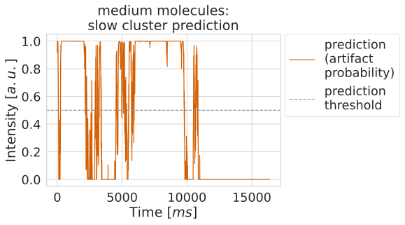
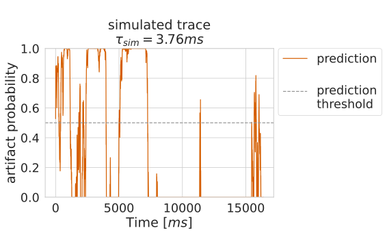
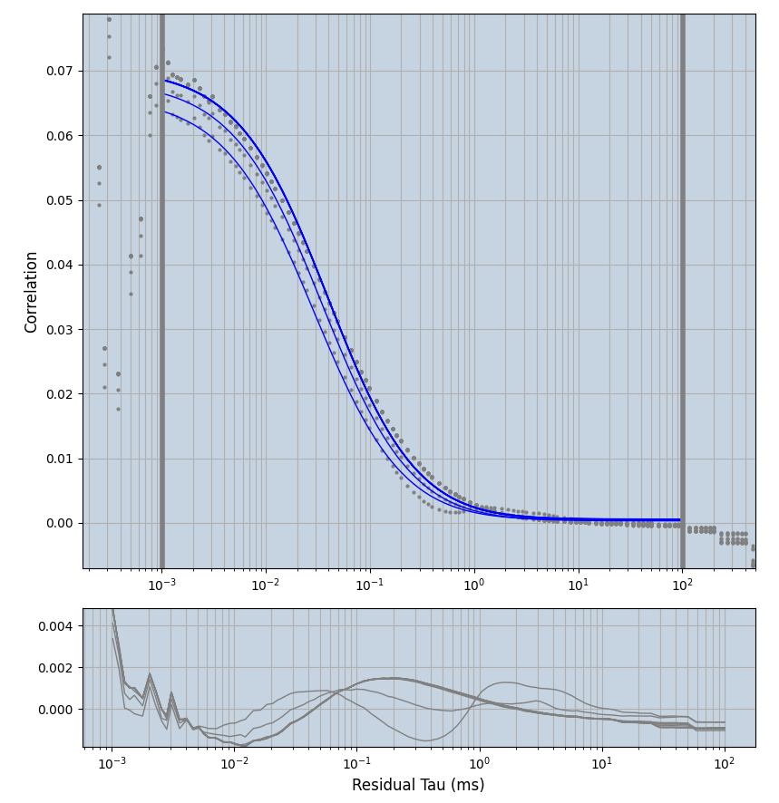
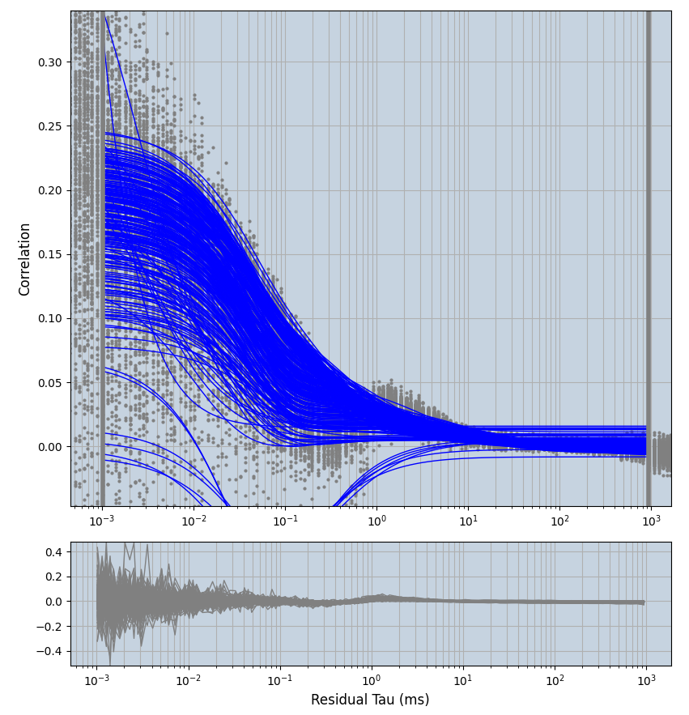
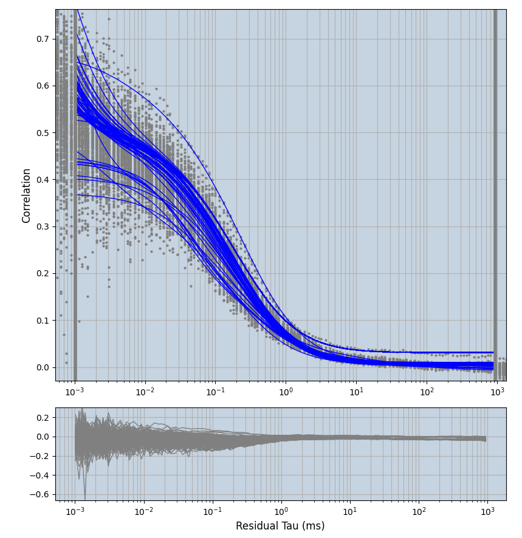
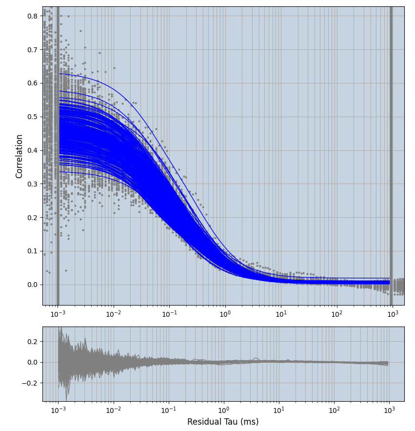

Lab book Fluotracify
1 Technical Notes
1.1 README
1.1.1 General:
- This file corresponds to my lab book for my doctoral thesis tackling artifact correction in Fluorescence Correlation Spectroscopy (FCS) measurements using Deep Neural Networks. It also contains notes taken during the process of setting up this workflow for reproducible research.
- This file contains explanations of how things are organized, of the workflow for doing experiments, changes made to the code, and the observed behavior in the "* Data" section.
- The branching model used is described in this paper. Therefore: if you
are interested in the "* Data" section, you have to
git clonethe data branch of the repository. The main branch is clean from any results, it contains only source code and the analysis. - This project is my take on Open-notebook science. The idea was postulated in
a blog post in 2006:
… there is a URL to a laboratory notebook that is freely available and indexed on common search engines. It does not necessarily have to look like a paper notebook but it is essential that all of the information available to the researchers to make their conclusions is equally available to the rest of the world —Jean-Claude Bradley
- Proposal on how to deal with truly private data (e.g. notes from a confidential meeting with a colleague), which might otherwise be noted in a normal Lab notebook: do not include them here. Only notes relevant to the current project should be taken
1.1.2 Code block languages used in this document
# This is a sh block for shell / bash scripting. In the context of this file, # these blocks are mainly used for operations on my local computer. # In the LabBook.html rendering of this document, these blocks will have a # light green colour (#F0FBE9)
# This block can open and access tmux sessions, used for shell scripting on # remote computing clusters. # In the LabBook.html rendering of this document, these blocks will have a # distinct light green colour (#E1EED8)
# This is a python block. In the context of this file, it is seldomly used # (only for examplary scripts.) # In the LabBook.html rendering of this document, these blocks will have a # light blue colour (#E6EDF4)
# This is a jupyter-python block. The code is sent to a jupyter kernel running # on a remote high performance computing cluster. Most of my jupyter code is # executed this way. # In the LabBook.html rendering of this document, these blocks will have a # light orange colour (#FAEAE1)
;; This is a emacs-lisp block, the language used to customize Emacs, which is ;; sometimes necessary, since the reproducible workflow of this LabBook is ;; tightly integrated with Emacs and org-mode. ;; In the LabBook.html rendering of this document, these blocks will have a ;; light violet colour (#F7ECFB)
This is a literal example block. It can be used very flexibly - in the context of this document the output of most code blocks is displayed this way. In the LabBook.html rendering of this document, these blocks will have a light yellow colour (#FBFBBF)
This is a literal example block enclosed in a details block. This is useful to make the page more readable by collapsing large amounts of output. In the Labbook.html rendering of this document, the details block will have a light grey colour (#f0f0f0) and a pink color when hovering above it.
1.1.3 Experiments workflow:
- Create a new branch from
main - Print out the git log from the latest commit and the metadata
- Call the analysis scripts, follow the principles outlined in Organization of code
- All machine learning runs are saved in
data/mlruns, all other data indata/#experiment-name - Add a
** exp-<date>-<name>" section to this file under Data - Commit/push the results of this separate branch
- Merge this new branch with the remote
databranch
1.1.4 Example for experimental setup procedure
1.1.5 tools used (notes)
1.1.5.1 Emacs magit
gitflow-avh(magit-flow) to follow the flow- possibly https://github.com/magit/magit-annex for large files. Follow this: https://git-annex.branchable.com/walkthrough/
- maybe check out git-toolbelt at some point https://github.com/nvie/git-toolbelt#readme with https://nvie.com/posts/git-power-tools/
1.1.5.2 jupyter
- emacs jupyter for running and connecting to kernel on server: https://github.com/dzop/emacs-jupyter
- if I actually still would use .ipynb files, these might come handy:
- jupytext: https://github.com/mwouts/jupytext
- nbstripout: https://github.com/kynan/nbstripout
1.1.5.3 mlflow
1.1.5.4 tensorflow
1.2 Template for data entry and setup notes:
1.2.1 exp-#date-#title
1.2.1.1 git:
git log -1
1.2.1.2 System Metadata:
import os import pprint ramlist = os.popen('free -th').readlines()[-1].split()[1:] print('No of CPUs in system:', os.cpu_count()) print('No of CPUs the current process can use:', len(os.sched_getaffinity(0))) print('load average:', os.getloadavg()) print('os.uname(): ', os.uname()) print('PID of process:', os.getpid()) print('RAM total: {}, RAM used: {}, RAM free: {}'.format( ramlist[0], ramlist[1], ramlist[2])) !echo the current directory: $PWD !echo My disk usage: !df -h if _long: %conda list pprint.pprint(dict(os.environ), sort_dicts=False)
1.2.1.3 Tmux setup and scripts
rm ~/.tmux-local-socket-remote-machine REMOTE_SOCKET=$(ssh ara 'tmux ls -F "#{socket_path}"' | head -1) echo $REMOTE_SOCKET ssh ara -tfN \ -L ~/.tmux-local-socket-remote-machine:$REMOTE_SOCKET
| rm: | cannot | remove | 'home/lex.tmux-local-socket-remote-machine': | No | such | file | or | directory |
| ye53nis@ara-login01.rz.uni-jena.de's | password: | |||||||
| /tmp/tmux-67339/default | ||||||||
| > | ye53nis@ara-login01.rz.uni-jena.de's | password: |
1.2.1.4 SSH tunneling
Different applications can be run on the remote compute node. If I want to access them at the local machine, and open them with the browser, I use this tunneling script.
ssh -t -t ara -L $port:localhost:$port ssh $node -L $port:Localhost:$port
Apps I use that way:
- Jupyter lab for running Python 3-Kernels
- TensorBoard
- Mlflow ui
1.2.1.5 jupyter scripts
Starting a jupyter instance on a server where the necessary libraries are installed is easy using this script:
conda activate tf export PORT=8889 export XDG_RUNTIME_DIR='' export XDG_RUNTIME_DIR="" jupyter lab --no-browser --port=$PORT
On the compute node of the HPC, the users' environment is managed through
module files using the system Lmod. The export XDG_RUNTIME_DIR statements
are needed because of a jupyter bug which did not let it start. Right now,
ob-tmux does not support a :var header like normal org-babel does. So
the $port variable has to be set here in the template.
Now this port has to be tunnelled on our local computer (See SSH tunneling). While the tmux session above keeps running, no matter if Emacs is running or not, this following ssh tunnel needs to be active locally to connect to the notebook. If you close Emacs, it would need to be reestablished
1.2.2 Setup notes
1.2.2.1 Setting up a tmux connection from using ob-tmux in org-babel
- prerequisite: tmux versions need to be the same locally and on the server.
Let's verify that now.
- the local tmux version:
tmux -V
tmux 3.0a
- the remote tmux version:
ssh ara tmux -V
ye53nis@ara-login01.rz.uni-jena.de's password: tmux 3.0a
- the local tmux version:
- as is described in the ob-tmux readme, the following code snippet creates
a socket on the remote machine and forwards this socket to the local
machine (note that
socket_pathwas introduced in tmux version 2.2)REMOTE_SOCKET=$(ssh ara 'tmux ls -F "#{socket_path}"' | head -1) echo $REMOTE_SOCKET ssh ara -tfN \ -L ~/.tmux-local-socket-remote-machine:$REMOTE_SOCKET
ye53nis@ara-login01.rz.uni-jena.de's password: /tmp/tmux-67339/default > ye53nis@ara-login01.rz.uni-jena.de's password: - now a new tmux session with name
ob-NAMEis created when using a code block which looks like this:#+BEGIN_SRC tmux :socket ~/.tmux-local-socket-remote-machine :session NAME - Commands can be sent now to the remote tmux session, BUT note that the output is not printed yet
- there is a workaround for getting output back to our LabBook.org: A script
which allows to print the output from the tmux session in an
#+begin_example-Block below the tmux block by pressingC-c C-oorC-c C-v C-owhen the pointer is inside the tmux block.
1.2.2.2 emacs-jupyter Setup
Emacs-jupyter aims to be an API for a lot of functionalities of the
jupyter project. The documentation can be found on GitHub.
- For the whole document: connect to a running jupyter instance
M-x jupyter-server-list-kernels- set server URL, e.g.
http://localhost:8889 - set websocket URL, e.g.
http://localhost:8889
- set server URL, e.g.
- two possibilities
- kernel already exists \(\to\) list of kernels and
kernel-IDis displayed - kernel does not exist \(\to\) prompt asks if you want to start one \(\to\)
yes \(\to\) type kernel you want to start, e.g.
Python 3
- kernel already exists \(\to\) list of kernels and
- In the subtree where you want to use
jupyter-pythonblocks withorg babel- set the
:header-args:jupyter-python :session /jpy:localhost#kernel:8889-ID - customize the output folder using the following org-mode variable:
(setq org-babel-jupyter-resource-directory "./data/exp-test/plots")
./data/exp-test/plots
- set the
- For each individual block, the following customizations might be useful
- jupyter kernels can return multiple kinds of rich output (images,
html, …) or scalar data (plain text, numbers, lists, …). To force
a plain output, use
:results scalar. To show the output in the minibuffer only, use:results silent - to change the priority of different rich outputs, use
:displayheader argument, e.g.:display text/plain text/htmlprioritizes plain text over html. All supported mimetypes in default order:- text/org
- image/svg+xml, image/jpeg, image/png
- text/html
- text/markdown
- text/latex
- text/plain
- We can set jupyter to output pandas DataFrames as org tables
automatically using the source block header argument
:pandoc t - useful keybindings
M-ito open the documentation for wherever your pointer is (like pressingShift-TABin Jupyter notebooks)C-c C-ito interrupt the kernel,C-c C-rto restart the kernel
- jupyter kernels can return multiple kinds of rich output (images,
html, …) or scalar data (plain text, numbers, lists, …). To force
a plain output, use
1.2.3 Notes on archiving
1.2.3.1 Exporting the LabBook.org to html in a twbs style
- I am partial to the twitter bootstrap theme of html, since I like it's simple design, but clear structure with a nice table of contents at the side → the following org mode extension supports a seemless export to twitter bootstrap html: https://github.com/marsmining/ox-twbs
- when installed, the export can be triggered via the command
(org-twbs-export-as-html)or via the keyboard shortcut for exportC-c C-efollowed bywfor Twitter bootstrap andhfor saving the .html - Things to configure:
- in general, there are multiple export options: https://orgmode.org/manual/Export-Settings.html
- E.g. I set 2
#+OPTIONSkeywords at the begin of the file:toc:4andH:4which make sure that in my export my sidebar table of contents will show numbered headings till a depth of 4. - I configured my code blocks so that they will not be evaluated when
exporting (I would recommend this especially if you only export for
archiving) and that both the code block and the output will be exported
with the keyword:
#+PROPERTY: header-args :eval never-export :exports both - To discriminate between code blocks for different languages I gave each
of them a distinct colour using
#+HTML_HEAD_EXTRA: <style...(see above) - I had to configure a style for
table, so that thedisplay: block; overflow-x: auto;gets the table to be restricted to the width of the text and if it is larger, activates scrollingwhite-space: nowrap;makes it that there is no wrap in a column, so it might be broader, but better readable if you have scrolling anyway
- Things to do before exporting / Troubleshooting while exporting:
- when using a dark theme for you emacs, the export of the code blocks
might show some ugly dark backgrounds from the theme. If this becomes
an issue, change to a light theme for the export with
M-x (load-theme)and choosesolarized-light - only in the
databranch you set the git tags after merging. If you want to show them here, execute the corresponding function in Git TAGs - make sure your file links work properly! I recommend referencing your files relatively (e.g. [ [ f ile:./data/exp-XXXXXX-test/test.png]] without spaces). Otherwise there will be errors in your Messages buffer
- There might be errors with your code blocks
- e.g. the export function expects you to assign a default variable to your functions
- if you call a function via the
#+CALLmechanism, it wants you to include two parentheses for the function, e.g.#+CALL: test()
- check indentation of code blocks inside lists
- add a
detailsblock around large output cells. This makes them expandable. I added some#+HTML_HEAD_EXTRA: <style...inspired by alhassy. That's how thedetailsblock looks like:#+begin_details #+end_details
- If you reference a parameter with an underscore in the name, use the
org markdown tricks to style them like code (
==or~~), otherwise the part after the underscore will be rendered like a subscript:under_scorevs underscore
- when using a dark theme for you emacs, the export of the code blocks
might show some ugly dark backgrounds from the theme. If this becomes
an issue, change to a light theme for the export with
- Things to do after exporting:
- In my workflow, the exported
LabBook.htmlwith the overview of all experiments is in thedatafolder. If you move the file, you will have to fix the file links for the new location, e.g. via "Find and replace"M-%:- if you move the org file → in the org file find
[[file:./data/and replace with[[file:./→ then export withC-c C-e w h - if you export first with
C-c C-e w hand move the html file todata→ in the html file find./dataand replace with.
- if you move the org file → in the org file find
- In my workflow, the exported
1.3 Organization of git
1.3.1 remote/origin/main branch:
- contains all the source code in folder src/ which is used for experiments.
- contains the LabBook.org template
- contains setup- and metadata files such as MLproject or conda.yaml
- the log contains only lasting alterations on the folders and files mentioned above, which are e.g. used for conducting experiments or which introduce new features. Day-to-day changes in code
1.3.2 remote/origin/exp### branches:
- if an experiment is done, the code and templates will be branched out from main in an #experiment-name branch, ### meaning some meaningful descriptor.
- all data generated during the experiment (e.g. .csv files, plots, images, etc), is stored in a folder with the name data/#experiment-name, except machine learning-specific data and metadata from `mlflow` runs, which are saved under data/mlruns (this allows easily comparing machine learning runs with different experimental settings)
- The LabBook.org file is essential
- If possible, all code is executed from inside this file (meaning analysis scripts or calling the code from the scr/ directory).
- All other steps taken during an experiment are noted down, as well as conclusions or my thought process while conducting the experiment
- Provenance data, such as Metadata about the environment the code was executed in, the command line output of the code, and some
1.3.3 remote/origin/develop branch:
- this is the branch I use for day to day work on features and exploration. All of my current activity can be followed here.
1.3.4 remote/origin/data branch:
- contains a full cronicle of the whole research process
- all #experiment-name branches are merged here. Afterwards the original branch is deleted and on the data branch there is a Git tag which shows the merge commit to make accessing single experiments easy.
- the develop branch is merged here as well.
1.3.5 Git TAGs
1.3.5.1 Stable versions:
1.3.5.2 All tags from git:
git push origin --tags git tag -n1
exp-200402-test Merge branch 'exp-200402-test' into data exp-200520-unet Merge branch 'exp-310520-unet' into data exp-200531-unet Merge branch 'heads/exp-310520-unet' into data exp-201231-clustsim exp-201231-clustsim exp-210204-unet Add exp-210204-unet LabBook part 3 exp-310520-unet move exp-310520-unet to data branch manually
1.4 Organization of code
1.4.1 scripts:
1.4.2 src/
1.4.2.1 fluotracify/
- imports/
- simulations/
- training/
- applications/
- doc/
- use Sphinx
- follow this: https://daler.github.io/sphinxdoc-test/includeme.html
- evtl export org-mode Readme to rst via https://github.com/msnoigrs/ox-rst
- possibly heavily use http://www.sphinx-doc.org/en/master/usage/extensions/autodoc.html
- for examples sphinx-galleries could be useful https://sphinx-gallery.github.io/stable/getting_started.html
- use Sphinx
1.4.2.2 nanosimpy/
- cloned from dwaithe with refactoring for Python 3-compatibility
1.5 Changes in this repository (without "* Data" in this file)
1.5.1 Changes in LabBook.org (without "* Data")
1.5.1.1 2022-02-19
- Add
#+HTML_HEAD_EXTRA: <style...fortableto enable scrolling if the table overflows
1.5.1.2 2021-12-16
- Add
detailsblocks, corresponding#+HTML_HEAD_EXTRA: <style...and documentation in Notes on archiving
1.5.1.3 2021-08-05
- Rename
masterbranch tomainbranch
1.5.1.4 2021-04-04
- Add
#+OPTIONS: H:4and#+OPTIONS: toc:4to show up to 4 levels of depth in the html (twbs) export of this LabBook in the table of contents at the side - I added Notes on archiving
1.5.1.5 2020-11-04
- update "jupyter scripts" in Template for data entry and setup notes:
for new conda environment on server (now
conda activate tf-nightly)
1.5.1.6 2020-05-31
- extend general documentation in README
- Add code block examples
- extend documentation on experiment workflow
- move setup notes from README to "Template for data entry and setup notes"
- remove emacs-lisp code for custom tmux block functions (not relevant enough)
- change named "jpt-tmux" from starting a jupyter notebook to starting
jupyter lab. Load a conda environment instead of using Lmod's
module load
1.5.1.7 2020-05-07
- extend documentation on git model
- extend documentation on jupyter setup
1.5.1.8 2020-04-22
- added parts of README which describe the experimental process
- added templates for system metadata, tmux, jupyter setup
- added organization of code
1.5.1.9 2020-03-30
- set up lab book and form git repo accoring to setup by Luka Stanisic et al
1.5.2 Changes in src/fluotracify
2 Data
2.1 exp-220227-unet
2.1.1 Setup: GPU node on HPC
- Setup tmux
rm: cannot remove 'home/lex.tmux-local-socket-remote-machine': No such file or directory ye53nis@ara-login01.rz.uni-jena.de's password: home/lex.tmux-local-socket-remote-machine > ye53nis@ara-login01.rz.uni-jena.de's password: - first, connect with the GPU node in the high performance cluster
cd / srun -p gpu_p100 --time=7-10:00:00 --ntasks-per-node=12 --mem-per-cpu=4000 --gres=gpu:1 --pty bash
(base) [ye53nis@node128 /]$
- Load CUDA and cuDNN in the version compatible to your tensorflow library
(see https://www.tensorflow.org/install/source#gpu)
module load nvidia/cuda/11.2 module load nvidia/cudnn/8.1 module list
Currently Loaded Modulefiles: 1) nvidia/cuda/11.2 2) nvidia/cudnn/8.1 (base) [ye53nis@node128 /]$
- Branch out git branch
exp-210807-hparamsfrommain(done via magit) and make sure you are on the correct branchcd /beegfs/ye53nis/drmed-git git checkout exp-220227-unet
Checking out files: 100% (147/147), done. M src/nanosimpy Branch exp-220227-unet set up to track remote branch exp-220227-unet from origin. Switched to a new branch 'exp-220227-unet' (base) [ye53nis@node128 drmed-git]$
- load conda environment, define MLflow environment variables and create log directory
conda activate tf cd /beegfs/ye53nis/drmed-git export MLFLOW_EXPERIMENT_NAME=exp-220227-unet export MLFLOW_TRACKING_URI=file:./data/mlruns mkdir -p data/exp-220227-unet/jupyter mkdir ../tmp
(tf) [ye53nis@node128 drmed-git]$
- set output directory for matplotlib plots in jupyter. Give this block the
name
jupyter-set-output-directoryto be able to easily call it later.(setq org-babel-jupyter-resource-directory "./data/exp-220227-unet/jupyter")
./data/exp-220227-unet/jupyter
2.1.2 Setup: Jupyter node on HPC
- Set up tmux (if we haven't done that before) (
#+CALL: setup-tmux[:session local])sh-5.1$ ye53nis@ara-login01.rz.uni-jena.de's password: > ye53nis@ara-login01.rz.uni-jena.de's password: - Request compute node
cd / srun -p b_standard --time=7-10:00:00 --ntasks-per-node=24 --mem-per-cpu=2000 --pty bash
- Start Jupyter Lab (
#+CALL: jpt-tmux[:session jpmux])(tf) [ye53nis@node005 /]$ jupyter lab --no-browser --port=$PORT [I 2023-01-18 11:33:10.992 ServerApp] jupyterlab | extension was successfully linked. [I 2023-01-18 11:33:20.469 ServerApp] nbclassic | extension was successfully linked. [I 2023-01-18 11:33:20.932 ServerApp] nbclassic | extension was successfully loaded. [I 2023-01-18 11:33:20.935 LabApp] JupyterLab extension loaded from /home/ye53nis/.conda/envs/tf/lib/python3.9/site-packages/jupyterlab [I 2023-01-18 11:33:20.935 LabApp] JupyterLab application directory is /home/ye53nis/.conda/envs/tf/share/jupyter/lab [I 2023-01-18 11:33:20.943 ServerApp] jupyterlab | extension was successfully loaded. [I 2023-01-18 11:33:20.945 ServerApp] Serving notebooks from local directory: / [I 2023-01-18 11:33:20.945 ServerApp] Jupyter Server 1.13.5 is running at: [I 2023-01-18 11:33:20.945 ServerApp] http://localhost:8889/lab?token=f8a5db2d00721ed0a736f6a6fc2a21020172913cc2337ec0 [I 2023-01-18 11:33:20.945 ServerApp] or http://127.0.0.1:8889/lab?token=f8a5db2d00721ed0a736f6a6fc2a21020172913cc2337ec0 [I 2023-01-18 11:33:20.945 ServerApp] Use Control-C to stop this server and shut down all kernels (twice to skip confirmation). [C 2023-01-18 11:33:21.003 ServerApp] To access the server, open this file in a browser: file:///home/ye53nis/.local/share/jupyter/runtime/jpserver-183673-open.html Or copy and paste one of these URLs: http://localhost:8889/lab?token=f8a5db2d00721ed0a736f6a6fc2a21020172913cc2337ec0 or http://127.0.0.1:8889/lab?token=f8a5db2d00721ed0a736f6a6fc2a21020172913cc2337ec0 - Create SSH Tunnel for jupyter lab to the local computer (e.g.
#+CALL: ssh-tunnel(port="8889", node="node160"))sh-5.1$ sh-5.1$ ye53nis@ara-login01.rz.uni-jena.de's password: Warning: Permanently added 'node005,192.168.193.5' (ECDSA) to the list of known hosts. ye53nis@node005's password: - I started a Python3 kernel using
jupyter-server-list-kernels. Then I added the kernel ID to the:PROPERTIES:drawer of this (and following) subtrees.python3 c4f3acce-60c4-489d-922c-407da110fd6a a few seconds ago idle 1
- Test (
#+CALL: jp-metadata(_long='True)) and record metadata:No of CPUs in system: 48 No of CPUs the current process can use: 24 load average: (24.2, 19.65, 11.23) os.uname(): posix.uname_result(sysname='Linux', nodename='node034', release='3.10.0-957.1.3.el7.x86_64', version='#1 SMP Thu Nov 29 14:49:43 UTC 2018', machine='x86_64') PID of process: 102013 RAM total: 137G, RAM used: 34G, RAM free: 64G the current directory: / My disk usage: Filesystem Size Used Avail Use% Mounted on /dev/sda1 50G 4.9G 46G 10% / devtmpfs 63G 0 63G 0% /dev tmpfs 63G 707M 63G 2% /dev/shm tmpfs 63G 107M 63G 1% /run tmpfs 63G 0 63G 0% /sys/fs/cgroup nfs01-ib:/home 80T 71T 9.2T 89% /home nfs03-ib:/pool/work 100T 72T 29T 72% /nfsdata nfs01-ib:/cluster 2.0T 486G 1.6T 24% /cluster /dev/sda5 2.0G 34M 2.0G 2% /tmp /dev/sda6 169G 4.0G 165G 3% /local /dev/sda3 6.0G 438M 5.6G 8% /var beegfs_nodev 524T 441T 84T 85% /beegfs tmpfs 13G 0 13G 0% /run/user/67339# packages in environment at /home/ye53nis/.conda/envs/tf: # # Name Version Build Channel _libgcc_mutex 0.1 main _openmp_mutex 5.1 1_gnu absl-py 1.0.0 pypi_0 pypi alembic 1.7.7 pypi_0 pypi anyio 3.5.0 py39h06a4308_0 argon2-cffi 21.3.0 pyhd3eb1b0_0 argon2-cffi-bindings 21.2.0 py39h7f8727e_0 asteval 0.9.26 pypi_0 pypi asttokens 2.0.5 pyhd3eb1b0_0 astunparse 1.6.3 pypi_0 pypi attrs 21.4.0 pyhd3eb1b0_0 babel 2.9.1 pyhd3eb1b0_0 backcall 0.2.0 pyhd3eb1b0_0 beautifulsoup4 4.11.1 py39h06a4308_0 bleach 4.1.0 pyhd3eb1b0_0 brotlipy 0.7.0 py39h27cfd23_1003 ca-certificates 2022.4.26 h06a4308_0 cachetools 5.1.0 pypi_0 pypi certifi 2021.10.8 py39h06a4308_2 cffi 1.15.0 py39hd667e15_1 charset-normalizer 2.0.4 pyhd3eb1b0_0 click 8.1.3 pypi_0 pypi cloudpickle 2.0.0 pypi_0 pypi cryptography 37.0.1 py39h9ce1e76_0 cycler 0.11.0 pypi_0 pypi cython 0.29.30 pypi_0 pypi databricks-cli 0.16.6 pypi_0 pypi debugpy 1.5.1 py39h295c915_0 decorator 5.1.1 pyhd3eb1b0_0 defusedxml 0.7.1 pyhd3eb1b0_0 docker 5.0.3 pypi_0 pypi entrypoints 0.4 py39h06a4308_0 executing 0.8.3 pyhd3eb1b0_0 fcsfiles 2022.2.2 pypi_0 pypi flask 2.1.2 pypi_0 pypi flatbuffers 1.12 pypi_0 pypi fonttools 4.33.3 pypi_0 pypi future 0.18.2 pypi_0 pypi gast 0.4.0 pypi_0 pypi gitdb 4.0.9 pypi_0 pypi gitpython 3.1.27 pypi_0 pypi google-auth 2.6.6 pypi_0 pypi google-auth-oauthlib 0.4.6 pypi_0 pypi google-pasta 0.2.0 pypi_0 pypi greenlet 1.1.2 pypi_0 pypi grpcio 1.46.1 pypi_0 pypi gunicorn 20.1.0 pypi_0 pypi h5py 3.6.0 pypi_0 pypi idna 3.3 pyhd3eb1b0_0 importlib-metadata 4.11.3 pypi_0 pypi ipykernel 6.9.1 py39h06a4308_0 ipython 8.3.0 py39h06a4308_0 ipython_genutils 0.2.0 pyhd3eb1b0_1 itsdangerous 2.1.2 pypi_0 pypi jedi 0.18.1 py39h06a4308_1 jinja2 3.0.3 pyhd3eb1b0_0 joblib 1.1.0 pypi_0 pypi json5 0.9.6 pyhd3eb1b0_0 jsonschema 4.4.0 py39h06a4308_0 jupyter_client 7.2.2 py39h06a4308_0 jupyter_core 4.10.0 py39h06a4308_0 jupyter_server 1.13.5 pyhd3eb1b0_0 jupyterlab 3.3.2 pyhd3eb1b0_0 jupyterlab_pygments 0.1.2 py_0 jupyterlab_server 2.12.0 py39h06a4308_0 keras 2.9.0 pypi_0 pypi keras-preprocessing 1.1.2 pypi_0 pypi kiwisolver 1.4.2 pypi_0 pypi ld_impl_linux-64 2.38 h1181459_0 libclang 14.0.1 pypi_0 pypi libffi 3.3 he6710b0_2 libgcc-ng 11.2.0 h1234567_0 libgomp 11.2.0 h1234567_0 libsodium 1.0.18 h7b6447c_0 libstdcxx-ng 11.2.0 h1234567_0 lmfit 1.0.3 pypi_0 pypi mako 1.2.0 pypi_0 pypi markdown 3.3.7 pypi_0 pypi markupsafe 2.0.1 py39h27cfd23_0 matplotlib 3.5.2 pypi_0 pypi matplotlib-inline 0.1.2 pyhd3eb1b0_2 mistune 0.8.4 py39h27cfd23_1000 mlflow 1.26.0 pypi_0 pypi multipletau 0.3.3 pypi_0 pypi nbclassic 0.3.5 pyhd3eb1b0_0 nbclient 0.5.13 py39h06a4308_0 nbconvert 6.4.4 py39h06a4308_0 nbformat 5.3.0 py39h06a4308_0 ncurses 6.3 h7f8727e_2 nest-asyncio 1.5.5 py39h06a4308_0 notebook 6.4.11 py39h06a4308_0 numpy 1.22.3 pypi_0 pypi oauthlib 3.2.0 pypi_0 pypi openssl 1.1.1o h7f8727e_0 opt-einsum 3.3.0 pypi_0 pypi packaging 21.3 pyhd3eb1b0_0 pandas 1.4.2 pypi_0 pypi pandocfilters 1.5.0 pyhd3eb1b0_0 parso 0.8.3 pyhd3eb1b0_0 pexpect 4.8.0 pyhd3eb1b0_3 pickleshare 0.7.5 pyhd3eb1b0_1003 pillow 9.1.1 pypi_0 pypi pip 21.2.4 py39h06a4308_0 prometheus-flask-exporter 0.20.1 pypi_0 pypi prometheus_client 0.13.1 pyhd3eb1b0_0 prompt-toolkit 3.0.20 pyhd3eb1b0_0 protobuf 3.20.1 pypi_0 pypi ptyprocess 0.7.0 pyhd3eb1b0_2 pure_eval 0.2.2 pyhd3eb1b0_0 pyasn1 0.4.8 pypi_0 pypi pyasn1-modules 0.2.8 pypi_0 pypi pycparser 2.21 pyhd3eb1b0_0 pygments 2.11.2 pyhd3eb1b0_0 pyjwt 2.4.0 pypi_0 pypi pyopenssl 22.0.0 pyhd3eb1b0_0 pyparsing 3.0.4 pyhd3eb1b0_0 pyrsistent 0.18.0 py39heee7806_0 pysocks 1.7.1 py39h06a4308_0 python 3.9.12 h12debd9_0 python-dateutil 2.8.2 pyhd3eb1b0_0 python-fastjsonschema 2.15.1 pyhd3eb1b0_0 pytz 2021.3 pyhd3eb1b0_0 pyyaml 6.0 pypi_0 pypi pyzmq 22.3.0 py39h295c915_2 querystring-parser 1.2.4 pypi_0 pypi readline 8.1.2 h7f8727e_1 requests 2.27.1 pyhd3eb1b0_0 requests-oauthlib 1.3.1 pypi_0 pypi rsa 4.8 pypi_0 pypi scikit-learn 1.1.0 pypi_0 pypi scipy 1.8.1 pypi_0 pypi seaborn 0.11.2 pypi_0 pypi send2trash 1.8.0 pyhd3eb1b0_1 setuptools 61.2.0 py39h06a4308_0 six 1.16.0 pyhd3eb1b0_1 smmap 5.0.0 pypi_0 pypi sniffio 1.2.0 py39h06a4308_1 soupsieve 2.3.1 pyhd3eb1b0_0 sqlalchemy 1.4.36 pypi_0 pypi sqlite 3.38.3 hc218d9a_0 sqlparse 0.4.2 pypi_0 pypi stack_data 0.2.0 pyhd3eb1b0_0 tabulate 0.8.9 pypi_0 pypi tensorboard 2.9.0 pypi_0 pypi tensorboard-data-server 0.6.1 pypi_0 pypi tensorboard-plugin-wit 1.8.1 pypi_0 pypi tensorflow 2.9.0 pypi_0 pypi tensorflow-estimator 2.9.0 pypi_0 pypi tensorflow-io-gcs-filesystem 0.26.0 pypi_0 pypi termcolor 1.1.0 pypi_0 pypi terminado 0.13.1 py39h06a4308_0 testpath 0.5.0 pyhd3eb1b0_0 threadpoolctl 3.1.0 pypi_0 pypi tk 8.6.11 h1ccaba5_1 tornado 6.1 py39h27cfd23_0 traitlets 5.1.1 pyhd3eb1b0_0 typing-extensions 4.1.1 hd3eb1b0_0 typing_extensions 4.1.1 pyh06a4308_0 tzdata 2022a hda174b7_0 uncertainties 3.1.6 pypi_0 pypi urllib3 1.26.9 py39h06a4308_0 wcwidth 0.2.5 pyhd3eb1b0_0 webencodings 0.5.1 py39h06a4308_1 websocket-client 0.58.0 py39h06a4308_4 werkzeug 2.1.2 pypi_0 pypi wheel 0.37.1 pyhd3eb1b0_0 wrapt 1.14.1 pypi_0 pypi xz 5.2.5 h7f8727e_1 zeromq 4.3.4 h2531618_0 zipp 3.8.0 pypi_0 pypi zlib 1.2.12 h7f8727e_2 Note: you may need to restart the kernel to use updated packages. {'SLURM_CHECKPOINT_IMAGE_DIR': '/var/slurm/checkpoint', 'SLURM_NODELIST': 'node034', 'SLURM_JOB_NAME': 'bash', 'XDG_SESSION_ID': '135386', 'SLURMD_NODENAME': 'node034', 'SLURM_TOPOLOGY_ADDR': 'node034', 'SLURM_NTASKS_PER_NODE': '24', 'HOSTNAME': 'login01', 'SLURM_PRIO_PROCESS': '0', 'SLURM_SRUN_COMM_PORT': '40968', 'SHELL': '/bin/bash', 'TERM': 'xterm-color', 'SLURM_JOB_QOS': 'qstand', 'SLURM_PTY_WIN_ROW': '48', 'HISTSIZE': '1000', 'TMPDIR': '/tmp', 'SLURM_TOPOLOGY_ADDR_PATTERN': 'node', 'SSH_CLIENT': '10.231.185.64 42170 22', 'CONDA_SHLVL': '2', 'CONDA_PROMPT_MODIFIER': '(tf) ', 'WINDOWID': '0', 'QTDIR': '/usr/lib64/qt-3.3', 'QTINC': '/usr/lib64/qt-3.3/include', 'SSH_TTY': '/dev/pts/19', 'NO_PROXY': 'localhost,127.0.0.0/8,.uni-jena.de,141.35.0.0/16,10.0.0.0/8,192.168.0.0/16,172.0.0.0/8,fe80::/7,2001:638:1558::/24,vmaster,node001', 'QT_GRAPHICSSYSTEM_CHECKED': '1', 'SLURM_NNODES': '1', 'USER': 'ye53nis', 'http_proxy': 'http://internet4nzm.rz.uni-jena.de:3128', 'LS_COLORS': 'rs=0:di=01;34:ln=01;36:mh=00:pi=40;33:so=01;35:do=01;35:bd=40;33;01:cd=40;33;01:or=40;31;01:mi=01;05;37;41:su=37;41:sg=30;43:ca=30;41:tw=30;42:ow=34;42:st=37;44:ex=01;32:*.tar=01;31:*.tgz=01;31:*.arc=01;31:*.arj=01;31:*.taz=01;31:*.lha=01;31:*.lz4=01;31:*.lzh=01;31:*.lzma=01;31:*.tlz=01;31:*.txz=01;31:*.tzo=01;31:*.t7z=01;31:*.zip=01;31:*.z=01;31:*.Z=01;31:*.dz=01;31:*.gz=01;31:*.lrz=01;31:*.lz=01;31:*.lzo=01;31:*.xz=01;31:*.bz2=01;31:*.bz=01;31:*.tbz=01;31:*.tbz2=01;31:*.tz=01;31:*.deb=01;31:*.rpm=01;31:*.jar=01;31:*.war=01;31:*.ear=01;31:*.sar=01;31:*.rar=01;31:*.alz=01;31:*.ace=01;31:*.zoo=01;31:*.cpio=01;31:*.7z=01;31:*.rz=01;31:*.cab=01;31:*.jpg=01;35:*.jpeg=01;35:*.gif=01;35:*.bmp=01;35:*.pbm=01;35:*.pgm=01;35:*.ppm=01;35:*.tga=01;35:*.xbm=01;35:*.xpm=01;35:*.tif=01;35:*.tiff=01;35:*.png=01;35:*.svg=01;35:*.svgz=01;35:*.mng=01;35:*.pcx=01;35:*.mov=01;35:*.mpg=01;35:*.mpeg=01;35:*.m2v=01;35:*.mkv=01;35:*.webm=01;35:*.ogm=01;35:*.mp4=01;35:*.m4v=01;35:*.mp4v=01;35:*.vob=01;35:*.qt=01;35:*.nuv=01;35:*.wmv=01;35:*.asf=01;35:*.rm=01;35:*.rmvb=01;35:*.flc=01;35:*.avi=01;35:*.fli=01;35:*.flv=01;35:*.gl=01;35:*.dl=01;35:*.xcf=01;35:*.xwd=01;35:*.yuv=01;35:*.cgm=01;35:*.emf=01;35:*.axv=01;35:*.anx=01;35:*.ogv=01;35:*.ogx=01;35:*.aac=01;36:*.au=01;36:*.flac=01;36:*.mid=01;36:*.midi=01;36:*.mka=01;36:*.mp3=01;36:*.mpc=01;36:*.ogg=01;36:*.ra=01;36:*.wav=01;36:*.axa=01;36:*.oga=01;36:*.spx=01;36:*.xspf=01;36:', 'CONDA_EXE': '/cluster/miniconda3/bin/conda', 'SLURM_STEP_NUM_NODES': '1', 'SLURM_JOBID': '1657237', 'SRUN_DEBUG': '3', 'FTP_PROXY': 'http://internet4nzm.rz.uni-jena.de:3128', 'ftp_proxy': 'http://internet4nzm.rz.uni-jena.de:3128', 'SLURM_NTASKS': '24', 'SLURM_LAUNCH_NODE_IPADDR': '192.168.192.5', 'SLURM_STEP_ID': '0', 'TMUX': '/tmp/tmux-67339/default,14861,2', '_CE_CONDA': '', 'CONDA_PREFIX_1': '/cluster/miniconda3', 'SLURM_STEP_LAUNCHER_PORT': '40968', 'SLURM_TASKS_PER_NODE': '24', 'MAIL': '/var/spool/mail/ye53nis', 'PATH': '/home/ye53nis/.conda/envs/tf/bin:/home/lex/Programme/miniconda3/envs/tf/bin:/home/lex/Programme/miniconda3/condabin:/home/lex/.local/bin:/bin:/usr/bin:/usr/local/bin:/usr/local/sbin:/usr/lib/jvm/default/bin:/usr/bin/site_perl:/usr/bin/vendor_perl:/usr/bin/core_perl:/var/lib/snapd/snap/bin:/home/lex/Programme/miniconda3/bin:/usr/sbin:/home/ye53nis/.local/bin:/home/ye53nis/bin', 'SLURM_WORKING_CLUSTER': 'hpc:192.168.192.1:6817:8448', 'SLURM_JOB_ID': '1657237', 'CONDA_PREFIX': '/home/ye53nis/.conda/envs/tf', 'SLURM_JOB_USER': 'ye53nis', 'SLURM_STEPID': '0', 'PWD': '/', 'SLURM_SRUN_COMM_HOST': '192.168.192.5', 'LANG': 'en_US.UTF-8', 'SLURM_PTY_WIN_COL': '236', 'SLURM_UMASK': '0022', 'MODULEPATH': '/usr/share/Modules/modulefiles:/etc/modulefiles:/cluster/modulefiles', 'SLURM_JOB_UID': '67339', 'LOADEDMODULES': '', 'SLURM_NODEID': '0', 'TMUX_PANE': '%2', 'SLURM_SUBMIT_DIR': '/', 'SLURM_TASK_PID': '100551', 'SLURM_NPROCS': '24', 'SLURM_CPUS_ON_NODE': '24', 'SLURM_DISTRIBUTION': 'block', 'HTTPS_PROXY': 'http://internet4nzm.rz.uni-jena.de:3128', 'https_proxy': 'http://internet4nzm.rz.uni-jena.de:3128', 'SLURM_PROCID': '0', 'HISTCONTROL': 'ignoredups', '_CE_M': '', 'SLURM_JOB_NODELIST': 'node034', 'SLURM_PTY_PORT': '43329', 'HOME': '/home/ye53nis', 'SHLVL': '3', 'SLURM_LOCALID': '0', 'SLURM_JOB_GID': '13280', 'SLURM_JOB_CPUS_PER_NODE': '24', 'SLURM_CLUSTER_NAME': 'hpc', 'no_proxy': 'localhost,127.0.0.0/8,.uni-jena.de,141.35.0.0/16,10.0.0.0/8,192.168.0.0/16,172.0.0.0/8,fe80::/7,2001:638:1558::/24,vmaster,node001', 'SLURM_GTIDS': '0,1,2,3,4,5,6,7,8,9,10,11,12,13,14,15,16,17,18,19,20,21,22,23', 'SLURM_SUBMIT_HOST': 'login01', 'HTTP_PROXY': 'http://internet4nzm.rz.uni-jena.de:3128', 'SLURM_JOB_PARTITION': 'b_standard', 'MATHEMATICA_HOME': '/cluster/apps/mathematica/12.3', 'CONDA_PYTHON_EXE': '/cluster/miniconda3/bin/python', 'LOGNAME': 'ye53nis', 'SLURM_STEP_NUM_TASKS': '24', 'QTLIB': '/usr/lib64/qt-3.3/lib', 'SLURM_JOB_ACCOUNT': 'iaob', 'SLURM_JOB_NUM_NODES': '1', 'MODULESHOME': '/usr/share/Modules', 'CONDA_DEFAULT_ENV': 'tf', 'LESSOPEN': '||/usr/bin/lesspipe.sh %s', 'SLURM_STEP_TASKS_PER_NODE': '24', 'PORT': '8889', 'SLURM_STEP_NODELIST': 'node034', 'DISPLAY': ':0', 'XDG_RUNTIME_DIR': '', 'XAUTHORITY': '/home/lex/.Xauthority', 'BASH_FUNC_module()': '() { eval `/usr/bin/modulecmd bash $*`\n}', '_': '/home/ye53nis/.conda/envs/tf/bin/jupyter', 'PYDEVD_USE_FRAME_EVAL': 'NO', 'JPY_PARENT_PID': '100629', 'CLICOLOR': '1', 'PAGER': 'cat', 'GIT_PAGER': 'cat', 'MPLBACKEND': 'module://matplotlib_inline.backend_inline'}
2.1.3 Setup: Jupyter on local computer
- on our local machine we don't need tmux. A simple sh command is enough. So
let's start the conda environment in the sh session
localand start jupterlab there.conda activate tf jupyter lab --no-browser --port=8888
[I 2022-05-22 14:24:33.496 ServerApp] jupyterlab | extension was successfully linked. [I 2022-05-22 14:24:33.745 ServerApp] nbclassic | extension was successfully linked. [I 2022-05-22 14:24:33.786 LabApp] JupyterLab extension loaded from /home/lex/Programme/miniconda3/envs/tf/lib/python3.9/site-packages/jupyterlab [I 2022-05-22 14:24:33.786 LabApp] JupyterLab application directory is /home/lex/Programme/miniconda3/envs/tf/share/jupyter/lab [I 2022-05-22 14:24:33.790 ServerApp] jupyterlab | extension was successfully loaded. [I 2022-05-22 14:24:33.799 ServerApp] nbclassic | extension was successfully loaded. [I 2022-05-22 14:24:33.800 ServerApp] Serving notebooks from local directory: /home/lex/Programme/drmed-git [I 2022-05-22 14:24:33.800 ServerApp] Jupyter Server 1.4.1 is running at: [I 2022-05-22 14:24:33.800 ServerApp] http://localhost:8888/lab?token=1d0362f7e2280b0060620c901abee258910e16c879bc0870 [I 2022-05-22 14:24:33.800 ServerApp] or http://127.0.0.1:8888/lab?token=1d0362f7e2280b0060620c901abee258910e16c879bc0870 [I 2022-05-22 14:24:33.800 ServerApp] Use Control-C to stop this server and shut down all kernels (twice to skip confirmation). [C 2022-05-22 14:24:33.804 ServerApp] To access the server, open this file in a browser: file:///home/lex/.local/share/jupyter/runtime/jpserver-1749996-open.html Or copy and paste one of these URLs: http://localhost:8888/lab?token=1d0362f7e2280b0060620c901abee258910e16c879bc0870 or http://127.0.0.1:8888/lab?token=1d0362f7e2280b0060620c901abee258910e16c879bc0870 - I started a Python3 kernel using
jupyter-server-list-kernels. Then I added the kernel ID to the:PROPERTIES:drawer of this (and following) subtrees.python3 03038b73-b2b5-49ce-a1dc-21afb6247d0f a few seconds ago starting 0
- Test: (
#+CALL: jp-metadata(_long='True))No of CPUs in system: 4 No of CPUs the current process can use: 4 load average: (0.93115234375, 0.97216796875, 0.5595703125) os.uname(): posix.uname_result(sysname='Linux', nodename='Topialex', release='5.15.28-1-MANJARO', version='#1 SMP PREEMPT Fri Mar 11 14:12:57 UTC 2022', machine='x86_64') PID of process: 8991 RAM total: 16Gi, RAM used: 1,8Gi, RAM free: 12Gi the current directory: /home/lex/Programme/drmed-git My disk usage: Filesystem Size Used Avail Use% Mounted on dev 3,9G 0 3,9G 0% /dev run 3,9G 1,5M 3,9G 1% /run /dev/sda2 167G 131G 28G 83% / tmpfs 3,9G 63M 3,8G 2% /dev/shm tmpfs 3,9G 4,2M 3,9G 1% /tmp /dev/sda1 300M 264K 300M 1% /boot/efi tmpfs 784M 80K 784M 1% /run/user/1000# packages in environment at /home/lex/Programme/miniconda3/envs/tf: # # Name Version Build Channel _libgcc_mutex 0.1 main _openmp_mutex 4.5 1_gnu absl-py 1.0.0 pypi_0 pypi alembic 1.4.1 pypi_0 pypi anyio 2.2.0 py39h06a4308_1 argon2-cffi 20.1.0 py39h27cfd23_1 asteval 0.9.25 pypi_0 pypi astroid 2.9.2 pypi_0 pypi astunparse 1.6.3 pypi_0 pypi async_generator 1.10 pyhd3eb1b0_0 attrs 21.2.0 pyhd3eb1b0_0 babel 2.9.1 pyhd3eb1b0_0 backcall 0.2.0 pyhd3eb1b0_0 bleach 4.0.0 pyhd3eb1b0_0 brotlipy 0.7.0 py39h27cfd23_1003 ca-certificates 2021.10.26 h06a4308_2 cachetools 4.2.4 pypi_0 pypi certifi 2021.10.8 py39h06a4308_0 cffi 1.14.6 py39h400218f_0 charset-normalizer 2.0.4 pyhd3eb1b0_0 click 8.0.3 pypi_0 pypi cloudpickle 2.0.0 pypi_0 pypi cryptography 36.0.0 py39h9ce1e76_0 cycler 0.11.0 pypi_0 pypi cython 0.29.26 pypi_0 pypi databricks-cli 0.16.2 pypi_0 pypi debugpy 1.5.1 py39h295c915_0 decorator 5.1.0 pyhd3eb1b0_0 defusedxml 0.7.1 pyhd3eb1b0_0 docker 5.0.3 pypi_0 pypi entrypoints 0.3 py39h06a4308_0 fcsfiles 2021.6.6 pypi_0 pypi flake8 4.0.1 pypi_0 pypi flask 2.0.2 pypi_0 pypi flatbuffers 2.0 pypi_0 pypi focuspoint 0.1 pypi_0 pypi fonttools 4.28.5 pypi_0 pypi future 0.18.2 pypi_0 pypi gast 0.4.0 pypi_0 pypi gitdb 4.0.9 pypi_0 pypi gitpython 3.1.24 pypi_0 pypi google-auth 2.3.3 pypi_0 pypi google-auth-oauthlib 0.4.6 pypi_0 pypi google-pasta 0.2.0 pypi_0 pypi greenlet 1.1.2 pypi_0 pypi grpcio 1.43.0 pypi_0 pypi gunicorn 20.1.0 pypi_0 pypi h5py 3.6.0 pypi_0 pypi idna 3.3 pyhd3eb1b0_0 importlib-metadata 4.8.2 py39h06a4308_0 importlib_metadata 4.8.2 hd3eb1b0_0 ipykernel 6.4.1 py39h06a4308_1 ipython 7.29.0 py39hb070fc8_0 ipython_genutils 0.2.0 pyhd3eb1b0_1 isort 5.10.1 pypi_0 pypi itsdangerous 2.0.1 pypi_0 pypi jedi 0.18.0 py39h06a4308_1 jinja2 3.0.2 pyhd3eb1b0_0 joblib 1.1.0 pypi_0 pypi json5 0.9.6 pyhd3eb1b0_0 jsonschema 3.2.0 pyhd3eb1b0_2 jupyter_client 7.1.0 pyhd3eb1b0_0 jupyter_core 4.9.1 py39h06a4308_0 jupyter_server 1.4.1 py39h06a4308_0 jupyterlab 3.2.1 pyhd3eb1b0_1 jupyterlab_pygments 0.1.2 py_0 jupyterlab_server 2.8.2 pyhd3eb1b0_0 keras 2.7.0 pypi_0 pypi keras-preprocessing 1.1.2 pypi_0 pypi kiwisolver 1.3.2 pypi_0 pypi lazy-object-proxy 1.7.1 pypi_0 pypi ld_impl_linux-64 2.35.1 h7274673_9 libclang 12.0.0 pypi_0 pypi libffi 3.3 he6710b0_2 libgcc-ng 9.3.0 h5101ec6_17 libgomp 9.3.0 h5101ec6_17 libsodium 1.0.18 h7b6447c_0 libstdcxx-ng 9.3.0 hd4cf53a_17 lmfit 1.0.3 pypi_0 pypi mako 1.1.6 pypi_0 pypi markdown 3.3.6 pypi_0 pypi markupsafe 2.0.1 py39h27cfd23_0 matplotlib 3.5.1 pypi_0 pypi matplotlib-inline 0.1.2 pyhd3eb1b0_2 mccabe 0.6.1 pypi_0 pypi mistune 0.8.4 py39h27cfd23_1000 mlflow 1.22.0 pypi_0 pypi multipletau 0.3.3 pypi_0 pypi mypy 0.930 pypi_0 pypi mypy-extensions 0.4.3 pypi_0 pypi nbclassic 0.2.6 pyhd3eb1b0_0 nbclient 0.5.3 pyhd3eb1b0_0 nbconvert 6.1.0 py39h06a4308_0 nbformat 5.1.3 pyhd3eb1b0_0 ncurses 6.3 h7f8727e_2 nest-asyncio 1.5.1 pyhd3eb1b0_0 nodeenv 1.6.0 pypi_0 pypi notebook 6.4.6 py39h06a4308_0 numpy 1.21.5 pypi_0 pypi oauthlib 3.1.1 pypi_0 pypi openssl 1.1.1l h7f8727e_0 opt-einsum 3.3.0 pypi_0 pypi packaging 21.3 pyhd3eb1b0_0 pandas 1.3.5 pypi_0 pypi pandocfilters 1.4.3 py39h06a4308_1 parso 0.8.2 pyhd3eb1b0_0 pexpect 4.8.0 pyhd3eb1b0_3 pickleshare 0.7.5 pyhd3eb1b0_1003 pillow 8.4.0 pypi_0 pypi pip 21.2.4 py39h06a4308_0 platformdirs 2.4.1 pypi_0 pypi prometheus-flask-exporter 0.18.7 pypi_0 pypi prometheus_client 0.12.0 pyhd3eb1b0_0 prompt-toolkit 3.0.20 pyhd3eb1b0_0 protobuf 3.19.1 pypi_0 pypi ptyprocess 0.7.0 pyhd3eb1b0_2 pyasn1 0.4.8 pypi_0 pypi pyasn1-modules 0.2.8 pypi_0 pypi pycodestyle 2.8.0 pypi_0 pypi pycparser 2.21 pyhd3eb1b0_0 pydot 1.4.2 pypi_0 pypi pyflakes 2.4.0 pypi_0 pypi pygments 2.10.0 pyhd3eb1b0_0 pylint 2.12.2 pypi_0 pypi pyopenssl 21.0.0 pyhd3eb1b0_1 pyparsing 3.0.4 pyhd3eb1b0_0 pyright 0.0.13 pypi_0 pypi pyrsistent 0.18.0 py39heee7806_0 pysocks 1.7.1 py39h06a4308_0 python 3.9.7 h12debd9_1 python-dateutil 2.8.2 pyhd3eb1b0_0 python-editor 1.0.4 pypi_0 pypi pytz 2021.3 pyhd3eb1b0_0 pyyaml 6.0 pypi_0 pypi pyzmq 22.3.0 py39h295c915_2 querystring-parser 1.2.4 pypi_0 pypi readline 8.1 h27cfd23_0 requests 2.26.0 pyhd3eb1b0_0 requests-oauthlib 1.3.0 pypi_0 pypi rsa 4.8 pypi_0 pypi scikit-learn 1.0.2 pypi_0 pypi scipy 1.7.3 pypi_0 pypi seaborn 0.11.2 pypi_0 pypi send2trash 1.8.0 pyhd3eb1b0_1 setuptools 58.0.4 py39h06a4308_0 six 1.16.0 pyhd3eb1b0_0 smmap 5.0.0 pypi_0 pypi sniffio 1.2.0 py39h06a4308_1 sqlalchemy 1.4.29 pypi_0 pypi sqlite 3.37.0 hc218d9a_0 sqlparse 0.4.2 pypi_0 pypi tabulate 0.8.9 pypi_0 pypi tensorboard 2.7.0 pypi_0 pypi tensorboard-data-server 0.6.1 pypi_0 pypi tensorboard-plugin-wit 1.8.0 pypi_0 pypi tensorflow 2.7.0 pypi_0 pypi tensorflow-estimator 2.7.0 pypi_0 pypi tensorflow-io-gcs-filesystem 0.23.1 pypi_0 pypi termcolor 1.1.0 pypi_0 pypi terminado 0.9.4 py39h06a4308_0 testpath 0.5.0 pyhd3eb1b0_0 threadpoolctl 3.0.0 pypi_0 pypi tk 8.6.11 h1ccaba5_0 toml 0.10.2 pypi_0 pypi tomli 2.0.0 pypi_0 pypi tornado 6.1 py39h27cfd23_0 traitlets 5.1.1 pyhd3eb1b0_0 typing-extensions 4.0.1 pypi_0 pypi tzdata 2021e hda174b7_0 uncertainties 3.1.6 pypi_0 pypi urllib3 1.26.7 pyhd3eb1b0_0 wcwidth 0.2.5 pyhd3eb1b0_0 webencodings 0.5.1 py39h06a4308_1 websocket-client 1.2.3 pypi_0 pypi werkzeug 2.0.2 pypi_0 pypi wheel 0.37.0 pyhd3eb1b0_1 wrapt 1.13.3 pypi_0 pypi xz 5.2.5 h7b6447c_0 zeromq 4.3.4 h2531618_0 zipp 3.6.0 pyhd3eb1b0_0 zlib 1.2.11 h7f8727e_4 Note: you may need to restart the kernel to use updated packages. {'SHELL': '/bin/bash', 'SESSION_MANAGER': 'local/Topialex:@/tmp/.ICE-unix/878,unix/Topialex:/tmp/.ICE-unix/878', 'XDG_CONFIG_DIRS': '/home/lex/.config/kdedefaults:/etc/xdg', 'XDG_SESSION_PATH': '/org/freedesktop/DisplayManager/Session1', 'CONDA_EXE': '/home/lex/Programme/miniconda3/bin/conda', '_CE_M': '', 'LANGUAGE': 'en_GB', 'TERMCAP': '', 'LC_ADDRESS': 'de_DE.UTF-8', 'LC_NAME': 'de_DE.UTF-8', 'INSIDE_EMACS': '27.2,comint', 'DESKTOP_SESSION': 'plasma', 'LC_MONETARY': 'de_DE.UTF-8', 'GTK_RC_FILES': '/etc/gtk/gtkrc:/home/lex/.gtkrc:/home/lex/.config/gtkrc', 'XCURSOR_SIZE': '24', 'GTK_MODULES': 'canberra-gtk-module', 'XDG_SEAT': 'seat0', 'PWD': '/home/lex/Programme/drmed-git', 'LOGNAME': 'lex', 'XDG_SESSION_DESKTOP': 'KDE', 'XDG_SESSION_TYPE': 'x11', 'CONDA_PREFIX': '/home/lex/Programme/miniconda3/envs/tf', 'DSSI_PATH': '/home/lex/.dssi:/usr/lib/dssi:/usr/local/lib/dssi', 'SYSTEMD_EXEC_PID': '768', 'XAUTHORITY': '/home/lex/.Xauthority', 'MOTD_SHOWN': 'pam', 'GTK2_RC_FILES': '/etc/gtk-2.0/gtkrc:/home/lex/.gtkrc-2.0:/home/lex/.config/gtkrc-2.0', 'HOME': '/home/lex', 'LANG': 'de_DE.UTF-8', 'LC_PAPER': 'de_DE.UTF-8', 'VST_PATH': '/home/lex/.vst:/usr/lib/vst:/usr/local/lib/vst', 'XDG_CURRENT_DESKTOP': 'KDE', 'COLUMNS': '80', 'CONDA_PROMPT_MODIFIER': '', 'XDG_SEAT_PATH': '/org/freedesktop/DisplayManager/Seat0', 'KDE_SESSION_UID': '1000', 'XDG_SESSION_CLASS': 'user', 'LC_IDENTIFICATION': 'de_DE.UTF-8', 'TERM': 'xterm-color', '_CE_CONDA': '', 'USER': 'lex', 'CONDA_SHLVL': '1', 'KDE_SESSION_VERSION': '5', 'PAM_KWALLET5_LOGIN': '/run/user/1000/kwallet5.socket', 'DISPLAY': ':0', 'SHLVL': '2', 'LC_TELEPHONE': 'de_DE.UTF-8', 'LC_MEASUREMENT': 'de_DE.UTF-8', 'XDG_VTNR': '1', 'XDG_SESSION_ID': '2', 'QT_LINUX_ACCESSIBILITY_ALWAYS_ON': '1', 'CONDA_PYTHON_EXE': '/home/lex/Programme/miniconda3/bin/python', 'MOZ_PLUGIN_PATH': '/usr/lib/mozilla/plugins', 'XDG_RUNTIME_DIR': '/run/user/1000', 'CONDA_DEFAULT_ENV': 'tf', 'LC_TIME': 'de_DE.UTF-8', 'QT_AUTO_SCREEN_SCALE_FACTOR': '0', 'XCURSOR_THEME': 'breeze_cursors', 'XDG_DATA_DIRS': '/home/lex/.local/share/flatpak/exports/share:/var/lib/flatpak/exports/share:/usr/local/share:/usr/share:/var/lib/snapd/desktop', 'KDE_FULL_SESSION': 'true', 'BROWSER': 'vivaldi-stable', 'PATH': '/home/lex/Programme/miniconda3/envs/tf/bin:/home/lex/Programme/miniconda3/condabin:/home/lex/.local/bin:/bin:/usr/bin:/usr/local/bin:/usr/local/sbin:/usr/lib/jvm/default/bin:/usr/bin/site_perl:/usr/bin/vendor_perl:/usr/bin/core_perl:/var/lib/snapd/snap/bin', 'DBUS_SESSION_BUS_ADDRESS': 'unix:path=/run/user/1000/bus', 'LV2_PATH': '/home/lex/.lv2:/usr/lib/lv2:/usr/local/lib/lv2', 'KDE_APPLICATIONS_AS_SCOPE': '1', 'MAIL': '/var/spool/mail/lex', 'LC_NUMERIC': 'de_DE.UTF-8', 'LADSPA_PATH': '/home/lex/.ladspa:/usr/lib/ladspa:/usr/local/lib/ladspa', 'CADENCE_AUTO_STARTED': 'true', '_': '/home/lex/Programme/miniconda3/envs/tf/bin/jupyter', 'PYDEVD_USE_FRAME_EVAL': 'NO', 'JPY_PARENT_PID': '8414', 'CLICOLOR': '1', 'PAGER': 'cat', 'GIT_PAGER': 'cat', 'MPLBACKEND': 'module://matplotlib_inline.backend_inline'}5f083adb-6166-4a49-9fa5-08e37046cbfd
2.1.4 Setup: Node for running Mlflow UI
- Create mlflow tmux session and start mlflow ui
conda activate tf mlflow ui --backend-store-uri file:///beegfs/ye53nis/drmed-git/data/mlruns -p 5001
(tf) [ye53nis@login01 ~]$ mlflow ui --backend-store-uri file:///beegfs/ye53nis/drmed-git/data/mlruns -p 5001 [2021-08-08 14:47:33 +0200] [5106] [INFO] Starting gunicorn 20.1.0 [2021-08-08 14:47:33 +0200] [5106] [INFO] Listening at: http://127.0.0.1:5001 (5106) [2021-08-08 14:47:33 +0200] [5106] [INFO] Using worker: sync [2021-08-08 14:47:33 +0200] [5115] [INFO] Booting worker with pid: 5115
- SHH tunnel the mflow session to the local computer (
#+CALL: ssh-tunnel[:session local3](port="5001", node="login01"))sh-5.1$ sh-5.1$ ye53nis@ara-login01.rz.uni-jena.de's password: ye53nis@login01's password: bind: Address already in use Last login: Tue Aug 17 18:03:52 2021 from 10.231.188.20
2.1.5 Setup: Record GPU metadata & git
- Current directory, last 10 git commits
pwd git log -10
(tf) [ye53nis@node128 drmed-git]$ pwd /beegfs/ye53nis/drmed-git (tf) [ye53nis@node128 drmed-git]$ git log -10 commit 4c2dc79f0483090d3af2591891c2349b0a48115f Author: Apoplex <oligolex@vivaldi.net> Date: Thu Mar 3 14:10:45 2022 +0100 Fix normalize() for l1 and l2 in preprocessing commit 39baf02076ba8fbcf444bfa11108d302bcb4c45f Author: Alex Seltmann <seltmann@posteo.de> Date: Sun Feb 27 22:20:22 2022 +0100 Add comparison file from exp-210807-hparams commit d51b11eda090b9301e783ec35bdfd26c7bf0709c Author: Apoplex <oligolex@vivaldi.net> Date: Sun Feb 27 18:40:00 2022 +0100 fix model input_size to None; else to crop_size commit c637444d8b798603629f6f0bd72ee55af7f81a5f Author: Apoplex <oligolex@vivaldi.net> Date: Sun Feb 27 18:39:29 2022 +0100 Fix function call correlate_and_fit commit 291c6619c12bc39d526137a43d976b3cb4881e50 Author: Apoplex <oligolex@vivaldi.net> Date: Sat Feb 26 20:04:07 2022 +0100 Fix scale_trace; simplify tf_pad_trace call commit dcca8b9e17909a95b824c8a7b1fec52eeed198c3 Author: Apoplex <oligolex@vivaldi.net> Date: Thu Feb 24 16:11:39 2022 +0100 test tf_pad_trace commit 6cf2da85748ef13f2e752bea8989a6d31549ced3 (tf) [ye53nis@node128 drmed-git]$ - GPU, CPU, RAM, file system, env variables, top info
nvcc -V echo -------------------- lscpu echo -------------------- nproc echo -------------------- free -h echo -------------------- df -h echo -------------------- printenv echo -------------------- top -bcn1 -w512 | head -n 15
(tf) [ye53nis@node128 drmed-git]$ nvcc -V nvcc: NVIDIA (R) Cuda compiler driver Copyright (c) 2005-2020 NVIDIA Corporation Built on Mon_Nov_30_19:08:53_PST_2020 Cuda compilation tools, release 11.2, V11.2.67 Build cuda_11.2.r11.2/compiler.29373293_0 -------------------- (tf) [ye53nis@node128 drmed-git]$ lscpu Architecture: x86_64 CPU op-mode(s): 32-bit, 64-bit Byte Order: Little Endian CPU(s): 48 On-line CPU(s) list: 0-47 Thread(s) per core: 2 Core(s) per socket: 12 Socket(s): 2 NUMA node(s): 4 Vendor ID: GenuineIntel CPU family: 6 Model: 79 Model name: Intel(R) Xeon(R) CPU E5-2650 v4 @ 2.20GHz Stepping: 1 CPU MHz: 1203.527 CPU max MHz: 2900.0000 CPU min MHz: 1200.0000 BogoMIPS: 4399.79 Virtualization: VT-x L1d cache: 32K L1i cache: 32K L2 cache: 256K L3 cache: 15360K NUMA node0 CPU(s): 0-5,24-29 NUMA node1 CPU(s): 6-11,30-35 NUMA node2 CPU(s): 12-17,36-41 NUMA node3 CPU(s): 18-23,42-47 Flags: fpu vme de pse tsc msr pae mce cx8 apic sep mtrr pge mca cmov pat pse36 clflush dts acpi mmx fxsr sse sse2 ss ht tm pbe syscall nx pdpe1gb rdtscp lm constant_tsc arch_perfmon pebs bts rep_good nopl xtopology nonst op_tsc aperfmperf eagerfpu pni pclmulqdq dtes64 monitor ds_cpl vmx smx est tm2 ssse3 sdbg fma cx16 xtpr pdcm pcid dca sse4_1 sse4_2 x2apic movbe popcnt tsc_deadline_timer aes xsave avx f16c rdrand lahf_lm abm 3dnowprefetch epb cat_l3 cd p_l3 intel_ppin intel_pt ibrs ibpb stibp tpr_shadow vnmi flexpriority ept vpid fsgsbase tsc_adjust bmi1 hle avx2 smep bmi2 erms invpcid rtm cqm rdt_a rdseed adx smap xsaveopt cqm_llc cqm_occup_llc cqm_mbm_total cqm_mbm_local dtherm ida arat pln pts spec_ctrl intel_stibp -------------------- (tf) [ye53nis@node128 drmed-git]$ nproc 12 -------------------- (tf) [ye53nis@node128 drmed-git]$ free -h total used free shared buff/cache available Mem: 125G 1.1G 116G 230M 8.6G 123G Swap: 11G 0B 11G -------------------- (tf) [ye53nis@node128 drmed-git]$ df -h Filesystem Size Used Avail Use% Mounted on /dev/sda1 50G 7.0G 44G 14% / devtmpfs 63G 0 63G 0% /dev tmpfs 63G 188M 63G 1% /dev/shm tmpfs 63G 43M 63G 1% /run tmpfs 63G 0 63G 0% /sys/fs/cgroup nfs01-ib:/cluster 2.0T 469G 1.6T 23% /cluster nfs01-ib:/home 80T 68T 13T 85% /home nfs03-ib:/pool/work 100T 71T 29T 71% /nfsdata /dev/sda3 6.0G 635M 5.4G 11% /var /dev/sda6 169G 354M 169G 1% /local /dev/sda5 2.0G 35M 2.0G 2% /tmp beegfs_nodev 524T 508T 17T 97% /beegfs -------------------- (tf) [ye53nis@node128 drmed-git]$ printenv SLURM_CHECKPOINT_IMAGE_DIR=/var/slurm/checkpoint SLURM_NODELIST=node128 CUDA_PATH=/cluster/nvidia/cuda/11.2 SLURM_JOB_NAME=bash CUDA_INC_PATH=/cluster/nvidia/cuda/11.2/include XDG_SESSION_ID=44301 SLURMD_NODENAME=node128 SLURM_TOPOLOGY_ADDR=node128 SLURM_NTASKS_PER_NODE=12 HOSTNAME=login01 SLURM_PRIO_PROCESS=0 SLURM_SRUN_COMM_PORT=38740 SHELL=/bin/bash TERM=screen MLFLOW_EXPERIMENT_NAME=exp-220227-unet SLURM_JOB_QOS=qstand SLURM_PTY_WIN_ROW=53 HISTSIZE=1000 TMPDIR=/tmp SLURM_TOPOLOGY_ADDR_PATTERN=node SSH_CLIENT=10.231.181.128 49370 22 INCLUDEDIR=/cluster/nvidia/cuda/11.2/include CONDA_SHLVL=2 CONDA_PROMPT_MODIFIER=(tf) OLDPWD=/beegfs/ye53nis/drmed-git QTDIR=/usr/lib64/qt-3.3 QTINC=/usr/lib64/qt-3.3/include SSH_TTY=/dev/pts/79 NO_PROXY=localhost,127.0.0.0/8,.uni-jena.de,141.35.0.0/16,10.0.0.0/8,192.168.0.0/16,172.0.0.0/8,fe80::/7,2001:638:1558::/24,vmaster,node001 QT_GRAPHICSSYSTEM_CHECKED=1 SLURM_NNODES=1 USER=ye53nis http_proxy=http://internet4nzm.rz.uni-jena.de:3128 LD_LIBRARY_PATH=/cluster/nvidia/cuda/11.2/lib64:/cluster/nvidia/cuda/11.2/nvvm/lib64:/cluster/nvidia/cudnn/8.1//lib64 LS_COLORS=rs=0:di=01;34:ln=01;36:mh=00:pi=40;33:so=01;35:do=01;35:bd=40;33;01:cd=40;33;01:or=40;31;01:mi=01;05;37;41:su=37;41:sg=30;43:ca=30;41:tw=30;42:ow=34;42:st=37;44:ex=01;32:*.tar=01;31:*.tgz=01;31:*.arc=01;31:*.arj=01;31:*.taz=01 ;31:*.lha=01;31:*.lz4=01;31:*.lzh=01;31:*.lzma=01;31:*.tlz=01;31:*.txz=01;31:*.tzo=01;31:*.t7z=01;31:*.zip=01;31:*.z=01;31:*.Z=01;31:*.dz=01;31:*.gz=01;31:*.lrz=01;31:*.lz=01;31:*.lzo=01;31:*.xz=01;31:*.bz2=01;31:*.bz=01;31:*.tbz=01;31: *.tbz2=01;31:*.tz=01;31:*.deb=01;31:*.rpm=01;31:*.jar=01;31:*.war=01;31:*.ear=01;31:*.sar=01;31:*.rar=01;31:*.alz=01;31:*.ace=01;31:*.zoo=01;31:*.cpio=01;31:*.7z=01;31:*.rz=01;31:*.cab=01;31:*.jpg=01;35:*.jpeg=01;35:*.gif=01;35:*.bmp=01 ;35:*.pbm=01;35:*.pgm=01;35:*.ppm=01;35:*.tga=01;35:*.xbm=01;35:*.xpm=01;35:*.tif=01;35:*.tiff=01;35:*.png=01;35:*.svg=01;35:*.svgz=01;35:*.mng=01;35:*.pcx=01;35:*.mov=01;35:*.mpg=01;35:*.mpeg=01;35:*.m2v=01;35:*.mkv=01;35:*.webm=01;35: *.ogm=01;35:*.mp4=01;35:*.m4v=01;35:*.mp4v=01;35:*.vob=01;35:*.qt=01;35:*.nuv=01;35:*.wmv=01;35:*.asf=01;35:*.rm=01;35:*.rmvb=01;35:*.flc=01;35:*.avi=01;35:*.fli=01;35:*.flv=01;35:*.gl=01;35:*.dl=01;35:*.xcf=01;35:*.xwd=01;35:*.yuv=01;3 5:*.cgm=01;35:*.emf=01;35:*.axv=01;35:*.anx=01;35:*.ogv=01;35:*.ogx=01;35:*.aac=01;36:*.au=01;36:*.flac=01;36:*.mid=01;36:*.midi=01;36:*.mka=01;36:*.mp3=01;36:*.mpc=01;36:*.ogg=01;36:*.ra=01;36:*.wav=01;36:*.axa=01;36:*.oga=01;36:*.spx= 01;36:*.xspf=01;36: CONDA_EXE=/cluster/miniconda3/bin/conda SLURM_STEP_NUM_NODES=1 SLURM_JOBID=1615665 SRUN_DEBUG=3 FTP_PROXY=http://internet4nzm.rz.uni-jena.de:3128 ftp_proxy=http://internet4nzm.rz.uni-jena.de:3128 SLURM_NTASKS=12 SLURM_LAUNCH_NODE_IPADDR=192.168.192.5 SLURM_STEP_ID=0 TMUX=/tmp/tmux-67339/default,20557,7 _CE_CONDA= CONDA_PREFIX_1=/cluster/miniconda3 MODCUDA=YES SLURM_STEP_LAUNCHER_PORT=38740 SLURM_TASKS_PER_NODE=12 MAIL=/var/spool/mail/ye53nis PATH=/cluster/nvidia/cuda/11.2/bin:/cluster/nvidia/cuda/11.2/nvvm:/cluster/nvidia/cuda/11.2/open64/bin:/cluster/nvidia/cuda/11.2/libnvvp:/home/ye53nis/.conda/envs/tf/bin:/home/lex/Programme/miniconda3/envs/tf-nightly-lab/bin:/home/lex/P rogramme/miniconda3/condabin:/home/lex/.local/bin:/bin:/usr/bin:/usr/local/bin:/usr/local/sbin:/usr/lib/jvm/default/bin:/usr/bin/site_perl:/usr/bin/vendor_perl:/usr/bin/core_perl:/var/lib/snapd/snap/bin:/usr/sbin:/home/ye53nis/.local/bi n:/home/ye53nis/bin SLURM_WORKING_CLUSTER=hpc:192.168.192.1:6817:8448 SLURM_JOB_ID=1615665 LD_RUN_PATH=/cluster/nvidia/cuda/11.2/lib64 SLURM_STEP_GPUS=0 CONDA_PREFIX=/home/ye53nis/.conda/envs/tf CUDA_LIB_PATH=/cluster/nvidia/cuda/11.2/lib64 SLURM_JOB_USER=ye53nis SLURM_STEPID=0 PWD=/beegfs/ye53nis/drmed-git _LMFILES_=/cluster/modulefiles/nvidia/cuda/11.2:/cluster/modulefiles/nvidia/cudnn/8.1 CUDA_VISIBLE_DEVICES=0 SLURM_SRUN_COMM_HOST=192.168.192.5 LANG=en_US.UTF-8 SLURM_PTY_WIN_COL=236 SLURM_UMASK=0022 MODULEPATH=/usr/share/Modules/modulefiles:/etc/modulefiles:/cluster/modulefiles SLURM_JOB_UID=67339 LOADEDMODULES=nvidia/cuda/11.2:nvidia/cudnn/8.1 SLURM_NODEID=0 TMUX_PANE=%7 SLURM_SUBMIT_DIR=/ SLURM_TASK_PID=4042 SLURM_NPROCS=12 SLURM_CPUS_ON_NODE=12 SLURM_DISTRIBUTION=block HTTPS_PROXY=http://internet4nzm.rz.uni-jena.de:3128 https_proxy=http://internet4nzm.rz.uni-jena.de:3128 SLURM_PROCID=0 HISTCONTROL=ignoredups _CE_M= SLURM_JOB_NODELIST=node128 SLURM_PTY_PORT=37529 HOME=/home/ye53nis SHLVL=3 SLURM_LOCALID=0 SLURM_JOB_GID=13280 SLURM_JOB_CPUS_PER_NODE=12 SLURM_CLUSTER_NAME=hpc no_proxy=localhost,127.0.0.0/8,.uni-jena.de,141.35.0.0/16,10.0.0.0/8,192.168.0.0/16,172.0.0.0/8,fe80::/7,2001:638:1558::/24,vmaster,node001 SLURM_GTIDS=0,1,2,3,4,5,6,7,8,9,10,11 SLURM_SUBMIT_HOST=login01 HTTP_PROXY=http://internet4nzm.rz.uni-jena.de:3128 SLURM_JOB_PARTITION=gpu_p100 MATHEMATICA_HOME=/cluster/apps/mathematica/11.3 CONDA_PYTHON_EXE=/cluster/miniconda3/bin/python LOGNAME=ye53nis SLURM_STEP_NUM_TASKS=12 QTLIB=/usr/lib64/qt-3.3/lib GPU_DEVICE_ORDINAL=0 SLURM_JOB_ACCOUNT=iaob MLFLOW_TRACKING_URI=file:./data/mlruns SLURM_JOB_NUM_NODES=1 MODULESHOME=/usr/share/Modules CONDA_DEFAULT_ENV=tf LESSOPEN=||/usr/bin/lesspipe.sh %s SLURM_STEP_TASKS_PER_NODE=12 SLURM_STEP_NODELIST=node128 DISPLAY=:0 XDG_RUNTIME_DIR=/run/user/67339 INCLUDE=/cluster/nvidia/cudnn/8.1//include XAUTHORITY=/home/lex/.Xauthority BASH_FUNC_module()=() { eval `/usr/bin/modulecmd bash $*` } _=/bin/printenv -------------------- (tf) [ye53nis@node128 drmed-git]$ top -bcn1 -w512 | head -n 15 top - 21:21:42 up 72 days, 9:36, 0 users, load average: 0.00, 0.03, 0.05 Tasks: 521 total, 1 running, 520 sleeping, 0 stopped, 0 zombie %Cpu(s): 0.2 us, 0.2 sy, 0.0 ni, 99.6 id, 0.0 wa, 0.0 hi, 0.0 si, 0.0 st KiB Mem : 13191630+total, 12171446+free, 1196368 used, 9005476 buff/cache KiB Swap: 12582908 total, 12582908 free, 0 used. 12953688+avail Mem PID USER PR NI VIRT RES SHR S %CPU %MEM TIME+ COMMAND 13258 ye53nis 20 0 172732 2620 1664 R 11.1 0.0 0:00.03 top -bcn1 -w512 1 root 20 0 71788 7548 2584 S 0.0 0.0 35:51.03 /usr/lib/systemd/systemd --switched-root --system --deserialize 22 2 root 20 0 0 0 0 S 0.0 0.0 0:01.65 [kthreadd] 3 root 20 0 0 0 0 S 0.0 0.0 0:06.95 [ksoftirqd/0] 5 root 0 -20 0 0 0 S 0.0 0.0 0:00.00 [kworker/0:0H] 8 root rt 0 0 0 0 S 0.0 0.0 0:06.58 [migration/0] 9 root 20 0 0 0 0 S 0.0 0.0 0:00.00 [rcu_bh] 10 root 20 0 0 0 0 S 0.0 0.0 43:01.62 [rcu_sched] (tf) [ye53nis@node128 drmed-git]$ - print conda list
conda list
# packages in environment at /home/ye53nis/.conda/envs/tf: # # Name Version Build Channel _libgcc_mutex 0.1 main _openmp_mutex 4.5 1_gnu absl-py 1.0.0 pypi_0 pypi alembic 1.7.6 pypi_0 pypi anyio 2.2.0 py39h06a4308_1 argon2-cffi 20.1.0 py39h27cfd23_1 asteval 0.9.26 pypi_0 pypi astunparse 1.6.3 pypi_0 pypi async_generator 1.10 pyhd3eb1b0_0 attrs 21.4.0 pyhd3eb1b0_0 babel 2.9.1 pyhd3eb1b0_0 backcall 0.2.0 pyhd3eb1b0_0 bleach 4.1.0 pyhd3eb1b0_0 brotlipy 0.7.0 py39h27cfd23_1003 ca-certificates 2021.10.26 h06a4308_2 cachetools 5.0.0 pypi_0 pypi certifi 2021.10.8 py39h06a4308_2 cffi 1.15.0 py39hd667e15_1 charset-normalizer 2.0.4 pyhd3eb1b0_0 click 8.0.3 pypi_0 pypi cloudpickle 2.0.0 pypi_0 pypi cryptography 36.0.0 py39h9ce1e76_0 cycler 0.11.0 pypi_0 pypi cython 0.29.27 pypi_0 pypi databricks-cli 0.16.4 pypi_0 pypi debugpy 1.5.1 py39h295c915_0 decorator 5.1.1 pyhd3eb1b0_0 defusedxml 0.7.1 pyhd3eb1b0_0 docker 5.0.3 pypi_0 pypi entrypoints 0.3 py39h06a4308_0 fcsfiles 2022.2.2 pypi_0 pypi flask 2.0.2 pypi_0 pypi flatbuffers 2.0 pypi_0 pypi fonttools 4.29.1 pypi_0 pypi future 0.18.2 pypi_0 pypi gast 0.5.3 pypi_0 pypi gitdb 4.0.9 pypi_0 pypi gitpython 3.1.26 pypi_0 pypi google-auth 2.6.0 pypi_0 pypi google-auth-oauthlib 0.4.6 pypi_0 pypi google-pasta 0.2.0 pypi_0 pypi greenlet 1.1.2 pypi_0 pypi grpcio 1.43.0 pypi_0 pypi gunicorn 20.1.0 pypi_0 pypi h5py 3.6.0 pypi_0 pypi idna 3.3 pyhd3eb1b0_0 importlib-metadata 4.8.2 py39h06a4308_0 importlib_metadata 4.8.2 hd3eb1b0_0 ipykernel 6.4.1 py39h06a4308_1 ipython 7.31.1 py39h06a4308_0 ipython_genutils 0.2.0 pyhd3eb1b0_1 itsdangerous 2.0.1 pypi_0 pypi jedi 0.18.1 py39h06a4308_1 jinja2 3.0.2 pyhd3eb1b0_0 joblib 1.1.0 pypi_0 pypi json5 0.9.6 pyhd3eb1b0_0 jsonschema 3.2.0 pyhd3eb1b0_2 jupyter_client 7.1.2 pyhd3eb1b0_0 jupyter_core 4.9.1 py39h06a4308_0 jupyter_server 1.4.1 py39h06a4308_0 jupyterlab 3.2.1 pyhd3eb1b0_1 jupyterlab_pygments 0.1.2 py_0 jupyterlab_server 2.10.2 pyhd3eb1b0_1 keras 2.8.0 pypi_0 pypi keras-preprocessing 1.1.2 pypi_0 pypi kiwisolver 1.3.2 pypi_0 pypi ld_impl_linux-64 2.35.1 h7274673_9 libclang 13.0.0 pypi_0 pypi libffi 3.3 he6710b0_2 libgcc-ng 9.3.0 h5101ec6_17 libgomp 9.3.0 h5101ec6_17 libsodium 1.0.18 h7b6447c_0 libstdcxx-ng 9.3.0 hd4cf53a_17 lmfit 1.0.3 pypi_0 pypi mako 1.1.6 pypi_0 pypi markdown 3.3.6 pypi_0 pypi markupsafe 2.0.1 py39h27cfd23_0 matplotlib 3.5.1 pypi_0 pypi matplotlib-inline 0.1.2 pyhd3eb1b0_2 mistune 0.8.4 py39h27cfd23_1000 mlflow 1.23.1 pypi_0 pypi multipletau 0.3.3 pypi_0 pypi nbclassic 0.2.6 pyhd3eb1b0_0 nbclient 0.5.3 pyhd3eb1b0_0 nbconvert 6.3.0 py39h06a4308_0 nbformat 5.1.3 pyhd3eb1b0_0 ncurses 6.3 h7f8727e_2 nest-asyncio 1.5.1 pyhd3eb1b0_0 notebook 6.4.6 py39h06a4308_0 numpy 1.22.2 pypi_0 pypi oauthlib 3.2.0 pypi_0 pypi openssl 1.1.1m h7f8727e_0 opt-einsum 3.3.0 pypi_0 pypi packaging 21.3 pyhd3eb1b0_0 pandas 1.4.0 pypi_0 pypi pandocfilters 1.5.0 pyhd3eb1b0_0 parso 0.8.3 pyhd3eb1b0_0 pexpect 4.8.0 pyhd3eb1b0_3 pickleshare 0.7.5 pyhd3eb1b0_1003 pillow 9.0.1 pypi_0 pypi pip 21.2.4 py39h06a4308_0 prometheus-flask-exporter 0.18.7 pypi_0 pypi prometheus_client 0.13.1 pyhd3eb1b0_0 prompt-toolkit 3.0.20 pyhd3eb1b0_0 protobuf 3.19.4 pypi_0 pypi ptyprocess 0.7.0 pyhd3eb1b0_2 pyasn1 0.4.8 pypi_0 pypi pyasn1-modules 0.2.8 pypi_0 pypi pycparser 2.21 pyhd3eb1b0_0 pygments 2.11.2 pyhd3eb1b0_0 pyopenssl 22.0.0 pyhd3eb1b0_0 pyparsing 3.0.4 pyhd3eb1b0_0 pyrsistent 0.18.0 py39heee7806_0 pysocks 1.7.1 py39h06a4308_0 python 3.9.7 h12debd9_1 python-dateutil 2.8.2 pyhd3eb1b0_0 pytz 2021.3 pyhd3eb1b0_0 pyyaml 6.0 pypi_0 pypi pyzmq 22.3.0 py39h295c915_2 querystring-parser 1.2.4 pypi_0 pypi readline 8.1.2 h7f8727e_1 requests 2.27.1 pyhd3eb1b0_0 requests-oauthlib 1.3.1 pypi_0 pypi rsa 4.8 pypi_0 pypi scikit-learn 1.0.2 pypi_0 pypi scipy 1.8.0 pypi_0 pypi seaborn 0.11.2 pypi_0 pypi send2trash 1.8.0 pyhd3eb1b0_1 setuptools 58.0.4 py39h06a4308_0 six 1.16.0 pyhd3eb1b0_0 smmap 5.0.0 pypi_0 pypi sniffio 1.2.0 py39h06a4308_1 sqlalchemy 1.4.31 pypi_0 pypi sqlite 3.37.2 hc218d9a_0 sqlparse 0.4.2 pypi_0 pypi tabulate 0.8.9 pypi_0 pypi tensorboard 2.8.0 pypi_0 pypi tensorboard-data-server 0.6.1 pypi_0 pypi tensorboard-plugin-wit 1.8.1 pypi_0 pypi tensorflow 2.8.0 pypi_0 pypi tensorflow-io-gcs-filesystem 0.24.0 pypi_0 pypi termcolor 1.1.0 pypi_0 pypi terminado 0.9.4 py39h06a4308_0 testpath 0.5.0 pyhd3eb1b0_0 tf-estimator-nightly 2.8.0.dev2021122109 pypi_0 pypi threadpoolctl 3.1.0 pypi_0 pypi tk 8.6.11 h1ccaba5_0 tornado 6.1 py39h27cfd23_0 traitlets 5.1.1 pyhd3eb1b0_0 typing-extensions 4.0.1 pypi_0 pypi tzdata 2021e hda174b7_0 uncertainties 3.1.6 pypi_0 pypi urllib3 1.26.8 pyhd3eb1b0_0 wcwidth 0.2.5 pyhd3eb1b0_0 webencodings 0.5.1 py39h06a4308_1 websocket-client 1.2.3 pypi_0 pypi werkzeug 2.0.3 pypi_0 pypi wheel 0.37.1 pyhd3eb1b0_0 wrapt 1.13.3 pypi_0 pypi xz 5.2.5 h7b6447c_0 zeromq 4.3.4 h2531618_0 zipp 3.7.0 pyhd3eb1b0_0 zlib 1.2.11 h7f8727e_4 (tf) [ye53nis@node128 drmed-git]$
- Show tree of input files used.
tree ../saves/firstartifact_Nov2020_train_max2sets echo -------------------- tree ../saves/firstartifact_Nov2020_val_max2sets_SORTEDIN echo -------------------- tree ../saves/firstartifact_Nov2020_test
(tf) [ye53nis@node128 drmed-git]$ tree ../saves/firstartifact_Nov2020_train_max2sets ../saves/firstartifact_Nov2020_train_max2sets ├── 0.069 │ ├── 0.01 │ ├── 0.1 │ │ ├── traces_brightclust_Nov2020_D0.069_set002.csv │ │ └── traces_brightclust_Nov2020_D0.069_set003.csv │ └── 1.0 │ └── traces_brightclust_Nov2020_D0.069_set009.csv ├── 0.08 │ ├── 0.01 │ │ └── traces_brightclust_Nov2020_D0.08_set007.csv │ ├── 0.1 │ │ ├── traces_brightclust_Nov2020_D0.08_set002.csv │ │ └── traces_brightclust_Nov2020_D0.08_set006.csv │ └── 1.0 │ ├── traces_brightclust_Nov2020_D0.08_set004.csv │ └── traces_brightclust_Nov2020_D0.08_set009.csv ├── 0.1 │ ├── 0.01 │ │ ├── traces_brightclust_Nov2020_D0.1_set004.csv │ │ └── traces_brightclust_Nov2020_D0.1_set006.csv │ ├── 0.1 │ └── 1.0 │ ├── traces_brightclust_Nov2020_D0.1_set003.csv │ └── traces_brightclust_Nov2020_D0.1_set007.csv ├── 0.2 │ ├── 0.01 │ │ └── traces_brightclust_Nov2020_D0.2_set003.csv │ ├── 0.1 │ │ ├── traces_brightclust_Nov2020_D0.2_set001.csv │ │ └── traces_brightclust_Nov2020_D0.2_set004.csv │ └── 1.0 │ ├── traces_brightclust_Nov2020_D0.2_set009.csv │ └── traces_brightclust_Nov2020_D0.2_set010.csv ├── 0.4 │ ├── 0.01 │ │ ├── traces_brightclust_Nov2020_D0.4_set004.csv │ │ └── traces_brightclust_Nov2020_D0.4_set010.csv │ ├── 0.1 │ │ ├── traces_brightclust_Nov2020_D0.4_set002.csv │ │ └── traces_brightclust_Nov2020_D0.4_set003.csv │ └── 1.0 │ ├── traces_brightclust_Nov2020_D0.4_set006.csv │ └── traces_brightclust_Nov2020_D0.4_set007.csv ├── 0.6 │ ├── 0.01 │ │ └── traces_brightclust_Nov2020_D0.6_set010.csv │ ├── 0.1 │ │ ├── traces_brightclust_Nov2020_D0.6_set004.csv │ │ └── traces_brightclust_Nov2020_D0.6_set005.csv │ └── 1.0 │ ├── traces_brightclust_Nov2020_D0.6_set001.csv │ └── traces_brightclust_Nov2020_D0.6_set002.csv ├── 10 │ ├── 0.01 │ │ ├── traces_brightclust_Nov2020_D10_set003.csv │ │ └── traces_brightclust_Nov2020_D10_set004.csv │ ├── 0.1 │ │ ├── traces_brightclust_Nov2020_D10_set006.csv │ │ └── traces_brightclust_Nov2020_D10_set007.csv │ └── 1.0 │ └── traces_brightclust_Nov2020_D10_set010.csv ├── 1.0 │ ├── 0.01 │ │ └── traces_brightclust_Nov2020_D1.0_set010.csv │ ├── 0.1 │ │ ├── traces_brightclust_Nov2020_D1.0_set004.csv │ │ └── traces_brightclust_Nov2020_D1.0_set007.csv │ └── 1.0 │ ├── traces_brightclust_Nov2020_D1.0_set001.csv │ └── traces_brightclust_Nov2020_D1.0_set002.csv ├── 3.0 │ ├── 0.01 │ │ ├── traces_brightclust_Nov2020_D3.0_set005.csv │ │ └── traces_brightclust_Nov2020_D3.0_set006.csv │ ├── 0.1 │ │ └── traces_brightclust_Nov2020_D3.0_set010.csv │ └── 1.0 │ ├── traces_brightclust_Nov2020_D3.0_set001.csv │ └── traces_brightclust_Nov2020_D3.0_set003.csv └── 50 ├── 0.01 │ └── traces_brightclust_Nov2020_D50_set006.csv ├── 0.1 │ ├── traces_brightclust_Nov2020_D50_set009.csv │ └── traces_brightclust_Nov2020_D50_set010.csv └── 1.0 ├── traces_brightclust_Nov2020_D50_set004.csv └── traces_brightclust_Nov2020_D50_set005.csv 40 directories, 48 files (tf) [ye53nis@node128 drmed-git]$ echo -------------------- -------------------- (tf) [ye53nis@node128 drmed-git]$ tree ../saves/firstartifact_Nov2020_val_max2sets_SORTEDIN ../saves/firstartifact_Nov2020_val_max2sets_SORTEDIN ├── 0.069 │ ├── 0.01 │ ├── 0.1 │ │ └── traces_brightclust_Nov2020_D0.069_set006.csv │ └── 1.0 ├── 0.08 │ ├── 0.01 │ ├── 0.1 │ │ └── traces_brightclust_Nov2020_D0.08_set008.csv │ └── 1.0 ├── 0.1 │ ├── 0.01 │ │ └── traces_brightclust_Nov2020_D0.1_set008.csv │ ├── 0.1 │ └── 1.0 ├── 0.2 │ ├── 0.01 │ ├── 0.1 │ │ └── traces_brightclust_Nov2020_D0.2_set006.csv │ └── 1.0 ├── 0.4 │ ├── 0.01 │ ├── 0.1 │ │ └── traces_brightclust_Nov2020_D0.4_set009.csv │ └── 1.0 ├── 0.6 │ ├── 0.01 │ ├── 0.1 │ │ └── traces_brightclust_Nov2020_D0.6_set006.csv │ └── 1.0 ├── 10 │ ├── 0.01 │ │ └── traces_brightclust_Nov2020_D10_set008.csv │ ├── 0.1 │ └── 1.0 ├── 1.0 │ ├── 0.01 │ ├── 0.1 │ │ └── traces_brightclust_Nov2020_D1.0_set009.csv │ └── 1.0 │ └── traces_brightclust_Nov2020_D1.0_set008.csv ├── 3.0 │ ├── 0.01 │ │ └── traces_brightclust_Nov2020_D3.0_set008.csv │ ├── 0.1 │ └── 1.0 │ └── traces_brightclust_Nov2020_D3.0_set009.csv └── 50 ├── 0.01 ├── 0.1 └── 1.0 └── traces_brightclust_Nov2020_D50_set007.csv 40 directories, 12 files (tf) [ye53nis@node128 drmed-git]$ echo -------------------- -------------------- (tf) [ye53nis@node128 drmed-git]$ tree ../saves/firstartifact_Nov2020_test ../saves/firstartifact_Nov2020_test ├── 0.069 │ ├── 0.01 │ │ └── traces_brightclust_Nov2020_D0.069_set005.csv │ ├── 0.1 │ │ └── traces_brightclust_Nov2020_D0.069_set001.csv │ └── 1.0 │ └── traces_brightclust_Nov2020_D0.069_set010.csv ├── 0.08 │ ├── 0.01 │ │ └── traces_brightclust_Nov2020_D0.08_set005.csv │ ├── 0.1 │ │ └── traces_brightclust_Nov2020_D0.08_set003.csv │ └── 1.0 │ └── traces_brightclust_Nov2020_D0.08_set001.csv ├── 0.1 │ ├── 0.01 │ │ └── traces_brightclust_Nov2020_D0.1_set002.csv │ ├── 0.1 │ │ └── traces_brightclust_Nov2020_D0.1_set005.csv │ └── 1.0 │ └── traces_brightclust_Nov2020_D0.1_set001.csv ├── 0.2 │ ├── 0.01 │ │ └── traces_brightclust_Nov2020_D0.2_set002.csv │ ├── 0.1 │ │ └── traces_brightclust_Nov2020_D0.2_set007.csv │ └── 1.0 │ └── traces_brightclust_Nov2020_D0.2_set005.csv ├── 0.4 │ ├── 0.01 │ │ └── traces_brightclust_Nov2020_D0.4_set008.csv │ ├── 0.1 │ │ └── traces_brightclust_Nov2020_D0.4_set001.csv │ └── 1.0 │ └── traces_brightclust_Nov2020_D0.4_set005.csv ├── 0.6 │ ├── 0.01 │ │ └── traces_brightclust_Nov2020_D0.6_set008.csv │ ├── 0.1 │ │ └── traces_brightclust_Nov2020_D0.6_set003.csv │ └── 1.0 │ └── traces_brightclust_Nov2020_D0.6_set009.csv ├── 10 │ ├── 0.01 │ │ └── traces_brightclust_Nov2020_D10_set002.csv │ ├── 0.1 │ │ └── traces_brightclust_Nov2020_D10_set001.csv │ └── 1.0 │ └── traces_brightclust_Nov2020_D10_set005.csv ├── 1.0 │ ├── 0.01 │ │ └── traces_brightclust_Nov2020_D1.0_set006.csv │ ├── 0.1 │ │ └── traces_brightclust_Nov2020_D1.0_set003.csv │ └── 1.0 │ └── traces_brightclust_Nov2020_D1.0_set005.csv ├── 3.0 │ ├── 0.01 │ │ └── traces_brightclust_Nov2020_D3.0_set004.csv │ ├── 0.1 │ │ └── traces_brightclust_Nov2020_D3.0_set007.csv │ └── 1.0 │ └── traces_brightclust_Nov2020_D3.0_set002.csv └── 50 ├── 0.01 │ └── traces_brightclust_Nov2020_D50_set002.csv ├── 0.1 │ └── traces_brightclust_Nov2020_D50_set003.csv └── 1.0 └── traces_brightclust_Nov2020_D50_set001.csv 40 directories, 30 files (tf) [ye53nis@node128 drmed-git]$
2.1.6 Setup: Show all hyperparameters that worked in exp-210807-hparams
- get the comparison data of all runs from
exp-210807-hparamsviagit restoregit show 04e9dc3:./data/exp-210807-hparams/mlflow/run1-2_comparison.csv > ./data/exp-220227-unet/mlflow/exp-210807-hparams_comparison.csv
- open the file in jupyter, do some processing to only find the best runs,
and display the relevant hparams (see
exp-210807-hparamssection4. Analyze run 1 and 2for explanations on the processing)%cd /beegfs/ye53nis/drmed-git import numpy as np import pandas as pd
/beegfs/ye53nis/drmed-git
run1_2 = pd.read_csv('data/exp-220227-unet/mlflow/exp-210807-hparams_comparison.csv', index_col=0) run1_2_valauc = run1_2.loc['val_auc'].astype(float) singles_ls = ['5441e71efe0f4dae868648e7cc795c65'] run1_2_singles = run1_2.loc[:, singles_ls] run1_2_singles.iloc[35:, :] = run1_2_singles.iloc[35:, :].astype(np.float64) run1_2 = run1_2.drop(columns=singles_ls) assert len(run1_2.iloc[35:, :].columns) % 2 == 0 run1_2_doubleparams = pd.DataFrame() run1_2_doublemetrics = pd.DataFrame() double_cols = [] for left, right in zip(run1_2.iloc[:, ::2].items(), run1_2.iloc[:, 1::2].items()): double_cols.append((left[0], right[0])) current_metrics = left[1].iloc[35:].combine(other=right[1].iloc[35:], func=(lambda x1, x2: (float(x1) + float(x2)) / 2)) current_params = left[1].iloc[:35].combine(other=right[1].iloc[:35], func=(lambda x1, x2: set((x1, x2)) if x1 != x2 else x1)) run1_2_doubleparams = pd.concat([run1_2_doubleparams, current_params], axis=1) run1_2_doublemetrics = pd.concat([run1_2_doublemetrics, current_metrics], axis=1) run1_2_doublemetrics = pd.DataFrame(data=run1_2_doublemetrics.to_numpy(), index=run1_2.iloc[35:, :].index, columns=double_cols) run1_2_doubleparams = pd.DataFrame(data=run1_2_doubleparams.to_numpy(), index=run1_2.iloc[:35, :].index, columns=double_cols) run1_2_combimetrics = pd.concat([run1_2_doublemetrics, run1_2_singles.iloc[35:, :]], axis=1) run1_2_combiparams = pd.concat([run1_2_doubleparams, run1_2_singles.iloc[:35, :]], axis=1) run1_2_mymetrics = run1_2_combimetrics.loc[['val_auc', 'val_recall0.5', 'val_precision0.5']] run1_2_myparams = run1_2_combiparams.loc[['hp_batch_size', 'hp_first_filters', 'hp_input_size', 'hp_lr_power', 'hp_lr_start', 'hp_n_levels', 'hp_pool_size', 'hp_scaler']] run1_2_my = pd.concat([run1_2_mymetrics, run1_2_myparams], axis=0).T # cond1 = run1_2_combimetrics.loc[:, 'val_auc'] > 0.95 cond2 = run1_2_my.loc[:, 'val_recall0.5'] > 0.85 cond3 = run1_2_my.loc[:, 'val_precision0.5'] > 0.85 with pd.option_context('display.max_rows', None, 'display.max_columns', None): display(run1_2_my.loc[cond2 & cond3])
Run ID: valauc valrecall0.5 valprecision0.5 hpbatchsize hpfirstfilters hpinputsize hplrpower hplrstart hpnlevels hppoolsize hpscaler (9051e32b87d84f3485b980067addec30, 61ff87bdb89b4e2ba64f8dacc774992d) 0.981 0.8975 0.918 26 44 16384 1 0.0136170138242663 7 2 standard (93b168c0ff7942c8a908a94129daf973, f243b3b742de4dbcb7ccfbd4244706f8) 0.976 0.893 0.852 15 23 16384 7 0.0305060808685107 6 4 quantg (a5b8551144ff46e697a39cd1551e1475, 98cf8cdef9c54b5286e277e75e2ab8c1) 0.984 0.916 0.909 20 78 16384 4 0.0584071108418767 4 4 standard (00f2635d9fa2463c9a066722163405be, d0a8e1748b194f3290d471b6b44f19f8) 0.987 0.929 0.9065 28 6 16384 1 0.0553313915596308 5 4 minmax (5604d43c1ece461b8e6eaa0dfb65d6dc, 3612536a77f34f22bc83d1d809140aa6) 0.9745 0.885 0.8985 20 128 16384 1 0.043549707353273 3 4 standard (7cafab027cdd4fc9bf20a43e989df510, 16dff15d935f45e2a836b1f41b07b4e3) 0.978 0.8905 0.891 10 16 8192 1 0.0627676336651573 5 4 robust (0e328920e86049928202db95e8cfb7be, bf9d2725eb16462d9a101f0a077ce2b5) 0.976 0.875 0.888 14 16 16384 5 0.0192390310290551 9 2 robust (1c954fbc02b747bc813c587ac703c74a, ba49a80c2616407a8f1fe1fd12096fe0) 0.962 0.856 0.8585 17 16 16384 5 0.0101590069352232 3 4 l2 (3cbd945b62ec4634839372e403f6f377, 458b36a70db843719d202a8eda448f17) 0.972 0.872 0.9135 9 64 4096 1 0.0100697459464075 5 4 maxabs - notes on hparams:
- I used three different input sizes in hparams training (4096, 8192, 16384). As experimental test data I have got traces which are around 8000 and traces which are around 32000 time steps. To balance between both, I will only use 16384 as an input size.
- The UNET only excepts input sizes which are exactly the power of 2 and
> 1024. To deal with that for experimental traces which have a different
size, I append the median of the trace until it reaches the next biggest
power of 2. That means in the script below my
input_sizewill be14000, so each trace will be padded with2384median values (~15% of the input), and the corresponding labels will be0. - the epoch size used for training will be 100 epochs for each hparam configuration
2.1.7 Setup: Fitting
- all fitting was done in Dominic Waithe's
focuspoint. (see https://pubmed.ncbi.nlm.nih.gov/26589275/ and https://github.com/dwaithe/FCS_point_correlator) - I installed the program by cloning the github and following the setup
instructions there. Some packages were missing to run the program, the
following is the conda environment with
focuspointand all needed packagesconda list -n focus
# packages in environment at /home/lex/Programme/miniconda3/envs/focus: # # Name Version Build Channel _libgccmutex 0.1 main _openmpmutex 4.5 1gnu asteval 0.9.26 pypi0 pypi blas 1.0 mkl ca-certificates 2022.3.18 h06a43080 certifi 2021.10.8 py39h06a43082 cycler 0.11.0 pypi0 pypi cython 0.29.28 pypi0 pypi dbus 1.13.18 hb2f20db0 expat 2.4.4 h295c9150 focuspoint 0.1 pypi0 pypi fontconfig 2.13.1 h6c099310 fonttools 4.31.2 pypi0 pypi freetype 2.11.0 h70c03450 future 0.18.2 pypi0 pypi glib 2.69.1 h4ff587b1 gst-plugins-base 1.14.0 h8213a912 gstreamer 1.14.0 h28cd5cc2 icu 58.2 he6710b03 intel-openmp 2021.4.0 h06a43083561 jpeg 9d h7f8727e0 kiwisolver 1.4.0 pypi0 pypi ldimpllinux-64 2.35.1 h72746739 libffi 3.3 he6710b02 libgcc-ng 9.3.0 h5101ec617 libgomp 9.3.0 h5101ec617 libpng 1.6.37 hbc830470 libstdcxx-ng 9.3.0 hd4cf53a17 libuuid 1.0.3 h7f8727e2 libxcb 1.14 h7b6447c0 libxml2 2.9.12 h03d6c580 lmfit 1.0.3 pypi0 pypi matplotlib 3.5.1 pypi0 pypi mkl 2021.4.0 h06a4308640 mkl-service 2.4.0 py39h7f8727e0 mklfft 1.3.1 py39hd3c417c0 mklrandom 1.2.2 py39h51133e40 ncurses 6.3 h7f8727e2 numexpr 2.8.1 pypi0 pypi numpy 1.21.2 py39h20f2e390 numpy-base 1.21.2 py39h79a11010 openssl 1.1.1n h7f8727e0 packaging 21.3 pypi0 pypi pcre 8.45 h295c9150 pillow 9.0.1 pypi0 pypi pip 21.2.4 py39h06a43080 pyparsing 3.0.7 pypi0 pypi pyperclip 1.8.2 pypi0 pypi pyqt 5.9.2 py39h25316186 python 3.9.7 h12debd91 python-dateutil 2.8.2 pypi0 pypi qt 5.9.7 h5867ecd1 readline 8.1.2 h7f8727e1 scipy 1.8.0 pypi0 pypi setuptools 58.0.4 py39h06a43080 sip 4.19.13 py39h295c9150 six 1.16.0 pyhd3eb1b01 sqlite 3.38.0 hc218d9a0 tables 3.7.0 pypi0 pypi tifffile 2022.3.16 pypi0 pypi tk 8.6.11 h1ccaba50 tzdata 2021e hda174b70 uncertainties 3.1.6 pypi0 pypi wheel 0.37.1 pyhd3eb1b00 xz 5.2.5 h7b6447c0 zlib 1.2.11 h7f8727e4 - this is how the program is started
conda activate focus python -m focuspoint.FCS_point_correlator
- then:
- go to the 'Fit Function' tab
- load correlated files, e.g. from
./data/exp-220227-unet/2022-05-22_experimental-af488/clean - inside the base directory of the experiment (e.g.
./data/exp-220227-unet/2022-05-22_experimental-af488) I saved the focuspoint profile file, which you can load to reproduce all my fit settings.- for 1-component fit:
./data/exp-220227-unet/2022-05-22_experimental-af488/af488+luvs_1comp.profile - for 2-component fit:
./data/exp-220227-unet/2022-05-22_experimental-af488/af488+luvs_2comp.profile
- for 1-component fit:
- the setting which is not saved in the
.profilefile is the fit range (xmin, xmax). This is saved in all the...outParam.csvfiles. Generally, this was- for
af488data:xmin=0.001- for
averagingcorrection:xmax=0.5 - for data without peak artifacts (only
af488) and all other correction methods:xmax=100 - for data with peak artifacts (only
af488+luvs) and all other correction methods:xmax=500
- for
pex5data:xmin=0.001- for
averagingcorrection:xmax=0.5 - for all other correction methods:
xmax=1000
- simulated data:
xmin=1xmax=8000- note: sometimes the correction methods did shorten the traces below 8000ms. Then, the maximum correlation length was automatically shortened by the program. Inexp-220227-unet, I did not plot the comparison of fit outcomes of simulated data, so for details on these xmax values see the assert statements when loading simulated data inexp-220316-publication1
- for
2.1.8 Experiment 1: run training of 9 promising hparam combinations
- run training of
(9051e32b87d84f3485b980067addec30, 61ff87bdb89b4e2ba64f8dacc774992d)with hparams from above.mlflow run . -e main -P fluotracify_path=/beegfs/ye53nis/drmed-git/src/ \ -P batch_size=26 \ -P first_filters=44 \ -P input_size=14000 \ -P lr_start=0.0136170138242663 \ -P lr_power=1 \ -P epochs=100 \ -P csv_path_train=/beegfs/ye53nis/saves/firstartifact_Nov2020_train_max2sets \ -P csv_path_val=/beegfs/ye53nis/saves/firstartifact_Nov2020_val_max2sets_SORTEDIN \ -P scaler=standard \ -P n_levels=7 \ -P pool_size=2
INFO: 'exp-220227-unet' does not exist. Creating a new experiment 2022/02/27 23:06:17 INFO mlflow.projects.utils: === Created directory /tmp/tmp5u38tprq for downloading remote URIs passed to arguments of type 'path' === 2022/02/27 23:06:17 INFO mlflow.projects.backend.local: === Running command 'source /cluster/miniconda3/bin/../etc/profile.d/conda.sh && conda activate mlflow-eaf130b8edd83d20d4f1e0db4286dabd625893fe 1>&2 && python src/fluotracify/train ing/train.py --fluotracify_path /beegfs/ye53nis/drmed-git/src --batch_size 26 --input_size 14000 --lr_start 0.0136170138242663 --lr_power 1 --epochs 100 --csv_path_train /beegfs/ye53nis/saves/firstartifact_Nov2020_train_max2sets --csv_p ath_val /beegfs/ye53nis/saves/firstartifact_Nov2020_val_max2sets_SORTEDIN --col_per_example 3 --scaler standard --n_levels 7 --first_filters 44 --pool_size 2' in run with ID '484af471c61943fa90e5f78e78a229f0' === 2022-02-27 23:06:19.459522: I tensorflow/stream_executor/platform/default/dso_loader.cc:53] Successfully opened dynamic library libcudart.so.11.0 2022-02-27 23:06:27,328 - train - Python version: 3.9.6 (default, Jul 30 2021, 16:35:19) [GCC 7.5.0] 2022-02-27 23:06:27,329 - train - Tensorflow version: 2.5.0 2022-02-27 23:06:27,329 - train - tf.keras version: 2.5.0 2022-02-27 23:06:27,329 - train - Cudnn version: 8 2022-02-27 23:06:27,329 - train - Cuda version: 11.2 2022-02-27 23:06:27.332616: I tensorflow/stream_executor/platform/default/dso_loader.cc:53] Successfully opened dynamic library libcuda.so.1 2022-02-27 23:06:27.373032: I tensorflow/core/common_runtime/gpu/gpu_device.cc:1733] Found device 0 with properties: pciBusID: 0000:82:00.0 name: Tesla P100-PCIE-16GB computeCapability: 6.0 coreClock: 1.3285GHz coreCount: 56 deviceMemorySize: 15.90GiB deviceMemoryBandwidth: 681.88GiB/s 2022-02-27 23:06:27.373166: I tensorflow/stream_executor/platform/default/dso_loader.cc:53] Successfully opened dynamic library libcudart.so.11.0 2022-02-27 23:06:27.382894: I tensorflow/stream_executor/platform/default/dso_loader.cc:53] Successfully opened dynamic library libcublas.so.11 2022-02-27 23:06:27.382990: I tensorflow/stream_executor/platform/default/dso_loader.cc:53] Successfully opened dynamic library libcublasLt.so.11 2022-02-27 23:06:27.386881: I tensorflow/stream_executor/platform/default/dso_loader.cc:53] Successfully opened dynamic library libcufft.so.10 2022-02-27 23:06:27.389946: I tensorflow/stream_executor/platform/default/dso_loader.cc:53] Successfully opened dynamic library libcurand.so.10 2022-02-27 23:06:27.399178: I tensorflow/stream_executor/platform/default/dso_loader.cc:53] Successfully opened dynamic library libcusolver.so.11 2022-02-27 23:06:27.413770: I tensorflow/stream_executor/platform/default/dso_loader.cc:53] Successfully opened dynamic library libcusparse.so.11 2022-02-27 23:06:27.415902: I tensorflow/stream_executor/platform/default/dso_loader.cc:53] Successfully opened dynamic library libcudnn.so.8 2022-02-27 23:06:27.419520: I tensorflow/core/common_runtime/gpu/gpu_device.cc:1871] Adding visible gpu devices: 0 2022-02-27 23:06:27,419 - train - GPUs: [PhysicalDevice(name='/physical_device:GPU:0', device_type='GPU')]. Trying to set memory growth to "True"... 2022-02-27 23:06:27,420 - train - Setting memory growth successful. 2022-02-27 23:06:33,649 - train - 1/48: /beegfs/ye53nis/saves/firstartifact_Nov2020_train_max2sets/1.0/0.1/traces_brightclust_Nov2020_D1.0_set004.csv 2022-02-27 23:06:47,474 - train - 2/48: /beegfs/ye53nis/saves/firstartifact_Nov2020_train_max2sets/0.08/0.1/traces_brightclust_Nov2020_D0.08_set002.csv 2022-02-27 23:06:52,553 - train - 3/48: /beegfs/ye53nis/saves/firstartifact_Nov2020_train_max2sets/0.6/1.0/traces_brightclust_Nov2020_D0.6_set001.csv 2022-02-27 23:06:56,374 - train - 4/48: /beegfs/ye53nis/saves/firstartifact_Nov2020_train_max2sets/1.0/0.1/traces_brightclust_Nov2020_D1.0_set007.csv 2022-02-27 23:06:59,968 - train - 5/48: /beegfs/ye53nis/saves/firstartifact_Nov2020_train_max2sets/1.0/1.0/traces_brightclust_Nov2020_D1.0_set002.csv 2022-02-27 23:07:03,508 - train - 6/48: /beegfs/ye53nis/saves/firstartifact_Nov2020_train_max2sets/10/1.0/traces_brightclust_Nov2020_D10_set010.csv 2022-02-27 23:07:07,092 - train - 7/48: /beegfs/ye53nis/saves/firstartifact_Nov2020_train_max2sets/10/0.01/traces_brightclust_Nov2020_D10_set004.csv 2022-02-27 23:07:10,718 - train - 8/48: /beegfs/ye53nis/saves/firstartifact_Nov2020_train_max2sets/3.0/0.1/traces_brightclust_Nov2020_D3.0_set010.csv 2022-02-27 23:07:14,433 - train - 9/48: /beegfs/ye53nis/saves/firstartifact_Nov2020_train_max2sets/0.08/1.0/traces_brightclust_Nov2020_D0.08_set009.csv 2022-02-27 23:07:18,054 - train - 10/48: /beegfs/ye53nis/saves/firstartifact_Nov2020_train_max2sets/0.1/1.0/traces_brightclust_Nov2020_D0.1_set003.csv 2022-02-27 23:07:21,398 - train - 11/48: /beegfs/ye53nis/saves/firstartifact_Nov2020_train_max2sets/0.1/1.0/traces_brightclust_Nov2020_D0.1_set007.csv 2022-02-27 23:07:33,241 - train - 12/48: /beegfs/ye53nis/saves/firstartifact_Nov2020_train_max2sets/1.0/1.0/traces_brightclust_Nov2020_D1.0_set001.csv 2022-02-27 23:07:37,082 - train - 13/48: /beegfs/ye53nis/saves/firstartifact_Nov2020_train_max2sets/10/0.01/traces_brightclust_Nov2020_D10_set003.csv 2022-02-27 23:07:40,911 - train - 14/48: /beegfs/ye53nis/saves/firstartifact_Nov2020_train_max2sets/0.6/1.0/traces_brightclust_Nov2020_D0.6_set002.csv 2022-02-27 23:07:44,813 - train - 15/48: /beegfs/ye53nis/saves/firstartifact_Nov2020_train_max2sets/50/1.0/traces_brightclust_Nov2020_D50_set005.csv 2022-02-27 23:07:48,436 - train - 16/48: /beegfs/ye53nis/saves/firstartifact_Nov2020_train_max2sets/0.069/1.0/traces_brightclust_Nov2020_D0.069_set009.csv 2022-02-27 23:07:52,998 - train - 17/48: /beegfs/ye53nis/saves/firstartifact_Nov2020_train_max2sets/50/1.0/traces_brightclust_Nov2020_D50_set004.csv 2022-02-27 23:07:56,536 - train - 18/48: /beegfs/ye53nis/saves/firstartifact_Nov2020_train_max2sets/0.4/0.01/traces_brightclust_Nov2020_D0.4_set010.csv 2022-02-27 23:08:00,088 - train - 19/48: /beegfs/ye53nis/saves/firstartifact_Nov2020_train_max2sets/0.2/1.0/traces_brightclust_Nov2020_D0.2_set009.csv 2022-02-27 23:08:03,661 - train - 20/48: /beegfs/ye53nis/saves/firstartifact_Nov2020_train_max2sets/1.0/0.01/traces_brightclust_Nov2020_D1.0_set010.csv 2022-02-27 23:08:07,253 - train - 21/48: /beegfs/ye53nis/saves/firstartifact_Nov2020_train_max2sets/0.4/1.0/traces_brightclust_Nov2020_D0.4_set007.csv 2022-02-27 23:08:22,306 - train - 22/48: /beegfs/ye53nis/saves/firstartifact_Nov2020_train_max2sets/0.2/1.0/traces_brightclust_Nov2020_D0.2_set010.csv 2022-02-27 23:08:25,939 - train - 23/48: /beegfs/ye53nis/saves/firstartifact_Nov2020_train_max2sets/3.0/1.0/traces_brightclust_Nov2020_D3.0_set001.csv 2022-02-27 23:08:29,797 - train - 24/48: /beegfs/ye53nis/saves/firstartifact_Nov2020_train_max2sets/0.4/0.1/traces_brightclust_Nov2020_D0.4_set003.csv 2022-02-27 23:08:33,419 - train - 25/48: /beegfs/ye53nis/saves/firstartifact_Nov2020_train_max2sets/3.0/1.0/traces_brightclust_Nov2020_D3.0_set003.csv 2022-02-27 23:08:38,026 - train - 26/48: /beegfs/ye53nis/saves/firstartifact_Nov2020_train_max2sets/0.1/0.01/traces_brightclust_Nov2020_D0.1_set004.csv 2022-02-27 23:08:41,552 - train - 27/48: /beegfs/ye53nis/saves/firstartifact_Nov2020_train_max2sets/0.2/0.1/traces_brightclust_Nov2020_D0.2_set001.csv 2022-02-27 23:08:46,334 - train - 28/48: /beegfs/ye53nis/saves/firstartifact_Nov2020_train_max2sets/0.6/0.1/traces_brightclust_Nov2020_D0.6_set005.csv 2022-02-27 23:08:52,449 - train - 29/48: /beegfs/ye53nis/saves/firstartifact_Nov2020_train_max2sets/0.08/0.1/traces_brightclust_Nov2020_D0.08_set006.csv 2022-02-27 23:09:00,390 - train - 30/48: /beegfs/ye53nis/saves/firstartifact_Nov2020_train_max2sets/0.4/0.01/traces_brightclust_Nov2020_D0.4_set004.csv 2022-02-27 23:09:13,802 - train - 31/48: /beegfs/ye53nis/saves/firstartifact_Nov2020_train_max2sets/10/0.1/traces_brightclust_Nov2020_D10_set006.csv 2022-02-27 23:09:17,690 - train - 32/48: /beegfs/ye53nis/saves/firstartifact_Nov2020_train_max2sets/0.2/0.1/traces_brightclust_Nov2020_D0.2_set004.csv 2022-02-27 23:09:21,264 - train - 33/48: /beegfs/ye53nis/saves/firstartifact_Nov2020_train_max2sets/3.0/0.01/traces_brightclust_Nov2020_D3.0_set005.csv 2022-02-27 23:09:25,460 - train - 34/48: /beegfs/ye53nis/saves/firstartifact_Nov2020_train_max2sets/0.069/0.1/traces_brightclust_Nov2020_D0.069_set003.csv 2022-02-27 23:09:29,041 - train - 35/48: /beegfs/ye53nis/saves/firstartifact_Nov2020_train_max2sets/0.2/0.01/traces_brightclust_Nov2020_D0.2_set003.csv 2022-02-27 23:09:33,185 - train - 36/48: /beegfs/ye53nis/saves/firstartifact_Nov2020_train_max2sets/50/0.01/traces_brightclust_Nov2020_D50_set006.csv 2022-02-27 23:09:36,927 - train - 37/48: /beegfs/ye53nis/saves/firstartifact_Nov2020_train_max2sets/0.6/0.1/traces_brightclust_Nov2020_D0.6_set004.csv 2022-02-27 23:09:43,792 - train - 38/48: /beegfs/ye53nis/saves/firstartifact_Nov2020_train_max2sets/0.08/1.0/traces_brightclust_Nov2020_D0.08_set004.csv 2022-02-27 23:09:55,806 - train - 39/48: /beegfs/ye53nis/saves/firstartifact_Nov2020_train_max2sets/0.6/0.01/traces_brightclust_Nov2020_D0.6_set010.csv 2022-02-27 23:09:59,340 - train - 40/48: /beegfs/ye53nis/saves/firstartifact_Nov2020_train_max2sets/10/0.1/traces_brightclust_Nov2020_D10_set007.csv 2022-02-27 23:10:04,195 - train - 41/48: /beegfs/ye53nis/saves/firstartifact_Nov2020_train_max2sets/0.4/1.0/traces_brightclust_Nov2020_D0.4_set006.csv 2022-02-27 23:10:07,769 - train - 42/48: /beegfs/ye53nis/saves/firstartifact_Nov2020_train_max2sets/0.4/0.1/traces_brightclust_Nov2020_D0.4_set002.csv 2022-02-27 23:10:11,494 - train - 43/48: /beegfs/ye53nis/saves/firstartifact_Nov2020_train_max2sets/0.1/0.01/traces_brightclust_Nov2020_D0.1_set006.csv 2022-02-27 23:10:15,480 - train - 44/48: /beegfs/ye53nis/saves/firstartifact_Nov2020_train_max2sets/3.0/0.01/traces_brightclust_Nov2020_D3.0_set006.csv 2022-02-27 23:10:19,534 - train - 45/48: /beegfs/ye53nis/saves/firstartifact_Nov2020_train_max2sets/50/0.1/traces_brightclust_Nov2020_D50_set010.csv 2022-02-27 23:10:23,308 - train - 46/48: /beegfs/ye53nis/saves/firstartifact_Nov2020_train_max2sets/0.08/0.01/traces_brightclust_Nov2020_D0.08_set007.csv 2022-02-27 23:10:27,088 - train - 47/48: /beegfs/ye53nis/saves/firstartifact_Nov2020_train_max2sets/0.069/0.1/traces_brightclust_Nov2020_D0.069_set002.csv 2022-02-27 23:10:30,870 - train - 48/48: /beegfs/ye53nis/saves/firstartifact_Nov2020_train_max2sets/50/0.1/traces_brightclust_Nov2020_D50_set009.csv 2022-02-27 23:10:34,365 - train - 1/12: /beegfs/ye53nis/saves/firstartifact_Nov2020_val_max2sets_SORTEDIN/1.0/0.1/traces_brightclust_Nov2020_D1.0_set009.csv 2022-02-27 23:10:43,346 - train - 2/12: /beegfs/ye53nis/saves/firstartifact_Nov2020_val_max2sets_SORTEDIN/50/1.0/traces_brightclust_Nov2020_D50_set007.csv 2022-02-27 23:10:59,488 - train - 3/12: /beegfs/ye53nis/saves/firstartifact_Nov2020_val_max2sets_SORTEDIN/0.4/0.1/traces_brightclust_Nov2020_D0.4_set009.csv 2022-02-27 23:11:07,159 - train - 4/12: /beegfs/ye53nis/saves/firstartifact_Nov2020_val_max2sets_SORTEDIN/3.0/1.0/traces_brightclust_Nov2020_D3.0_set009.csv 2022-02-27 23:11:11,824 - train - 5/12: /beegfs/ye53nis/saves/firstartifact_Nov2020_val_max2sets_SORTEDIN/0.1/0.01/traces_brightclust_Nov2020_D0.1_set008.csv 2022-02-27 23:11:15,330 - train - 6/12: /beegfs/ye53nis/saves/firstartifact_Nov2020_val_max2sets_SORTEDIN/10/0.01/traces_brightclust_Nov2020_D10_set008.csv 2022-02-27 23:11:19,613 - train - 7/12: /beegfs/ye53nis/saves/firstartifact_Nov2020_val_max2sets_SORTEDIN/0.08/0.1/traces_brightclust_Nov2020_D0.08_set008.csv 2022-02-27 23:11:22,985 - train - 8/12: /beegfs/ye53nis/saves/firstartifact_Nov2020_val_max2sets_SORTEDIN/1.0/1.0/traces_brightclust_Nov2020_D1.0_set008.csv 2022-02-27 23:11:26,571 - train - 9/12: /beegfs/ye53nis/saves/firstartifact_Nov2020_val_max2sets_SORTEDIN/3.0/0.01/traces_brightclust_Nov2020_D3.0_set008.csv 2022-02-27 23:11:30,142 - train - 10/12: /beegfs/ye53nis/saves/firstartifact_Nov2020_val_max2sets_SORTEDIN/0.2/0.1/traces_brightclust_Nov2020_D0.2_set006.csv 2022-02-27 23:11:33,712 - train - 11/12: /beegfs/ye53nis/saves/firstartifact_Nov2020_val_max2sets_SORTEDIN/0.069/0.1/traces_brightclust_Nov2020_D0.069_set006.csv 2022-02-27 23:11:40,154 - train - 12/12: /beegfs/ye53nis/saves/firstartifact_Nov2020_val_max2sets_SORTEDIN/0.6/0.1/traces_brightclust_Nov2020_D0.6_set006.csv 2022-02-27 23:11:40,374 - train - The given DataFrame was split into 3 parts with shapes: [(16384, 4800), (16384, 4800), (16384, 4800)] 2022-02-27 23:11:40,463 - train - The given DataFrame was split into 3 parts with shapes: [(16384, 1200), (16384, 1200), (16384, 1200)] 2022-02-27 23:11:40.616724: I tensorflow/core/platform/cpu_feature_guard.cc:142] This TensorFlow binary is optimized with oneAPI Deep Neural Network Library (oneDNN) to use the following CPU instructions in performance-critical operatio ns: AVX2 FMA To enable them in other operations, rebuild TensorFlow with the appropriate compiler flags. 2022-02-27 23:11:40.620393: I tensorflow/core/common_runtime/gpu/gpu_device.cc:1733] Found device 0 with properties: pciBusID: 0000:82:00.0 name: Tesla P100-PCIE-16GB computeCapability: 6.0 coreClock: 1.3285GHz coreCount: 56 deviceMemorySize: 15.90GiB deviceMemoryBandwidth: 681.88GiB/s 2022-02-27 23:11:40.624428: I tensorflow/core/common_runtime/gpu/gpu_device.cc:1871] Adding visible gpu devices: 0 2022-02-27 23:11:40.624579: I tensorflow/stream_executor/platform/default/dso_loader.cc:53] Successfully opened dynamic library libcudart.so.11.0 2022-02-27 23:11:41.105011: I tensorflow/core/common_runtime/gpu/gpu_device.cc:1258] Device interconnect StreamExecutor with strength 1 edge matrix: 2022-02-27 23:11:41.105083: I tensorflow/core/common_runtime/gpu/gpu_device.cc:1264] 0 2022-02-27 23:11:41.105097: I tensorflow/core/common_runtime/gpu/gpu_device.cc:1277] 0: N 2022-02-27 23:11:41.107958: I tensorflow/core/common_runtime/gpu/gpu_device.cc:1418] Created TensorFlow device (/job:localhost/replica:0/task:0/device:GPU:0 with 15403 MB memory) -> physical GPU (device: 0, name: Tesla P100-PCIE-16GB, p ci bus id: 0000:82:00.0, compute capability: 6.0) 2022-02-27 23:11:43,160 - train - number of examples: 4800 2022-02-27 23:11:43,526 - train - number of examples: 1200 2022-02-27 23:11:46,063 - train - unet: input shape: (None, None, 1), output shape: (None, None, 1) 2022/02/27 23:11:46 WARNING mlflow.utils.autologging_utils: Encountered unexpected error during tensorflow autologging: Changing param values is not allowed. Param with key='batch_size' was already logged with value='26' for run ID='484 af471c61943fa90e5f78e78a229f0'. Attempted logging new value 'None'. Epoch 1/100 2022-02-27 23:11:56.021789: I tensorflow/compiler/mlir/mlir_graph_optimization_pass.cc:176] None of the MLIR Optimization Passes are enabled (registered 2) 2022-02-27 23:11:56.201257: I tensorflow/core/platform/profile_utils/cpu_utils.cc:114] CPU Frequency: 2199895000 Hz 2022-02-27 23:12:06.010819: I tensorflow/stream_executor/platform/default/dso_loader.cc:53] Successfully opened dynamic library libcudnn.so.8 2022-02-27 23:12:06.325533: I tensorflow/stream_executor/cuda/cuda_dnn.cc:359] Loaded cuDNN version 8101 2022-02-27 23:12:06.806608: I tensorflow/stream_executor/platform/default/dso_loader.cc:53] Successfully opened dynamic library libcublas.so.11 2022-02-27 23:12:07.089703: I tensorflow/stream_executor/platform/default/dso_loader.cc:53] Successfully opened dynamic library libcublasLt.so.11 184/184 [==============================] - 212s 1s/step - loss: 1.1422 - tp0.1: 8390499.0000 - fp0.1: 12828878.0000 - tn0.1: 55341968.0000 - fn0.1: 1819714.0000 - precision0.1: 0.3954 - recall0.1: 0.8218 - tp0.3: 7189476.0000 - fp0.3: 4 881676.0000 - tn0.3: 63289180.0000 - fn0.3: 3020737.0000 - precision0.3: 0.5956 - recall0.3: 0.7041 - tp0.5: 6041120.0000 - fp0.5: 2184567.0000 - tn0.5: 65986268.0000 - fn0.5: 4169093.0000 - precision0.5: 0.7344 - recall0.5: 0.5917 - tp 0.7: 4490541.0000 - fp0.7: 712795.0000 - tn0.7: 67458040.0000 - fn0.7: 5719672.0000 - precision0.7: 0.8630 - recall0.7: 0.4398 - tp0.9: 2966847.0000 - fp0.9: 153266.0000 - tn0.9: 68017552.0000 - fn0.9: 7243366.0000 - precision0.9: 0.950 9 - recall0.9: 0.2906 - accuracy: 0.9189 - auc: 0.8890 - f1: 0.6554 - val_loss: 45.6530 - val_tp0.1: 2695397.0000 - val_fp0.1: 16186602.0000 - val_tn0.1: 695010.0000 - val_fn0.1: 18255.0000 - val_precision0.1: 0.1427 - val_recall0.1: 0. 9933 - val_tp0.3: 2693432.0000 - val_fp0.3: 16009674.0000 - val_tn0.3: 871938.0000 - val_fn0.3: 20220.0000 - val_precision0.3: 0.1440 - val_recall0.3: 0.9925 - val_tp0.5: 2691511.0000 - val_fp0.5: 15860014.0000 - val_tn0.5: 1021598.0000 - val_fn0.5: 22141.0000 - val_precision0.5: 0.1451 - val_recall0.5: 0.9918 - val_tp0.7: 2688428.0000 - val_fp0.7: 15650703.0000 - val_tn0.7: 1230909.0000 - val_fn0.7: 25224.0000 - val_precision0.7: 0.1466 - val_recall0.7: 0.9907 - val_ tp0.9: 2681968.0000 - val_fp0.9: 15334839.0000 - val_tn0.9: 1546773.0000 - val_fn0.9: 31684.0000 - val_precision0.9: 0.1489 - val_recall0.9: 0.9883 - val_accuracy: 0.1895 - val_auc: 0.5616 - val_f1: 0.2531 ... Epoch 100/100 184/184 [==============================] - 184s 1s/step - loss: 0.0877 - tp0.1: 10015121.0000 - fp0.1: 1833216.0000 - tn0.1: 66390352.0000 - fn0.1: 142350.0000 - precision0.1: 0.8453 - recall0.1: 0.9860 - tp0.3: 9874038.0000 - fp0.3: 10 86322.0000 - tn0.3: 67137280.0000 - fn0.3: 283433.0000 - precision0.3: 0.9009 - recall0.3: 0.9721 - tp0.5: 9674727.0000 - fp0.5: 664419.0000 - tn0.5: 67559176.0000 - fn0.5: 482744.0000 - precision0.5: 0.9357 - recall0.5: 0.9525 - tp0.7: 9343030.0000 - fp0.7: 341635.0000 - tn0.7: 67881952.0000 - fn0.7: 814441.0000 - precision0.7: 0.9647 - recall0.7: 0.9198 - tp0.9: 8626370.0000 - fp0.9: 88068.0000 - tn0.9: 68135504.0000 - fn0.9: 1531101.0000 - precision0.9: 0.9899 - re call0.9: 0.8493 - accuracy: 0.9854 - auc: 0.9920 - f1: 0.9440 - val_loss: 0.1556 - val_tp0.1: 2623480.0000 - val_fp0.1: 609139.0000 - val_tn0.1: 16273852.0000 - val_fn0.1: 88793.0000 - val_precision0.1: 0.8116 - val_recall0.1: 0.9673 - val_tp0.3: 2573475.0000 - val_fp0.3: 375340.0000 - val_tn0.3: 16507651.0000 - val_fn0.3: 138798.0000 - val_precision0.3: 0.8727 - val_recall0.3: 0.9488 - val_tp0.5: 2518254.0000 - val_fp0.5: 251870.0000 - val_tn0.5: 16631121.0000 - val_ fn0.5: 194019.0000 - val_precision0.5: 0.9091 - val_recall0.5: 0.9285 - val_tp0.7: 2439448.0000 - val_fp0.7: 153092.0000 - val_tn0.7: 16729899.0000 - val_fn0.7: 272825.0000 - val_precision0.7: 0.9409 - val_recall0.7: 0.8994 - val_tp0.9: 2279822.0000 - val_fp0.9: 61468.0000 - val_tn0.9: 16821524.0000 - val_fn0.9: 432451.0000 - val_precision0.9: 0.9737 - val_recall0.9: 0.8406 - val_accuracy: 0.9772 - val_auc: 0.9814 - val_f1: 0.9187 2022-02-28 04:24:39.818514: W tensorflow/python/util/util.cc:348] Sets are not currently considered sequences, but this may change in the future, so consider avoiding using them. 2022/02/28 04:24:58 INFO mlflow.projects: === Run (ID '484af471c61943fa90e5f78e78a229f0') succeeded === (tf) [ye53nis@node128 drmed-git]$
- name of run:
484af471c61943fa90e5f78e78a229f0 - metrics after 100th epoch:
- precisionval,0.5: 0.9091 - recallval,0.5: 0.9285 - f1val,0.5: 0.9187
- aucval: 0.9814
- a note on the metrics notation:
- val means: metrics computed on validation dataset, which was used in training to e.g. ensure no overfitting occurs.
- 0.5 means: a threshold of 0.5 was applied to the predicted output (floating point values between 0 and 1). That means we get a binary classification - and this classification was compared to the ground truth, which was binary as well. Then, precision, recall, f1, etc were computed
- the auc function uses 100 different thresholds for computation, so there no own threshold has to be set.
- name of run:
- run training of
(93b168c0ff7942c8a908a94129daf973, f243b3b742de4dbcb7ccfbd4244706f8)with hparams from abovemlflow run . -e main -P fluotracify_path=/beegfs/ye53nis/drmed-git/src/ \ -P batch_size=15 \ -P first_filters=23 \ -P input_size=14000 \ -P lr_start=0.0305060808685107 \ -P lr_power=7 \ -P epochs=100 \ -P csv_path_train=/beegfs/ye53nis/saves/firstartifact_Nov2020_train_max2sets \ -P csv_path_val=/beegfs/ye53nis/saves/firstartifact_Nov2020_val_max2sets_SORTEDIN \ -P scaler=quant_g \ -P n_levels=6 \ -P pool_size=4
2022/02/28 14:14:59 INFO mlflow.projects.utils: === Created directory /tmp/tmpjco1jnk_ for downloading remote URIs passed to arguments of type 'path' === 2022/02/28 14:15:00 INFO mlflow.projects.backend.local: === Running command 'source /cluster/miniconda3/bin/../etc/profile.d/conda.sh && conda activate mlflow-eaf130b8edd83d20d4f1e0db4286dabd625893fe 1>&2 && python src/fluotracify/train ing/train.py --fluotracify_path /beegfs/ye53nis/drmed-git/src --batch_size 15 --input_size 14000 --lr_start 0.0305060808685107 --lr_power 7 --epochs 100 --csv_path_train /beegfs/ye53nis/saves/firstartifact_Nov2020_train_max2sets --csv_p ath_val /beegfs/ye53nis/saves/firstartifact_Nov2020_val_max2sets_SORTEDIN --col_per_example 3 --scaler quant_g --n_levels 6 --first_filters 23 --pool_size 4' in run with ID '0cd2023eeaf745aca0d3e8ad5e1fc653' === 2022-02-28 14:15:13.580296: I tensorflow/stream_executor/platform/default/dso_loader.cc:53] Successfully opened dynamic library libcudart.so.11.0 2022-02-28 14:15:25,693 - train - Python version: 3.9.6 (default, Jul 30 2021, 16:35:19) [GCC 7.5.0] 2022-02-28 14:15:25,693 - train - Tensorflow version: 2.5.0 2022-02-28 14:15:25,693 - train - tf.keras version: 2.5.0 2022-02-28 14:15:25,693 - train - Cudnn version: 8 2022-02-28 14:15:25,693 - train - Cuda version: 11.2 2022-02-28 14:15:25.695839: I tensorflow/stream_executor/platform/default/dso_loader.cc:53] Successfully opened dynamic library libcuda.so.1 2022-02-28 14:15:25.776740: I tensorflow/core/common_runtime/gpu/gpu_device.cc:1733] Found device 0 with properties: pciBusID: 0000:82:00.0 name: Tesla P100-PCIE-16GB computeCapability: 6.0 coreClock: 1.3285GHz coreCount: 56 deviceMemorySize: 15.90GiB deviceMemoryBandwidth: 681.88GiB/s 2022-02-28 14:15:25.776884: I tensorflow/stream_executor/platform/default/dso_loader.cc:53] Successfully opened dynamic library libcudart.so.11.0 2022-02-28 14:15:25.786987: I tensorflow/stream_executor/platform/default/dso_loader.cc:53] Successfully opened dynamic library libcublas.so.11 2022-02-28 14:15:25.787115: I tensorflow/stream_executor/platform/default/dso_loader.cc:53] Successfully opened dynamic library libcublasLt.so.11 2022-02-28 14:15:25.790205: I tensorflow/stream_executor/platform/default/dso_loader.cc:53] Successfully opened dynamic library libcufft.so.10 2022-02-28 14:15:25.791541: I tensorflow/stream_executor/platform/default/dso_loader.cc:53] Successfully opened dynamic library libcurand.so.10 2022-02-28 14:15:25.799938: I tensorflow/stream_executor/platform/default/dso_loader.cc:53] Successfully opened dynamic library libcusolver.so.11 2022-02-28 14:15:25.821517: I tensorflow/stream_executor/platform/default/dso_loader.cc:53] Successfully opened dynamic library libcusparse.so.11 2022-02-28 14:15:25.822676: I tensorflow/stream_executor/platform/default/dso_loader.cc:53] Successfully opened dynamic library libcudnn.so.8 2022-02-28 14:15:25.826275: I tensorflow/core/common_runtime/gpu/gpu_device.cc:1871] Adding visible gpu devices: 0 2022-02-28 14:15:25,826 - train - GPUs: [PhysicalDevice(name='/physical_device:GPU:0', device_type='GPU')]. Trying to set memory growth to "True"... 2022-02-28 14:15:25,827 - train - Setting memory growth successful. 2022-02-28 14:15:33,830 - train - 1/48: /beegfs/ye53nis/saves/firstartifact_Nov2020_train_max2sets/1.0/0.1/traces_brightclust_Nov2020_D1.0_set004.csv 2022-02-28 14:15:46,000 - train - 2/48: /beegfs/ye53nis/saves/firstartifact_Nov2020_train_max2sets/0.08/0.1/traces_brightclust_Nov2020_D0.08_set002.csv 2022-02-28 14:15:50,090 - train - 3/48: /beegfs/ye53nis/saves/firstartifact_Nov2020_train_max2sets/0.6/1.0/traces_brightclust_Nov2020_D0.6_set001.csv 2022-02-28 14:16:02,981 - train - 4/48: /beegfs/ye53nis/saves/first artifact_Nov2020_train_max2sets/1.0/0.1/traces_brightclust_Nov2020_D1.0_set007.csv 2022-02-28 14:16:11,106 - train - 5/48: /beegfs/ye53nis/saves/firstartifact_Nov2020_train_max2sets/1.0/1.0/traces_brightclust_Nov2020_D1.0_set002.csv 2022-02-28 14:16:16,436 - train - 6/48: /beegfs/ye53nis/saves/firstartifact_Nov2020_train_max2sets/10/1.0/traces_brightclust_Nov2020_D10_set010.csv 2022-02-28 14:16:21,251 - train - 7/48: /beegfs/ye53nis/saves/firstartifact_Nov2020_train_max2sets/10/0.01/traces_brightclust_Nov2020_D10_set004.csv 2022-02-28 14:16:24,785 - train - 8/48: /beegfs/ye53nis/saves/firstartifact_Nov2020_train_max2sets/3.0/0.1/traces_brightclust_Nov2020_D3.0_set010.csv 2022-02-28 14:16:41,395 - train - 9/48: /beegfs/ye53nis/saves/firstartifact_Nov2020_train_max2sets/0.08/1.0/traces_brightclust_Nov2020_D0.08_set009.csv 2022-02-28 14:16:45,170 - train - 10/48: /beegfs/ye53nis/saves/firstartifact_Nov2020_train_max2sets/0.1/1.0/traces_brightclust_Nov2020_D0.1_set003.csv 2022-02-28 14:16:48,894 - train - 11/48: /beegfs/ye53nis/saves/firstartifact_Nov2020_train_max2sets/0.1/1.0/traces_brightclust_Nov2020_D0.1_set007.csv 2022-02-28 14:17:01,362 - train - 12/48: /beegfs/ye53nis/saves/firstartifact_Nov2020_train_max2sets/1.0/1.0/traces_brightclust_Nov2020_D1.0_set001.csv 2022-02-28 14:17:05,972 - train - 13/48: /beegfs/ye53nis/saves/firstartifact_Nov2020_train_max2sets/10/0.01/traces_brightclust_Nov2020_D10_set003.csv 2022-02-28 14:17:11,392 - train - 14/48: /beegfs/ye53nis/saves/firstartifact_Nov2020_train_max2sets/0.6/1.0/traces_brightclust_Nov2020_D0.6_set002.csv 2022-02-28 14:17:15,150 - train - 15/48: /beegfs/ye53nis/saves/firstartifact_Nov2020_train_max2sets/50/1.0/traces_brightclust_Nov2020_D50_set005.csv 2022-02-28 14:17:18,880 - train - 16/48: /beegfs/ye53nis/saves/firstartifact_Nov2020_train_max2sets/0.069/1.0/traces_brightclust_Nov2020_D0.069_set009.csv 2022-02-28 14:17:22,858 - train - 17/48: /beegfs/ye53nis/saves/firstartifact_Nov2020_train_max2sets/50/1.0/traces_brightclust_Nov2020_D50_set004.csv 2022-02-28 14:17:26,879 - train - 18/48: /beegfs/ye53nis/saves/firstartifact_Nov2020_train_max2sets/0.4/0.01/traces_brightclust_Nov2020_D0.4_set010.csv 2022-02-28 14:17:31,181 - train - 19/48: /beegfs/ye53nis/saves/firstartifact_Nov2020_train_max2sets/0.2/1.0/traces_brightclust_Nov2020_D0.2_set009.csv 2022-02-28 14:17:34,897 - train - 20/48: /beegfs/ye53nis/saves/firstartifact_Nov2020_train_max2sets/1.0/0.01/traces_brightclust_Nov2020_D1.0_set010.csv 2022-02-28 14:17:38,846 - train - 21/48: /beegfs/ye53nis/saves/firstartifact_Nov2020_train_max2sets/0.4/1.0/traces_brightclust_Nov2020_D0.4_set007.csv 2022-02-28 14:18:01,434 - train - 22/48: /beegfs/ye53nis/saves/firstartifact_Nov2020_train_max2sets/0.2/1.0/traces_brightclust_Nov2020_D0.2_set010.csv 2022-02-28 14:18:05,125 - train - 23/48: /beegfs/ye53nis/saves/firstartifact_Nov2020_train_max2sets/3.0/1.0/traces_brightclust_Nov2020_D3.0_set001.csv 2022-02-28 14:18:10,548 - train - 24/48: /beegfs/ye53nis/saves/firstartifact_Nov2020_train_max2sets/0.4/0.1/traces_brightclust_Nov2020_D0.4_set003.csv 2022-02-28 14:18:15,933 - train - 25/48: /beegfs/ye53nis/saves/firstartifact_Nov2020_train_max2sets/3.0/1.0/traces_brightclust_Nov2020_D3.0_set003.csv 2022-02-28 14:18:20,727 - train - 26/48: /beegfs/ye53nis/saves/firstartifact_Nov2020_train_max2sets/0.1/0.01/traces_brightclust_Nov2020_D0.1_set004.csv 2022-02-28 14:18:24,064 - train - 27/48: /beegfs/ye53nis/saves/firstartifact_Nov2020_train_max2sets/0.2/0.1/traces_brightclust_Nov2020_D0.2_set001.csv 2022-02-28 14:18:35,979 - train - 28/48: /beegfs/ye53nis/saves/firstartifact_Nov2020_train_max2sets/0.6/0.1/traces_brightclust_Nov2020_D0.6_set005.csv 2022-02-28 14:18:39,881 - train - 29/48: /beegfs/ye53nis/saves/firstartifact_Nov2020_train_max2sets/0.08/0.1/traces_brightclust_Nov2020_D0.08_set006.csv 2022-02-28 14:18:43,394 - train - 30/48: /beegfs/ye53nis/saves/firstartifact_Nov2020_train_max2sets/0.4/0.01/traces_brightclust_Nov2020_D0.4_set004.csv 2022-02-28 14:18:53,160 - train - 31/48: /beegfs/ye53nis/saves/firstartifact_Nov2020_train_max2sets/10/0.1/traces_brightclust_Nov2020_D10_set006.csv 2022-02-28 14:18:57,332 - train - 32/48: /beegfs/ye53nis/saves/firstartifact_Nov2020_train_max2sets/0.2/0.1/traces_brightclust_Nov2020_D0.2_set004.csv 2022-02-28 14:19:03,503 - train - 33/48: /beegfs/ye53nis/saves/firstartifact_Nov2020_train_max2sets/3.0/0.01/traces_brightclust_Nov2020_D3.0_set005.csv 2022-02-28 14:19:08,665 - train - 34/48: /beegfs/ye53nis/saves/firstartifact_Nov2020_train_max2sets/0.069/0.1/traces_brightclust_Nov2020_D0.069_set003.csv 2022-02-28 14:19:13,327 - train - 35/48: /beegfs/ye53nis/saves/firstartifact_Nov2020_train_max2sets/0.2/0.01/traces_brightclust_Nov2020_D0.2_set003.csv 2022-02-28 14:19:17,293 - train - 36/48: /beegfs/ye53nis/saves/firstartifact_Nov2020_train_max2sets/50/0.01/traces_brightclust_Nov2020_D50_set006.csv 2022-02-28 14:19:21,119 - train - 37/48: /beegfs/ye53nis/saves/firstartifact_Nov2020_train_max2sets/0.6/0.1/traces_brightclust_Nov2020_D0.6_set004.csv 2022-02-28 14:19:24,804 - train - 38/48: /beegfs/ye53nis/saves/firstartifact_Nov2020_train_max2sets/0.08/1.0/traces_brightclust_Nov2020_D0.08_set004.csv 2022-02-28 14:19:31,451 - train - 39/48: /beegfs/ye53nis/saves/firstartifact_Nov2020_train_max2sets/0.6/0.01/traces_brightclust_Nov2020_D0.6_set010.csv 2022-02-28 14:19:41,863 - train - 40/48: /beegfs/ye53nis/saves/firstartifact_Nov2020_train_max2sets/10/0.1/traces_brightclust_Nov2020_D10_set007.csv 2022-02-28 14:19:47,487 - train - 41/48: /beegfs/ye53nis/saves/firstartifact_Nov2020_train_max2sets/0.4/1.0/traces_brightclust_Nov2020_D0.4_set006.csv 2022-02-28 14:19:53,197 - train - 42/48: /beegfs/ye53nis/saves/firstartifact_Nov2020_train_max2sets/0.4/0.1/traces_brightclust_Nov2020_D0.4_set002.csv 2022-02-28 14:20:00,405 - train - 43/48: /beegfs/ye53nis/saves/firstartifact_Nov2020_train_max2sets/0.1/0.01/traces_brightclust_Nov2020_D0.1_set006.csv 2022-02-28 14:20:04,607 - train - 44/48: /beegfs/ye53nis/saves/firstartifact_Nov2020_train_max2sets/3.0/0.01/traces_brightclust_Nov2020_D3.0_set006.csv 2022-02-28 14:20:08,353 - train - 45/48: /beegfs/ye53nis/saves/firstartifact_Nov2020_train_max2sets/50/0.1/traces_brightclust_Nov2020_D50_set010.csv 2022-02-28 14:20:12,307 - train - 46/48: /beegfs/ye53nis/saves/firstartifact_Nov2020_train_max2sets/0.08/0.01/traces_brightclust_Nov2020_D0.08_set007.csv 2022-02-28 14:20:16,444 - train - 47/48: /beegfs/ye53nis/saves/firstartifact_Nov2020_train_max2sets/0.069/0.1/traces_brightclust_Nov2020_D0.069_set002.csv 2022-02-28 14:20:20,213 - train - 48/48: /beegfs/ye53nis/saves/firstartifact_Nov2020_train_max2sets/50/0.1/traces_brightclust_Nov2020_D50_set009.csv 2022-02-28 14:20:23,834 - train - 1/12: /beegfs/ye53nis/saves/firstartifact_Nov2020_val_max2sets_SORTEDIN/1.0/0.1/traces_brightclust_Nov2020_D1.0_set009.csv 2022-02-28 14:20:30,953 - train - 2/12: /beegfs/ye53nis/saves/firstartifact_Nov2020_val_max2sets_SORTEDIN/50/1.0/traces_brightclust_Nov2020_D50_set007.csv 2022-02-28 14:20:36,797 - train - 3/12: /beegfs/ye53nis/saves/firstartifact_Nov2020_val_max2sets_SORTEDIN/0.4/0.1/traces_brightclust_Nov2020_D0.4_set009.csv 2022-02-28 14:20:48,524 - train - 4/12: /beegfs/ye53nis/saves/firstartifact_Nov2020_val_max2sets_SORTEDIN/3.0/1.0/traces_brightclust_Nov2020_D3.0_set009.csv 2022-02-28 14:20:57,745 - train - 5/12: /beegfs/ye53nis/saves/firstartifact_Nov2020_val_max2sets_SORTEDIN/0.1/0.01/traces_brightclust_Nov2020_D0.1_set008.csv 2022-02-28 14:21:01,411 - train - 6/12: /beegfs/ye53nis/saves/firstartifact_Nov2020_val_max2sets_SORTEDIN/10/0.01/traces_brightclust_Nov2020_D10_set008.csv 2022-02-28 14:21:13,337 - train - 7/12: /beegfs/ye53nis/saves/firstartifact_Nov2020_val_max2sets_SORTEDIN/0.08/0.1/traces_brightclust_Nov2020_D0.08_set008.csv 2022-02-28 14:21:17,317 - train - 8/12: /beegfs/ye53nis/saves/firstartifact_Nov2020_val_max2sets_SORTEDIN/1.0/1.0/traces_brightclust_Nov2020_D1.0_set008.csv 2022-02-28 14:21:21,005 - train - 9/12: /beegfs/ye53nis/saves/firstartifact_Nov2020_val_max2sets_SORTEDIN/3.0/0.01/traces_brightclust_Nov2020_D3.0_set008.csv 2022-02-28 14:21:24,834 - train - 10/12: /beegfs/ye53nis/saves/firstartifact_Nov2020_val_max2sets_SORTEDIN/0.2/0.1/traces_brightclust_Nov2020_D0.2_set006.csv 2022-02-28 14:21:28,718 - train - 11/12: /beegfs/ye53nis/saves/firstartifact_Nov2020_val_max2sets_SORTEDIN/0.069/0.1/traces_brightclust_Nov2020_D0.069_set006.csv 2022-02-28 14:21:32,087 - train - 12/12: /beegfs/ye53nis/saves/firstartifact_Nov2020_val_max2sets_SORTEDIN/0.6/0.1/traces_brightclust_Nov2020_D0.6_set006.csv 2022-02-28 14:21:32,293 - train - The given DataFrame was split into 3 parts with shapes: [(16384, 4800), (16384, 4800), (16384, 4800)] 2022-02-28 14:21:32,383 - train - The given DataFrame was split into 3 parts with shapes: [(16384, 1200), (16384, 1200), (16384, 1200)] 2022-02-28 14:21:32.540303: I tensorflow/core/platform/cpu_feature_guard.cc:142] This TensorFlow binary is optimized with oneAPI Deep Neural Network Library (oneDNN) to use the following CPU instructions in performance-critical operatio ns: AVX2 FMA To enable them in other operations, rebuild TensorFlow with the appropriate compiler flags. 2022-02-28 14:21:32.542865: I tensorflow/core/common_runtime/gpu/gpu_device.cc:1733] Found device 0 with properties: pciBusID: 0000:82:00.0 name: Tesla P100-PCIE-16GB computeCapability: 6.0 coreClock: 1.3285GHz coreCount: 56 deviceMemorySize: 15.90GiB deviceMemoryBandwidth: 681.88GiB/s 2022-02-28 14:21:32.544861: I tensorflow/core/common_runtime/gpu/gpu_device.cc:1871] Adding visible gpu devices: 0 2022-02-28 14:21:32.544960: I tensorflow/stream_executor/platform/default/dso_loader.cc:53] Successfully opened dynamic library libcudart.so.11.0 2022-02-28 14:21:32.969057: I tensorflow/core/common_runtime/gpu/gpu_device.cc:1258] Device interconnect StreamExecutor with strength 1 edge matrix: 2022-02-28 14:21:32.969130: I tensorflow/core/common_runtime/gpu/gpu_device.cc:1264] 0 2022-02-28 14:21:32.969144: I tensorflow/core/common_runtime/gpu/gpu_device.cc:1277] 0: N 2022-02-28 14:21:32.972037: I tensorflow/core/common_runtime/gpu/gpu_device.cc:1418] Created TensorFlow device (/job:localhost/replica:0/task:0/device:GPU:0 with 15403 MB memory) -> physical GPU (device: 0, name: Tesla P100-PCIE-16GB, p ci bus id: 0000:82:00.0, compute capability: 6.0) 2022-02-28 14:21:35,138 - train - number of examples: 4800 2022-02-28 14:21:35,561 - train - number of examples: 1200 2022-02-28 14:21:37,968 - train - unet: input shape: (None, None, 1), output shape: (None, None, 1) 2022/02/28 14:21:38 WARNING mlflow.utils.autologging_utils: Encountered unexpected error during tensorflow autologging: Changing param values is not allowed. Param with key='batch_size' was already logged with value='15' for run ID='0cd 2023eeaf745aca0d3e8ad5e1fc653'. Attempted logging new value 'None'. Epoch 1/100 2022-02-28 14:21:47.612006: I tensorflow/compiler/mlir/mlir_graph_optimization_pass.cc:176] None of the MLIR Optimization Passes are enabled (registered 2) 2022-02-28 14:21:47.786795: I tensorflow/core/platform/profile_utils/cpu_utils.cc:114] CPU Frequency: 2199895000 Hz 2022-02-28 14:22:00.556303: I tensorflow/core/kernels/data/shuffle_dataset_op.cc:177] Filling up shuffle buffer (this may take a while): 3118 of 4800 2022-02-28 14:22:05.887971: I tensorflow/core/kernels/data/shuffle_dataset_op.cc:230] Shuffle buffer filled. 2022-02-28 14:22:05.992991: I tensorflow/stream_executor/platform/default/dso_loader.cc:53] Successfully opened dynamic library libcudnn.so.8 2022-02-28 14:22:06.329980: I tensorflow/stream_executor/cuda/cuda_dnn.cc:359] Loaded cuDNN version 8101 2022-02-28 14:22:06.837590: I tensorflow/stream_executor/platform/default/dso_loader.cc:53] Successfully opened dynamic library libcublas.so.11 2022-02-28 14:22:07.115604: I tensorflow/stream_executor/platform/default/dso_loader.cc:53] Successfully opened dynamic library libcublasLt.so.11 320/320 [==============================] - 80s 158ms/step - loss: 0.6557 - tp0.1: 8858269.0000 - fp0.1: 11367531.0000 - tn0.1: 57039588.0000 - fn0.1: 1377794.0000 - precision0.1: 0.4380 - recall0.1: 0.8654 - tp0.3: 8020446.0000 - fp0.3: 6844078.0000 - tn0.3: 61563052.0000 - fn0.3: 2215617.0000 - precision0.3: 0.5396 - recall0.3: 0.7835 - tp0.5: 6484149.0000 - fp0.5: 3021931.0000 - tn0.5: 65385196.0000 - fn0.5: 3751914.0000 - precision0.5: 0.6821 - recall0.5: 0.6335 - tp0.7: 4743137.0000 - fp0.7: 1127848.0000 - tn0.7: 67279296.0000 - fn0.7: 5492926.0000 - precision0.7: 0.8079 - recall0.7: 0.4634 - tp0.9: 2178331.0000 - fp0.9: 182418.0000 - tn0.9: 68224688.0000 - fn0.9: 8057732.0000 - precision0.9: 0. 9227 - recall0.9: 0.2128 - accuracy: 0.9139 - auc: 0.9007 - f1: 0.6569 - val_loss: 154.4101 - val_tp0.1: 2567299.0000 - val_fp0.1: 15932078.0000 - val_tn0.1: 1006227.0000 - val_fn0.1: 155196.0000 - val_precision0.1: 0.1388 - val_recall0 .1: 0.9430 - val_tp0.3: 2564050.0000 - val_fp0.3: 15892674.0000 - val_tn0.3: 1045631.0000 - val_fn0.3: 158445.0000 - val_precision0.3: 0.1389 - val_recall0.3: 0.9418 - val_tp0.5: 2561216.0000 - val_fp0.5: 15863898.0000 - val_tn0.5: 1074 407.0000 - val_fn0.5: 161279.0000 - val_precision0.5: 0.1390 - val_recall0.5: 0.9408 - val_tp0.7: 2556675.0000 - val_fp0.7: 15829841.0000 - val_tn0.7: 1108464.0000 - val_fn0.7: 165820.0000 - val_precision0.7: 0.1391 - val_recall0.7: 0.9 391 - val_tp0.9: 2546087.0000 - val_fp0.9: 15767476.0000 - val_tn0.9: 1170829.0000 - val_fn0.9: 176408.0000 - val_precision0.9: 0.1390 - val_recall0.9: 0.9352 - val_accuracy: 0.1849 - val_auc: 0.4998 - val_f1: 0.2422 ... Epoch 100/100 320/320 [==============================] - 46s 145ms/step - loss: 0.1275 - tp0.1: 10018370.0000 - fp0.1: 2700999.0000 - tn0.1: 65706144.0000 - fn0.1: 217693.0000 - precision0.1: 0.7876 - recall0.1: 0.9787 - tp0.3: 9775954.0000 - fp0.3: 1429847.0000 - tn0.3: 66977260.0000 - fn0.3: 460109.0000 - precision0.3: 0.8724 - recall0.3: 0.9551 - tp0.5: 9497895.0000 - fp0.5: 850165.0000 - tn0.5: 67556944.0000 - fn0.5: 738168.0000 - precision0.5: 0.9178 - recall0.5: 0.9279 - tp0. 7: 9083449.0000 - fp0.7: 444475.0000 - tn0.7: 67962624.0000 - fn0.7: 1152614.0000 - precision0.7: 0.9534 - recall0.7: 0.8874 - tp0.9: 8160305.0000 - fp0.9: 123032.0000 - tn0.9: 68284080.0000 - fn0.9: 2075758.0000 - precision0.9: 0.9851 - recall0.9: 0.7972 - accuracy: 0.9798 - auc: 0.9876 - f1: 0.9228 - val_loss: 0.1678 - val_tp0.1: 2639044.0000 - val_fp0.1: 807650.0000 - val_tn0.1: 16130655.0000 - val_fn0.1: 83451.0000 - val_precision0.1: 0.7657 - val_recall0.1: 0.969 3 - val_tp0.3: 2571140.0000 - val_fp0.3: 452176.0000 - val_tn0.3: 16486129.0000 - val_fn0.3: 151355.0000 - val_precision0.3: 0.8504 - val_recall0.3: 0.9444 - val_tp0.5: 2500729.0000 - val_fp0.5: 291947.0000 - val_tn0.5: 16646358.0000 - val_fn0.5: 221766.0000 - val_precision0.5: 0.8955 - val_recall0.5: 0.9185 - val_tp0.7: 2397916.0000 - val_fp0.7: 172157.0000 - val_tn0.7: 16766148.0000 - val_fn0.7: 324579.0000 - val_precision0.7: 0.9330 - val_recall0.7: 0.8808 - val_tp 0.9: 2174652.0000 - val_fp0.9: 58658.0000 - val_tn0.9: 16879648.0000 - val_fn0.9: 547843.0000 - val_precision0.9: 0.9737 - val_recall0.9: 0.7988 - val_accuracy: 0.9739 - val_auc: 0.9818 - val_f1: 0.9069 2022-02-28 15:49:04.737117: W tensorflow/python/util/util.cc:348] Sets are not currently considered sequences, but this may change in the future, so consider avoiding using them. 2022/02/28 15:49:22 INFO mlflow.projects: === Run (ID '0cd2023eeaf745aca0d3e8ad5e1fc653') succeeded ===
- name of run:
0cd2023eeaf745aca0d3e8ad5e1fc653 - metrics after 100th epoch:
- loss: 0.1275 - lossval: 0.1678
- precisionval,0.5: 0.8955 - recallval,0.5: 0.9185 - f1val,0.5: 0.9069
- aucval: 0.9818
- name of run:
- run training of
(a5b8551144ff46e697a39cd1551e1475, 98cf8cdef9c54b5286e277e75e2ab8c1)with hparams from abovemlflow run . -e main -P fluotracify_path=/beegfs/ye53nis/drmed-git/src/ \ -P batch_size=20 \ -P first_filters=78 \ -P input_size=14000 \ -P lr_start=0.0584071108418767 \ -P lr_power=4 \ -P epochs=100 \ -P csv_path_train=/beegfs/ye53nis/saves/firstartifact_Nov2020_train_max2sets \ -P csv_path_val=/beegfs/ye53nis/saves/firstartifact_Nov2020_val_max2sets_SORTEDIN \ -P scaler=standard \ -P n_levels=4 \ -P pool_size=4
2022/02/28 17:34:45 INFO mlflow.projects.utils: === Created directory /tmp/tmpwue2ujb5 for downloading remote URIs passed to arguments of type 'path' === 2022/02/28 17:34:45 INFO mlflow.projects.backend.local: === Running command 'source /cluster/miniconda3/bin/../etc/profile.d/conda.sh && conda activate mlflow-eaf130b8edd83d20d4f1e0db4286dabd625893fe 1>&2 && python src/fluotracify/train ing/train.py --fluotracify_path /beegfs/ye53nis/drmed-git/src --batch_size 20 --input_size 14000 --lr_start 0.0584071108418767 --lr_power 4 --epochs 100 --csv_path_train /beegfs/ye53nis/saves/firstartifact_Nov2020_train_max2sets --csv_p ath_val /beegfs/ye53nis/saves/firstartifact_Nov2020_val_max2sets_SORTEDIN --col_per_example 3 --scaler standard --n_levels 4 --first_filters 78 --pool_size 4' in run with ID 'fe81d71c52404ed790b3a32051258da9' === 2022-02-28 17:34:58.034002: I tensorflow/stream_executor/platform/default/dso_loader.cc:53] Successfully opened dynamic library libcudart.so.11.0 2022-02-28 17:35:10,330 - train - Python version: 3.9.6 (default, Jul 30 2021, 16:35:19) [GCC 7.5.0] 2022-02-28 17:35:10,331 - train - Tensorflow version: 2.5.0 2022-02-28 17:35:10,331 - train - tf.keras version: 2.5.0 2022-02-28 17:35:10,331 - train - Cudnn version: 8 2022-02-28 17:35:10,331 - train - Cuda version: 11.2 2022-02-28 17:35:10.333548: I tensorflow/stream_executor/platform/default/dso_loader.cc:53] Successfully opened dynamic library libcuda.so.1 2022-02-28 17:35:10.391240: I tensorflow/core/common_runtime/gpu/gpu_device.cc:1733] Found device 0 with properties: pciBusID: 0000:82:00.0 name: Tesla P100-PCIE-16GB computeCapability: 6.0 coreClock: 1.3285GHz coreCount: 56 deviceMemorySize: 15.90GiB deviceMemoryBandwidth: 681.88GiB/s 2022-02-28 17:35:10.391388: I tensorflow/stream_executor/platform/default/dso_loader.cc:53] Successfully opened dynamic library libcudart.so.11.0 2022-02-28 17:35:10.401553: I tensorflow/stream_executor/platform/default/dso_loader.cc:53] Successfully opened dynamic library libcublas.so.11 2022-02-28 17:35:10.401669: I tensorflow/stream_executor/platform/default/dso_loader.cc:53] Successfully opened dynamic library libcublasLt.so.11 2022-02-28 17:35:10.405228: I tensorflow/stream_executor/platform/default/dso_loader.cc:53] Successfully opened dynamic library libcufft.so.10 2022-02-28 17:35:10.407042: I tensorflow/stream_executor/platform/default/dso_loader.cc:53] Successfully opened dynamic library libcurand.so.10 2022-02-28 17:35:10.415485: I tensorflow/stream_executor/platform/default/dso_loader.cc:53] Successfully opened dynamic library libcusolver.so.11 2022-02-28 17:35:10.417900: I tensorflow/stream_executor/platform/default/dso_loader.cc:53] Successfully opened dynamic library libcusparse.so.11 2022-02-28 17:35:10.419606: I tensorflow/stream_executor/platform/default/dso_loader.cc:53] Successfully opened dynamic library libcudnn.so.8 2022-02-28 17:35:10.422879: I tensorflow/core/common_runtime/gpu/gpu_device.cc:1871] Adding visible gpu devices: 0 2022-02-28 17:35:10,423 - train - GPUs: [PhysicalDevice(name='/physical_device:GPU:0', device_type='GPU')]. Trying to set memory growth to "True"... 2022-02-28 17:35:10,423 - train - Setting memory growth successful. 2022-02-28 17:35:16,324 - train - 1/48: /beegfs/ye53nis/saves/firstartifact_Nov2020_train_max2sets/1.0/0.1/traces_brightclust_Nov2020_D1.0_set004.csv 2022-02-28 17:35:30,676 - train - 2/48: /beegfs/ye53nis/saves/firstartifact_Nov2020_train_max2sets/0.08/0.1/traces_brightclust_Nov2020_D0.08_set002.csv 2022-02-28 17:35:34,283 - train - 3/48: /beegfs/ye53nis/saves/firstartifact_Nov2020_train_max2sets/0.6/1.0/traces_brightclust_Nov2020_D0.6_set001.csv 2022-02-28 17:35:38,780 - train - 4/48: /beegfs/ye53nis/saves/firstartifact_Nov2020_train_max2sets/1.0/0.1/traces_brightclust_Nov2020_D1.0_set007.csv 2022-02-28 17:35:43,054 - train - 5/48: /beegfs/ye53nis/saves/firstartifact_Nov2020_train_max2sets/1.0/1.0/traces_brightclust_Nov2020_D1.0_set002.csv 2022-02-28 17:35:46,234 - train - 6/48: /beegfs/ye53nis/saves/firstartifact_Nov2020_train_max2sets/10/1.0/traces_brightclust_Nov2020_D10_set010.csv 2022-02-28 17:35:50,337 - train - 7/48: /beegfs/ye53nis/saves/firstartifact_Nov2020_train_max2sets/10/0.01/traces_brightclust_Nov2020_D10_set004.csv 2022-02-28 17:35:53,421 - train - 8/48: /beegfs/ye53nis/saves/firstartifact_Nov2020_train_max2sets/3.0/0.1/traces_brightclust_Nov2020_D3.0_set010.csv 2022-02-28 17:35:59,004 - train - 9/48: /beegfs/ye53nis/saves/firstartifact_Nov2020_train_max2sets/0.08/1.0/traces_brightclust_Nov2020_D0.08_set009.csv 2022-02-28 17:36:02,669 - train - 10/48: /beegfs/ye53nis/saves/firstartifact_Nov2020_train_max2sets/0.1/1.0/traces_brightclust_Nov2020_D0.1_set003.csv 2022-02-28 17:36:06,267 - train - 11/48: /beegfs/ye53nis/saves/firstartifact_Nov2020_train_max2sets/0.1/1.0/traces_brightclust_Nov2020_D0.1_set007.csv 2022-02-28 17:36:14,414 - train - 12/48: /beegfs/ye53nis/saves/firstartifact_Nov2020_train_max2sets/1.0/1.0/traces_brightclust_Nov2020_D1.0_set001.csv 2022-02-28 17:36:18,640 - train - 13/48: /beegfs/ye53nis/saves/firstartifact_Nov2020_train_max2sets/10/0.01/traces_brightclust_Nov2020_D10_set003.csv 2022-02-28 17:36:21,742 - train - 14/48: /beegfs/ye53nis/saves/firstartifact_Nov2020_train_max2sets/0.6/1.0/traces_brightclust_Nov2020_D0.6_set002.csv 2022-02-28 17:36:25,004 - train - 15/48: /beegfs/ye53nis/saves/firstartifact_Nov2020_train_max2sets/50/1.0/traces_brightclust_Nov2020_D50_set005.csv 2022-02-28 17:36:28,518 - train - 16/48: /beegfs/ye53nis/saves/firstartifact_Nov2020_train_max2sets/0.069/1.0/traces_brightclust_Nov2020_D0.069_set009.csv 2022-02-28 17:36:31,957 - train - 17/48: /beegfs/ye53nis/saves/firstartifact_Nov2020_train_max2sets/50/1.0/traces_brightclust_Nov2020_D50_set004.csv 2022-02-28 17:36:35,265 - train - 18/48: /beegfs/ye53nis/saves/firstartifact_Nov2020_train_max2sets/0.4/0.01/traces_brightclust_Nov2020_D0.4_set010.csv 2022-02-28 17:36:38,670 - train - 19/48: /beegfs/ye53nis/saves/firstartifact_Nov2020_train_max2sets/0.2/1.0/traces_brightclust_Nov2020_D0.2_set009.csv 2022-02-28 17:36:42,309 - train - 20/48: /beegfs/ye53nis/saves/firstartifact_Nov2020_train_max2sets/1.0/0.01/traces_brightclust_Nov2020_D1.0_set010.csv 2022-02-28 17:36:45,973 - train - 21/48: /beegfs/ye53nis/saves/firstartifact_Nov2020_train_max2sets/0.4/1.0/traces_brightclust_Nov2020_D0.4_set007.csv 2022-02-28 17:36:53,886 - train - 22/48: /beegfs/ye53nis/saves/firstartifact_Nov2020_train_max2sets/0.2/1.0/traces_brightclust_Nov2020_D0.2_set010.csv 2022-02-28 17:36:57,387 - train - 23/48: /beegfs/ye53nis/saves/firstartifact_Nov2020_train_max2sets/3.0/1.0/traces_brightclust_Nov2020_D3.0_set001.csv 2022-02-28 17:37:00,889 - train - 24/48: /beegfs/ye53nis/saves/firstartifact_Nov2020_train_max2sets/0.4/0.1/traces_brightclust_Nov2020_D0.4_set003.csv 2022-02-28 17:37:03,901 - train - 25/48: /beegfs/ye53nis/saves/firstartifact_Nov2020_train_max2sets/3.0/1.0/traces_brightclust_Nov2020_D3.0_set003.csv 2022-02-28 17:37:08,741 - train - 26/48: /beegfs/ye53nis/saves/firstartifact_Nov2020_train_max2sets/0.1/0.01/traces_brightclust_Nov2020_D0.1_set004.csv 2022-02-28 17:37:11,797 - train - 27/48: /beegfs/ye53nis/saves/firstartifact_Nov2020_train_max2sets/0.2/0.1/traces_brightclust_Nov2020_D0.2_set001.csv 2022-02-28 17:37:15,549 - train - 28/48: /beegfs/ye53nis/saves/firstartifact_Nov2020_train_max2sets/0.6/0.1/traces_brightclust_Nov2020_D0.6_set005.csv 2022-02-28 17:37:19,909 - train - 29/48: /beegfs/ye53nis/saves/firstartifact_Nov2020_train_max2sets/0.08/0.1/traces_brightclust_Nov2020_D0.08_set006.csv 2022-02-28 17:37:32,956 - train - 30/48: /beegfs/ye53nis/saves/firstartifact_Nov2020_train_max2sets/0.4/0.01/traces_brightclust_Nov2020_D0.4_set004.csv 2022-02-28 17:37:47,613 - train - 31/48: /beegfs/ye53nis/saves/firstartifact_Nov2020_train_max2sets/10/0.1/traces_brightclust_Nov2020_D10_set006.csv 2022-02-28 17:37:51,591 - train - 32/48: /beegfs/ye53nis/saves/firstartifact_Nov2020_train_max2sets/0.2/0.1/traces_brightclust_Nov2020_D0.2_set004.csv 2022-02-28 17:37:59,140 - train - 33/48: /beegfs/ye53nis/saves/firstartifact_Nov2020_train_max2sets/3.0/0.01/traces_brightclust_Nov2020_D3.0_set005.csv 2022-02-28 17:38:03,933 - train - 34/48: /beegfs/ye53nis/saves/firstartifact_Nov2020_train_max2sets/0.069/0.1/traces_brightclust_Nov2020_D0.069_set003.csv 2022-02-28 17:38:07,415 - train - 35/48: /beegfs/ye53nis/saves/firstartifact_Nov2020_train_max2sets/0.2/0.01/traces_brightclust_Nov2020_D0.2_set003.csv 2022-02-28 17:38:15,509 - train - 36/48: /beegfs/ye53nis/saves/firstartifact_Nov2020_train_max2sets/50/0.01/traces_brightclust_Nov2020_D50_set006.csv 2022-02-28 17:38:20,075 - train - 37/48: /beegfs/ye53nis/saves/firstartifact_Nov2020_train_max2sets/0.6/0.1/traces_brightclust_Nov2020_D0.6_set004.csv 2022-02-28 17:38:24,146 - train - 38/48: /beegfs/ye53nis/saves/firstartifact_Nov2020_train_max2sets/0.08/1.0/traces_brightclust_Nov2020_D0.08_set004.csv 2022-02-28 17:38:38,735 - train - 39/48: /beegfs/ye53nis/saves/firstartifact_Nov2020_train_max2sets/0.6/0.01/traces_brightclust_Nov2020_D0.6_set010.csv 2022-02-28 17:38:41,894 - train - 40/48: /beegfs/ye53nis/saves/firstartifact_Nov2020_train_max2sets/10/0.1/traces_brightclust_Nov2020_D10_set007.csv 2022-02-28 17:38:45,710 - train - 41/48: /beegfs/ye53nis/saves/firstartifact_Nov2020_train_max2sets/0.4/1.0/traces_brightclust_Nov2020_D0.4_set006.csv 2022-02-28 17:38:49,786 - train - 42/48: /beegfs/ye53nis/saves/firstartifact_Nov2020_train_max2sets/0.4/0.1/traces_brightclust_Nov2020_D0.4_set002.csv 2022-02-28 17:38:53,505 - train - 43/48: /beegfs/ye53nis/saves/firstartifact_Nov2020_train_max2sets/0.1/0.01/traces_brightclust_Nov2020_D0.1_set006.csv 2022-02-28 17:38:58,205 - train - 44/48: /beegfs/ye53nis/saves/firstartifact_Nov2020_train_max2sets/3.0/0.01/traces_brightclust_Nov2020_D3.0_set006.csv 2022-02-28 17:39:02,031 - train - 45/48: /beegfs/ye53nis/saves/firstartifact_Nov2020_train_max2sets/50/0.1/traces_brightclust_Nov2020_D50_set010.csv 2022-02-28 17:39:06,190 - train - 46/48: /beegfs/ye53nis/saves/firstartifact_Nov2020_train_max2sets/0.08/0.01/traces_brightclust_Nov2020_D0.08_set007.csv 2022-02-28 17:39:09,521 - train - 47/48: /beegfs/ye53nis/saves/firstartifact_Nov2020_train_max2sets/0.069/0.1/traces_brightclust_Nov2020_D0.069_set002.csv 2022-02-28 17:39:14,557 - train - 48/48: /beegfs/ye53nis/saves/firstartifact_Nov2020_train_max2sets/50/0.1/traces_brightclust_Nov2020_D50_set009.csv 2022-02-28 17:39:18,060 - train - 1/12: /beegfs/ye53nis/saves/firstartifact_Nov2020_val_max2sets_SORTEDIN/1.0/0.1/traces_brightclust_Nov2020_D1.0_set009.csv 2022-02-28 17:39:31,842 - train - 2/12: /beegfs/ye53nis/saves/firstartifact_Nov2020_val_max2sets_SORTEDIN/50/1.0/traces_brightclust_Nov2020_D50_set007.csv 2022-02-28 17:39:51,088 - train - 3/12: /beegfs/ye53nis/saves/firstartifact_Nov2020_val_max2sets_SORTEDIN/0.4/0.1/traces_brightclust_Nov2020_D0.4_set009.csv 2022-02-28 17:40:02,789 - train - 4/12: /beegfs/ye53nis/saves/firstartifact_Nov2020_val_max2sets_SORTEDIN/3.0/1.0/traces_brightclust_Nov2020_D3.0_set009.csv 2022-02-28 17:40:06,696 - train - 5/12: /beegfs/ye53nis/saves/firstartifact_Nov2020_val_max2sets_SORTEDIN/0.1/0.01/traces_brightclust_Nov2020_D0.1_set008.csv 2022-02-28 17:40:10,118 - train - 6/12: /beegfs/ye53nis/saves/firstartifact_Nov2020_val_max2sets_SORTEDIN/10/0.01/traces_brightclust_Nov2020_D10_set008.csv 2022-02-28 17:40:24,593 - train - 7/12: /beegfs/ye53nis/saves/firstartifact_Nov2020_val_max2sets_SORTEDIN/0.08/0.1/traces_brightclust_Nov2020_D0.08_set008.csv 2022-02-28 17:40:28,308 - train - 8/12: /beegfs/ye53nis/saves/firstartifact_Nov2020_val_max2sets_SORTEDIN/1.0/1.0/traces_brightclust_Nov2020_D1.0_set008.csv 2022-02-28 17:40:37,143 - train - 9/12: /beegfs/ye53nis/saves/firstartifact_Nov2020_val_max2sets_SORTEDIN/3.0/0.01/traces_brightclust_Nov2020_D3.0_set008.csv 2022-02-28 17:40:41,060 - train - 10/12: /beegfs/ye53nis/saves/firstartifact_Nov2020_val_max2sets_SORTEDIN/0.2/0.1/traces_brightclust_Nov2020_D0.2_set006.csv 2022-02-28 17:40:59,911 - train - 11/12: /beegfs/ye53nis/saves/firstartifact_Nov2020_val_max2sets_SORTEDIN/0.069/0.1/traces_brightclust_Nov2020_D0.069_set006.csv 2022-02-28 17:41:19,363 - train - 12/12: /beegfs/ye53nis/saves/firstartifact_Nov2020_val_max2sets_SORTEDIN/0.6/0.1/traces_brightclust_Nov2020_D0.6_set006.csv 2022-02-28 17:41:19,570 - train - The given DataFrame was split into 3 parts with shapes: [(16384, 4800), (16384, 4800), (16384, 4800)] 2022-02-28 17:41:19,659 - train - The given DataFrame was split into 3 parts with shapes: [(16384, 1200), (16384, 1200), (16384, 1200)] 2022-02-28 17:41:19.824149: I tensorflow/core/platform/cpu_feature_guard.cc:142] This TensorFlow binary is optimized with oneAPI Deep Neural Network Library (oneDNN) to use the following CPU instructions in performance-critical operatio ns: AVX2 FMA To enable them in other operations, rebuild TensorFlow with the appropriate compiler flags. 2022-02-28 17:41:19.827704: I tensorflow/core/common_runtime/gpu/gpu_device.cc:1733] Found device 0 with properties: pciBusID: 0000:82:00.0 name: Tesla P100-PCIE-16GB computeCapability: 6.0 coreClock: 1.3285GHz coreCount: 56 deviceMemorySize: 15.90GiB deviceMemoryBandwidth: 681.88GiB/s 2022-02-28 17:41:19.831605: I tensorflow/core/common_runtime/gpu/gpu_device.cc:1871] Adding visible gpu devices: 0 2022-02-28 17:41:19.831748: I tensorflow/stream_executor/platform/default/dso_loader.cc:53] Successfully opened dynamic library libcudart.so.11.0 2022-02-28 17:41:20.290008: I tensorflow/core/common_runtime/gpu/gpu_device.cc:1258] Device interconnect StreamExecutor with strength 1 edge matrix: 2022-02-28 17:41:20.290081: I tensorflow/core/common_runtime/gpu/gpu_device.cc:1264] 0 2022-02-28 17:41:20.290096: I tensorflow/core/common_runtime/gpu/gpu_device.cc:1277] 0: N 2022-02-28 17:41:20.292984: I tensorflow/core/common_runtime/gpu/gpu_device.cc:1418] Created TensorFlow device (/job:localhost/replica:0/task:0/device:GPU:0 with 15403 MB memory) -> physical GPU (device: 0, name: Tesla P100-PCIE-16GB, p ci bus id: 0000:82:00.0, compute capability: 6.0) 2022-02-28 17:41:22,312 - train - number of examples: 4800 2022-02-28 17:41:22,698 - train - number of examples: 1200 2022-02-28 17:41:26,203 - train - unet: input shape: (None, None, 1), output shape: (None, None, 1) 2022/02/28 17:41:26 WARNING mlflow.utils.autologging_utils: Encountered unexpected error during tensorflow autologging: Changing param values is not allowed. Param with key='batch_size' was already logged with value='20' for run ID='fe8 1d71c52404ed790b3a32051258da9'. Attempted logging new value 'None'. Epoch 1/100 2022-02-28 17:41:34.119597: I tensorflow/compiler/mlir/mlir_graph_optimization_pass.cc:176] None of the MLIR Optimization Passes are enabled (registered 2) 2022-02-28 17:41:34.266024: I tensorflow/core/platform/profile_utils/cpu_utils.cc:114] CPU Frequency: 2199895000 Hz 2022-02-28 17:41:42.993902: I tensorflow/stream_executor/platform/default/dso_loader.cc:53] Successfully opened dynamic library libcudnn.so.8 2022-02-28 17:41:43.305956: I tensorflow/stream_executor/cuda/cuda_dnn.cc:359] Loaded cuDNN version 8101 2022-02-28 17:41:43.787015: I tensorflow/stream_executor/platform/default/dso_loader.cc:53] Successfully opened dynamic library libcublas.so.11 2022-02-28 17:41:44.068827: I tensorflow/stream_executor/platform/default/dso_loader.cc:53] Successfully opened dynamic library libcublasLt.so.11 240/240 [==============================] - 146s 532ms/step - loss: 0.8392 - tp0.1: 8747285.0000 - fp0.1: 10445142.0000 - tn0.1: 57962008.0000 - fn0.1: 1488778.0000 - precision0.1: 0.4558 - recall0.1: 0.8546 - tp0.3: 7896000.0000 - fp0.3 : 5233157.0000 - tn0.3: 63173976.0000 - fn0.3: 2340063.0000 - precision0.3: 0.6014 - recall0.3: 0.7714 - tp0.5: 6575708.0000 - fp0.5: 2263621.0000 - tn0.5: 66143520.0000 - fn0.5: 3660355.0000 - precision0.5: 0.7439 - recall0.5: 0.6424 - tp0.7: 5154156.0000 - fp0.7: 920133.0000 - tn0.7: 67487000.0000 - fn0.7: 5081907.0000 - precision0.7: 0.8485 - recall0.7: 0.5035 - tp0.9: 3283109.0000 - fp0.9: 213358.0000 - tn0.9: 68193792.0000 - fn0.9: 6952954.0000 - precision0.9: 0. 9390 - recall0.9: 0.3207 - accuracy: 0.9247 - auc: 0.9073 - f1: 0.6894 - val_loss: 1.7768 - val_tp0.1: 2543119.0000 - val_fp0.1: 9378664.0000 - val_tn0.1: 7559641.0000 - val_fn0.1: 179376.0000 - val_precision0.1: 0.2133 - val_recall0.1: 0.9341 - val_tp0.3: 2504900.0000 - val_fp0.3: 7161614.0000 - val_tn0.3: 9776691.0000 - val_fn0.3: 217595.0000 - val_precision0.3: 0.2591 - val_recall0.3: 0.9201 - val_tp0.5: 2470794.0000 - val_fp0.5: 5614724.0000 - val_tn0.5: 11323581. 0000 - val_fn0.5: 251701.0000 - val_precision0.5: 0.3056 - val_recall0.5: 0.9075 - val_tp0.7: 2416278.0000 - val_fp0.7: 4187348.0000 - val_tn0.7: 12750957.0000 - val_fn0.7: 306217.0000 - val_precision0.7: 0.3659 - val_recall0.7: 0.8875 - val_tp0.9: 2331726.0000 - val_fp0.9: 2968486.0000 - val_tn0.9: 13969819.0000 - val_fn0.9: 390769.0000 - val_precision0.9: 0.4399 - val_recall0.9: 0.8565 - val_accuracy: 0.7016 - val_auc: 0.8807 - val_f1: 0.4572 ... Epoch 100/100 240/240 [==============================] - 124s 515ms/step - loss: 0.0941 - tp0.1: 10073753.0000 - fp0.1: 1908290.0000 - tn0.1: 66498824.0000 - fn0.1: 162310.0000 - precision0.1: 0.8407 - recall0.1: 0.9841 - tp0.3: 9929412.0000 - fp0.3: 1163791.0000 - tn0.3: 67243336.0000 - fn0.3: 306651.0000 - precision0.3: 0.8951 - recall0.3: 0.9700 - tp0.5: 9693885.0000 - fp0.5: 672284.0000 - tn0.5: 67734840.0000 - fn0.5: 542178.0000 - precision0.5: 0.9351 - recall0.5: 0.9470 - tp0 .7: 9345709.0000 - fp0.7: 339542.0000 - tn0.7: 68067608.0000 - fn0.7: 890354.0000 - precision0.7: 0.9649 - recall0.7: 0.9130 - tp0.9: 8608433.0000 - fp0.9: 86583.0000 - tn0.9: 68320560.0000 - fn0.9: 1627630.0000 - precision0.9: 0.9900 - recall0.9: 0.8410 - accuracy: 0.9846 - auc: 0.9912 - f1: 0.9411 - val_loss: 0.1372 - val_tp0.1: 2648989.0000 - val_fp0.1: 600014.0000 - val_tn0.1: 16338291.0000 - val_fn0.1: 73506.0000 - val_precision0.1: 0.8153 - val_recall0.1: 0.9730 - val_tp0.3: 2604739.0000 - val_fp0.3: 372047.0000 - val_tn0.3: 16566258.0000 - val_fn0.3: 117756.0000 - val_precision0.3: 0.8750 - val_recall0.3: 0.9567 - val_tp0.5: 2542400.0000 - val_fp0.5: 225996.0000 - val_tn0.5: 16712309.0000 - v al_fn0.5: 180095.0000 - val_precision0.5: 0.9184 - val_recall0.5: 0.9338 - val_tp0.7: 2459692.0000 - val_fp0.7: 126768.0000 - val_tn0.7: 16811536.0000 - val_fn0.7: 262803.0000 - val_precision0.7: 0.9510 - val_recall0.7: 0.9035 - val_tp0 .9: 2288921.0000 - val_fp0.9: 43449.0000 - val_tn0.9: 16894856.0000 - val_fn0.9: 433574.0000 - val_precision0.9: 0.9814 - val_recall0.9: 0.8407 - val_accuracy: 0.9793 - val_auc: 0.9849 - val_f1: 0.9260 2022-02-28 21:13:24.522272: W tensorflow/python/util/util.cc:348] Sets are not currently considered sequences, but this may change in the future, so consider avoiding using them. 2022/02/28 21:13:37 INFO mlflow.projects: === Run (ID 'fe81d71c52404ed790b3a32051258da9') succeeded === (tf) [ye53nis@node128 drmed-git]$
- name of run:
fe81d71c52404ed790b3a32051258da9 - metrics after 100th epoch:
- precisionval,0.5: 0.9184 - recallval,0.5: 0.9338 - f1val,0.5: 0.9260
- aucval: 0.9849
- name of run:
- run training of
(00f2635d9fa2463c9a066722163405be, d0a8e1748b194f3290d471b6b44f19f8)with hparams from abovemlflow run . -e main -P fluotracify_path=/beegfs/ye53nis/drmed-git/src/ \ -P batch_size=28 \ -P first_filters=6 \ -P input_size=14000 \ -P lr_start=0.0553313915596308 \ -P lr_power=1 \ -P epochs=100 \ -P csv_path_train=/beegfs/ye53nis/saves/firstartifact_Nov2020_train_max2sets \ -P csv_path_val=/beegfs/ye53nis/saves/firstartifact_Nov2020_val_max2sets_SORTEDIN \ -P scaler=minmax \ -P n_levels=5 \ -P pool_size=4
2022/03/01 01:02:32 INFO mlflow.projects.utils: === Created directory /tmp/tmpscsw8dai for downloading remote URIs passed to arguments of type 'path' === 2022/03/01 01:02:32 INFO mlflow.projects.backend.local: === Running command 'source /cluster/miniconda3/bin/../etc/profile.d/conda.sh && conda activate mlflow-eaf130b8edd83d20d4f1e0db4286dabd625893fe 1>&2 && python src/fluotracify/train ing/train.py --fluotracify_path /beegfs/ye53nis/drmed-git/src --batch_size 28 --input_size 14000 --lr_start 0.0553313915596308 --lr_power 1 --epochs 100 --csv_path_train /beegfs/ye53nis/saves/firstartifact_Nov2020_train_max2sets --csv_p ath_val /beegfs/ye53nis/saves/firstartifact_Nov2020_val_max2sets_SORTEDIN --col_per_example 3 --scaler minmax --n_levels 5 --first_filters 6 --pool_size 4' in run with ID 'ff67be0b68e540a9a29a36a2d0c7a5be' === 2022-03-01 01:02:49.062309: I tensorflow/stream_executor/platform/default/dso_loader.cc:53] Successfully opened dynamic library libcudart.so.11.0 2022-03-01 01:03:02,012 - train - Python version: 3.9.6 (default, Jul 30 2021, 16:35:19) [GCC 7.5.0] 2022-03-01 01:03:02,013 - train - Tensorflow version: 2.5.0 2022-03-01 01:03:02,013 - train - tf.keras version: 2.5.0 2022-03-01 01:03:02,013 - train - Cudnn version: 8 2022-03-01 01:03:02,013 - train - Cuda version: 11.2 2022-03-01 01:03:02.017849: I tensorflow/stream_executor/platform/default/dso_loader.cc:53] Successfully opened dynamic library libcuda.so.1 2022-03-01 01:03:02.070568: I tensorflow/core/common_runtime/gpu/gpu_device.cc:1733] Found device 0 with properties: pciBusID: 0000:82:00.0 name: Tesla P100-PCIE-16GB computeCapability: 6.0 coreClock: 1.3285GHz coreCount: 56 deviceMemorySize: 15.90GiB deviceMemoryBandwidth: 681.88GiB/s 2022-03-01 01:03:02.070675: I tensorflow/stream_executor/platform/default/dso_loader.cc:53] Successfully opened dynamic library libcudart.so.11.0 2022-03-01 01:03:02.081043: I tensorflow/stream_executor/platform/default/dso_loader.cc:53] Successfully opened dynamic library libcublas.so.11 2022-03-01 01:03:02.081139: I tensorflow/stream_executor/platform/default/dso_loader.cc:53] Successfully opened dynamic library libcublasLt.so.11 2022-03-01 01:03:02.085346: I tensorflow/stream_executor/platform/default/dso_loader.cc:53] Successfully opened dynamic library libcufft.so.10 2022-03-01 01:03:02.088350: I tensorflow/stream_executor/platform/default/dso_loader.cc:53] Successfully opened dynamic library libcurand.so.10 2022-03-01 01:03:02.097715: I tensorflow/stream_executor/platform/default/dso_loader.cc:53] Successfully opened dynamic library libcusolver.so.11 2022-03-01 01:03:02.100867: I tensorflow/stream_executor/platform/default/dso_loader.cc:53] Successfully opened dynamic library libcusparse.so.11 2022-03-01 01:03:02.103117: I tensorflow/stream_executor/platform/default/dso_loader.cc:53] Successfully opened dynamic library libcudnn.so.8 2022-03-01 01:03:02.106443: I tensorflow/core/common_runtime/gpu/gpu_device.cc:1871] Adding visible gpu devices: 0 2022-03-01 01:03:02,106 - train - GPUs: [PhysicalDevice(name='/physical_device:GPU:0', device_type='GPU')]. Trying to set memory growth to "True"... 2022-03-01 01:03:02,107 - train - Setting memory growth successful. 2022-03-01 01:03:08,710 - train - 1/48: /beegfs/ye53nis/saves/firstartifact_Nov2020_train_max2sets/1.0/0.1/traces_brightclust_Nov2020_D1.0_set004.csv 2022-03-01 01:03:17,500 - train - 2/48: /beegfs/ye53nis/saves/firstartifact_Nov2020_train_max2sets/0.08/0.1/traces_brightclust_Nov2020_D0.08_set002.csv 2022-03-01 01:03:21,523 - train - 3/48: /beegfs/ye53nis/saves/firstartifact_Nov2020_train_max2sets/0.6/1.0/traces_brightclust_Nov2020_D0.6_set001.csv 2022-03-01 01:03:25,810 - train - 4/48: /beegfs/ye53nis/saves/firstartifact_Nov2020_train_max2sets/1.0/0.1/traces_brightclust_Nov2020_D1.0_set007.csv 2022-03-01 01:03:29,726 - train - 5/48: /beegfs/ye53nis/saves/firstartifact_Nov2020_train_max2sets/1.0/1.0/traces_brightclust_Nov2020_D1.0_set002.csv 2022-03-01 01:03:35,702 - train - 6/48: /beegfs/ye53nis/saves/firstartifact_Nov2020_train_max2sets/10/1.0/traces_brightclust_Nov2020_D10_set010.csv 2022-03-01 01:03:39,927 - train - 7/48: /beegfs/ye53nis/saves/firstartifact_Nov2020_train_max2sets/10/0.01/traces_brightclust_Nov2020_D10_set004.csv 2022-03-01 01:03:44,978 - train - 8/48: /beegfs/ye53nis/saves/firstartifact_Nov2020_train_max2sets/3.0/0.1/traces_brightclust_Nov2020_D3.0_set010.csv 2022-03-01 01:03:49,851 - train - 9/48: /beegfs/ye53nis/saves/firstartifact_Nov2020_train_max2sets/0.08/1.0/traces_brightclust_Nov2020_D0.08_set009.csv 2022-03-01 01:03:54,065 - train - 10/48: /beegfs/ye53nis/saves/firstartifact_Nov2020_train_max2sets/0.1/1.0/traces_brightclust_Nov2020_D0.1_set003.csv 2022-03-01 01:03:57,914 - train - 11/48: /beegfs/ye53nis/saves/firstartifact_Nov2020_train_max2sets/0.1/1.0/traces_brightclust_Nov2020_D0.1_set007.csv 2022-03-01 01:04:09,148 - train - 12/48: /beegfs/ye53nis/saves/firstartifact_Nov2020_train_max2sets/1.0/1.0/traces_brightclust_Nov2020_D1.0_set001.csv 2022-03-01 01:04:14,246 - train - 13/48: /beegfs/ye53nis/saves/firstartifact_Nov2020_train_max2sets/10/0.01/traces_brightclust_Nov2020_D10_set003.csv 2022-03-01 01:04:17,776 - train - 14/48: /beegfs/ye53nis/saves/firstartifact_Nov2020_train_max2sets/0.6/1.0/traces_brightclust_Nov2020_D0.6_set002.csv 2022-03-01 01:04:24,334 - train - 15/48: /beegfs/ye53nis/saves/firstartifact_Nov2020_train_max2sets/50/1.0/traces_brightclust_Nov2020_D50_set005.csv 2022-03-01 01:04:28,494 - train - 16/48: /beegfs/ye53nis/saves/firstartifact_Nov2020_train_max2sets/0.069/1.0/traces_brightclust_Nov2020_D0.069_set009.csv 2022-03-01 01:04:31,978 - train - 17/48: /beegfs/ye53nis/saves/firstartifact_Nov2020_train_max2sets/50/1.0/traces_brightclust_Nov2020_D50_set004.csv 2022-03-01 01:04:35,535 - train - 18/48: /beegfs/ye53nis/saves/firstartifact_Nov2020_train_max2sets/0.4/0.01/traces_brightclust_Nov2020_D0.4_set010.csv 2022-03-01 01:04:39,104 - train - 19/48: /beegfs/ye53nis/saves/firstartifact_Nov2020_train_max2sets/0.2/1.0/traces_brightclust_Nov2020_D0.2_set009.csv 2022-03-01 01:04:42,753 - train - 20/48: /beegfs/ye53nis/saves/firstartifact_Nov2020_train_max2sets/1.0/0.01/traces_brightclust_Nov2020_D1.0_set010.csv 2022-03-01 01:04:46,786 - train - 21/48: /beegfs/ye53nis/saves/firstartifact_Nov2020_train_max2sets/0.4/1.0/traces_brightclust_Nov2020_D0.4_set007.csv 2022-03-01 01:04:50,549 - train - 22/48: /beegfs/ye53nis/saves/firstartifact_Nov2020_train_max2sets/0.2/1.0/traces_brightclust_Nov2020_D0.2_set010.csv 2022-03-01 01:05:10,273 - train - 23/48: /beegfs/ye53nis/saves/firstartifact_Nov2020_train_max2sets/3.0/1.0/traces_brightclust_Nov2020_D3.0_set001.csv 2022-03-01 01:05:14,332 - train - 24/48: /beegfs/ye53nis/saves/firstartifact_Nov2020_train_max2sets/0.4/0.1/traces_brightclust_Nov2020_D0.4_set003.csv 2022-03-01 01:05:17,829 - train - 25/48: /beegfs/ye53nis/saves/firstartifact_Nov2020_train_max2sets/3.0/1.0/traces_brightclust_Nov2020_D3.0_set003.csv 2022-03-01 01:05:29,382 - train - 26/48: /beegfs/ye53nis/saves/firstartifact_Nov2020_train_max2sets/0.1/0.01/traces_brightclust_Nov2020_D0.1_set004.csv 2022-03-01 01:05:32,892 - train - 27/48: /beegfs/ye53nis/saves/firstartifact_Nov2020_train_max2sets/0.2/0.1/traces_brightclust_Nov2020_D0.2_set001.csv 2022-03-01 01:05:37,614 - train - 28/48: /beegfs/ye53nis/saves/firstartifact_Nov2020_train_max2sets/0.6/0.1/traces_brightclust_Nov2020_D0.6_set005.csv 2022-03-01 01:05:41,478 - train - 29/48: /beegfs/ye53nis/saves/firstartifact_Nov2020_train_max2sets/0.08/0.1/traces_brightclust_Nov2020_D0.08_set006.csv 2022-03-01 01:05:55,816 - train - 30/48: /beegfs/ye53nis/saves/firstartifact_Nov2020_train_max2sets/0.4/0.01/traces_brightclust_Nov2020_D0.4_set004.csv 2022-03-01 01:06:06,797 - train - 31/48: /beegfs/ye53nis/saves/firstartifact_Nov2020_train_max2sets/10/0.1/traces_brightclust_Nov2020_D10_set006.csv 2022-03-01 01:06:10,595 - train - 32/48: /beegfs/ye53nis/saves/firstartifact_Nov2020_train_max2sets/0.2/0.1/traces_brightclust_Nov2020_D0.2_set004.csv 2022-03-01 01:06:15,368 - train - 33/48: /beegfs/ye53nis/saves/firstartifact_Nov2020_train_max2sets/3.0/0.01/traces_brightclust_Nov2020_D3.0_set005.csv 2022-03-01 01:06:20,784 - train - 34/48: /beegfs/ye53nis/saves/firstartifact_Nov2020_train_max2sets/0.069/0.1/traces_brightclust_Nov2020_D0.069_set003.csv 2022-03-01 01:06:26,970 - train - 35/48: /beegfs/ye53nis/saves/firstartifact_Nov2020_train_max2sets/0.2/0.01/traces_brightclust_Nov2020_D0.2_set003.csv 2022-03-01 01:06:31,521 - train - 36/48: /beegfs/ye53nis/saves/firstartifact_Nov2020_train_max2sets/50/0.01/traces_brightclust_Nov2020_D50_set006.csv 2022-03-01 01:06:35,363 - train - 37/48: /beegfs/ye53nis/saves/firstartifact_Nov2020_train_max2sets/0.6/0.1/traces_brightclust_Nov2020_D0.6_set004.csv 2022-03-01 01:06:39,107 - train - 38/48: /beegfs/ye53nis/saves/firstartifact_Nov2020_train_max2sets/0.08/1.0/traces_brightclust_Nov2020_D0.08_set004.csv 2022-03-01 01:07:01,475 - train - 39/48: /beegfs/ye53nis/saves/firstartifact_Nov2020_train_max2sets/0.6/0.01/traces_brightclust_Nov2020_D0.6_set010.csv 2022-03-01 01:07:05,191 - train - 40/48: /beegfs/ye53nis/saves/firstartifact_Nov2020_train_max2sets/10/0.1/traces_brightclust_Nov2020_D10_set007.csv 2022-03-01 01:07:08,941 - train - 41/48: /beegfs/ye53nis/saves/firstartifact_Nov2020_train_max2sets/0.4/1.0/traces_brightclust_Nov2020_D0.4_set006.csv 2022-03-01 01:07:13,043 - train - 42/48: /beegfs/ye53nis/saves/firstartifact_Nov2020_train_max2sets/0.4/0.1/traces_brightclust_Nov2020_D0.4_set002.csv 2022-03-01 01:07:16,874 - train - 43/48: /beegfs/ye53nis/saves/firstartifact_Nov2020_train_max2sets/0.1/0.01/traces_brightclust_Nov2020_D0.1_set006.csv 2022-03-01 01:07:20,478 - train - 44/48: /beegfs/ye53nis/saves/firstartifact_Nov2020_train_max2sets/3.0/0.01/traces_brightclust_Nov2020_D3.0_set006.csv 2022-03-01 01:07:24,571 - train - 45/48: /beegfs/ye53nis/saves/firstartifact_Nov2020_train_max2sets/50/0.1/traces_brightclust_Nov2020_D50_set010.csv 2022-03-01 01:07:28,090 - train - 46/48: /beegfs/ye53nis/saves/firstartifact_Nov2020_train_max2sets/0.08/0.01/traces_brightclust_Nov2020_D0.08_set007.csv 2022-03-01 01:07:31,811 - train - 47/48: /beegfs/ye53nis/saves/firstartifact_Nov2020_train_max2sets/0.069/0.1/traces_brightclust_Nov2020_D0.069_set002.csv 2022-03-01 01:07:35,574 - train - 48/48: /beegfs/ye53nis/saves/firstartifact_Nov2020_train_max2sets/50/0.1/traces_brightclust_Nov2020_D50_set009.csv 2022-03-01 01:07:39,526 - train - 1/12: /beegfs/ye53nis/saves/firstartifact_Nov2020_val_max2sets_SORTEDIN/1.0/0.1/traces_brightclust_Nov2020_D1.0_set009.csv 2022-03-01 01:07:49,139 - train - 2/12: /beegfs/ye53nis/saves/firstartifact_Nov2020_val_max2sets_SORTEDIN/50/1.0/traces_brightclust_Nov2020_D50_set007.csv 2022-03-01 01:08:06,079 - train - 3/12: /beegfs/ye53nis/saves/firstartifact_Nov2020_val_max2sets_SORTEDIN/0.4/0.1/traces_brightclust_Nov2020_D0.4_set009.csv 2022-03-01 01:08:17,384 - train - 4/12: /beegfs/ye53nis/saves/firstartifact_Nov2020_val_max2sets_SORTEDIN/3.0/1.0/traces_brightclust_Nov2020_D3.0_set009.csv 2022-03-01 01:08:21,021 - train - 5/12: /beegfs/ye53nis/saves/firstartifact_Nov2020_val_max2sets_SORTEDIN/0.1/0.01/traces_brightclust_Nov2020_D0.1_set008.csv 2022-03-01 01:08:24,646 - train - 6/12: /beegfs/ye53nis/saves/firstartifact_Nov2020_val_max2sets_SORTEDIN/10/0.01/traces_brightclust_Nov2020_D10_set008.csv 2022-03-01 01:08:33,131 - train - 7/12: /beegfs/ye53nis/saves/firstartifact_Nov2020_val_max2sets_SORTEDIN/0.08/0.1/traces_brightclust_Nov2020_D0.08_set008.csv 2022-03-01 01:08:37,919 - train - 8/12: /beegfs/ye53nis/saves/firstartifact_Nov2020_val_max2sets_SORTEDIN/1.0/1.0/traces_brightclust_Nov2020_D1.0_set008.csv 2022-03-01 01:08:41,923 - train - 9/12: /beegfs/ye53nis/saves/firstartifact_Nov2020_val_max2sets_SORTEDIN/3.0/0.01/traces_brightclust_Nov2020_D3.0_set008.csv 2022-03-01 01:08:45,386 - train - 10/12: /beegfs/ye53nis/saves/firstartifact_Nov2020_val_max2sets_SORTEDIN/0.2/0.1/traces_brightclust_Nov2020_D0.2_set006.csv 2022-03-01 01:08:50,064 - train - 11/12: /beegfs/ye53nis/saves/firstartifact_Nov2020_val_max2sets_SORTEDIN/0.069/0.1/traces_brightclust_Nov2020_D0.069_set006.csv 2022-03-01 01:08:54,537 - train - 12/12: /beegfs/ye53nis/saves/firstartifact_Nov2020_val_max2sets_SORTEDIN/0.6/0.1/traces_brightclust_Nov2020_D0.6_set006.csv 2022-03-01 01:08:54,754 - train - The given DataFrame was split into 3 parts with shapes: [(16384, 4800), (16384, 4800), (16384, 4800)] 2022-03-01 01:08:54,844 - train - The given DataFrame was split into 3 parts with shapes: [(16384, 1200), (16384, 1200), (16384, 1200)] 2022-03-01 01:08:54.997694: I tensorflow/core/platform/cpu_feature_guard.cc:142] This TensorFlow binary is optimized with oneAPI Deep Neural Network Library (oneDNN) to use the following CPU instructions in performance-critical operatio ns: AVX2 FMA To enable them in other operations, rebuild TensorFlow with the appropriate compiler flags. 2022-03-01 01:08:55.000062: I tensorflow/core/common_runtime/gpu/gpu_device.cc:1733] Found device 0 with properties: pciBusID: 0000:82:00.0 name: Tesla P100-PCIE-16GB computeCapability: 6.0 coreClock: 1.3285GHz coreCount: 56 deviceMemorySize: 15.90GiB deviceMemoryBandwidth: 681.88GiB/s 2022-03-01 01:08:55.002040: I tensorflow/core/common_runtime/gpu/gpu_device.cc:1871] Adding visible gpu devices: 0 2022-03-01 01:08:55.002135: I tensorflow/stream_executor/platform/default/dso_loader.cc:53] Successfully opened dynamic library libcudart.so.11.0 2022-03-01 01:08:55.428415: I tensorflow/core/common_runtime/gpu/gpu_device.cc:1258] Device interconnect StreamExecutor with strength 1 edge matrix: 2022-03-01 01:08:55.428487: I tensorflow/core/common_runtime/gpu/gpu_device.cc:1264] 0 2022-03-01 01:08:55.428501: I tensorflow/core/common_runtime/gpu/gpu_device.cc:1277] 0: N 2022-03-01 01:08:55.431349: I tensorflow/core/common_runtime/gpu/gpu_device.cc:1418] Created TensorFlow device (/job:localhost/replica:0/task:0/device:GPU:0 with 15403 MB memory) -> physical GPU (device: 0, name: Tesla P100-PCIE-16GB, p ci bus id: 0000:82:00.0, compute capability: 6.0) 2022-03-01 01:08:57,489 - train - number of examples: 4800 2022-03-01 01:08:57,859 - train - number of examples: 1200 2022-03-01 01:09:00,816 - train - unet: input shape: (None, None, 1), output shape: (None, None, 1) 2022/03/01 01:09:00 WARNING mlflow.utils.autologging_utils: Encountered unexpected error during tensorflow autologging: Changing param values is not allowed. Param with key='batch_size' was already logged with value='28' for run ID='ff6 7be0b68e540a9a29a36a2d0c7a5be'. Attempted logging new value 'None'. Epoch 1/100 2022-03-01 01:09:09.470355: I tensorflow/compiler/mlir/mlir_graph_optimization_pass.cc:176] None of the MLIR Optimization Passes are enabled (registered 2) 2022-03-01 01:09:09.627221: I tensorflow/core/platform/profile_utils/cpu_utils.cc:114] CPU Frequency: 2199895000 Hz 2022-03-01 01:09:19.253073: I tensorflow/stream_executor/platform/default/dso_loader.cc:53] Successfully opened dynamic library libcudnn.so.8 2022-03-01 01:09:19.568134: I tensorflow/stream_executor/cuda/cuda_dnn.cc:359] Loaded cuDNN version 8101 2022-03-01 01:09:20.032500: I tensorflow/stream_executor/platform/default/dso_loader.cc:53] Successfully opened dynamic library libcublas.so.11 2022-03-01 01:09:20.318967: I tensorflow/stream_executor/platform/default/dso_loader.cc:53] Successfully opened dynamic library libcublasLt.so.11 171/171 [==============================] - 38s 111ms/step - loss: 0.6328 - tp0.1: 9097064.0000 - fp0.1: 12967912.0000 - tn0.1: 55269208.0000 - fn0.1: 1112405.0000 - precision0.1: 0.4123 - recall0.1: 0.8910 - tp0.3: 8278749.0000 - fp0.3: 7308225.0000 - tn0.3: 60928896.0000 - fn0.3: 1930720.0000 - precision0.3: 0.5311 - recall0.3: 0.8109 - tp0.5: 6546144.0000 - fp0.5: 2745102.0000 - tn0.5: 65492008.0000 - fn0.5: 3663325.0000 - precision0.5: 0.7045 - recall0.5: 0.6412 - tp0.7: 5069917.0000 - fp0.7: 1036309.0000 - tn0.7: 67200816.0000 - fn0.7: 5139552.0000 - precision0.7: 0.8303 - recall0.7: 0.4966 - tp0.9: 2806365.0000 - fp0.9: 200542.0000 - tn0.9: 68036592.0000 - fn0.9: 7403104.0000 - precision0.9: 0. 9333 - recall0.9: 0.2749 - accuracy: 0.9183 - auc: 0.9138 - f1: 0.6714 - val_loss: 100.5511 - val_tp0.1: 2677947.0000 - val_fp0.1: 16589637.0000 - val_tn0.1: 0.0000e+00 - val_fn0.1: 0.0000e+00 - val_precision0.1: 0.1390 - val_recall0.1: 1.0000 - val_tp0.3: 2677947.0000 - val_fp0.3: 16589563.0000 - val_tn0.3: 74.0000 - val_fn0.3: 0.0000e+00 - val_precision0.3: 0.1390 - val_recall0.3: 1.0000 - val_tp0.5: 2677947.0000 - val_fp0.5: 16589315.0000 - val_tn0.5: 322.0000 - va l_fn0.5: 0.0000e+00 - val_precision0.5: 0.1390 - val_recall0.5: 1.0000 - val_tp0.7: 2677947.0000 - val_fp0.7: 16589042.0000 - val_tn0.7: 595.0000 - val_fn0.7: 0.0000e+00 - val_precision0.7: 0.1390 - val_recall0.7: 1.0000 - val_tp0.9: 26 77947.0000 - val_fp0.9: 16588561.0000 - val_tn0.9: 1076.0000 - val_fn0.9: 0.0000e+00 - val_precision0.9: 0.1390 - val_recall0.9: 1.0000 - val_accuracy: 0.1390 - val_auc: 0.5001 - val_f1: 0.2441 ... Epoch 100/100 171/171 [==============================] - 15s 89ms/step - loss: 0.0890 - tp0.1: 10079569.0000 - fp0.1: 1892418.0000 - tn0.1: 66332504.0000 - fn0.1: 142100.0000 - precision0.1: 0.8419 - recall0.1: 0.9861 - tp0.3: 9939857.0000 - fp0.3: 1 140232.0000 - tn0.3: 67084692.0000 - fn0.3: 281812.0000 - precision0.3: 0.8971 - recall0.3: 0.9724 - tp0.5: 9703286.0000 - fp0.5: 647685.0000 - tn0.5: 67577248.0000 - fn0.5: 518383.0000 - precision0.5: 0.9374 - recall0.5: 0.9493 - tp0.7 : 9385401.0000 - fp0.7: 340758.0000 - tn0.7: 67884160.0000 - fn0.7: 836268.0000 - precision0.7: 0.9650 - recall0.7: 0.9182 - tp0.9: 8688940.0000 - fp0.9: 89880.0000 - tn0.9: 68135024.0000 - fn0.9: 1532729.0000 - precision0.9: 0.9898 - r ecall0.9: 0.8501 - accuracy: 0.9851 - auc: 0.9922 - f1: 0.9433 - val_loss: 0.1286 - val_tp0.1: 2593533.0000 - val_fp0.1: 546329.0000 - val_tn0.1: 16060347.0000 - val_fn0.1: 67375.0000 - val_precision0.1: 0.8260 - val_recall0.1: 0.9747 - val_tp0.3: 2548361.0000 - val_fp0.3: 333669.0000 - val_tn0.3: 16273007.0000 - val_fn0.3: 112547.0000 - val_precision0.3: 0.8842 - val_recall0.3: 0.9577 - val_tp0.5: 2492439.0000 - val_fp0.5: 208035.0000 - val_tn0.5: 16398641.0000 - val _fn0.5: 168469.0000 - val_precision0.5: 0.9230 - val_recall0.5: 0.9367 - val_tp0.7: 2414912.0000 - val_fp0.7: 119511.0000 - val_tn0.7: 16487165.0000 - val_fn0.7: 245996.0000 - val_precision0.7: 0.9528 - val_recall0.7: 0.9076 - val_tp0.9 : 2250009.0000 - val_fp0.9: 39723.0000 - val_tn0.9: 16566953.0000 - val_fn0.9: 410899.0000 - val_precision0.9: 0.9827 - val_recall0.9: 0.8456 - val_accuracy: 0.9805 - val_auc: 0.9859 - val_f1: 0.9298 2022-03-01 01:40:07.449069: W tensorflow/python/util/util.cc:348] Sets are not currently considered sequences, but this may change in the future, so consider avoiding using them. 2022/03/01 01:40:21 INFO mlflow.projects: === Run (ID 'ff67be0b68e540a9a29a36a2d0c7a5be') succeeded ===
- name of run:
ff67be0b68e540a9a29a36a2d0c7a5be - metrics after 100th epoch:
- loss: 0.0890 vs lossval: 0.1286
- precisionval,0.5: 0.9230 - recallval,0.5: 0.9367 - f1val,0.5: 0.9298
- aucval: 0.9859
- name of run:
- run training of
(5604d43c1ece461b8e6eaa0dfb65d6dc, 3612536a77f34f22bc83d1d809140aa6)with hparams from abovemlflow run . -e main -P fluotracify_path=/beegfs/ye53nis/drmed-git/src/ \ -P batch_size=20 \ -P first_filters=128 \ -P input_size=14000 \ -P lr_start=0.043549707353273 \ -P lr_power=1 \ -P epochs=100 \ -P csv_path_train=/beegfs/ye53nis/saves/firstartifact_Nov2020_train_max2sets \ -P csv_path_val=/beegfs/ye53nis/saves/firstartifact_Nov2020_val_max2sets_SORTEDIN \ -P scaler=standard \ -P n_levels=3 \ -P pool_size=4
2022/03/01 12:32:44 INFO mlflow.projects.utils: === Created directory /tmp/tmpuaqmbl4a for downloading remote URIs passed to arguments of type 'path' === 2022/03/01 12:32:44 INFO mlflow.projects.backend.local: === Running command 'source /cluster/miniconda3/bin/../etc/profile.d/conda.sh && conda activate mlflow-eaf130b8edd83d20d4f1e0db4286dabd625893fe 1>&2 && python src/fluotracify/train ing/train.py --fluotracify_path /beegfs/ye53nis/drmed-git/src --batch_size 20 --input_size 14000 --lr_start 0.043549707353273 --lr_power 1 --epochs 100 --csv_path_train /beegfs/ye53nis/saves/firstartifact_Nov2020_train_max2sets --csv_pa th_val /beegfs/ye53nis/saves/firstartifact_Nov2020_val_max2sets_SORTEDIN --col_per_example 3 --scaler standard --n_levels 3 --first_filters 128 --pool_size 4' in run with ID '19e3e786e1bc4e2b93856f5dc9de8216' === 2022-03-01 12:32:58.514798: I tensorflow/stream_executor/platform/default/dso_loader.cc:53] Successfully opened dynamic library libcudart.so.11.0 2022-03-01 12:33:09,490 - train - Python version: 3.9.6 (default, Jul 30 2021, 16:35:19) [GCC 7.5.0] 2022-03-01 12:33:09,490 - train - Tensorflow version: 2.5.0 2022-03-01 12:33:09,490 - train - tf.keras version: 2.5.0 2022-03-01 12:33:09,490 - train - Cudnn version: 8 2022-03-01 12:33:09,490 - train - Cuda version: 11.2 2022-03-01 12:33:09.493303: I tensorflow/stream_executor/platform/default/dso_loader.cc:53] Successfully opened dynamic library libcuda.so.1 2022-03-01 12:33:09.550241: I tensorflow/core/common_runtime/gpu/gpu_device.cc:1733] Found device 0 with properties: pciBusID: 0000:82:00.0 name: Tesla P100-PCIE-16GB computeCapability: 6.0 coreClock: 1.3285GHz coreCount: 56 deviceMemorySize: 15.90GiB deviceMemoryBandwidth: 681.88GiB/s 2022-03-01 12:33:09.550350: I tensorflow/stream_executor/platform/default/dso_loader.cc:53] Successfully opened dynamic library libcudart.so.11.0 2022-03-01 12:33:09.561190: I tensorflow/stream_executor/platform/default/dso_loader.cc:53] Successfully opened dynamic library libcublas.so.11 2022-03-01 12:33:09.561299: I tensorflow/stream_executor/platform/default/dso_loader.cc:53] Successfully opened dynamic library libcublasLt.so.11 2022-03-01 12:33:09.565126: I tensorflow/stream_executor/platform/default/dso_loader.cc:53] Successfully opened dynamic library libcufft.so.10 2022-03-01 12:33:09.567931: I tensorflow/stream_executor/platform/default/dso_loader.cc:53] Successfully opened dynamic library libcurand.so.10 2022-03-01 12:33:09.576981: I tensorflow/stream_executor/platform/default/dso_loader.cc:53] Successfully opened dynamic library libcusolver.so.11 2022-03-01 12:33:09.597335: I tensorflow/stream_executor/platform/default/dso_loader.cc:53] Successfully opened dynamic library libcusparse.so.11 2022-03-01 12:33:09.599375: I tensorflow/stream_executor/platform/default/dso_loader.cc:53] Successfully opened dynamic library libcudnn.so.8 2022-03-01 12:33:09.602568: I tensorflow/core/common_runtime/gpu/gpu_device.cc:1871] Adding visible gpu devices: 0 2022-03-01 12:33:09,602 - train - GPUs: [PhysicalDevice(name='/physical_device:GPU:0', device_type='GPU')]. Trying to set memory growth to "True"... 2022-03-01 12:33:09,603 - train - Setting memory growth successful. 2022-03-01 12:33:15,918 - train - 1/48: /beegfs/ye53nis/saves/firstartifact_Nov2020_train_max2sets/1.0/0.1/traces_brightclust_Nov2020_D1.0_set004.csv 2022-03-01 12:33:19,510 - train - 2/48: /beegfs/ye53nis/saves/firstartifact_Nov2020_train_max2sets/0.08/0.1/traces_brightclust_Nov2020_D0.08_set002.csv 2022-03-01 12:33:23,436 - train - 3/48: /beegfs/ye53nis/saves/firstartifact_Nov2020_train_max2sets/0.6/1.0/traces_brightclust_Nov2020_D0.6_set001.csv 2022-03-01 12:33:27,059 - train - 4/48: /beegfs/ye53nis/saves/firstartifact_Nov2020_train_max2sets/1.0/0.1/traces_brightclust_Nov2020_D1.0_set007.csv 2022-03-01 12:33:31,773 - train - 5/48: /beegfs/ye53nis/saves/firstartifact_Nov2020_train_max2sets/1.0/1.0/traces_brightclust_Nov2020_D1.0_set002.csv 2022-03-01 12:33:35,876 - train - 6/48: /beegfs/ye53nis/saves/firstartifact_Nov2020_train_max2sets/10/1.0/traces_brightclust_Nov2020_D10_set010.csv 2022-03-01 12:33:39,462 - train - 7/48: /beegfs/ye53nis/saves/firstartifact_Nov2020_train_max2sets/10/0.01/traces_brightclust_Nov2020_D10_set004.csv 2022-03-01 12:33:42,942 - train - 8/48: /beegfs/ye53nis/saves/firstartifact_Nov2020_train_max2sets/3.0/0.1/traces_brightclust_Nov2020_D3.0_set010.csv 2022-03-01 12:33:46,757 - train - 9/48: /beegfs/ye53nis/saves/firstartifact_Nov2020_train_max2sets/0.08/1.0/traces_brightclust_Nov2020_D0.08_set009.csv 2022-03-01 12:33:51,064 - train - 10/48: /beegfs/ye53nis/saves/firstartifact_Nov2020_train_max2sets/0.1/1.0/traces_brightclust_Nov2020_D0.1_set003.csv 2022-03-01 12:33:56,528 - train - 11/48: /beegfs/ye53nis/saves/firstartifact_Nov2020_train_max2sets/0.1/1.0/traces_brightclust_Nov2020_D0.1_set007.csv 2022-03-01 12:34:00,572 - train - 12/48: /beegfs/ye53nis/saves/firstartifact_Nov2020_train_max2sets/1.0/1.0/traces_brightclust_Nov2020_D1.0_set001.csv 2022-03-01 12:34:04,069 - train - 13/48: /beegfs/ye53nis/saves/firstartifact_Nov2020_train_max2sets/10/0.01/traces_brightclust_Nov2020_D10_set003.csv 2022-03-01 12:34:07,965 - train - 14/48: /beegfs/ye53nis/saves/firstartifact_Nov2020_train_max2sets/0.6/1.0/traces_brightclust_Nov2020_D0.6_set002.csv 2022-03-01 12:34:18,633 - train - 15/48: /beegfs/ye53nis/saves/firstartifact_Nov2020_train_max2sets/50/1.0/traces_brightclust_Nov2020_D50_set005.csv 2022-03-01 12:34:21,910 - train - 16/48: /beegfs/ye53nis/saves/firstartifact_Nov2020_train_max2sets/0.069/1.0/traces_brightclust_Nov2020_D0.069_set009.csv 2022-03-01 12:34:25,641 - train - 17/48: /beegfs/ye53nis/saves/firstartifact_Nov2020_train_max2sets/50/1.0/traces_brightclust_Nov2020_D50_set004.csv 2022-03-01 12:34:30,386 - train - 18/48: /beegfs/ye53nis/saves/firstartifact_Nov2020_train_max2sets/0.4/0.01/traces_brightclust_Nov2020_D0.4_set010.csv 2022-03-01 12:34:34,226 - train - 19/48: /beegfs/ye53nis/saves/firstartifact_Nov2020_train_max2sets/0.2/1.0/traces_brightclust_Nov2020_D0.2_set009.csv 2022-03-01 12:34:37,740 - train - 20/48: /beegfs/ye53nis/saves/firstartifact_Nov2020_train_max2sets/1.0/0.01/traces_brightclust_Nov2020_D1.0_set010.csv 2022-03-01 12:34:43,348 - train - 21/48: /beegfs/ye53nis/saves/firstartifact_Nov2020_train_max2sets/0.4/1.0/traces_brightclust_Nov2020_D0.4_set007.csv 2022-03-01 12:34:46,797 - train - 22/48: /beegfs/ye53nis/saves/firstartifact_Nov2020_train_max2sets/0.2/1.0/traces_brightclust_Nov2020_D0.2_set010.csv 2022-03-01 12:34:50,435 - train - 23/48: /beegfs/ye53nis/saves/firstartifact_Nov2020_train_max2sets/3.0/1.0/traces_brightclust_Nov2020_D3.0_set001.csv 2022-03-01 12:34:54,778 - train - 24/48: /beegfs/ye53nis/saves/firstartifact_Nov2020_train_max2sets/0.4/0.1/traces_brightclust_Nov2020_D0.4_set003.csv 2022-03-01 12:34:58,764 - train - 25/48: /beegfs/ye53nis/saves/firstartifact_Nov2020_train_max2sets/3.0/1.0/traces_brightclust_Nov2020_D3.0_set003.csv 2022-03-01 12:35:02,693 - train - 26/48: /beegfs/ye53nis/saves/firstartifact_Nov2020_train_max2sets/0.1/0.01/traces_brightclust_Nov2020_D0.1_set004.csv 2022-03-01 12:35:15,387 - train - 27/48: /beegfs/ye53nis/saves/firstartifact_Nov2020_train_max2sets/0.2/0.1/traces_brightclust_Nov2020_D0.2_set001.csv 2022-03-01 12:35:19,459 - train - 28/48: /beegfs/ye53nis/saves/firstartifact_Nov2020_train_max2sets/0.6/0.1/traces_brightclust_Nov2020_D0.6_set005.csv 2022-03-01 12:35:23,164 - train - 29/48: /beegfs/ye53nis/saves/firstartifact_Nov2020_train_max2sets/0.08/0.1/traces_brightclust_Nov2020_D0.08_set006.csv 2022-03-01 12:35:27,345 - train - 30/48: /beegfs/ye53nis/saves/firstartifact_Nov2020_train_max2sets/0.4/0.01/traces_brightclust_Nov2020_D0.4_set004.csv 2022-03-01 12:35:30,844 - train - 31/48: /beegfs/ye53nis/saves/firstartifact_Nov2020_train_max2sets/10/0.1/traces_brightclust_Nov2020_D10_set006.csv 2022-03-01 12:35:34,995 - train - 32/48: /beegfs/ye53nis/saves/firstartifact_Nov2020_train_max2sets/0.2/0.1/traces_brightclust_Nov2020_D0.2_set004.csv 2022-03-01 12:35:38,565 - train - 33/48: /beegfs/ye53nis/saves/firstartifact_Nov2020_train_max2sets/3.0/0.01/traces_brightclust_Nov2020_D3.0_set005.csv 2022-03-01 12:35:43,358 - train - 34/48: /beegfs/ye53nis/saves/firstartifact_Nov2020_train_max2sets/0.069/0.1/traces_brightclust_Nov2020_D0.069_set003.csv 2022-03-01 12:35:48,209 - train - 35/48: /beegfs/ye53nis/saves/firstartifact_Nov2020_train_max2sets/0.2/0.01/traces_brightclust_Nov2020_D0.2_set003.csv 2022-03-01 12:35:52,885 - train - 36/48: /beegfs/ye53nis/saves/firstartifact_Nov2020_train_max2sets/50/0.01/traces_brightclust_Nov2020_D50_set006.csv 2022-03-01 12:35:57,900 - train - 37/48: /beegfs/ye53nis/saves/firstartifact_Nov2020_train_max2sets/0.6/0.1/traces_brightclust_Nov2020_D0.6_set004.csv 2022-03-01 12:36:01,708 - train - 38/48: /beegfs/ye53nis/saves/firstartifact_Nov2020_train_max2sets/0.08/1.0/traces_brightclust_Nov2020_D0.08_set004.csv 2022-03-01 12:36:05,386 - train - 39/48: /beegfs/ye53nis/saves/firstartifact_Nov2020_train_max2sets/0.6/0.01/traces_brightclust_Nov2020_D0.6_set010.csv 2022-03-01 12:36:09,008 - train - 40/48: /beegfs/ye53nis/saves/firstartifact_Nov2020_train_max2sets/10/0.1/traces_brightclust_Nov2020_D10_set007.csv 2022-03-01 12:36:13,039 - train - 41/48: /beegfs/ye53nis/saves/firstartifact_Nov2020_train_max2sets/0.4/1.0/traces_brightclust_Nov2020_D0.4_set006.csv 2022-03-01 12:36:16,946 - train - 42/48: /beegfs/ye53nis/saves/firstartifact_Nov2020_train_max2sets/0.4/0.1/traces_brightclust_Nov2020_D0.4_set002.csv 2022-03-01 12:36:20,517 - train - 43/48: /beegfs/ye53nis/saves/firstartifact_Nov2020_train_max2sets/0.1/0.01/traces_brightclust_Nov2020_D0.1_set006.csv 2022-03-01 12:36:24,115 - train - 44/48: /beegfs/ye53nis/saves/firstartifact_Nov2020_train_max2sets/3.0/0.01/traces_brightclust_Nov2020_D3.0_set006.csv 2022-03-01 12:36:27,768 - train - 45/48: /beegfs/ye53nis/saves/firstartifact_Nov2020_train_max2sets/50/0.1/traces_brightclust_Nov2020_D50_set010.csv 2022-03-01 12:36:32,136 - train - 46/48: /beegfs/ye53nis/saves/firstartifact_Nov2020_train_max2sets/0.08/0.01/traces_brightclust_Nov2020_D0.08_set007.csv 2022-03-01 12:36:36,005 - train - 47/48: /beegfs/ye53nis/saves/firstartifact_Nov2020_train_max2sets/0.069/0.1/traces_brightclust_Nov2020_D0.069_set002.csv 2022-03-01 12:36:39,799 - train - 48/48: /beegfs/ye53nis/saves/firstartifact_Nov2020_train_max2sets/50/0.1/traces_brightclust_Nov2020_D50_set009.csv 2022-03-01 12:36:43,465 - train - 1/12: /beegfs/ye53nis/saves/firstartifact_Nov2020_val_max2sets_SORTEDIN/1.0/0.1/traces_brightclust_Nov2020_D1.0_set009.csv 2022-03-01 12:36:47,166 - train - 2/12: /beegfs/ye53nis/saves/firstartifact_Nov2020_val_max2sets_SORTEDIN/50/1.0/traces_brightclust_Nov2020_D50_set007.csv 2022-03-01 12:36:50,897 - train - 3/12: /beegfs/ye53nis/saves/firstartifact_Nov2020_val_max2sets_SORTEDIN/0.4/0.1/traces_brightclust_Nov2020_D0.4_set009.csv 2022-03-01 12:36:56,421 - train - 4/12: /beegfs/ye53nis/saves/firstartifact_Nov2020_val_max2sets_SORTEDIN/3.0/1.0/traces_brightclust_Nov2020_D3.0_set009.csv 2022-03-01 12:36:59,926 - train - 5/12: /beegfs/ye53nis/saves/firstartifact_Nov2020_val_max2sets_SORTEDIN/0.1/0.01/traces_brightclust_Nov2020_D0.1_set008.csv 2022-03-01 12:37:03,654 - train - 6/12: /beegfs/ye53nis/saves/firstartifact_Nov2020_val_max2sets_SORTEDIN/10/0.01/traces_brightclust_Nov2020_D10_set008.csv 2022-03-01 12:37:07,675 - train - 7/12: /beegfs/ye53nis/saves/firstartifact_Nov2020_val_max2sets_SORTEDIN/0.08/0.1/traces_brightclust_Nov2020_D0.08_set008.csv 2022-03-01 12:37:11,784 - train - 8/12: /beegfs/ye53nis/saves/firstartifact_Nov2020_val_max2sets_SORTEDIN/1.0/1.0/traces_brightclust_Nov2020_D1.0_set008.csv 2022-03-01 12:37:18,953 - train - 9/12: /beegfs/ye53nis/saves/firstartifact_Nov2020_val_max2sets_SORTEDIN/3.0/0.01/traces_brightclust_Nov2020_D3.0_set008.csv 2022-03-01 12:37:22,467 - train - 10/12: /beegfs/ye53nis/saves/firstartifact_Nov2020_val_max2sets_SORTEDIN/0.2/0.1/traces_brightclust_Nov2020_D0.2_set006.csv 2022-03-01 12:37:26,203 - train - 11/12: /beegfs/ye53nis/saves/firstartifact_Nov2020_val_max2sets_SORTEDIN/0.069/0.1/traces_brightclust_Nov2020_D0.069_set006.csv 2022-03-01 12:37:31,518 - train - 12/12: /beegfs/ye53nis/saves/firstartifact_Nov2020_val_max2sets_SORTEDIN/0.6/0.1/traces_brightclust_Nov2020_D0.6_set006.csv 2022-03-01 12:37:31,732 - train - The given DataFrame was split into 3 parts with shapes: [(16384, 4800), (16384, 4800), (16384, 4800)] 2022-03-01 12:37:31,822 - train - The given DataFrame was split into 3 parts with shapes: [(16384, 1200), (16384, 1200), (16384, 1200)] 2022-03-01 12:37:32.029003: I tensorflow/core/platform/cpu_feature_guard.cc:142] This TensorFlow binary is optimized with oneAPI Deep Neural Network Library (oneDNN) to use the following CPU instructions in performance-critical operatio ns: AVX2 FMA To enable them in other operations, rebuild TensorFlow with the appropriate compiler flags. 2022-03-01 12:37:32.031379: I tensorflow/core/common_runtime/gpu/gpu_device.cc:1733] Found device 0 with properties: pciBusID: 0000:82:00.0 name: Tesla P100-PCIE-16GB computeCapability: 6.0 coreClock: 1.3285GHz coreCount: 56 deviceMemorySize: 15.90GiB deviceMemoryBandwidth: 681.88GiB/s 2022-03-01 12:37:32.033418: I tensorflow/core/common_runtime/gpu/gpu_device.cc:1871] Adding visible gpu devices: 0 2022-03-01 12:37:32.033500: I tensorflow/stream_executor/platform/default/dso_loader.cc:53] Successfully opened dynamic library libcudart.so.11.0 2022-03-01 12:37:32.469006: I tensorflow/core/common_runtime/gpu/gpu_device.cc:1258] Device interconnect StreamExecutor with strength 1 edge matrix: 2022-03-01 12:37:32.469079: I tensorflow/core/common_runtime/gpu/gpu_device.cc:1264] 0 2022-03-01 12:37:32.469093: I tensorflow/core/common_runtime/gpu/gpu_device.cc:1277] 0: N 2022-03-01 12:37:32.471972: I tensorflow/core/common_runtime/gpu/gpu_device.cc:1418] Created TensorFlow device (/job:localhost/replica:0/task:0/device:GPU:0 with 15403 MB memory) -> physical GPU (device: 0, name: Tesla P100-PCIE-16GB, p ci bus id: 0000:82:00.0, compute capability: 6.0) 2022-03-01 12:37:34,440 - train - number of examples: 4800 2022-03-01 12:37:34,767 - train - number of examples: 1200 2022-03-01 12:37:36,587 - train - unet: input shape: (None, None, 1), output shape: (None, None, 1) 2022/03/01 12:37:36 WARNING mlflow.utils.autologging_utils: Encountered unexpected error during tensorflow autologging: Changing param values is not allowed. Param with key='batch_size' was already logged with value='20' for run ID='19e 3e786e1bc4e2b93856f5dc9de8216'. Attempted logging new value 'None'. Epoch 1/100 2022-03-01 12:37:44.731191: I tensorflow/compiler/mlir/mlir_graph_optimization_pass.cc:176] None of the MLIR Optimization Passes are enabled (registered 2) 2022-03-01 12:37:44.863807: I tensorflow/core/platform/profile_utils/cpu_utils.cc:114] CPU Frequency: 2199895000 Hz 2022-03-01 12:37:53.275302: I tensorflow/stream_executor/platform/default/dso_loader.cc:53] Successfully opened dynamic library libcudnn.so.8 2022-03-01 12:37:53.580058: I tensorflow/stream_executor/cuda/cuda_dnn.cc:359] Loaded cuDNN version 8101 2022-03-01 12:37:54.077952: I tensorflow/stream_executor/platform/default/dso_loader.cc:53] Successfully opened dynamic library libcublas.so.11 2022-03-01 12:37:54.363640: I tensorflow/stream_executor/platform/default/dso_loader.cc:53] Successfully opened dynamic library libcublasLt.so.11 240/240 [==============================] - 220s 838ms/step - loss: 1.1221 - tp0.1: 8540565.0000 - fp0.1: 11192430.0000 - tn0.1: 57214708.0000 - fn0.1: 1695498.0000 - precision0.1: 0.4328 - recall0.1: 0.8344 - tp0.3: 7522117.0000 - fp0.3 : 4392113.0000 - tn0.3: 64015032.0000 - fn0.3: 2713946.0000 - precision0.3: 0.6314 - recall0.3: 0.7349 - tp0.5: 6672931.0000 - fp0.5: 2324779.0000 - tn0.5: 66082352.0000 - fn0.5: 3563132.0000 - precision0.5: 0.7416 - recall0.5: 0.6519 - tp0.7: 5275458.0000 - fp0.7: 916716.0000 - tn0.7: 67490392.0000 - fn0.7: 4960605.0000 - precision0.7: 0.8520 - recall0.7: 0.5154 - tp0.9: 3246371.0000 - fp0.9: 199829.0000 - tn0.9: 68207312.0000 - fn0.9: 6989692.0000 - precision0.9: 0. 9420 - recall0.9: 0.3172 - accuracy: 0.9251 - auc: 0.9067 - f1: 0.6939 - val_loss: 1.4857 - val_tp0.1: 978503.0000 - val_fp0.1: 435953.0000 - val_tn0.1: 16502352.0000 - val_fn0.1: 1743992.0000 - val_precision0.1: 0.6918 - val_recall0.1: 0.3594 - val_tp0.3: 873592.0000 - val_fp0.3: 222905.0000 - val_tn0.3: 16715400.0000 - val_fn0.3: 1848903.0000 - val_precision0.3: 0.7967 - val_recall0.3: 0.3209 - val_tp0.5: 816820.0000 - val_fp0.5: 140072.0000 - val_tn0.5: 16798232.00 00 - val_fn0.5: 1905675.0000 - val_precision0.5: 0.8536 - val_recall0.5: 0.3000 - val_tp0.7: 747818.0000 - val_fp0.7: 84156.0000 - val_tn0.7: 16854148.0000 - val_fn0.7: 1974677.0000 - val_precision0.7: 0.8988 - val_recall0.7: 0.2747 - v al_tp0.9: 619063.0000 - val_fp0.9: 32598.0000 - val_tn0.9: 16905708.0000 - val_fn0.9: 2103432.0000 - val_precision0.9: 0.9500 - val_recall0.9: 0.2274 - val_accuracy: 0.8959 - val_auc: 0.7267 - val_f1: 0.4440 ... Epoch 100/100 240/240 [==============================] - 197s 821ms/step - loss: 0.0929 - tp0.1: 10067403.0000 - fp0.1: 1713493.0000 - tn0.1: 66693648.0000 - fn0.1: 168660.0000 - precision0.1: 0.8546 - recall0.1: 0.9835 - tp0.3: 9949382.0000 - fp0.3: 1087364.0000 - tn0.3: 67319792.0000 - fn0.3: 286681.0000 - precision0.3: 0.9015 - recall0.3: 0.9720 - tp0.5: 9760046.0000 - fp0.5: 690436.0000 - tn0.5: 67716696.0000 - fn0.5: 476017.0000 - precision0.5: 0.9339 - recall0.5: 0.9535 - tp0 .7: 9431582.0000 - fp0.7: 374056.0000 - tn0.7: 68033088.0000 - fn0.7: 804481.0000 - precision0.7: 0.9619 - recall0.7: 0.9214 - tp0.9: 8660415.0000 - fp0.9: 112381.0000 - tn0.9: 68294768.0000 - fn0.9: 1575648.0000 - precision0.9: 0.9872 - recall0.9: 0.8461 - accuracy: 0.9852 - auc: 0.9906 - f1: 0.9436 - val_loss: 0.2611 - val_tp0.1: 2521251.0000 - val_fp0.1: 602159.0000 - val_tn0.1: 16336146.0000 - val_fn0.1: 201244.0000 - val_precision0.1: 0.8072 - val_recall0.1: 0.92 61 - val_tp0.3: 2463263.0000 - val_fp0.3: 387212.0000 - val_tn0.3: 16551093.0000 - val_fn0.3: 259232.0000 - val_precision0.3: 0.8642 - val_recall0.3: 0.9048 - val_tp0.5: 2406415.0000 - val_fp0.5: 272305.0000 - val_tn0.5: 16666000.0000 - val_fn0.5: 316080.0000 - val_precision0.5: 0.8983 - val_recall0.5: 0.8839 - val_tp0.7: 2314277.0000 - val_fp0.7: 168490.0000 - val_tn0.7: 16769815.0000 - val_fn0.7: 408218.0000 - val_precision0.7: 0.9321 - val_recall0.7: 0.8501 - val_t p0.9: 2130323.0000 - val_fp0.9: 72929.0000 - val_tn0.9: 16865376.0000 - val_fn0.9: 592172.0000 - val_precision0.9: 0.9669 - val_recall0.9: 0.7825 - val_accuracy: 0.9701 - val_auc: 0.9595 - val_f1: 0.8911 2022-03-01 18:11:37.935237: W tensorflow/python/util/util.cc:348] Sets are not currently considered sequences, but this may change in the future, so consider avoiding using them. 2022/03/01 18:11:48 INFO mlflow.projects: === Run (ID '19e3e786e1bc4e2b93856f5dc9de8216') succeeded ===
- name of run:
19e3e786e1bc4e2b93856f5dc9de8216 - metrics after 100th epoch:
- precisionval,0.5: 0.8983 - recallval,0.5: 0.8839 - f1val,0.5: 0.8911
- aucval: 0.9595
- name of run:
- run training of
(7cafab027cdd4fc9bf20a43e989df510, 16dff15d935f45e2a836b1f41b07b4e3)with hparams from abovemlflow run . -e main -P fluotracify_path=/beegfs/ye53nis/drmed-git/src/ \ -P batch_size=10 \ -P first_filters=16 \ -P input_size=14000 \ -P lr_start=0.0627676336651573 \ -P lr_power=1 \ -P epochs=100 \ -P csv_path_train=/beegfs/ye53nis/saves/firstartifact_Nov2020_train_max2sets \ -P csv_path_val=/beegfs/ye53nis/saves/firstartifact_Nov2020_val_max2sets_SORTEDIN \ -P scaler=robust \ -P n_levels=5 \ -P pool_size=4
2022/03/01 19:36:22 INFO mlflow.projects.utils: === Created directory /tmp/tmpzbcp4g1j for downloading remote URIs passed to arguments of type 'path' === 2022/03/01 19:36:22 INFO mlflow.projects.backend.local: === Running command 'source /cluster/miniconda3/bin/../etc/profile.d/conda.sh && conda activate mlflow-eaf130b8edd83d20d4f1e0db4286dabd625893fe 1>&2 && python src/fluotracify/train ing/train.py --fluotracify_path /beegfs/ye53nis/drmed-git/src --batch_size 10 --input_size 14000 --lr_start 0.0627676336651573 --lr_power 1 --epochs 100 --csv_path_train /beegfs/ye53nis/saves/firstartifact_Nov2020_train_max2sets --csv_p ath_val /beegfs/ye53nis/saves/firstartifact_Nov2020_val_max2sets_SORTEDIN --col_per_example 3 --scaler robust --n_levels 5 --first_filters 16 --pool_size 4' in run with ID '347669d050f344ad9fb9e480c814f727' === 2022-03-01 19:36:34.348943: I tensorflow/stream_executor/platform/default/dso_loader.cc:53] Successfully opened dynamic library libcudart.so.11.0 2022-03-01 19:36:46,433 - train - Python version: 3.9.6 (default, Jul 30 2021, 16:35:19) [GCC 7.5.0] 2022-03-01 19:36:46,434 - train - Tensorflow version: 2.5.0 2022-03-01 19:36:46,434 - train - tf.keras version: 2.5.0 2022-03-01 19:36:46,434 - train - Cudnn version: 8 2022-03-01 19:36:46,434 - train - Cuda version: 11.2 2022-03-01 19:36:46.437417: I tensorflow/stream_executor/platform/default/dso_loader.cc:53] Successfully opened dynamic library libcuda.so.1 2022-03-01 19:36:46.506267: I tensorflow/core/common_runtime/gpu/gpu_device.cc:1733] Found device 0 with properties: pciBusID: 0000:82:00.0 name: Tesla P100-PCIE-16GB computeCapability: 6.0 coreClock: 1.3285GHz coreCount: 56 deviceMemorySize: 15.90GiB deviceMemoryBandwidth: 681.88GiB/s 2022-03-01 19:36:46.506409: I tensorflow/stream_executor/platform/default/dso_loader.cc:53] Successfully opened dynamic library libcudart.so.11.0 2022-03-01 19:36:46.516098: I tensorflow/stream_executor/platform/default/dso_loader.cc:53] Successfully opened dynamic library libcublas.so.11 2022-03-01 19:36:46.516211: I tensorflow/stream_executor/platform/default/dso_loader.cc:53] Successfully opened dynamic library libcublasLt.so.11 2022-03-01 19:36:46.519627: I tensorflow/stream_executor/platform/default/dso_loader.cc:53] Successfully opened dynamic library libcufft.so.10 2022-03-01 19:36:46.522117: I tensorflow/stream_executor/platform/default/dso_loader.cc:53] Successfully opened dynamic library libcurand.so.10 2022-03-01 19:36:46.531350: I tensorflow/stream_executor/platform/default/dso_loader.cc:53] Successfully opened dynamic library libcusolver.so.11 2022-03-01 19:36:46.534380: I tensorflow/stream_executor/platform/default/dso_loader.cc:53] Successfully opened dynamic library libcusparse.so.11 2022-03-01 19:36:46.536313: I tensorflow/stream_executor/platform/default/dso_loader.cc:53] Successfully opened dynamic library libcudnn.so.8 2022-03-01 19:36:46.539533: I tensorflow/core/common_runtime/gpu/gpu_device.cc:1871] Adding visible gpu devices: 0 2022-03-01 19:36:46,539 - train - GPUs: [PhysicalDevice(name='/physical_device:GPU:0', device_type='GPU')]. Trying to set memory growth to "True"... 2022-03-01 19:36:46,540 - train - Setting memory growth successful. 2022-03-01 19:36:53,495 - train - 1/48: /beegfs/ye53nis/saves/firstartifact_Nov2020_train_max2sets/1.0/0.1/traces_brightclust_Nov2020_D1.0_set004.csv 2022-03-01 19:36:59,518 - train - 2/48: /beegfs/ye53nis/saves/firstartifact_Nov2020_train_max2sets/0.08/0.1/traces_brightclust_Nov2020_D0.08_set002.csv 2022-03-01 19:37:03,152 - train - 3/48: /beegfs/ye53nis/saves/firstartifact_Nov2020_train_max2sets/0.6/1.0/traces_brightclust_Nov2020_D0.6_set001.csv 2022-03-01 19:37:06,774 - train - 4/48: /beegfs/ye53nis/saves/firstartifact_Nov2020_train_max2sets/1.0/0.1/traces_brightclust_Nov2020_D1.0_set007.csv 2022-03-01 19:37:10,319 - train - 5/48: /beegfs/ye53nis/saves/firstartifact_Nov2020_train_max2sets/1.0/1.0/traces_brightclust_Nov2020_D1.0_set002.csv 2022-03-01 19:37:16,051 - train - 6/48: /beegfs/ye53nis/saves/firstartifact_Nov2020_train_max2sets/10/1.0/traces_brightclust_Nov2020_D10_set010.csv 2022-03-01 19:37:20,347 - train - 7/48: /beegfs/ye53nis/saves/firstartifact_Nov2020_train_max2sets/10/0.01/traces_brightclust_Nov2020_D10_set004.csv 2022-03-01 19:37:28,839 - train - 8/48: /beegfs/ye53nis/saves/firstartifact_Nov2020_train_max2sets/3.0/0.1/traces_brightclust_Nov2020_D3.0_set010.csv 2022-03-01 19:37:32,240 - train - 9/48: /beegfs/ye53nis/saves/firstartifact_Nov2020_train_max2sets/0.08/1.0/traces_brightclust_Nov2020_D0.08_set009.csv 2022-03-01 19:37:36,494 - train - 10/48: /beegfs/ye53nis/saves/firstartifact_Nov2020_train_max2sets/0.1/1.0/traces_brightclust_Nov2020_D0.1_set003.csv 2022-03-01 19:37:40,435 - train - 11/48: /beegfs/ye53nis/saves/firstartifact_Nov2020_train_max2sets/0.1/1.0/traces_brightclust_Nov2020_D0.1_set007.csv 2022-03-01 19:37:45,646 - train - 12/48: /beegfs/ye53nis/saves/firstartifact_Nov2020_train_max2sets/1.0/1.0/traces_brightclust_Nov2020_D1.0_set001.csv 2022-03-01 19:37:49,090 - train - 13/48: /beegfs/ye53nis/saves/firstartifact_Nov2020_train_max2sets/10/0.01/traces_brightclust_Nov2020_D10_set003.csv 2022-03-01 19:37:53,145 - train - 14/48: /beegfs/ye53nis/saves/firstartifact_Nov2020_train_max2sets/0.6/1.0/traces_brightclust_Nov2020_D0.6_set002.csv 2022-03-01 19:37:56,818 - train - 15/48: /beegfs/ye53nis/saves/firstartifact_Nov2020_train_max2sets/50/1.0/traces_brightclust_Nov2020_D50_set005.csv 2022-03-01 19:38:00,166 - train - 16/48: /beegfs/ye53nis/saves/firstartifact_Nov2020_train_max2sets/0.069/1.0/traces_brightclust_Nov2020_D0.069_set009.csv 2022-03-01 19:38:03,643 - train - 17/48: /beegfs/ye53nis/saves/firstartifact_Nov2020_train_max2sets/50/1.0/traces_brightclust_Nov2020_D50_set004.csv 2022-03-01 19:38:07,281 - train - 18/48: /beegfs/ye53nis/saves/firstartifact_Nov2020_train_max2sets/0.4/0.01/traces_brightclust_Nov2020_D0.4_set010.csv 2022-03-01 19:38:10,928 - train - 19/48: /beegfs/ye53nis/saves/firstartifact_Nov2020_train_max2sets/0.2/1.0/traces_brightclust_Nov2020_D0.2_set009.csv 2022-03-01 19:38:14,614 - train - 20/48: /beegfs/ye53nis/saves/firstartifact_Nov2020_train_max2sets/1.0/0.01/traces_brightclust_Nov2020_D1.0_set010.csv 2022-03-01 19:38:18,136 - train - 21/48: /beegfs/ye53nis/saves/firstartifact_Nov2020_train_max2sets/0.4/1.0/traces_brightclust_Nov2020_D0.4_set007.csv 2022-03-01 19:38:21,832 - train - 22/48: /beegfs/ye53nis/saves/firstartifact_Nov2020_train_max2sets/0.2/1.0/traces_brightclust_Nov2020_D0.2_set010.csv 2022-03-01 19:38:27,731 - train - 23/48: /beegfs/ye53nis/saves/firstartifact_Nov2020_train_max2sets/3.0/1.0/traces_brightclust_Nov2020_D3.0_set001.csv 2022-03-01 19:38:31,406 - train - 24/48: /beegfs/ye53nis/saves/firstartifact_Nov2020_train_max2sets/0.4/0.1/traces_brightclust_Nov2020_D0.4_set003.csv 2022-03-01 19:38:34,819 - train - 25/48: /beegfs/ye53nis/saves/firstartifact_Nov2020_train_max2sets/3.0/1.0/traces_brightclust_Nov2020_D3.0_set003.csv 2022-03-01 19:38:38,249 - train - 26/48: /beegfs/ye53nis/saves/firstartifact_Nov2020_train_max2sets/0.1/0.01/traces_brightclust_Nov2020_D0.1_set004.csv 2022-03-01 19:38:41,695 - train - 27/48: /beegfs/ye53nis/saves/firstartifact_Nov2020_train_max2sets/0.2/0.1/traces_brightclust_Nov2020_D0.2_set001.csv 2022-03-01 19:38:45,025 - train - 28/48: /beegfs/ye53nis/saves/firstartifact_Nov2020_train_max2sets/0.6/0.1/traces_brightclust_Nov2020_D0.6_set005.csv 2022-03-01 19:38:48,758 - train - 29/48: /beegfs/ye53nis/saves/firstartifact_Nov2020_train_max2sets/0.08/0.1/traces_brightclust_Nov2020_D0.08_set006.csv 2022-03-01 19:38:52,913 - train - 30/48: /beegfs/ye53nis/saves/firstartifact_Nov2020_train_max2sets/0.4/0.01/traces_brightclust_Nov2020_D0.4_set004.csv 2022-03-01 19:38:56,358 - train - 31/48: /beegfs/ye53nis/saves/firstartifact_Nov2020_train_max2sets/10/0.1/traces_brightclust_Nov2020_D10_set006.csv 2022-03-01 19:39:00,987 - train - 32/48: /beegfs/ye53nis/saves/firstartifact_Nov2020_train_max2sets/0.2/0.1/traces_brightclust_Nov2020_D0.2_set004.csv 2022-03-01 19:39:04,634 - train - 33/48: /beegfs/ye53nis/saves/firstartifact_Nov2020_train_max2sets/3.0/0.01/traces_brightclust_Nov2020_D3.0_set005.csv 2022-03-01 19:39:08,400 - train - 34/48: /beegfs/ye53nis/saves/firstartifact_Nov2020_train_max2sets/0.069/0.1/traces_brightclust_Nov2020_D0.069_set003.csv 2022-03-01 19:39:11,867 - train - 35/48: /beegfs/ye53nis/saves/firstartifact_Nov2020_train_max2sets/0.2/0.01/traces_brightclust_Nov2020_D0.2_set003.csv 2022-03-01 19:39:15,951 - train - 36/48: /beegfs/ye53nis/saves/firstartifact_Nov2020_train_max2sets/50/0.01/traces_brightclust_Nov2020_D50_set006.csv 2022-03-01 19:39:19,638 - train - 37/48: /beegfs/ye53nis/saves/firstartifact_Nov2020_train_max2sets/0.6/0.1/traces_brightclust_Nov2020_D0.6_set004.csv 2022-03-01 19:39:23,207 - train - 38/48: /beegfs/ye53nis/saves/firstartifact_Nov2020_train_max2sets/0.08/1.0/traces_brightclust_Nov2020_D0.08_set004.csv 2022-03-01 19:39:30,739 - train - 39/48: /beegfs/ye53nis/saves/firstartifact_Nov2020_train_max2sets/0.6/0.01/traces_brightclust_Nov2020_D0.6_set010.csv 2022-03-01 19:39:34,471 - train - 40/48: /beegfs/ye53nis/saves/firstartifact_Nov2020_train_max2sets/10/0.1/traces_brightclust_Nov2020_D10_set007.csv 2022-03-01 19:39:38,619 - train - 41/48: /beegfs/ye53nis/saves/firstartifact_Nov2020_train_max2sets/0.4/1.0/traces_brightclust_Nov2020_D0.4_set006.csv 2022-03-01 19:39:42,300 - train - 42/48: /beegfs/ye53nis/saves/firstartifact_Nov2020_train_max2sets/0.4/0.1/traces_brightclust_Nov2020_D0.4_set002.csv 2022-03-01 19:39:45,973 - train - 43/48: /beegfs/ye53nis/saves/firstartifact_Nov2020_train_max2sets/0.1/0.01/traces_brightclust_Nov2020_D0.1_set006.csv 2022-03-01 19:39:49,635 - train - 44/48: /beegfs/ye53nis/saves/firstartifact_Nov2020_train_max2sets/3.0/0.01/traces_brightclust_Nov2020_D3.0_set006.csv 2022-03-01 19:39:53,835 - train - 45/48: /beegfs/ye53nis/saves/firstartifact_Nov2020_train_max2sets/50/0.1/traces_brightclust_Nov2020_D50_set010.csv 2022-03-01 19:39:57,292 - train - 46/48: /beegfs/ye53nis/saves/firstartifact_Nov2020_train_max2sets/0.08/0.01/traces_brightclust_Nov2020_D0.08_set007.csv 2022-03-01 19:40:01,084 - train - 47/48: /beegfs/ye53nis/saves/firstartifact_Nov2020_train_max2sets/0.069/0.1/traces_brightclust_Nov2020_D0.069_set002.csv 2022-03-01 19:40:04,949 - train - 48/48: /beegfs/ye53nis/saves/firstartifact_Nov2020_train_max2sets/50/0.1/traces_brightclust_Nov2020_D50_set009.csv 2022-03-01 19:40:08,522 - train - 1/12: /beegfs/ye53nis/saves/firstartifact_Nov2020_val_max2sets_SORTEDIN/1.0/0.1/traces_brightclust_Nov2020_D1.0_set009.csv 2022-03-01 19:40:11,907 - train - 2/12: /beegfs/ye53nis/saves/firstartifact_Nov2020_val_max2sets_SORTEDIN/50/1.0/traces_brightclust_Nov2020_D50_set007.csv 2022-03-01 19:40:15,721 - train - 3/12: /beegfs/ye53nis/saves/firstartifact_Nov2020_val_max2sets_SORTEDIN/0.4/0.1/traces_brightclust_Nov2020_D0.4_set009.csv 2022-03-01 19:40:19,221 - train - 4/12: /beegfs/ye53nis/saves/firstartifact_Nov2020_val_max2sets_SORTEDIN/3.0/1.0/traces_brightclust_Nov2020_D3.0_set009.csv 2022-03-01 19:40:22,982 - train - 5/12: /beegfs/ye53nis/saves/firstartifact_Nov2020_val_max2sets_SORTEDIN/0.1/0.01/traces_brightclust_Nov2020_D0.1_set008.csv 2022-03-01 19:40:26,520 - train - 6/12: /beegfs/ye53nis/saves/firstartifact_Nov2020_val_max2sets_SORTEDIN/10/0.01/traces_brightclust_Nov2020_D10_set008.csv 2022-03-01 19:40:30,083 - train - 7/12: /beegfs/ye53nis/saves/firstartifact_Nov2020_val_max2sets_SORTEDIN/0.08/0.1/traces_brightclust_Nov2020_D0.08_set008.csv 2022-03-01 19:40:33,515 - train - 8/12: /beegfs/ye53nis/saves/firstartifact_Nov2020_val_max2sets_SORTEDIN/1.0/1.0/traces_brightclust_Nov2020_D1.0_set008.csv 2022-03-01 19:40:36,862 - train - 9/12: /beegfs/ye53nis/saves/firstartifact_Nov2020_val_max2sets_SORTEDIN/3.0/0.01/traces_brightclust_Nov2020_D3.0_set008.csv 2022-03-01 19:40:40,692 - train - 10/12: /beegfs/ye53nis/saves/firstartifact_Nov2020_val_max2sets_SORTEDIN/0.2/0.1/traces_brightclust_Nov2020_D0.2_set006.csv 2022-03-01 19:40:44,478 - train - 11/12: /beegfs/ye53nis/saves/firstartifact_Nov2020_val_max2sets_SORTEDIN/0.069/0.1/traces_brightclust_Nov2020_D0.069_set006.csv 2022-03-01 19:40:47,736 - train - 12/12: /beegfs/ye53nis/saves/firstartifact_Nov2020_val_max2sets_SORTEDIN/0.6/0.1/traces_brightclust_Nov2020_D0.6_set006.csv 2022-03-01 19:40:47,939 - train - The given DataFrame was split into 3 parts with shapes: [(16384, 4800), (16384, 4800), (16384, 4800)] 2022-03-01 19:40:48,032 - train - The given DataFrame was split into 3 parts with shapes: [(16384, 1200), (16384, 1200), (16384, 1200)] 2022-03-01 19:40:48.195482: I tensorflow/core/platform/cpu_feature_guard.cc:142] This TensorFlow binary is optimized with oneAPI Deep Neural Network Library (oneDNN) to use the following CPU instructions in performance-critical operatio ns: AVX2 FMA To enable them in other operations, rebuild TensorFlow with the appropriate compiler flags. 2022-03-01 19:40:48.198562: I tensorflow/core/common_runtime/gpu/gpu_device.cc:1733] Found device 0 with properties: pciBusID: 0000:82:00.0 name: Tesla P100-PCIE-16GB computeCapability: 6.0 coreClock: 1.3285GHz coreCount: 56 deviceMemorySize: 15.90GiB deviceMemoryBandwidth: 681.88GiB/s 2022-03-01 19:40:48.200594: I tensorflow/core/common_runtime/gpu/gpu_device.cc:1871] Adding visible gpu devices: 0 2022-03-01 19:40:48.200695: I tensorflow/stream_executor/platform/default/dso_loader.cc:53] Successfully opened dynamic library libcudart.so.11.0 2022-03-01 19:40:48.635293: I tensorflow/core/common_runtime/gpu/gpu_device.cc:1258] Device interconnect StreamExecutor with strength 1 edge matrix: 2022-03-01 19:40:48.635366: I tensorflow/core/common_runtime/gpu/gpu_device.cc:1264] 0 2022-03-01 19:40:48.635382: I tensorflow/core/common_runtime/gpu/gpu_device.cc:1277] 0: N 2022-03-01 19:40:48.638373: I tensorflow/core/common_runtime/gpu/gpu_device.cc:1418] Created TensorFlow device (/job:localhost/replica:0/task:0/device:GPU:0 with 15403 MB memory) -> physical GPU (device: 0, name: Tesla P100-PCIE-16GB, p ci bus id: 0000:82:00.0, compute capability: 6.0) 2022-03-01 19:40:51,863 - train - number of examples: 4800 2022-03-01 19:40:52,254 - train - number of examples: 1200 2022-03-01 19:40:54,716 - train - unet: input shape: (None, None, 1), output shape: (None, None, 1) 2022/03/01 19:40:54 WARNING mlflow.utils.autologging_utils: Encountered unexpected error during tensorflow autologging: Changing param values is not allowed. Param with key='batch_size' was already logged with value='10' for run ID='347 669d050f344ad9fb9e480c814f727'. Attempted logging new value 'None'. Epoch 1/100 2022-03-01 19:41:04.464586: I tensorflow/compiler/mlir/mlir_graph_optimization_pass.cc:176] None of the MLIR Optimization Passes are enabled (registered 2) 2022-03-01 19:41:04.627492: I tensorflow/core/platform/profile_utils/cpu_utils.cc:114] CPU Frequency: 2199895000 Hz 2022-03-01 19:41:14.720330: I tensorflow/stream_executor/platform/default/dso_loader.cc:53] Successfully opened dynamic library libcudnn.so.8 2022-03-01 19:41:15.055044: I tensorflow/stream_executor/cuda/cuda_dnn.cc:359] Loaded cuDNN version 8101 2022-03-01 19:41:15.546433: I tensorflow/stream_executor/platform/default/dso_loader.cc:53] Successfully opened dynamic library libcublas.so.11 2022-03-01 19:41:15.832893: I tensorflow/stream_executor/platform/default/dso_loader.cc:53] Successfully opened dynamic library libcublasLt.so.11 480/480 [==============================] - 60s 82ms/step - loss: 0.5773 - tp0.1: 8880905.0000 - fp0.1: 10094803.0000 - tn0.1: 58312352.0000 - fn0.1: 1355158.0000 - precision0.1: 0.4680 - recall0.1: 0.8676 - tp0.3: 7871045.0000 - fp0.3: 4514511.0000 - tn0.3: 63892572.0000 - fn0.3: 2365018.0000 - precision0.3: 0.6355 - recall0.3: 0.7690 - tp0.5: 6608273.0000 - fp0.5: 1693677.0000 - tn0.5: 66713460.0000 - fn0.5: 3627790.0000 - precision0.5: 0.7960 - recall0.5: 0.6456 - t p0.7: 5575527.0000 - fp0.7: 626556.0000 - tn0.7: 67780600.0000 - fn0.7: 4660536.0000 - precision0.7: 0.8990 - recall0.7: 0.5447 - tp0.9: 4341516.0000 - fp0.9: 163073.0000 - tn0.9: 68244088.0000 - fn0.9: 5894547.0000 - precision0.9: 0.96 38 - recall0.9: 0.4241 - accuracy: 0.9323 - auc: 0.9124 - f1: 0.7129 - val_loss: 0.6884 - val_tp0.1: 2348236.0000 - val_fp0.1: 3299237.0000 - val_tn0.1: 13639068.0000 - val_fn0.1: 374259.0000 - val_precision0.1: 0.4158 - val_recall0.1: 0.8625 - val_tp0.3: 2180062.0000 - val_fp0.3: 2146157.0000 - val_tn0.3: 14792148.0000 - val_fn0.3: 542433.0000 - val_precision0.3: 0.5039 - val_recall0.3: 0.8008 - val_tp0.5: 1966718.0000 - val_fp0.5: 1074503.0000 - val_tn0.5: 15863802. 0000 - val_fn0.5: 755777.0000 - val_precision0.5: 0.6467 - val_recall0.5: 0.7224 - val_tp0.7: 1647155.0000 - val_fp0.7: 270297.0000 - val_tn0.7: 16668008.0000 - val_fn0.7: 1075340.0000 - val_precision0.7: 0.8590 - val_recall0.7: 0.6050 - val_tp0.9: 1346781.0000 - val_fp0.9: 48532.0000 - val_tn0.9: 16889772.0000 - val_fn0.9: 1375714.0000 - val_precision0.9: 0.9652 - val_recall0.9: 0.4947 - val_accuracy: 0.9069 - val_auc: 0.8983 - val_f1: 0.6824 ... Epoch 100/100 480/480 [==============================] - 36s 75ms/step - loss: 0.0973 - tp0.1: 10083866.0000 - fp0.1: 2150370.0000 - tn0.1: 66256776.0000 - fn0.1: 152197.0000 - precision0.1: 0.8242 - recall0.1: 0.9851 - tp0.3: 9911194.0000 - fp0.3: 1 217280.0000 - tn0.3: 67189872.0000 - fn0.3: 324869.0000 - precision0.3: 0.8906 - recall0.3: 0.9683 - tp0.5: 9675199.0000 - fp0.5: 716243.0000 - tn0.5: 67690904.0000 - fn0.5: 560864.0000 - precision0.5: 0.9311 - recall0.5: 0.9452 - tp0.7 : 9261235.0000 - fp0.7: 330050.0000 - tn0.7: 68077096.0000 - fn0.7: 974828.0000 - precision0.7: 0.9656 - recall0.7: 0.9048 - tp0.9: 8585163.0000 - fp0.9: 94613.0000 - tn0.9: 68312512.0000 - fn0.9: 1650900.0000 - precision0.9: 0.9891 - r ecall0.9: 0.8387 - accuracy: 0.9838 - auc: 0.9915 - f1: 0.9381 - val_loss: 0.1400 - val_tp0.1: 2648521.0000 - val_fp0.1: 631749.0000 - val_tn0.1: 16306556.0000 - val_fn0.1: 73974.0000 - val_precision0.1: 0.8074 - val_recall0.1: 0.9728 - val_tp0.3: 2586061.0000 - val_fp0.3: 344848.0000 - val_tn0.3: 16593457.0000 - val_fn0.3: 136434.0000 - val_precision0.3: 0.8823 - val_recall0.3: 0.9499 - val_tp0.5: 2514973.0000 - val_fp0.5: 202882.0000 - val_tn0.5: 16735423.0000 - val _fn0.5: 207522.0000 - val_precision0.5: 0.9254 - val_recall0.5: 0.9238 - val_tp0.7: 2409626.0000 - val_fp0.7: 97831.0000 - val_tn0.7: 16840474.0000 - val_fn0.7: 312869.0000 - val_precision0.7: 0.9610 - val_recall0.7: 0.8851 - val_tp0.9: 2228029.0000 - val_fp0.9: 30092.0000 - val_tn0.9: 16908212.0000 - val_fn0.9: 494466.0000 - val_precision0.9: 0.9867 - val_recall0.9: 0.8184 - val_accuracy: 0.9791 - val_auc: 0.9848 - val_f1: 0.9246 2022-03-01 20:46:33.038541: W tensorflow/python/util/util.cc:348] Sets are not currently considered sequences, but this may change in the future, so consider avoiding using them. 2022/03/01 20:46:47 INFO mlflow.projects: === Run (ID '347669d050f344ad9fb9e480c814f727') succeeded ===
- name of run:
347669d050f344ad9fb9e480c814f727 - metrics after 100th epoch:
- precisionval,0.5: 0.9254 - recallval,0.5: 0.9238 - f1val,0.5: 0.9246
- aucval: 0.9848
- name of run:
- run training of
(0e328920e86049928202db95e8cfb7be, bf9d2725eb16462d9a101f0a077ce2b5)with hparams from abovemlflow run . -e main -P fluotracify_path=/beegfs/ye53nis/drmed-git/src/ \ -P batch_size=14 \ -P first_filters=16 \ -P input_size=14000 \ -P lr_start=0.0192390310290551 \ -P lr_power=5 \ -P epochs=100 \ -P csv_path_train=/beegfs/ye53nis/saves/firstartifact_Nov2020_train_max2sets \ -P csv_path_val=/beegfs/ye53nis/saves/firstartifact_Nov2020_val_max2sets_SORTEDIN \ -P scaler=robust \ -P n_levels=9 \ -P pool_size=2
2022/03/01 22:12:06 INFO mlflow.projects.utils: === Created directory /tmp/tmpgcmidltj for downloading remote URIs passed to arguments of type 'path' === 2022/03/01 22:12:06 INFO mlflow.projects.backend.local: === Running command 'source /cluster/miniconda3/bin/../etc/profile.d/conda.sh && conda activate mlflow-eaf130b8edd83d20d4f1e0db4286dabd625893fe 1>&2 && python src/fluotracify/train ing/train.py --fluotracify_path /beegfs/ye53nis/drmed-git/src --batch_size 14 --input_size 14000 --lr_start 0.0192390310290551 --lr_power 5 --epochs 100 --csv_path_train /beegfs/ye53nis/saves/firstartifact_Nov2020_train_max2sets --csv_p ath_val /beegfs/ye53nis/saves/firstartifact_Nov2020_val_max2sets_SORTEDIN --col_per_example 3 --scaler robust --n_levels 9 --first_filters 16 --pool_size 2' in run with ID 'c1204e3a8a1e4c40a35b5b7b1922d1ce' === 2022-03-01 22:12:20.335142: I tensorflow/stream_executor/platform/default/dso_loader.cc:53] Successfully opened dynamic library libcudart.so.11.0 2022-03-01 22:12:33,450 - train - Python version: 3.9.6 (default, Jul 30 2021, 16:35:19) [GCC 7.5.0] 2022-03-01 22:12:33,451 - train - Tensorflow version: 2.5.0 2022-03-01 22:12:33,451 - train - tf.keras version: 2.5.0 2022-03-01 22:12:33,451 - train - Cudnn version: 8 2022-03-01 22:12:33,451 - train - Cuda version: 11.2 2022-03-01 22:12:33.453876: I tensorflow/stream_executor/platform/default/dso_loader.cc:53] Successfully opened dynamic library libcuda.so.1 2022-03-01 22:12:33.508402: I tensorflow/core/common_runtime/gpu/gpu_device.cc:1733] Found device 0 with properties: pciBusID: 0000:82:00.0 name: Tesla P100-PCIE-16GB computeCapability: 6.0 coreClock: 1.3285GHz coreCount: 56 deviceMemorySize: 15.90GiB deviceMemoryBandwidth: 681.88GiB/s 2022-03-01 22:12:33.508543: I tensorflow/stream_executor/platform/default/dso_loader.cc:53] Successfully opened dynamic library libcudart.so.11.0 2022-03-01 22:12:33.518297: I tensorflow/stream_executor/platform/default/dso_loader.cc:53] Successfully opened dynamic library libcublas.so.11 2022-03-01 22:12:33.518392: I tensorflow/stream_executor/platform/default/dso_loader.cc:53] Successfully opened dynamic library libcublasLt.so.11 2022-03-01 22:12:33.521775: I tensorflow/stream_executor/platform/default/dso_loader.cc:53] Successfully opened dynamic library libcufft.so.10 2022-03-01 22:12:33.523563: I tensorflow/stream_executor/platform/default/dso_loader.cc:53] Successfully opened dynamic library libcurand.so.10 2022-03-01 22:12:33.532074: I tensorflow/stream_executor/platform/default/dso_loader.cc:53] Successfully opened dynamic library libcusolver.so.11 2022-03-01 22:12:33.534870: I tensorflow/stream_executor/platform/default/dso_loader.cc:53] Successfully opened dynamic library libcusparse.so.11 2022-03-01 22:12:33.536502: I tensorflow/stream_executor/platform/default/dso_loader.cc:53] Successfully opened dynamic library libcudnn.so.8 2022-03-01 22:12:33.539631: I tensorflow/core/common_runtime/gpu/gpu_device.cc:1871] Adding visible gpu devices: 0 2022-03-01 22:12:33,539 - train - GPUs: [PhysicalDevice(name='/physical_device:GPU:0', device_type='GPU')]. Trying to set memory growth to "True"... 2022-03-01 22:12:33,540 - train - Setting memory growth successful. 2022-03-01 22:12:39,562 - train - 1/48: /beegfs/ye53nis/saves/firstartifact_Nov2020_train_max2sets/1.0/0.1/traces_brightclust_Nov2020_D1.0_set004.csv 2022-03-01 22:12:42,849 - train - 2/48: /beegfs/ye53nis/saves/firstartifact_Nov2020_train_max2sets/0.08/0.1/traces_brightclust_Nov2020_D0.08_set002.csv 2022-03-01 22:12:46,207 - train - 3/48: /beegfs/ye53nis/saves/firstartifact_Nov2020_train_max2sets/0.6/1.0/traces_brightclust_Nov2020_D0.6_set001.csv 2022-03-01 22:12:50,855 - train - 4/48: /beegfs/ye53nis/saves/firstartifact_Nov2020_train_max2sets/1.0/0.1/traces_brightclust_Nov2020_D1.0_set007.csv 2022-03-01 22:12:55,527 - train - 5/48: /beegfs/ye53nis/saves/firstartifact_Nov2020_train_max2sets/1.0/1.0/traces_brightclust_Nov2020_D1.0_set002.csv 2022-03-01 22:12:58,713 - train - 6/48: /beegfs/ye53nis/saves/firstartifact_Nov2020_train_max2sets/10/1.0/traces_brightclust_Nov2020_D10_set010.csv 2022-03-01 22:13:02,325 - train - 7/48: /beegfs/ye53nis/saves/firstartifact_Nov2020_train_max2sets/10/0.01/traces_brightclust_Nov2020_D10_set004.csv 2022-03-01 22:13:05,461 - train - 8/48: /beegfs/ye53nis/saves/firstartifact_Nov2020_train_max2sets/3.0/0.1/traces_brightclust_Nov2020_D3.0_set010.csv 2022-03-01 22:13:08,927 - train - 9/48: /beegfs/ye53nis/saves/firstartifact_Nov2020_train_max2sets/0.08/1.0/traces_brightclust_Nov2020_D0.08_set009.csv 2022-03-01 22:13:14,609 - train - 10/48: /beegfs/ye53nis/saves/firstartifact_Nov2020_train_max2sets/0.1/1.0/traces_brightclust_Nov2020_D0.1_set003.csv 2022-03-01 22:13:17,983 - train - 11/48: /beegfs/ye53nis/saves/firstartifact_Nov2020_train_max2sets/0.1/1.0/traces_brightclust_Nov2020_D0.1_set007.csv 2022-03-01 22:13:21,031 - train - 12/48: /beegfs/ye53nis/saves/firstartifact_Nov2020_train_max2sets/1.0/1.0/traces_brightclust_Nov2020_D1.0_set001.csv 2022-03-01 22:13:24,219 - train - 13/48: /beegfs/ye53nis/saves/firstartifact_Nov2020_train_max2sets/10/0.01/traces_brightclust_Nov2020_D10_set003.csv 2022-03-01 22:13:27,321 - train - 14/48: /beegfs/ye53nis/saves/firstartifact_Nov2020_train_max2sets/0.6/1.0/traces_brightclust_Nov2020_D0.6_set002.csv 2022-03-01 22:13:30,784 - train - 15/48: /beegfs/ye53nis/saves/firstartifact_Nov2020_train_max2sets/50/1.0/traces_brightclust_Nov2020_D50_set005.csv 2022-03-01 22:13:34,829 - train - 16/48: /beegfs/ye53nis/saves/firstartifact_Nov2020_train_max2sets/0.069/1.0/traces_brightclust_Nov2020_D0.069_set009.csv 2022-03-01 22:13:38,078 - train - 17/48: /beegfs/ye53nis/saves/firstartifact_Nov2020_train_max2sets/50/1.0/traces_brightclust_Nov2020_D50_set004.csv 2022-03-01 22:13:41,302 - train - 18/48: /beegfs/ye53nis/saves/firstartifact_Nov2020_train_max2sets/0.4/0.01/traces_brightclust_Nov2020_D0.4_set010.csv 2022-03-01 22:13:45,845 - train - 19/48: /beegfs/ye53nis/saves/firstartifact_Nov2020_train_max2sets/0.2/1.0/traces_brightclust_Nov2020_D0.2_set009.csv 2022-03-01 22:13:49,546 - train - 20/48: /beegfs/ye53nis/saves/firstartifact_Nov2020_train_max2sets/1.0/0.01/traces_brightclust_Nov2020_D1.0_set010.csv 2022-03-01 22:13:53,591 - train - 21/48: /beegfs/ye53nis/saves/firstartifact_Nov2020_train_max2sets/0.4/1.0/traces_brightclust_Nov2020_D0.4_set007.csv 2022-03-01 22:13:56,776 - train - 22/48: /beegfs/ye53nis/saves/firstartifact_Nov2020_train_max2sets/0.2/1.0/traces_brightclust_Nov2020_D0.2_set010.csv 2022-03-01 22:14:00,326 - train - 23/48: /beegfs/ye53nis/saves/firstartifact_Nov2020_train_max2sets/3.0/1.0/traces_brightclust_Nov2020_D3.0_set001.csv 2022-03-01 22:14:03,666 - train - 24/48: /beegfs/ye53nis/saves/firstartifact_Nov2020_train_max2sets/0.4/0.1/traces_brightclust_Nov2020_D0.4_set003.csv 2022-03-01 22:14:06,840 - train - 25/48: /beegfs/ye53nis/saves/firstartifact_Nov2020_train_max2sets/3.0/1.0/traces_brightclust_Nov2020_D3.0_set003.csv 2022-03-01 22:14:12,440 - train - 26/48: /beegfs/ye53nis/saves/firstartifact_Nov2020_train_max2sets/0.1/0.01/traces_brightclust_Nov2020_D0.1_set004.csv 2022-03-01 22:14:15,561 - train - 27/48: /beegfs/ye53nis/saves/firstartifact_Nov2020_train_max2sets/0.2/0.1/traces_brightclust_Nov2020_D0.2_set001.csv 2022-03-01 22:14:18,839 - train - 28/48: /beegfs/ye53nis/saves/firstartifact_Nov2020_train_max2sets/0.6/0.1/traces_brightclust_Nov2020_D0.6_set005.csv 2022-03-01 22:14:22,240 - train - 29/48: /beegfs/ye53nis/saves/firstartifact_Nov2020_train_max2sets/0.08/0.1/traces_brightclust_Nov2020_D0.08_set006.csv 2022-03-01 22:14:25,355 - train - 30/48: /beegfs/ye53nis/saves/firstartifact_Nov2020_train_max2sets/0.4/0.01/traces_brightclust_Nov2020_D0.4_set004.csv 2022-03-01 22:14:28,483 - train - 31/48: /beegfs/ye53nis/saves/firstartifact_Nov2020_train_max2sets/10/0.1/traces_brightclust_Nov2020_D10_set006.csv 2022-03-01 22:14:31,960 - train - 32/48: /beegfs/ye53nis/saves/firstartifact_Nov2020_train_max2sets/0.2/0.1/traces_brightclust_Nov2020_D0.2_set004.csv 2022-03-01 22:14:35,186 - train - 33/48: /beegfs/ye53nis/saves/firstartifact_Nov2020_train_max2sets/3.0/0.01/traces_brightclust_Nov2020_D3.0_set005.csv 2022-03-01 22:14:38,725 - train - 34/48: /beegfs/ye53nis/saves/firstartifact_Nov2020_train_max2sets/0.069/0.1/traces_brightclust_Nov2020_D0.069_set003.csv 2022-03-01 22:14:42,022 - train - 35/48: /beegfs/ye53nis/saves/firstartifact_Nov2020_train_max2sets/0.2/0.01/traces_brightclust_Nov2020_D0.2_set003.csv 2022-03-01 22:14:45,344 - train - 36/48: /beegfs/ye53nis/saves/firstartifact_Nov2020_train_max2sets/50/0.01/traces_brightclust_Nov2020_D50_set006.csv 2022-03-01 22:14:48,717 - train - 37/48: /beegfs/ye53nis/saves/firstartifact_Nov2020_train_max2sets/0.6/0.1/traces_brightclust_Nov2020_D0.6_set004.csv 2022-03-01 22:14:52,459 - train - 38/48: /beegfs/ye53nis/saves/firstartifact_Nov2020_train_max2sets/0.08/1.0/traces_brightclust_Nov2020_D0.08_set004.csv 2022-03-01 22:14:57,077 - train - 39/48: /beegfs/ye53nis/saves/firstartifact_Nov2020_train_max2sets/0.6/0.01/traces_brightclust_Nov2020_D0.6_set010.csv 2022-03-01 22:15:00,330 - train - 40/48: /beegfs/ye53nis/saves/firstartifact_Nov2020_train_max2sets/10/0.1/traces_brightclust_Nov2020_D10_set007.csv 2022-03-01 22:15:03,675 - train - 41/48: /beegfs/ye53nis/saves/firstartifact_Nov2020_train_max2sets/0.4/1.0/traces_brightclust_Nov2020_D0.4_set006.csv 2022-03-01 22:15:07,194 - train - 42/48: /beegfs/ye53nis/saves/firstartifact_Nov2020_train_max2sets/0.4/0.1/traces_brightclust_Nov2020_D0.4_set002.csv 2022-03-01 22:15:10,373 - train - 43/48: /beegfs/ye53nis/saves/firstartifact_Nov2020_train_max2sets/0.1/0.01/traces_brightclust_Nov2020_D0.1_set006.csv 2022-03-01 22:15:13,913 - train - 44/48: /beegfs/ye53nis/saves/firstartifact_Nov2020_train_max2sets/3.0/0.01/traces_brightclust_Nov2020_D3.0_set006.csv 2022-03-01 22:15:17,100 - train - 45/48: /beegfs/ye53nis/saves/firstartifact_Nov2020_train_max2sets/50/0.1/traces_brightclust_Nov2020_D50_set010.csv 2022-03-01 22:15:20,452 - train - 46/48: /beegfs/ye53nis/saves/firstartifact_Nov2020_train_max2sets/0.08/0.01/traces_brightclust_Nov2020_D0.08_set007.csv 2022-03-01 22:15:23,646 - train - 47/48: /beegfs/ye53nis/saves/firstartifact_Nov2020_train_max2sets/0.069/0.1/traces_brightclust_Nov2020_D0.069_set002.csv 2022-03-01 22:15:27,210 - train - 48/48: /beegfs/ye53nis/saves/firstartifact_Nov2020_train_max2sets/50/0.1/traces_brightclust_Nov2020_D50_set009.csv 2022-03-01 22:15:31,036 - train - 1/12: /beegfs/ye53nis/saves/firstartifact_Nov2020_val_max2sets_SORTEDIN/1.0/0.1/traces_brightclust_Nov2020_D1.0_set009.csv 2022-03-01 22:15:35,097 - train - 2/12: /beegfs/ye53nis/saves/firstartifact_Nov2020_val_max2sets_SORTEDIN/50/1.0/traces_brightclust_Nov2020_D50_set007.csv 2022-03-01 22:15:38,379 - train - 3/12: /beegfs/ye53nis/saves/firstartifact_Nov2020_val_max2sets_SORTEDIN/0.4/0.1/traces_brightclust_Nov2020_D0.4_set009.csv 2022-03-01 22:15:41,484 - train - 4/12: /beegfs/ye53nis/saves/firstartifact_Nov2020_val_max2sets_SORTEDIN/3.0/1.0/traces_brightclust_Nov2020_D3.0_set009.csv 2022-03-01 22:15:44,853 - train - 5/12: /beegfs/ye53nis/saves/firstartifact_Nov2020_val_max2sets_SORTEDIN/0.1/0.01/traces_brightclust_Nov2020_D0.1_set008.csv 2022-03-01 22:15:50,250 - train - 6/12: /beegfs/ye53nis/saves/firstartifact_Nov2020_val_max2sets_SORTEDIN/10/0.01/traces_brightclust_Nov2020_D10_set008.csv 2022-03-01 22:15:54,918 - train - 7/12: /beegfs/ye53nis/saves/firstartifact_Nov2020_val_max2sets_SORTEDIN/0.08/0.1/traces_brightclust_Nov2020_D0.08_set008.csv 2022-03-01 22:15:58,298 - train - 8/12: /beegfs/ye53nis/saves/firstartifact_Nov2020_val_max2sets_SORTEDIN/1.0/1.0/traces_brightclust_Nov2020_D1.0_set008.csv 2022-03-01 22:16:02,901 - train - 9/12: /beegfs/ye53nis/saves/firstartifact_Nov2020_val_max2sets_SORTEDIN/3.0/0.01/traces_brightclust_Nov2020_D3.0_set008.csv 2022-03-01 22:16:06,154 - train - 10/12: /beegfs/ye53nis/saves/firstartifact_Nov2020_val_max2sets_SORTEDIN/0.2/0.1/traces_brightclust_Nov2020_D0.2_set006.csv 2022-03-01 22:16:09,817 - train - 11/12: /beegfs/ye53nis/saves/firstartifact_Nov2020_val_max2sets_SORTEDIN/0.069/0.1/traces_brightclust_Nov2020_D0.069_set006.csv 2022-03-01 22:16:12,969 - train - 12/12: /beegfs/ye53nis/saves/firstartifact_Nov2020_val_max2sets_SORTEDIN/0.6/0.1/traces_brightclust_Nov2020_D0.6_set006.csv 2022-03-01 22:16:13,193 - train - The given DataFrame was split into 3 parts with shapes: [(16384, 4800), (16384, 4800), (16384, 4800)] 2022-03-01 22:16:13,282 - train - The given DataFrame was split into 3 parts with shapes: [(16384, 1200), (16384, 1200), (16384, 1200)] 2022-03-01 22:16:13.549849: I tensorflow/core/platform/cpu_feature_guard.cc:142] This TensorFlow binary is optimized with oneAPI Deep Neural Network Library (oneDNN) to use the following CPU instructions in performance-critical operatio ns: AVX2 FMA To enable them in other operations, rebuild TensorFlow with the appropriate compiler flags. 2022-03-01 22:16:13.552236: I tensorflow/core/common_runtime/gpu/gpu_device.cc:1733] Found device 0 with properties: pciBusID: 0000:82:00.0 name: Tesla P100-PCIE-16GB computeCapability: 6.0 coreClock: 1.3285GHz coreCount: 56 deviceMemorySize: 15.90GiB deviceMemoryBandwidth: 681.88GiB/s 2022-03-01 22:16:13.554196: I tensorflow/core/common_runtime/gpu/gpu_device.cc:1871] Adding visible gpu devices: 0 2022-03-01 22:16:13.554316: I tensorflow/stream_executor/platform/default/dso_loader.cc:53] Successfully opened dynamic library libcudart.so.11.0 2022-03-01 22:16:13.976589: I tensorflow/core/common_runtime/gpu/gpu_device.cc:1258] Device interconnect StreamExecutor with strength 1 edge matrix: 2022-03-01 22:16:13.976661: I tensorflow/core/common_runtime/gpu/gpu_device.cc:1264] 0 2022-03-01 22:16:13.976674: I tensorflow/core/common_runtime/gpu/gpu_device.cc:1277] 0: N 2022-03-01 22:16:13.979482: I tensorflow/core/common_runtime/gpu/gpu_device.cc:1418] Created TensorFlow device (/job:localhost/replica:0/task:0/device:GPU:0 with 15403 MB memory) -> physical GPU (device: 0, name: Tesla P100-PCIE-16GB, p ci bus id: 0000:82:00.0, compute capability: 6.0) 2022-03-01 22:16:15,961 - train - number of examples: 4800 2022-03-01 22:16:16,380 - train - number of examples: 1200 2022-03-01 22:16:19,293 - train - unet: input shape: (None, None, 1), output shape: (None, None, 1) 2022/03/01 22:16:19 WARNING mlflow.utils.autologging_utils: Encountered unexpected error during tensorflow autologging: Changing param values is not allowed. Param with key='batch_size' was already logged with value='14' for run ID='c12 04e3a8a1e4c40a35b5b7b1922d1ce'. Attempted logging new value 'None'. Epoch 1/100 2022-03-01 22:16:30.776559: I tensorflow/compiler/mlir/mlir_graph_optimization_pass.cc:176] None of the MLIR Optimization Passes are enabled (registered 2) 2022-03-01 22:16:30.983303: I tensorflow/core/platform/profile_utils/cpu_utils.cc:114] CPU Frequency: 2199895000 Hz 2022-03-01 22:16:42.127026: I tensorflow/stream_executor/platform/default/dso_loader.cc:53] Successfully opened dynamic library libcudnn.so.8 2022-03-01 22:16:42.439526: I tensorflow/stream_executor/cuda/cuda_dnn.cc:359] Loaded cuDNN version 8101 2022-03-01 22:16:42.928881: I tensorflow/stream_executor/platform/default/dso_loader.cc:53] Successfully opened dynamic library libcublas.so.11 2022-03-01 22:16:43.210835: I tensorflow/stream_executor/platform/default/dso_loader.cc:53] Successfully opened dynamic library libcublasLt.so.11 342/342 [==============================] - 124s 292ms/step - loss: 0.7070 - tp0.1: 8568535.0000 - fp0.1: 13083853.0000 - tn0.1: 55158168.0000 - fn0.1: 1636041.0000 - precision0.1: 0.3957 - recall0.1: 0.8397 - tp0.3: 6954119.0000 - fp0.3 : 4121236.0000 - tn0.3: 64120780.0000 - fn0.3: 3250457.0000 - precision0.3: 0.6279 - recall0.3: 0.6815 - tp0.5: 5914618.0000 - fp0.5: 1373295.0000 - tn0.5: 66868700.0000 - fn0.5: 4289958.0000 - precision0.5: 0.8116 - recall0.5: 0.5796 - tp0.7: 5157583.0000 - fp0.7: 495656.0000 - tn0.7: 67746344.0000 - fn0.7: 5046993.0000 - precision0.7: 0.9123 - recall0.7: 0.5054 - tp0.9: 4126657.0000 - fp0.9: 91030.0000 - tn0.9: 68151000.0000 - fn0.9: 6077919.0000 - precision0.9: 0.9 784 - recall0.9: 0.4044 - accuracy: 0.9278 - auc: 0.8844 - f1: 0.6762 - val_loss: 0.6968 - val_tp0.1: 2338956.0000 - val_fp0.1: 2679424.0000 - val_tn0.1: 14116949.0000 - val_fn0.1: 361631.0000 - val_precision0.1: 0.4661 - val_recall0.1: 0.8661 - val_tp0.3: 2156286.0000 - val_fp0.3: 1498035.0000 - val_tn0.3: 15298338.0000 - val_fn0.3: 544301.0000 - val_precision0.3: 0.5901 - val_recall0.3: 0.7985 - val_tp0.5: 1886303.0000 - val_fp0.5: 688918.0000 - val_tn0.5: 16107455. 0000 - val_fn0.5: 814284.0000 - val_precision0.5: 0.7325 - val_recall0.5: 0.6985 - val_tp0.7: 1720047.0000 - val_fp0.7: 358918.0000 - val_tn0.7: 16437455.0000 - val_fn0.7: 980540.0000 - val_precision0.7: 0.8274 - val_recall0.7: 0.6369 - val_tp0.9: 1536712.0000 - val_fp0.9: 146022.0000 - val_tn0.9: 16650351.0000 - val_fn0.9: 1163875.0000 - val_precision0.9: 0.9132 - val_recall0.9: 0.5690 - val_accuracy: 0.9229 - val_auc: 0.9057 - val_f1: 0.7151 ... Epoch 100/100 342/342 [==============================] - 96s 282ms/step - loss: 0.1201 - tp0.1: 9816720.0000 - fp0.1: 2613299.0000 - tn0.1: 65809824.0000 - fn0.1: 206742.0000 - precision0.1: 0.7898 - recall0.1: 0.9794 - tp0.3: 9593189.0000 - fp0.3: 1 365697.0000 - tn0.3: 67057408.0000 - fn0.3: 430273.0000 - precision0.3: 0.8754 - recall0.3: 0.9571 - tp0.5: 9310282.0000 - fp0.5: 760248.0000 - tn0.5: 67662912.0000 - fn0.5: 713180.0000 - precision0.5: 0.9245 - recall0.5: 0.9288 - tp0.7 : 8896402.0000 - fp0.7: 359466.0000 - tn0.7: 68063680.0000 - fn0.7: 1127060.0000 - precision0.7: 0.9612 - recall0.7: 0.8876 - tp0.9: 8125429.0000 - fp0.9: 93565.0000 - tn0.9: 68329576.0000 - fn0.9: 1898033.0000 - precision0.9: 0.9886 - recall0.9: 0.8106 - accuracy: 0.9812 - auc: 0.9882 - f1: 0.9267 - val_loss: 0.1429 - val_tp0.1: 2631773.0000 - val_fp0.1: 731922.0000 - val_tn0.1: 16067311.0000 - val_fn0.1: 65954.0000 - val_precision0.1: 0.7824 - val_recall0.1: 0.9756 - val_tp0.3: 2571221.0000 - val_fp0.3: 390541.0000 - val_tn0.3: 16408692.0000 - val_fn0.3: 126506.0000 - val_precision0.3: 0.8681 - val_recall0.3: 0.9531 - val_tp0.5: 2491171.0000 - val_fp0.5: 222824.0000 - val_tn0.5: 16576409.0000 - va l_fn0.5: 206556.0000 - val_precision0.5: 0.9179 - val_recall0.5: 0.9234 - val_tp0.7: 2379767.0000 - val_fp0.7: 112408.0000 - val_tn0.7: 16686825.0000 - val_fn0.7: 317960.0000 - val_precision0.7: 0.9549 - val_recall0.7: 0.8821 - val_tp0. 9: 2166171.0000 - val_fp0.9: 33767.0000 - val_tn0.9: 16765466.0000 - val_fn0.9: 531556.0000 - val_precision0.9: 0.9847 - val_recall0.9: 0.8030 - val_accuracy: 0.9780 - 2022-03-02 01:02:37.643121: W tensorflow/python/util/util.cc:348] Sets are not currently considered sequences, but this may change in the future, so consider avoiding using them. 2022/03/02 01:03:00 INFO mlflow.projects: === Run (ID 'c1204e3a8a1e4c40a35b5b7b1922d1ce') succeeded === (tf) [ye53nis@node128 drmed-git]$
- name of run:
c1204e3a8a1e4c40a35b5b7b1922d1ce - metrics after 100th epoch:
- precisionval,0.5: 0.9179 - recallval,0.5: 0.9234 - f1val,0.5: 0.9207
- aucval: 0.9858
- name of run:
- run training of
(3cbd945b62ec4634839372e403f6f377, 458b36a70db843719d202a8eda448f17)with hparams from abovemlflow run . -e main -P fluotracify_path=/beegfs/ye53nis/drmed-git/src/ \ -P batch_size=9 \ -P first_filters=64 \ -P input_size=14000 \ -P lr_start=0.0100697459464075 \ -P lr_power=1 \ -P epochs=100 \ -P csv_path_train=/beegfs/ye53nis/saves/firstartifact_Nov2020_train_max2sets \ -P csv_path_val=/beegfs/ye53nis/saves/firstartifact_Nov2020_val_max2sets_SORTEDIN \ -P scaler=maxabs \ -P n_levels=5 \ -P pool_size=4
2022/03/02 01:11:44 INFO mlflow.projects.utils: === Created directory /tmp/tmpx4epxfnm for downloading remote URIs passed to arguments of type 'path' === 2022/03/02 01:11:44 INFO mlflow.projects.backend.local: === Running command 'source /cluster/miniconda3/bin/../etc/profile.d/conda.sh && conda activate mlflow-eaf130b8edd83d20d4f1e0db4286dabd625893fe 1>&2 && python src/fluotracify/train ing/train.py --fluotracify_path /beegfs/ye53nis/drmed-git/src --batch_size 9 --input_size 14000 --lr_start 0.0100697459464075 --lr_power 1 --epochs 100 --csv_path_train /beegfs/ye53nis/saves/firstartifact_Nov2020_train_max2sets --csv_pa th_val /beegfs/ye53nis/saves/firstartifact_Nov2020_val_max2sets_SORTEDIN --col_per_example 3 --scaler maxabs --n_levels 5 --first_filters 64 --pool_size 4' in run with ID '714af8cd12c1441eac4ca980e8c20070' === 2022-03-02 01:11:56.803319: I tensorflow/stream_executor/platform/default/dso_loader.cc:53] Successfully opened dynamic library libcudart.so.11.0 2022-03-02 01:12:07,546 - train - Python version: 3.9.6 (default, Jul 30 2021, 16:35:19) [GCC 7.5.0] 2022-03-02 01:12:07,546 - train - Tensorflow version: 2.5.0 2022-03-02 01:12:07,546 - train - tf.keras version: 2.5.0 2022-03-02 01:12:07,547 - train - Cudnn version: 8 2022-03-02 01:12:07,547 - train - Cuda version: 11.2 2022-03-02 01:12:07.550455: I tensorflow/stream_executor/platform/default/dso_loader.cc:53] Successfully opened dynamic library libcuda.so.1 2022-03-02 01:12:07.628356: I tensorflow/core/common_runtime/gpu/gpu_device.cc:1733] Found device 0 with properties: pciBusID: 0000:82:00.0 name: Tesla P100-PCIE-16GB computeCapability: 6.0 coreClock: 1.3285GHz coreCount: 56 deviceMemorySize: 15.90GiB deviceMemoryBandwidth: 681.88GiB/s 2022-03-02 01:12:07.628511: I tensorflow/stream_executor/platform/default/dso_loader.cc:53] Successfully opened dynamic library libcudart.so.11.0 2022-03-02 01:12:07.638859: I tensorflow/stream_executor/platform/default/dso_loader.cc:53] Successfully opened dynamic library libcublas.so.11 2022-03-02 01:12:07.638985: I tensorflow/stream_executor/platform/default/dso_loader.cc:53] Successfully opened dynamic library libcublasLt.so.11 2022-03-02 01:12:07.643056: I tensorflow/stream_executor/platform/default/dso_loader.cc:53] Successfully opened dynamic library libcufft.so.10 2022-03-02 01:12:07.646183: I tensorflow/stream_executor/platform/default/dso_loader.cc:53] Successfully opened dynamic library libcurand.so.10 2022-03-02 01:12:07.656023: I tensorflow/stream_executor/platform/default/dso_loader.cc:53] Successfully opened dynamic library libcusolver.so.11 2022-03-02 01:12:07.659075: I tensorflow/stream_executor/platform/default/dso_loader.cc:53] Successfully opened dynamic library libcusparse.so.11 2022-03-02 01:12:07.661143: I tensorflow/stream_executor/platform/default/dso_loader.cc:53] Successfully opened dynamic library libcudnn.so.8 2022-03-02 01:12:07.664383: I tensorflow/core/common_runtime/gpu/gpu_device.cc:1871] Adding visible gpu devices: 0 2022-03-02 01:12:07,664 - train - GPUs: [PhysicalDevice(name='/physical_device:GPU:0', device_type='GPU')]. Trying to set memory growth to "True"... 2022-03-02 01:12:07,665 - train - Setting memory growth successful. 2022-03-02 01:12:13,856 - train - 1/48: /beegfs/ye53nis/saves/firstartifact_Nov2020_train_max2sets/1.0/0.1/traces_brightclust_Nov2020_D1.0_set004.csv 2022-03-02 01:12:17,659 - train - 2/48: /beegfs/ye53nis/saves/firstartifact_Nov2020_train_max2sets/0.08/0.1/traces_brightclust_Nov2020_D0.08_set002.csv 2022-03-02 01:12:21,236 - train - 3/48: /beegfs/ye53nis/saves/firstartifact_Nov2020_train_max2sets/0.6/1.0/traces_brightclust_Nov2020_D0.6_set001.csv 2022-03-02 01:12:24,720 - train - 4/48: /beegfs/ye53nis/saves/firstartifact_Nov2020_train_max2sets/1.0/0.1/traces_brightclust_Nov2020_D1.0_set007.csv 2022-03-02 01:12:27,968 - train - 5/48: /beegfs/ye53nis/saves/firstartifact_Nov2020_train_max2sets/1.0/1.0/traces_brightclust_Nov2020_D1.0_set002.csv 2022-03-02 01:12:31,066 - train - 6/48: /beegfs/ye53nis/saves/firstartifact_Nov2020_train_max2sets/10/1.0/traces_brightclust_Nov2020_D10_set010.csv 2022-03-02 01:12:34,437 - train - 7/48: /beegfs/ye53nis/saves/firstartifact_Nov2020_train_max2sets/10/0.01/traces_brightclust_Nov2020_D10_set004.csv 2022-03-02 01:12:37,504 - train - 8/48: /beegfs/ye53nis/saves/firstartifact_Nov2020_train_max2sets/3.0/0.1/traces_brightclust_Nov2020_D3.0_set010.csv 2022-03-02 01:12:42,706 - train - 9/48: /beegfs/ye53nis/saves/firstartifact_Nov2020_train_max2sets/0.08/1.0/traces_brightclust_Nov2020_D0.08_set009.csv 2022-03-02 01:12:46,132 - train - 10/48: /beegfs/ye53nis/saves/firstartifact_Nov2020_train_max2sets/0.1/1.0/traces_brightclust_Nov2020_D0.1_set003.csv 2022-03-02 01:12:49,635 - train - 11/48: /beegfs/ye53nis/saves/firstartifact_Nov2020_train_max2sets/0.1/1.0/traces_brightclust_Nov2020_D0.1_set007.csv 2022-03-02 01:12:53,763 - train - 12/48: /beegfs/ye53nis/saves/firstartifact_Nov2020_train_max2sets/1.0/1.0/traces_brightclust_Nov2020_D1.0_set001.csv 2022-03-02 01:12:57,006 - train - 13/48: /beegfs/ye53nis/saves/firstartifact_Nov2020_train_max2sets/10/0.01/traces_brightclust_Nov2020_D10_set003.csv 2022-03-02 01:13:00,289 - train - 14/48: /beegfs/ye53nis/saves/firstartifact_Nov2020_train_max2sets/0.6/1.0/traces_brightclust_Nov2020_D0.6_set002.csv 2022-03-02 01:13:03,628 - train - 15/48: /beegfs/ye53nis/saves/firstartifact_Nov2020_train_max2sets/50/1.0/traces_brightclust_Nov2020_D50_set005.csv 2022-03-02 01:13:07,750 - train - 16/48: /beegfs/ye53nis/saves/firstartifact_Nov2020_train_max2sets/0.069/1.0/traces_brightclust_Nov2020_D0.069_set009.csv 2022-03-02 01:13:11,178 - train - 17/48: /beegfs/ye53nis/saves/firstartifact_Nov2020_train_max2sets/50/1.0/traces_brightclust_Nov2020_D50_set004.csv 2022-03-02 01:13:14,491 - train - 18/48: /beegfs/ye53nis/saves/firstartifact_Nov2020_train_max2sets/0.4/0.01/traces_brightclust_Nov2020_D0.4_set010.csv 2022-03-02 01:13:17,835 - train - 19/48: /beegfs/ye53nis/saves/firstartifact_Nov2020_train_max2sets/0.2/1.0/traces_brightclust_Nov2020_D0.2_set009.csv 2022-03-02 01:13:21,243 - train - 20/48: /beegfs/ye53nis/saves/firstartifact_Nov2020_train_max2sets/1.0/0.01/traces_brightclust_Nov2020_D1.0_set010.csv 2022-03-02 01:13:24,830 - train - 21/48: /beegfs/ye53nis/saves/firstartifact_Nov2020_train_max2sets/0.4/1.0/traces_brightclust_Nov2020_D0.4_set007.csv 2022-03-02 01:13:28,194 - train - 22/48: /beegfs/ye53nis/saves/firstartifact_Nov2020_train_max2sets/0.2/1.0/traces_brightclust_Nov2020_D0.2_set010.csv 2022-03-02 01:13:31,658 - train - 23/48: /beegfs/ye53nis/saves/firstartifact_Nov2020_train_max2sets/3.0/1.0/traces_brightclust_Nov2020_D3.0_set001.csv 2022-03-02 01:13:35,112 - train - 24/48: /beegfs/ye53nis/saves/firstartifact_Nov2020_train_max2sets/0.4/0.1/traces_brightclust_Nov2020_D0.4_set003.csv 2022-03-02 01:13:38,261 - train - 25/48: /beegfs/ye53nis/saves/firstartifact_Nov2020_train_max2sets/3.0/1.0/traces_brightclust_Nov2020_D3.0_set003.csv 2022-03-02 01:13:41,634 - train - 26/48: /beegfs/ye53nis/saves/firstartifact_Nov2020_train_max2sets/0.1/0.01/traces_brightclust_Nov2020_D0.1_set004.csv 2022-03-02 01:13:44,894 - train - 27/48: /beegfs/ye53nis/saves/firstartifact_Nov2020_train_max2sets/0.2/0.1/traces_brightclust_Nov2020_D0.2_set001.csv 2022-03-02 01:13:48,172 - train - 28/48: /beegfs/ye53nis/saves/firstartifact_Nov2020_train_max2sets/0.6/0.1/traces_brightclust_Nov2020_D0.6_set005.csv 2022-03-02 01:13:51,792 - train - 29/48: /beegfs/ye53nis/saves/firstartifact_Nov2020_train_max2sets/0.08/0.1/traces_brightclust_Nov2020_D0.08_set006.csv 2022-03-02 01:13:55,890 - train - 30/48: /beegfs/ye53nis/saves/firstartifact_Nov2020_train_max2sets/0.4/0.01/traces_brightclust_Nov2020_D0.4_set004.csv 2022-03-02 01:13:59,226 - train - 31/48: /beegfs/ye53nis/saves/firstartifact_Nov2020_train_max2sets/10/0.1/traces_brightclust_Nov2020_D10_set006.csv 2022-03-02 01:14:03,473 - train - 32/48: /beegfs/ye53nis/saves/firstartifact_Nov2020_train_max2sets/0.2/0.1/traces_brightclust_Nov2020_D0.2_set004.csv 2022-03-02 01:14:06,889 - train - 33/48: /beegfs/ye53nis/saves/firstartifact_Nov2020_train_max2sets/3.0/0.01/traces_brightclust_Nov2020_D3.0_set005.csv 2022-03-02 01:14:11,194 - train - 34/48: /beegfs/ye53nis/saves/firstartifact_Nov2020_train_max2sets/0.069/0.1/traces_brightclust_Nov2020_D0.069_set003.csv 2022-03-02 01:14:14,602 - train - 35/48: /beegfs/ye53nis/saves/firstartifact_Nov2020_train_max2sets/0.2/0.01/traces_brightclust_Nov2020_D0.2_set003.csv 2022-03-02 01:14:18,195 - train - 36/48: /beegfs/ye53nis/saves/firstartifact_Nov2020_train_max2sets/50/0.01/traces_brightclust_Nov2020_D50_set006.csv 2022-03-02 01:14:23,874 - train - 37/48: /beegfs/ye53nis/saves/firstartifact_Nov2020_train_max2sets/0.6/0.1/traces_brightclust_Nov2020_D0.6_set004.csv 2022-03-02 01:14:27,349 - train - 38/48: /beegfs/ye53nis/saves/firstartifact_Nov2020_train_max2sets/0.08/1.0/traces_brightclust_Nov2020_D0.08_set004.csv 2022-03-02 01:14:30,931 - train - 39/48: /beegfs/ye53nis/saves/firstartifact_Nov2020_train_max2sets/0.6/0.01/traces_brightclust_Nov2020_D0.6_set010.csv 2022-03-02 01:14:39,147 - train - 40/48: /beegfs/ye53nis/saves/firstartifact_Nov2020_train_max2sets/10/0.1/traces_brightclust_Nov2020_D10_set007.csv 2022-03-02 01:14:42,631 - train - 41/48: /beegfs/ye53nis/saves/firstartifact_Nov2020_train_max2sets/0.4/1.0/traces_brightclust_Nov2020_D0.4_set006.csv 2022-03-02 01:14:46,112 - train - 42/48: /beegfs/ye53nis/saves/firstartifact_Nov2020_train_max2sets/0.4/0.1/traces_brightclust_Nov2020_D0.4_set002.csv 2022-03-02 01:14:49,382 - train - 43/48: /beegfs/ye53nis/saves/firstartifact_Nov2020_train_max2sets/0.1/0.01/traces_brightclust_Nov2020_D0.1_set006.csv 2022-03-02 01:14:54,801 - train - 44/48: /beegfs/ye53nis/saves/firstartifact_Nov2020_train_max2sets/3.0/0.01/traces_brightclust_Nov2020_D3.0_set006.csv 2022-03-02 01:14:58,059 - train - 45/48: /beegfs/ye53nis/saves/firstartifact_Nov2020_train_max2sets/50/0.1/traces_brightclust_Nov2020_D50_set010.csv 2022-03-02 01:15:01,699 - train - 46/48: /beegfs/ye53nis/saves/firstartifact_Nov2020_train_max2sets/0.08/0.01/traces_brightclust_Nov2020_D0.08_set007.csv 2022-03-02 01:15:04,960 - train - 47/48: /beegfs/ye53nis/saves/firstartifact_Nov2020_train_max2sets/0.069/0.1/traces_brightclust_Nov2020_D0.069_set002.csv 2022-03-02 01:15:08,548 - train - 48/48: /beegfs/ye53nis/saves/firstartifact_Nov2020_train_max2sets/50/0.1/traces_brightclust_Nov2020_D50_set009.csv 2022-03-02 01:15:11,862 - train - 1/12: /beegfs/ye53nis/saves/firstartifact_Nov2020_val_max2sets_SORTEDIN/1.0/0.1/traces_brightclust_Nov2020_D1.0_set009.csv 2022-03-02 01:15:15,127 - train - 2/12: /beegfs/ye53nis/saves/firstartifact_Nov2020_val_max2sets_SORTEDIN/50/1.0/traces_brightclust_Nov2020_D50_set007.csv 2022-03-02 01:15:18,793 - train - 3/12: /beegfs/ye53nis/saves/firstartifact_Nov2020_val_max2sets_SORTEDIN/0.4/0.1/traces_brightclust_Nov2020_D0.4_set009.csv 2022-03-02 01:15:24,397 - train - 4/12: /beegfs/ye53nis/saves/firstartifact_Nov2020_val_max2sets_SORTEDIN/3.0/1.0/traces_brightclust_Nov2020_D3.0_set009.csv 2022-03-02 01:15:27,879 - train - 5/12: /beegfs/ye53nis/saves/firstartifact_Nov2020_val_max2sets_SORTEDIN/0.1/0.01/traces_brightclust_Nov2020_D0.1_set008.csv 2022-03-02 01:15:31,270 - train - 6/12: /beegfs/ye53nis/saves/firstartifact_Nov2020_val_max2sets_SORTEDIN/10/0.01/traces_brightclust_Nov2020_D10_set008.csv 2022-03-02 01:15:34,589 - train - 7/12: /beegfs/ye53nis/saves/firstartifact_Nov2020_val_max2sets_SORTEDIN/0.08/0.1/traces_brightclust_Nov2020_D0.08_set008.csv 2022-03-02 01:15:38,546 - train - 8/12: /beegfs/ye53nis/saves/firstartifact_Nov2020_val_max2sets_SORTEDIN/1.0/1.0/traces_brightclust_Nov2020_D1.0_set008.csv 2022-03-02 01:15:42,044 - train - 9/12: /beegfs/ye53nis/saves/firstartifact_Nov2020_val_max2sets_SORTEDIN/3.0/0.01/traces_brightclust_Nov2020_D3.0_set008.csv 2022-03-02 01:15:45,426 - train - 10/12: /beegfs/ye53nis/saves/firstartifact_Nov2020_val_max2sets_SORTEDIN/0.2/0.1/traces_brightclust_Nov2020_D0.2_set006.csv 2022-03-02 01:15:49,033 - train - 11/12: /beegfs/ye53nis/saves/firstartifact_Nov2020_val_max2sets_SORTEDIN/0.069/0.1/traces_brightclust_Nov2020_D0.069_set006.csv 2022-03-02 01:15:52,325 - train - 12/12: /beegfs/ye53nis/saves/firstartifact_Nov2020_val_max2sets_SORTEDIN/0.6/0.1/traces_brightclust_Nov2020_D0.6_set006.csv 2022-03-02 01:15:52,527 - train - The given DataFrame was split into 3 parts with shapes: [(16384, 4800), (16384, 4800), (16384, 4800)] 2022-03-02 01:15:52,616 - train - The given DataFrame was split into 3 parts with shapes: [(16384, 1200), (16384, 1200), (16384, 1200)] 2022-03-02 01:15:52.773335: I tensorflow/core/platform/cpu_feature_guard.cc:142] This TensorFlow binary is optimized with oneAPI Deep Neural Network Library (oneDNN) to use the following CPU instructions in performance-critical operatio ns: AVX2 FMA To enable them in other operations, rebuild TensorFlow with the appropriate compiler flags. 2022-03-02 01:15:52.775655: I tensorflow/core/common_runtime/gpu/gpu_device.cc:1733] Found device 0 with properties: pciBusID: 0000:82:00.0 name: Tesla P100-PCIE-16GB computeCapability: 6.0 coreClock: 1.3285GHz coreCount: 56 deviceMemorySize: 15.90GiB deviceMemoryBandwidth: 681.88GiB/s 2022-03-02 01:15:52.777670: I tensorflow/core/common_runtime/gpu/gpu_device.cc:1871] Adding visible gpu devices: 0 2022-03-02 01:15:52.777752: I tensorflow/stream_executor/platform/default/dso_loader.cc:53] Successfully opened dynamic library libcudart.so.11.0 2022-03-02 01:15:53.202763: I tensorflow/core/common_runtime/gpu/gpu_device.cc:1258] Device interconnect StreamExecutor with strength 1 edge matrix: 2022-03-02 01:15:53.202835: I tensorflow/core/common_runtime/gpu/gpu_device.cc:1264] 0 2022-03-02 01:15:53.202850: I tensorflow/core/common_runtime/gpu/gpu_device.cc:1277] 0: N 2022-03-02 01:15:53.205744: I tensorflow/core/common_runtime/gpu/gpu_device.cc:1418] Created TensorFlow device (/job:localhost/replica:0/task:0/device:GPU:0 with 15403 MB memory) -> physical GPU (device: 0, name: Tesla P100-PCIE-16GB, p ci bus id: 0000:82:00.0, compute capability: 6.0) 2022-03-02 01:15:55,214 - train - number of examples: 4800 2022-03-02 01:15:55,624 - train - number of examples: 1200 2022-03-02 01:15:57,731 - train - unet: input shape: (None, None, 1), output shape: (None, None, 1) 2022/03/02 01:15:57 WARNING mlflow.utils.autologging_utils: Encountered unexpected error during tensorflow autologging: Changing param values is not allowed. Param with key='batch_size' was already logged with value='9' for run ID='714a f8cd12c1441eac4ca980e8c20070'. Attempted logging new value 'None'. Epoch 1/100 2022-03-02 01:16:06.204044: I tensorflow/compiler/mlir/mlir_graph_optimization_pass.cc:176] None of the MLIR Optimization Passes are enabled (registered 2) 2022-03-02 01:16:06.363399: I tensorflow/core/platform/profile_utils/cpu_utils.cc:114] CPU Frequency: 2199895000 Hz 2022-03-02 01:16:14.227408: I tensorflow/stream_executor/platform/default/dso_loader.cc:53] Successfully opened dynamic library libcudnn.so.8 2022-03-02 01:16:14.534785: I tensorflow/stream_executor/cuda/cuda_dnn.cc:359] Loaded cuDNN version 8101 2022-03-02 01:16:15.007638: I tensorflow/stream_executor/platform/default/dso_loader.cc:53] Successfully opened dynamic library libcublas.so.11 2022-03-02 01:16:15.294778: I tensorflow/stream_executor/platform/default/dso_loader.cc:53] Successfully opened dynamic library libcublasLt.so.11 533/533 [==============================] - 129s 209ms/step - loss: 0.9630 - tp0.1: 8826943.0000 - fp0.1: 17028400.0000 - tn0.1: 51333204.0000 - fn0.1: 1405497.0000 - precision0.1: 0.3414 - recall0.1: 0.8626 - tp0.3: 7038448.0000 - fp0.3 : 7003701.0000 - tn0.3: 61357888.0000 - fn0.3: 3193992.0000 - precision0.3: 0.5012 - recall0.3: 0.6879 - tp0.5: 4980151.0000 - fp0.5: 2201947.0000 - tn0.5: 66159680.0000 - fn0.5: 5252289.0000 - precision0.5: 0.6934 - recall0.5: 0.4867 - tp0.7: 3822069.0000 - fp0.7: 917042.0000 - tn0.7: 67444552.0000 - fn0.7: 6410371.0000 - precision0.7: 0.8065 - recall0.7: 0.3735 - tp0.9: 2341770.0000 - fp0.9: 282920.0000 - tn0.9: 68078696.0000 - fn0.9: 7890670.0000 - precision0.9: 0. 8922 - recall0.9: 0.2289 - accuracy: 0.9052 - auc: 0.8844 - f1: 0.5720 - val_loss: 17.7890 - val_tp0.1: 2710616.0000 - val_fp0.1: 15396795.0000 - val_tn0.1: 1498695.0000 - val_fn0.1: 5542.0000 - val_precision0.1: 0.1497 - val_recall0.1: 0.9980 - val_tp0.3: 2709922.0000 - val_fp0.3: 15341678.0000 - val_tn0.3: 1553812.0000 - val_fn0.3: 6236.0000 - val_precision0.3: 0.1501 - val_recall0.3: 0.9977 - val_tp0.5: 2709375.0000 - val_fp0.5: 15293665.0000 - val_tn0.5: 1601825.0 000 - val_fn0.5: 6783.0000 - val_precision0.5: 0.1505 - val_recall0.5: 0.9975 - val_tp0.7: 2708822.0000 - val_fp0.7: 15242876.0000 - val_tn0.7: 1652614.0000 - val_fn0.7: 7336.0000 - val_precision0.7: 0.1509 - val_recall0.7: 0.9973 - val _tp0.9: 2707532.0000 - val_fp0.9: 15151973.0000 - val_tn0.9: 1743517.0000 - val_fn0.9: 8626.0000 - val_precision0.9: 0.1516 - val_recall0.9: 0.9968 - val_accuracy: 0.2198 - val_auc: 0.5561 - val_f1: 0.2615 ... Epoch 100/100 533/533 [==============================] - 108s 202ms/step - loss: 0.0724 - tp0.1: 10196374.0000 - fp0.1: 1589491.0000 - tn0.1: 66701600.0000 - fn0.1: 106580.0000 - precision0.1: 0.8651 - recall0.1: 0.9897 - tp0.3: 10080835.0000 - fp0.3 : 986714.0000 - tn0.3: 67304368.0000 - fn0.3: 222119.0000 - precision0.3: 0.9108 - recall0.3: 0.9784 - tp0.5: 9895952.0000 - fp0.5: 600682.0000 - tn0.5: 67690432.0000 - fn0.5: 407002.0000 - precision0.5: 0.9428 - recall0.5: 0.9605 - tp0 .7: 9574784.0000 - fp0.7: 291406.0000 - tn0.7: 67999680.0000 - fn0.7: 728170.0000 - precision0.7: 0.9705 - recall0.7: 0.9293 - tp0.9: 8942531.0000 - fp0.9: 72576.0000 - tn0.9: 68218544.0000 - fn0.9: 1360423.0000 - precision0.9: 0.9919 - recall0.9: 0.8680 - accuracy: 0.9872 - auc: 0.9942 - f1: 0.9516 - val_loss: 0.1303 - val_tp0.1: 2631957.0000 - val_fp0.1: 478568.0000 - val_tn0.1: 16426044.0000 - val_fn0.1: 75079.0000 - val_precision0.1: 0.8461 - val_recall0.1: 0.9723 - val_tp0.3: 2587183.0000 - val_fp0.3: 308683.0000 - val_tn0.3: 16595929.0000 - val_fn0.3: 119853.0000 - val_precision0.3: 0.8934 - val_recall0.3: 0.9557 - val_tp0.5: 2531594.0000 - val_fp0.5: 203214.0000 - val_tn0.5: 16701398.0000 - v al_fn0.5: 175442.0000 - val_precision0.5: 0.9257 - val_recall0.5: 0.9352 - val_tp0.7: 2448316.0000 - val_fp0.7: 118418.0000 - val_tn0.7: 16786194.0000 - val_fn0.7: 258720.0000 - val_precision0.7: 0.9539 - val_recall0.7: 0.9044 - val_tp0 .9: 2283631.0000 - val_fp0.9: 49167.0000 - val_tn0.9: 16855444.0000 - val_fn0.9: 423405.0000 - val_precision0.9: 0.9789 - val_recall0.9: 0.8436 - val_accuracy: 0.9807 - val_auc: 0.9843 - val_f1: 0.9304 2022-03-02 04:20:37.604740: W tensorflow/python/util/util.cc:348] Sets are not currently considered sequences, but this may change in the future, so consider avoiding using them. 2022/03/02 04:20:52 INFO mlflow.projects: === Run (ID '714af8cd12c1441eac4ca980e8c20070') succeeded ===
- name of run:
714af8cd12c1441eac4ca980e8c20070 - metrics after 100th epoch:
- loss: 0.0724 - lossval: 0.1303
- precisionval,0.5: 0.9257 - recallval,0.5: 0.9352 - f1val,0.5: 0.9304
- aucval: 0.9843
- name of run:
- run training of
(3cbd945b62ec4634839372e403f6f377, 458b36a70db843719d202a8eda448f17)with hparams from abovemlflow run . -e main -P fluotracify_path=/beegfs/ye53nis/drmed-git/src/ \ -P batch_size=17 \ -P first_filters=16 \ -P input_size=14000 \ -P lr_start=0.0101590069352232 \ -P lr_power=5 \ -P epochs=100 \ -P csv_path_train=/beegfs/ye53nis/saves/firstartifact_Nov2020_train_max2sets \ -P csv_path_val=/beegfs/ye53nis/saves/firstartifact_Nov2020_val_max2sets_SORTEDIN \ -P scaler=l2 \ -P n_levels=3 \ -P pool_size=4
2022/03/03 14:24:46 INFO mlflow.projects.utils: === Created directory /tmp/tmp7c_e9yu1 for downloading remote URIs passed to arguments of type 'path' === 2022/03/03 14:24:46 INFO mlflow.projects.backend.local: === Running command 'source /cluster/miniconda3/bin/../etc/profile.d/conda.sh && conda activate mlflow-eaf130b8edd83d20d4f1e0db4286dabd625893fe 1>&2 && python src/fluotracify/train ing/train.py --fluotracify_path /beegfs/ye53nis/drmed-git/src --batch_size 17 --input_size 14000 --lr_start 0.0101590069352232 --lr_power 5 --epochs 100 --csv_path_train /beegfs/ye53nis/saves/firstartifact_Nov2020_train_max2sets --csv_p ath_val /beegfs/ye53nis/saves/firstartifact_Nov2020_val_max2sets_SORTEDIN --col_per_example 3 --scaler l2 --n_levels 3 --first_filters 16 --pool_size 4' in run with ID '34a6d207ac594035b1009c330fb67a65' === 2022-03-03 14:24:50.057413: I tensorflow/stream_executor/platform/default/dso_loader.cc:53] Successfully opened dynamic library libcudart.so.11.0 2022-03-03 14:24:54,004 - train - Python version: 3.9.6 (default, Jul 30 2021, 16:35:19) [GCC 7.5.0] 2022-03-03 14:24:54,004 - train - Tensorflow version: 2.5.0 2022-03-03 14:24:54,004 - train - tf.keras version: 2.5.0 2022-03-03 14:24:54,004 - train - Cudnn version: 8 2022-03-03 14:24:54,004 - train - Cuda version: 11.2 2022-03-03 14:24:54.006301: I tensorflow/stream_executor/platform/default/dso_loader.cc:53] Successfully opened dynamic library libcuda.so.1 2022-03-03 14:24:54.030317: I tensorflow/core/common_runtime/gpu/gpu_device.cc:1733] Found device 0 with properties: pciBusID: 0000:82:00.0 name: Tesla P100-PCIE-16GB computeCapability: 6.0 coreClock: 1.3285GHz coreCount: 56 deviceMemorySize: 15.90GiB deviceMemoryBandwidth: 681.88GiB/s 2022-03-03 14:24:54.030405: I tensorflow/stream_executor/platform/default/dso_loader.cc:53] Successfully opened dynamic library libcudart.so.11.0 2022-03-03 14:24:54.038110: I tensorflow/stream_executor/platform/default/dso_loader.cc:53] Successfully opened dynamic library libcublas.so.11 2022-03-03 14:24:54.038189: I tensorflow/stream_executor/platform/default/dso_loader.cc:53] Successfully opened dynamic library libcublasLt.so.11 2022-03-03 14:24:54.041129: I tensorflow/stream_executor/platform/default/dso_loader.cc:53] Successfully opened dynamic library libcufft.so.10 2022-03-03 14:24:54.042988: I tensorflow/stream_executor/platform/default/dso_loader.cc:53] Successfully opened dynamic library libcurand.so.10 2022-03-03 14:24:54.050220: I tensorflow/stream_executor/platform/default/dso_loader.cc:53] Successfully opened dynamic library libcusolver.so.11 2022-03-03 14:24:54.052310: I tensorflow/stream_executor/platform/default/dso_loader.cc:53] Successfully opened dynamic library libcusparse.so.11 2022-03-03 14:24:54.053334: I tensorflow/stream_executor/platform/default/dso_loader.cc:53] Successfully opened dynamic library libcudnn.so.8 2022-03-03 14:24:54.056200: I tensorflow/core/common_runtime/gpu/gpu_device.cc:1871] Adding visible gpu devices: 0 2022-03-03 14:24:54,056 - train - GPUs: [PhysicalDevice(name='/physical_device:GPU:0', device_type='GPU')]. Trying to set memory growth to "True"... 2022-03-03 14:24:54,056 - train - Setting memory growth successful. 2022-03-03 14:25:01,220 - train - 1/48: /beegfs/ye53nis/saves/firstartifact_Nov2020_train_max2sets/1.0/0.1/traces_brightclust_Nov2020_D1.0_set004.csv 2022-03-03 14:25:05,184 - train - 2/48: /beegfs/ye53nis/saves/firstartifact_Nov2020_train_max2sets/0.08/0.1/traces_brightclust_Nov2020_D0.08_set002.csv 2022-03-03 14:25:08,951 - train - 3/48: /beegfs/ye53nis/saves/firstartifact_Nov2020_train_max2sets/0.6/1.0/traces_brightclust_Nov2020_D0.6_set001.csv 2022-03-03 14:25:15,413 - train - 4/48: /beegfs/ye53nis/saves/firstartifact_Nov2020_train_max2sets/1.0/0.1/traces_brightclust_Nov2020_D1.0_set007.csv 2022-03-03 14:25:33,960 - train - 5/48: /beegfs/ye53nis/saves/firstartifact_Nov2020_train_max2sets/1.0/1.0/traces_brightclust_Nov2020_D1.0_set002.csv 2022-03-03 14:25:37,427 - train - 6/48: /beegfs/ye53nis/saves/firstartifact_Nov2020_train_max2sets/10/1.0/traces_brightclust_Nov2020_D10_set010.csv 2022-03-03 14:25:41,118 - train - 7/48: /beegfs/ye53nis/saves/firstartifact_Nov2020_train_max2sets/10/0.01/traces_brightclust_Nov2020_D10_set004.csv 2022-03-03 14:25:49,655 - train - 8/48: /beegfs/ye53nis/saves/firstartifact_Nov2020_train_max2sets/3.0/0.1/traces_brightclust_Nov2020_D3.0_set010.csv 2022-03-03 14:25:54,052 - train - 9/48: /beegfs/ye53nis/saves/firstartifact_Nov2020_train_max2sets/0.08/1.0/traces_brightclust_Nov2020_D0.08_set009.csv 2022-03-03 14:25:57,575 - train - 10/48: /beegfs/ye53nis/saves/firstartifact_Nov2020_train_max2sets/0.1/1.0/traces_brightclust_Nov2020_D0.1_set003.csv 2022-03-03 14:26:01,255 - train - 11/48: /beegfs/ye53nis/saves/firstartifact_Nov2020_train_max2sets/0.1/1.0/traces_brightclust_Nov2020_D0.1_set007.csv 2022-03-03 14:26:04,485 - train - 12/48: /beegfs/ye53nis/saves/firstartifact_Nov2020_train_max2sets/1.0/1.0/traces_brightclust_Nov2020_D1.0_set001.csv 2022-03-03 14:26:08,073 - train - 13/48: /beegfs/ye53nis/saves/firstartifact_Nov2020_train_max2sets/10/0.01/traces_brightclust_Nov2020_D10_set003.csv 2022-03-03 14:26:11,768 - train - 14/48: /beegfs/ye53nis/saves/firstartifact_Nov2020_train_max2sets/0.6/1.0/traces_brightclust_Nov2020_D0.6_set002.csv 2022-03-03 14:26:19,400 - train - 15/48: /beegfs/ye53nis/saves/firstartifact_Nov2020_train_max2sets/50/1.0/traces_brightclust_Nov2020_D50_set005.csv 2022-03-03 14:26:23,640 - train - 16/48: /beegfs/ye53nis/saves/firstartifact_Nov2020_train_max2sets/0.069/1.0/traces_brightclust_Nov2020_D0.069_set009.csv 2022-03-03 14:26:27,567 - train - 17/48: /beegfs/ye53nis/saves/firstartifact_Nov2020_train_max2sets/50/1.0/traces_brightclust_Nov2020_D50_set004.csv 2022-03-03 14:26:31,999 - train - 18/48: /beegfs/ye53nis/saves/firstartifact_Nov2020_train_max2sets/0.4/0.01/traces_brightclust_Nov2020_D0.4_set010.csv 2022-03-03 14:26:36,569 - train - 19/48: /beegfs/ye53nis/saves/firstartifact_Nov2020_train_max2sets/0.2/1.0/traces_brightclust_Nov2020_D0.2_set009.csv 2022-03-03 14:26:40,326 - train - 20/48: /beegfs/ye53nis/saves/firstartifact_Nov2020_train_max2sets/1.0/0.01/traces_brightclust_Nov2020_D1.0_set010.csv 2022-03-03 14:26:43,920 - train - 21/48: /beegfs/ye53nis/saves/firstartifact_Nov2020_train_max2sets/0.4/1.0/traces_brightclust_Nov2020_D0.4_set007.csv 2022-03-03 14:26:48,619 - train - 22/48: /beegfs/ye53nis/saves/firstartifact_Nov2020_train_max2sets/0.2/1.0/traces_brightclust_Nov2020_D0.2_set010.csv 2022-03-03 14:26:53,742 - train - 23/48: /beegfs/ye53nis/saves/firstartifact_Nov2020_train_max2sets/3.0/1.0/traces_brightclust_Nov2020_D3.0_set001.csv 2022-03-03 14:26:57,605 - train - 24/48: /beegfs/ye53nis/saves/firstartifact_Nov2020_train_max2sets/0.4/0.1/traces_brightclust_Nov2020_D0.4_set003.csv 2022-03-03 14:27:01,008 - train - 25/48: /beegfs/ye53nis/saves/firstartifact_Nov2020_train_max2sets/3.0/1.0/traces_brightclust_Nov2020_D3.0_set003.csv 2022-03-03 14:27:04,458 - train - 26/48: /beegfs/ye53nis/saves/firstartifact_Nov2020_train_max2sets/0.1/0.01/traces_brightclust_Nov2020_D0.1_set004.csv 2022-03-03 14:27:07,860 - train - 27/48: /beegfs/ye53nis/saves/firstartifact_Nov2020_train_max2sets/0.2/0.1/traces_brightclust_Nov2020_D0.2_set001.csv 2022-03-03 14:27:11,489 - train - 28/48: /beegfs/ye53nis/saves/firstartifact_Nov2020_train_max2sets/0.6/0.1/traces_brightclust_Nov2020_D0.6_set005.csv 2022-03-03 14:27:15,309 - train - 29/48: /beegfs/ye53nis/saves/firstartifact_Nov2020_train_max2sets/0.08/0.1/traces_brightclust_Nov2020_D0.08_set006.csv 2022-03-03 14:27:18,677 - train - 30/48: /beegfs/ye53nis/saves/firstartifact_Nov2020_train_max2sets/0.4/0.01/traces_brightclust_Nov2020_D0.4_set004.csv 2022-03-03 14:27:22,854 - train - 31/48: /beegfs/ye53nis/saves/firstartifact_Nov2020_train_max2sets/10/0.1/traces_brightclust_Nov2020_D10_set006.csv 2022-03-03 14:27:26,667 - train - 32/48: /beegfs/ye53nis/saves/firstartifact_Nov2020_train_max2sets/0.2/0.1/traces_brightclust_Nov2020_D0.2_set004.csv 2022-03-03 14:27:30,369 - train - 33/48: /beegfs/ye53nis/saves/firstartifact_Nov2020_train_max2sets/3.0/0.01/traces_brightclust_Nov2020_D3.0_set005.csv 2022-03-03 14:27:34,196 - train - 34/48: /beegfs/ye53nis/saves/firstartifact_Nov2020_train_max2sets/0.069/0.1/traces_brightclust_Nov2020_D0.069_set003.csv 2022-03-03 14:27:37,882 - train - 35/48: /beegfs/ye53nis/saves/firstartifact_Nov2020_train_max2sets/0.2/0.01/traces_brightclust_Nov2020_D0.2_set003.csv 2022-03-03 14:27:41,437 - train - 36/48: /beegfs/ye53nis/saves/firstartifact_Nov2020_train_max2sets/50/0.01/traces_brightclust_Nov2020_D50_set006.csv 2022-03-03 14:27:45,344 - train - 37/48: /beegfs/ye53nis/saves/firstartifact_Nov2020_train_max2sets/0.6/0.1/traces_brightclust_Nov2020_D0.6_set004.csv 2022-03-03 14:27:48,979 - train - 38/48: /beegfs/ye53nis/saves/firstartifact_Nov2020_train_max2sets/0.08/1.0/traces_brightclust_Nov2020_D0.08_set004.csv 2022-03-03 14:27:52,611 - train - 39/48: /beegfs/ye53nis/saves/firstartifact_Nov2020_train_max2sets/0.6/0.01/traces_brightclust_Nov2020_D0.6_set010.csv 2022-03-03 14:27:56,754 - train - 40/48: /beegfs/ye53nis/saves/firstartifact_Nov2020_train_max2sets/10/0.1/traces_brightclust_Nov2020_D10_set007.csv 2022-03-03 14:28:00,273 - train - 41/48: /beegfs/ye53nis/saves/firstartifact_Nov2020_train_max2sets/0.4/1.0/traces_brightclust_Nov2020_D0.4_set006.csv 2022-03-03 14:28:03,971 - train - 42/48: /beegfs/ye53nis/saves/firstartifact_Nov2020_train_max2sets/0.4/0.1/traces_brightclust_Nov2020_D0.4_set002.csv 2022-03-03 14:28:07,564 - train - 43/48: /beegfs/ye53nis/saves/firstartifact_Nov2020_train_max2sets/0.1/0.01/traces_brightclust_Nov2020_D0.1_set006.csv 2022-03-03 14:28:11,272 - train - 44/48: /beegfs/ye53nis/saves/firstartifact_Nov2020_train_max2sets/3.0/0.01/traces_brightclust_Nov2020_D3.0_set006.csv 2022-03-03 14:28:15,163 - train - 45/48: /beegfs/ye53nis/saves/firstartifact_Nov2020_train_max2sets/50/0.1/traces_brightclust_Nov2020_D50_set010.csv 2022-03-03 14:28:18,794 - train - 46/48: /beegfs/ye53nis/saves/firstartifact_Nov2020_train_max2sets/0.08/0.01/traces_brightclust_Nov2020_D0.08_set007.csv 2022-03-03 14:28:22,428 - train - 47/48: /beegfs/ye53nis/saves/firstartifact_Nov2020_train_max2sets/0.069/0.1/traces_brightclust_Nov2020_D0.069_set002.csv 2022-03-03 14:28:26,334 - train - 48/48: /beegfs/ye53nis/saves/firstartifact_Nov2020_train_max2sets/50/0.1/traces_brightclust_Nov2020_D50_set009.csv 2022-03-03 14:28:30,056 - train - 1/12: /beegfs/ye53nis/saves/firstartifact_Nov2020_val_max2sets_SORTEDIN/1.0/0.1/traces_brightclust_Nov2020_D1.0_set009.csv 2022-03-03 14:28:33,687 - train - 2/12: /beegfs/ye53nis/saves/firstartifact_Nov2020_val_max2sets_SORTEDIN/50/1.0/traces_brightclust_Nov2020_D50_set007.csv 2022-03-03 14:28:37,128 - train - 3/12: /beegfs/ye53nis/saves/firstartifact_Nov2020_val_max2sets_SORTEDIN/0.4/0.1/traces_brightclust_Nov2020_D0.4_set009.csv 2022-03-03 14:28:40,617 - train - 4/12: /beegfs/ye53nis/saves/firstartifact_Nov2020_val_max2sets_SORTEDIN/3.0/1.0/traces_brightclust_Nov2020_D3.0_set009.csv 2022-03-03 14:28:44,105 - train - 5/12: /beegfs/ye53nis/saves/firstartifact_Nov2020_val_max2sets_SORTEDIN/0.1/0.01/traces_brightclust_Nov2020_D0.1_set008.csv 2022-03-03 14:28:47,594 - train - 6/12: /beegfs/ye53nis/saves/firstartifact_Nov2020_val_max2sets_SORTEDIN/10/0.01/traces_brightclust_Nov2020_D10_set008.csv 2022-03-03 14:28:51,273 - train - 7/12: /beegfs/ye53nis/saves/firstartifact_Nov2020_val_max2sets_SORTEDIN/0.08/0.1/traces_brightclust_Nov2020_D0.08_set008.csv 2022-03-03 14:28:56,181 - train - 8/12: /beegfs/ye53nis/saves/firstartifact_Nov2020_val_max2sets_SORTEDIN/1.0/1.0/traces_brightclust_Nov2020_D1.0_set008.csv 2022-03-03 14:28:59,593 - train - 9/12: /beegfs/ye53nis/saves/firstartifact_Nov2020_val_max2sets_SORTEDIN/3.0/0.01/traces_brightclust_Nov2020_D3.0_set008.csv 2022-03-03 14:29:03,237 - train - 10/12: /beegfs/ye53nis/saves/firstartifact_Nov2020_val_max2sets_SORTEDIN/0.2/0.1/traces_brightclust_Nov2020_D0.2_set006.csv 2022-03-03 14:29:07,571 - train - 11/12: /beegfs/ye53nis/saves/firstartifact_Nov2020_val_max2sets_SORTEDIN/0.069/0.1/traces_brightclust_Nov2020_D0.069_set006.csv 2022-03-03 14:29:11,901 - train - 12/12: /beegfs/ye53nis/saves/firstartifact_Nov2020_val_max2sets_SORTEDIN/0.6/0.1/traces_brightclust_Nov2020_D0.6_set006.csv 2022-03-03 14:29:12,117 - train - The given DataFrame was split into 3 parts with shapes: [(16384, 4800), (16384, 4800), (16384, 4800)] 2022-03-03 14:29:12,206 - train - The given DataFrame was split into 3 parts with shapes: [(16384, 1200), (16384, 1200), (16384, 1200)] 2022-03-03 14:29:12.413198: I tensorflow/core/platform/cpu_feature_guard.cc:142] This TensorFlow binary is optimized with oneAPI Deep Neural Network Library (oneDNN) to use the following CPU instructions in performance-critical operatio ns: AVX2 FMA To enable them in other operations, rebuild TensorFlow with the appropriate compiler flags. 2022-03-03 14:29:12.417391: I tensorflow/core/common_runtime/gpu/gpu_device.cc:1733] Found device 0 with properties: pciBusID: 0000:82:00.0 name: Tesla P100-PCIE-16GB computeCapability: 6.0 coreClock: 1.3285GHz coreCount: 56 deviceMemorySize: 15.90GiB deviceMemoryBandwidth: 681.88GiB/s 2022-03-03 14:29:12.419377: I tensorflow/core/common_runtime/gpu/gpu_device.cc:1871] Adding visible gpu devices: 0 2022-03-03 14:29:12.419477: I tensorflow/stream_executor/platform/default/dso_loader.cc:53] Successfully opened dynamic library libcudart.so.11.0 2022-03-03 14:29:12.833057: I tensorflow/core/common_runtime/gpu/gpu_device.cc:1258] Device interconnect StreamExecutor with strength 1 edge matrix: 2022-03-03 14:29:12.833127: I tensorflow/core/common_runtime/gpu/gpu_device.cc:1264] 0 2022-03-03 14:29:12.833141: I tensorflow/core/common_runtime/gpu/gpu_device.cc:1277] 0: N 2022-03-03 14:29:12.835995: I tensorflow/core/common_runtime/gpu/gpu_device.cc:1418] Created TensorFlow device (/job:localhost/replica:0/task:0/device:GPU:0 with 15403 MB memory) -> physical GPU (device: 0, name: Tesla P100-PCIE-16GB, p ci bus id: 0000:82:00.0, compute capability: 6.0) 2022-03-03 14:29:14,768 - train - number of examples: 4800 2022-03-03 14:29:15,107 - train - number of examples: 1200 2022-03-03 14:29:16,570 - train - unet: input shape: (None, None, 1), output shape: (None, None, 1) 2022/03/03 14:29:16 WARNING mlflow.utils.autologging_utils: Encountered unexpected error during tensorflow autologging: Changing param values is not allowed. Param with key='batch_size' was already logged with value='17' for run ID='34a 6d207ac594035b1009c330fb67a65'. Attempted logging new value 'None'. Epoch 1/100 2022-03-03 14:29:23.930177: I tensorflow/compiler/mlir/mlir_graph_optimization_pass.cc:176] None of the MLIR Optimization Passes are enabled (registered 2) 2022-03-03 14:29:24.066046: I tensorflow/core/platform/profile_utils/cpu_utils.cc:114] CPU Frequency: 2199895000 Hz 2022-03-03 14:29:33.256586: I tensorflow/stream_executor/platform/default/dso_loader.cc:53] Successfully opened dynamic library libcudnn.so.8 2022-03-03 14:29:33.572296: I tensorflow/stream_executor/cuda/cuda_dnn.cc:359] Loaded cuDNN version 8101 2022-03-03 14:29:34.075599: I tensorflow/stream_executor/platform/default/dso_loader.cc:53] Successfully opened dynamic library libcublas.so.11 2022-03-03 14:29:34.363317: I tensorflow/stream_executor/platform/default/dso_loader.cc:53] Successfully opened dynamic library libcublasLt.so.11 282/282 [==============================] - 45s 98ms/step - loss: 1.0922 - tp0.1: 8529810.0000 - fp0.1: 10393289.0000 - tn0.1: 57940184.0000 - fn0.1: 1681616.0000 - precision0.1: 0.4508 - recall0.1: 0.8353 - tp0.3: 7724105.0000 - fp0.3: 3960382.0000 - tn0.3: 64373080.0000 - fn0.3: 2487321.0000 - precision0.3: 0.6611 - recall0.3: 0.7564 - tp0.5: 7024685.0000 - fp0.5: 1630985.0000 - tn0.5: 66702492.0000 - fn0.5: 3186741.0000 - precision0.5: 0.8116 - recall0.5: 0.6879 - t p0.7: 6159487.0000 - fp0.7: 585291.0000 - tn0.7: 67748208.0000 - fn0.7: 4051939.0000 - precision0.7: 0.9132 - recall0.7: 0.6032 - tp0.9: 4931800.0000 - fp0.9: 143363.0000 - tn0.9: 68190096.0000 - fn0.9: 5279626.0000 - precision0.9: 0.97 18 - recall0.9: 0.4830 - accuracy: 0.9387 - auc: 0.9142 - f1: 0.7446 - val_loss: 3.2432 - val_tp0.1: 2699606.0000 - val_fp0.1: 16783988.0000 - val_tn0.1: 12739.0000 - val_fn0.1: 627.0000 - val_precision0.1: 0.1386 - val_recall0.1: 0.999 8 - val_tp0.3: 2697002.0000 - val_fp0.3: 16748206.0000 - val_tn0.3: 48521.0000 - val_fn0.3: 3231.0000 - val_precision0.3: 0.1387 - val_recall0.3: 0.9988 - val_tp0.5: 2695536.0000 - val_fp0.5: 16737605.0000 - val_tn0.5: 59122.0000 - val_ fn0.5: 4697.0000 - val_precision0.5: 0.1387 - val_recall0.5: 0.9983 - val_tp0.7: 2689329.0000 - val_fp0.7: 16678401.0000 - val_tn0.7: 118326.0000 - val_fn0.7: 10904.0000 - val_precision0.7: 0.1389 - val_recall0.7: 0.9960 - val_tp0.9: 22 37862.0000 - val_fp0.9: 12480955.0000 - val_tn0.9: 4315772.0000 - val_fn0.9: 462371.0000 - val_precision0.9: 0.1520 - val_recall0.9: 0.8288 - val_accuracy: 0.1413 - val_auc: 0.5907 - val_f1: 0.2436 ... Epoch 100/100 282/282 [==============================] - 25s 88ms/step - loss: 0.2009 - tp0.1: 9736541.0000 - fp0.1: 3605117.0000 - tn0.1: 64740432.0000 - fn0.1: 462821.0000 - precision0.1: 0.7298 - recall0.1: 0.9546 - tp0.3: 9402084.0000 - fp0.3: 17 39716.0000 - tn0.3: 66605812.0000 - fn0.3: 797278.0000 - precision0.3: 0.8439 - recall0.3: 0.9218 - tp0.5: 9016887.0000 - fp0.5: 920615.0000 - tn0.5: 67424920.0000 - fn0.5: 1182475.0000 - precision0.5: 0.9074 - recall0.5: 0.8841 - tp0.7 : 8513773.0000 - fp0.7: 435436.0000 - tn0.7: 67910080.0000 - fn0.7: 1685589.0000 - precision0.7: 0.9513 - recall0.7: 0.8347 - tp0.9: 7585158.0000 - fp0.9: 106557.0000 - tn0.9: 68238992.0000 - fn0.9: 2614204.0000 - precision0.9: 0.9861 - recall0.9: 0.7437 - accuracy: 0.9732 - auc: 0.9746 - f1: 0.8956 - val_loss: 0.2670 - val_tp0.1: 2538570.0000 - val_fp0.1: 1039161.0000 - val_tn0.1: 15761772.0000 - val_fn0.1: 157457.0000 - val_precision0.1: 0.7095 - val_recall0.1: 0.94 16 - val_tp0.3: 2435718.0000 - val_fp0.3: 590706.0000 - val_tn0.3: 16210227.0000 - val_fn0.3: 260309.0000 - val_precision0.3: 0.8048 - val_recall0.3: 0.9034 - val_tp0.5: 2326279.0000 - val_fp0.5: 379342.0000 - val_tn0.5: 16421591.0000 - val_fn0.5: 369748.0000 - val_precision0.5: 0.8598 - val_recall0.5: 0.8629 - val_tp0.7: 2189825.0000 - val_fp0.7: 228353.0000 - val_tn0.7: 16572580.0000 - val_fn0.7: 506202.0000 - val_precision0.7: 0.9056 - val_recall0.7: 0.8122 - val_t p0.9: 1947380.0000 - val_fp0.9: 92879.0000 - val_tn0.9: 16708054.0000 - val_fn0.9: 748647.0000 - val_precision0.9: 0.9545 - val_recall0.9: 0.7223 - val_accuracy: 0.9616 - val_auc: 0.9652 - val_f1: 0.8613 2022-03-03 15:16:02.951715: W tensorflow/python/util/util.cc:348] Sets are not currently considered sequences, but this may change in the future, so consider avoiding using them. 2022/03/03 15:16:13 INFO mlflow.projects: === Run (ID '34a6d207ac594035b1009c330fb67a65') succeeded ===
- name of run:
34a6d207ac594035b1009c330fb67a65 - metrics after 100th epoch:
- precisionval,0.5: 0.8598 - recallval,0.5: 0.8629 - f1val,0.5: 0.8613
- aucval: 0.9652
- name of run:
- all metrics after 100th epoch with hparams
run aucval f1val,0.5 precval,0.5 recallval,0.5 model size hpbatchsize hpfirstfilters hpinputsize hplrpower hplrstart hpnlevels hppoolsize hpscaler 484af471c61943fa90e5f78e78a229f0 0.9814 0.9187 0.9091 0.9285 275 MB 26 44 16384 (here: 14000) 1 0.0136170138242663 7 2 standard 0cd2023eeaf745aca0d3e8ad5e1fc653 0.9818 0.9069 0.8955 0.9185 200 MB 15 23 16384 (here: 14000) 7 0.0305060808685107 6 4 quantg fe81d71c52404ed790b3a32051258da9 0.9849 0.9260 0.9184 0.9338 186 MB 20 78 16384 (here: 14000) 4 0.0584071108418767 4 4 standard ff67be0b68e540a9a29a36a2d0c7a5be 0.9859 0.9298 0.9230 0.9367 14 MB 28 6 16384 (here: 14000) 1 0.0553313915596308 5 4 minmax 19e3e786e1bc4e2b93856f5dc9de8216 0.9595 0.8911 0.8983 0.8839 172 MB 20 128 16384 (here: 14000) 1 0.043549707353273 3 4 standard 347669d050f344ad9fb9e480c814f727 0.9848 0.9246 0.9254 0.9238 73 MB 10 16 8192 (here: 14000) 1 0.0627676336651573 5 4 robust c1204e3a8a1e4c40a35b5b7b1922d1ce 0.9858 0.9207 0.9179 0.9234 312 MB 14 16 16384 (here: 14000) 5 0.0192390310290551 9 2 robust 714af8cd12c1441eac4ca980e8c20070 0.9843 0.9304 0.9257 0.9352 234 MB 9 64 4096 (here: 14000) 1 0.0100697459464075 5 4 maxabs 34a6d207ac594035b1009c330fb67a65 0.9652 0.8613 0.8598 0.8629 7 MB 17 16 16384 (here: 14000) 5 0.0101590069352232 3 4 l2 :END:
2.1.9 Analysis 1: show model architecture and loss plots
- first load modules and define model lists and dictionaries to connect
hparam runs and final runs.
%cd ~/Programme/drmed-git
/home/lex/Programme/drmed-git
import datetime import logging import multipletau import os import sys import matplotlib.pyplot as plt import numpy as np import pandas as pd import seaborn as sns import tensorflow as tf from pathlib import Path from pprint import pprint from tensorflow.keras.optimizers import Adam from mlflow.keras import load_model FLUOTRACIFY_PATH = '/home/lex/Programme/drmed-git/src/' sys.path.append(FLUOTRACIFY_PATH) from fluotracify.training import (build_model as bm) model_ls = ['ff67be0b68e540a9a29a36a2d0c7a5be', '347669d050f344ad9fb9e480c814f727', '714af8cd12c1441eac4ca980e8c20070', '34a6d207ac594035b1009c330fb67a65', '484af471c61943fa90e5f78e78a229f0', '0cd2023eeaf745aca0d3e8ad5e1fc653', 'fe81d71c52404ed790b3a32051258da9', '19e3e786e1bc4e2b93856f5dc9de8216', 'c1204e3a8a1e4c40a35b5b7b1922d1ce'] model_dict = { ('9051e32b87d84f3485b980067addec30', '61ff87bdb89b4e2ba64f8dacc774992d') : '484af471c61943fa90e5f78e78a229f0', ('93b168c0ff7942c8a908a94129daf973', 'f243b3b742de4dbcb7ccfbd4244706f8') : '0cd2023eeaf745aca0d3e8ad5e1fc653', ('a5b8551144ff46e697a39cd1551e1475', '98cf8cdef9c54b5286e277e75e2ab8c1') : 'fe81d71c52404ed790b3a32051258da9', ('00f2635d9fa2463c9a066722163405be', 'd0a8e1748b194f3290d471b6b44f19f8') : 'ff67be0b68e540a9a29a36a2d0c7a5be', ('5604d43c1ece461b8e6eaa0dfb65d6dc', '3612536a77f34f22bc83d1d809140aa6') : '19e3e786e1bc4e2b93856f5dc9de8216', ('7cafab027cdd4fc9bf20a43e989df510', '16dff15d935f45e2a836b1f41b07b4e3') : '347669d050f344ad9fb9e480c814f727', ('0e328920e86049928202db95e8cfb7be', 'bf9d2725eb16462d9a101f0a077ce2b5') : 'c1204e3a8a1e4c40a35b5b7b1922d1ce', ('1c954fbc02b747bc813c587ac703c74a', 'ba49a80c2616407a8f1fe1fd12096fe0') : '714af8cd12c1441eac4ca980e8c20070', ('3cbd945b62ec4634839372e403f6f377', '458b36a70db843719d202a8eda448f17') : '34a6d207ac594035b1009c330fb67a65'} model_name_ls = [f'{s:.5}' for s in model_ls] pred_thresh = 0.5
- now print model details for each model where it was saved
for i in model_ls: print(f'model: {i}') try: logged_scaler = Path(f'/home/lex/Programme/drmed-git/data/mlruns/10/{i}/params/scaler') logged_scaler = !cat $logged_scaler logged_scaler = logged_scaler[0] logged_model = Path(f'/home/lex/Programme/drmed-git/data/mlruns/10/{i}/artifacts/model') logged_model = load_model(logged_model, compile=False) logged_model.compile(loss=bm.binary_ce_dice_loss(), optimizer=Adam(), metrics = bm.unet_metrics([0.1, 0.3, 0.5, 0.7, 0.9])) print(logged_model.summary()) except AttributeError: pass print('----------------------------------------')
model: ff67be0b68e540a9a29a36a2d0c7a5be WARNING:tensorflow:Unable to restore custom metric. Please ensure that the layer implements `get_config` and `from_config` when saving. In addition, please use the `custom_objects` arg when calling `load_model()`. 2022-08-23 14:27:17,992 - build model - Unable to restore custom metric. Please ensure that the layer implements `get_config` and `from_config` when saving. In addition, please use the `custom_objects` arg when calling `load_model()`. Model: "unet_depth5" __________________________________________________________________________________________________ Layer (type) Output Shape Param # Connected to ================================================================================================== input_1 (InputLayer) [(None, None, 1)] 0 [] encode0 (Sequential) (None, None, 6) 186 ['input_1[0][0]'] mp_encode0 (MaxPooling1D) (None, None, 6) 0 ['encode0[0][0]'] encode1 (Sequential) (None, None, 12) 768 ['mp_encode0[0][0]'] mp_encode1 (MaxPooling1D) (None, None, 12) 0 ['encode1[0][0]'] encode2 (Sequential) (None, None, 24) 2832 ['mp_encode1[0][0]'] mp_encode2 (MaxPooling1D) (None, None, 24) 0 ['encode2[0][0]'] encode3 (Sequential) (None, None, 48) 10848 ['mp_encode2[0][0]'] mp_encode3 (MaxPooling1D) (None, None, 48) 0 ['encode3[0][0]'] encode4 (Sequential) (None, None, 96) 42432 ['mp_encode3[0][0]'] mp_encode4 (MaxPooling1D) (None, None, 96) 0 ['encode4[0][0]'] two_conv_center (Sequential) (None, None, 192) 167808 ['mp_encode4[0][0]'] conv_transpose_decoder4 (Seque (None, None, 192) 148416 ['two_conv_center[0][0]'] ntial) decoder4 (Concatenate) (None, None, 288) 0 ['encode4[0][0]', 'conv_transpose_decoder4[0][0]'] two_conv_decoder4 (Sequential) (None, None, 192) 278400 ['decoder4[0][0]'] conv_transpose_decoder3 (Seque (None, None, 96) 74208 ['two_conv_decoder4[0][0]'] ntial) decoder3 (Concatenate) (None, None, 144) 0 ['encode3[0][0]', 'conv_transpose_decoder3[0][0]'] two_conv_decoder3 (Sequential) (None, None, 96) 70080 ['decoder3[0][0]'] conv_transpose_decoder2 (Seque (None, None, 48) 18672 ['two_conv_decoder3[0][0]'] ntial) decoder2 (Concatenate) (None, None, 72) 0 ['encode2[0][0]', 'conv_transpose_decoder2[0][0]'] two_conv_decoder2 (Sequential) (None, None, 48) 17760 ['decoder2[0][0]'] conv_transpose_decoder1 (Seque (None, None, 24) 4728 ['two_conv_decoder2[0][0]'] ntial) decoder1 (Concatenate) (None, None, 36) 0 ['encode1[0][0]', 'conv_transpose_decoder1[0][0]'] two_conv_decoder1 (Sequential) (None, None, 24) 4560 ['decoder1[0][0]'] conv_transpose_decoder0 (Seque (None, None, 12) 1212 ['two_conv_decoder1[0][0]'] ntial) decoder0 (Concatenate) (None, None, 18) 0 ['encode0[0][0]', 'conv_transpose_decoder0[0][0]'] two_conv_decoder0 (Sequential) (None, None, 12) 1200 ['decoder0[0][0]'] conv1d_22 (Conv1D) (None, None, 1) 13 ['two_conv_decoder0[0][0]'] ================================================================================================== Total params: 844,123 Trainable params: 840,379 Non-trainable params: 3,744 __________________________________________________________________________________________________ None ---------------------------------------- model: 347669d050f344ad9fb9e480c814f727WARNING:tensorflow:Unable to restore custom metric. Please ensure that the layer implements `get_config` and `from_config` when saving. In addition, please use the `custom_objects` arg when calling `load_model()`. 2022-08-23 14:27:26,761 - build model - Unable to restore custom metric. Please ensure that the layer implements `get_config` and `from_config` when saving. In addition, please use the `custom_objects` arg when calling `load_model()`. Model: "unet_depth5" __________________________________________________________________________________________________ Layer (type) Output Shape Param # Connected to ================================================================================================== input_1 (InputLayer) [(None, None, 1)] 0 [] encode0 (Sequential) (None, None, 16) 976 ['input_1[0][0]'] mp_encode0 (MaxPooling1D) (None, None, 16) 0 ['encode0[0][0]'] encode1 (Sequential) (None, None, 32) 4928 ['mp_encode0[0][0]'] mp_encode1 (MaxPooling1D) (None, None, 32) 0 ['encode1[0][0]'] encode2 (Sequential) (None, None, 64) 19072 ['mp_encode1[0][0]'] mp_encode2 (MaxPooling1D) (None, None, 64) 0 ['encode2[0][0]'] encode3 (Sequential) (None, None, 128) 75008 ['mp_encode2[0][0]'] mp_encode3 (MaxPooling1D) (None, None, 128) 0 ['encode3[0][0]'] encode4 (Sequential) (None, None, 256) 297472 ['mp_encode3[0][0]'] mp_encode4 (MaxPooling1D) (None, None, 256) 0 ['encode4[0][0]'] two_conv_center (Sequential) (None, None, 512) 1184768 ['mp_encode4[0][0]'] conv_transpose_decoder4 (Seque (None, None, 512) 1051136 ['two_conv_center[0][0]'] ntial) decoder4 (Concatenate) (None, None, 768) 0 ['encode4[0][0]', 'conv_transpose_decoder4[0][0]'] two_conv_decoder4 (Sequential) (None, None, 512) 1971200 ['decoder4[0][0]'] conv_transpose_decoder3 (Seque (None, None, 256) 525568 ['two_conv_decoder4[0][0]'] ntial) decoder3 (Concatenate) (None, None, 384) 0 ['encode3[0][0]', 'conv_transpose_decoder3[0][0]'] two_conv_decoder3 (Sequential) (None, None, 256) 494080 ['decoder3[0][0]'] conv_transpose_decoder2 (Seque (None, None, 128) 131712 ['two_conv_decoder3[0][0]'] ntial) decoder2 (Concatenate) (None, None, 192) 0 ['encode2[0][0]', 'conv_transpose_decoder2[0][0]'] two_conv_decoder2 (Sequential) (None, None, 128) 124160 ['decoder2[0][0]'] conv_transpose_decoder1 (Seque (None, None, 64) 33088 ['two_conv_decoder2[0][0]'] ntial) decoder1 (Concatenate) (None, None, 96) 0 ['encode1[0][0]', 'conv_transpose_decoder1[0][0]'] two_conv_decoder1 (Sequential) (None, None, 64) 31360 ['decoder1[0][0]'] conv_transpose_decoder0 (Seque (None, None, 32) 8352 ['two_conv_decoder1[0][0]'] ntial) decoder0 (Concatenate) (None, None, 48) 0 ['encode0[0][0]', 'conv_transpose_decoder0[0][0]'] two_conv_decoder0 (Sequential) (None, None, 32) 8000 ['decoder0[0][0]'] conv1d_22 (Conv1D) (None, None, 1) 33 ['two_conv_decoder0[0][0]'] ================================================================================================== Total params: 5,960,913 Trainable params: 5,950,929 Non-trainable params: 9,984 __________________________________________________________________________________________________ None ---------------------------------------- model: 714af8cd12c1441eac4ca980e8c20070 WARNING:tensorflow:Unable to restore custom metric. Please ensure that the layer implements `get_config` and `from_config` when saving. In addition, please use the `custom_objects` arg when calling `load_model()`. 2022-08-23 14:27:35,085 - build model - Unable to restore custom metric. Please ensure that the layer implements `get_config` and `from_config` when saving. In addition, please use the `custom_objects` arg when calling `load_model()`. Model: "unet_depth5" __________________________________________________________________________________________________ Layer (type) Output Shape Param # Connected to ================================================================================================== input_1 (InputLayer) [(None, None, 1)] 0 [] encode0 (Sequential) (None, None, 64) 13120 ['input_1[0][0]'] mp_encode0 (MaxPooling1D) (None, None, 64) 0 ['encode0[0][0]'] encode1 (Sequential) (None, None, 128) 75008 ['mp_encode0[0][0]'] mp_encode1 (MaxPooling1D) (None, None, 128) 0 ['encode1[0][0]'] encode2 (Sequential) (None, None, 256) 297472 ['mp_encode1[0][0]'] mp_encode2 (MaxPooling1D) (None, None, 256) 0 ['encode2[0][0]'] encode3 (Sequential) (None, None, 512) 1184768 ['mp_encode2[0][0]'] mp_encode3 (MaxPooling1D) (None, None, 512) 0 ['encode3[0][0]'] encode4 (Sequential) (None, None, 512) 1577984 ['mp_encode3[0][0]'] mp_encode4 (MaxPooling1D) (None, None, 512) 0 ['encode4[0][0]'] two_conv_center (Sequential) (None, None, 1024) 4728832 ['mp_encode4[0][0]'] conv_transpose_decoder4 (Seque (None, None, 512) 2099712 ['two_conv_center[0][0]'] ntial) decoder4 (Concatenate) (None, None, 1024) 0 ['encode4[0][0]', 'conv_transpose_decoder4[0][0]'] two_conv_decoder4 (Sequential) (None, None, 512) 2364416 ['decoder4[0][0]'] conv_transpose_decoder3 (Seque (None, None, 512) 1051136 ['two_conv_decoder4[0][0]'] ntial) decoder3 (Concatenate) (None, None, 1024) 0 ['encode3[0][0]', 'conv_transpose_decoder3[0][0]'] two_conv_decoder3 (Sequential) (None, None, 512) 2364416 ['decoder3[0][0]'] conv_transpose_decoder2 (Seque (None, None, 512) 1051136 ['two_conv_decoder3[0][0]'] ntial) decoder2 (Concatenate) (None, None, 768) 0 ['encode2[0][0]', 'conv_transpose_decoder2[0][0]'] two_conv_decoder2 (Sequential) (None, None, 512) 1971200 ['decoder2[0][0]'] conv_transpose_decoder1 (Seque (None, None, 256) 525568 ['two_conv_decoder2[0][0]'] ntial) decoder1 (Concatenate) (None, None, 384) 0 ['encode1[0][0]', 'conv_transpose_decoder1[0][0]'] two_conv_decoder1 (Sequential) (None, None, 256) 494080 ['decoder1[0][0]'] conv_transpose_decoder0 (Seque (None, None, 128) 131712 ['two_conv_decoder1[0][0]'] ntial) decoder0 (Concatenate) (None, None, 192) 0 ['encode0[0][0]', 'conv_transpose_decoder0[0][0]'] two_conv_decoder0 (Sequential) (None, None, 128) 124160 ['decoder0[0][0]'] conv1d_22 (Conv1D) (None, None, 1) 129 ['two_conv_decoder0[0][0]'] ================================================================================================== Total params: 20,054,849 Trainable params: 20,033,345 Non-trainable params: 21,504 __________________________________________________________________________________________________ None ---------------------------------------- model: 34a6d207ac594035b1009c330fb67a65 WARNING:tensorflow:Unable to restore custom metric. Please ensure that the layer implements `get_config` and `from_config` when saving. In addition, please use the `custom_objects` arg when calling `load_model()`. 2022-08-23 14:27:43,275 - build model - Unable to restore custom metric. Please ensure that the layer implements `get_config` and `from_config` when saving. In addition, please use the `custom_objects` arg when calling `load_model()`. Model: "unet_depth3" __________________________________________________________________________________________________ Layer (type) Output Shape Param # Connected to ================================================================================================== input_1 (InputLayer) [(None, None, 1)] 0 [] encode0 (Sequential) (None, None, 16) 976 ['input_1[0][0]'] mp_encode0 (MaxPooling1D) (None, None, 16) 0 ['encode0[0][0]'] encode1 (Sequential) (None, None, 32) 4928 ['mp_encode0[0][0]'] mp_encode1 (MaxPooling1D) (None, None, 32) 0 ['encode1[0][0]'] encode2 (Sequential) (None, None, 64) 19072 ['mp_encode1[0][0]'] mp_encode2 (MaxPooling1D) (None, None, 64) 0 ['encode2[0][0]'] two_conv_center (Sequential) (None, None, 128) 75008 ['mp_encode2[0][0]'] conv_transpose_decoder2 (Seque (None, None, 128) 66176 ['two_conv_center[0][0]'] ntial) decoder2 (Concatenate) (None, None, 192) 0 ['encode2[0][0]', 'conv_transpose_decoder2[0][0]'] two_conv_decoder2 (Sequential) (None, None, 128) 124160 ['decoder2[0][0]'] conv_transpose_decoder1 (Seque (None, None, 64) 33088 ['two_conv_decoder2[0][0]'] ntial) decoder1 (Concatenate) (None, None, 96) 0 ['encode1[0][0]', 'conv_transpose_decoder1[0][0]'] two_conv_decoder1 (Sequential) (None, None, 64) 31360 ['decoder1[0][0]'] conv_transpose_decoder0 (Seque (None, None, 32) 8352 ['two_conv_decoder1[0][0]'] ntial) decoder0 (Concatenate) (None, None, 48) 0 ['encode0[0][0]', 'conv_transpose_decoder0[0][0]'] two_conv_decoder0 (Sequential) (None, None, 32) 8000 ['decoder0[0][0]'] conv1d_14 (Conv1D) (None, None, 1) 33 ['two_conv_decoder0[0][0]'] ================================================================================================== Total params: 371,153 Trainable params: 368,849 Non-trainable params: 2,304 __________________________________________________________________________________________________ None ---------------------------------------- model: 484af471c61943fa90e5f78e78a229f0 ---------------------------------------- model: 0cd2023eeaf745aca0d3e8ad5e1fc653 WARNING:tensorflow:Unable to restore custom metric. Please ensure that the layer implements `get_config` and `from_config` when saving. In addition, please use the `custom_objects` arg when calling `load_model()`. 2022-08-23 14:27:49,590 - build model - Unable to restore custom metric. Please ensure that the layer implements `get_config` and `from_config` when saving. In addition, please use the `custom_objects` arg when calling `load_model()`. Model: "unet_depth6" __________________________________________________________________________________________________ Layer (type) Output Shape Param # Connected to ================================================================================================== input_1 (InputLayer) [(None, None, 1)] 0 [] encode0 (Sequential) (None, None, 23) 1886 ['input_1[0][0]'] mp_encode0 (MaxPooling1D) (None, None, 23) 0 ['encode0[0][0]'] encode1 (Sequential) (None, None, 46) 9982 ['mp_encode0[0][0]'] mp_encode1 (MaxPooling1D) (None, None, 46) 0 ['encode1[0][0]'] encode2 (Sequential) (None, None, 92) 39008 ['mp_encode1[0][0]'] mp_encode2 (MaxPooling1D) (None, None, 92) 0 ['encode2[0][0]'] encode3 (Sequential) (None, None, 184) 154192 ['mp_encode2[0][0]'] mp_encode3 (MaxPooling1D) (None, None, 184) 0 ['encode3[0][0]'] encode4 (Sequential) (None, None, 368) 613088 ['mp_encode3[0][0]'] mp_encode4 (MaxPooling1D) (None, None, 368) 0 ['encode4[0][0]'] encode5 (Sequential) (None, None, 512) 1356800 ['mp_encode4[0][0]'] mp_encode5 (MaxPooling1D) (None, None, 512) 0 ['encode5[0][0]'] two_conv_center (Sequential) (None, None, 1024) 4728832 ['mp_encode5[0][0]'] conv_transpose_decoder5 (Seque (None, None, 512) 2099712 ['two_conv_center[0][0]'] ntial) decoder5 (Concatenate) (None, None, 1024) 0 ['encode5[0][0]', 'conv_transpose_decoder5[0][0]'] two_conv_decoder5 (Sequential) (None, None, 512) 2364416 ['decoder5[0][0]'] conv_transpose_decoder4 (Seque (None, None, 512) 1051136 ['two_conv_decoder5[0][0]'] ntial) decoder4 (Concatenate) (None, None, 880) 0 ['encode4[0][0]', 'conv_transpose_decoder4[0][0]'] two_conv_decoder4 (Sequential) (None, None, 512) 2143232 ['decoder4[0][0]'] conv_transpose_decoder3 (Seque (None, None, 368) 755504 ['two_conv_decoder4[0][0]'] ntial) decoder3 (Concatenate) (None, None, 552) 0 ['encode3[0][0]', 'conv_transpose_decoder3[0][0]'] two_conv_decoder3 (Sequential) (None, None, 368) 1019360 ['decoder3[0][0]'] conv_transpose_decoder2 (Seque (None, None, 184) 271768 ['two_conv_decoder3[0][0]'] ntial) decoder2 (Concatenate) (None, None, 276) 0 ['encode2[0][0]', 'conv_transpose_decoder2[0][0]'] two_conv_decoder2 (Sequential) (None, None, 184) 255760 ['decoder2[0][0]'] conv_transpose_decoder1 (Seque (None, None, 92) 68172 ['two_conv_decoder2[0][0]'] ntial) decoder1 (Concatenate) (None, None, 138) 0 ['encode1[0][0]', 'conv_transpose_decoder1[0][0]'] two_conv_decoder1 (Sequential) (None, None, 92) 64400 ['decoder1[0][0]'] conv_transpose_decoder0 (Seque (None, None, 46) 17158 ['two_conv_decoder1[0][0]'] ntial) decoder0 (Concatenate) (None, None, 69) 0 ['encode0[0][0]', 'conv_transpose_decoder0[0][0]'] two_conv_decoder0 (Sequential) (None, None, 46) 16330 ['decoder0[0][0]'] conv1d_26 (Conv1D) (None, None, 1) 47 ['two_conv_decoder0[0][0]'] ================================================================================================== Total params: 17,030,783 Trainable params: 17,011,503 Non-trainable params: 19,280 __________________________________________________________________________________________________ None ---------------------------------------- model: fe81d71c52404ed790b3a32051258da9 ---------------------------------------- model: 19e3e786e1bc4e2b93856f5dc9de8216 ---------------------------------------- model: c1204e3a8a1e4c40a35b5b7b1922d1ce ---------------------------------------- - plot loss vs validation loss for models in hyperparameter training.
Unfortunately, this info was not saved out for the final runs due to a
misconfiguration in mlflow. So for the final runs print the final
train loss and validation loss
hparam = run1_2_my.loc[cond2 & cond3] hparam.rename(index=model_dict) fig, axs = plt.subplots(len(hparam), 2, facecolor='white', figsize=(9, len(hparam)*3), sharex=True, tight_layout=True) for i, idx in enumerate(hparam.index): for j in range(2): print(i, idx[j], model_dict[idx]) try: logged_val_loss = Path(f'/beegfs/ye53nis/drmed-git/data/mlruns/8/{idx[j]}/metrics/val_loss') logged_val_loss = !cat $logged_val_loss logged_val_loss = [i.split(' ') for i in logged_val_loss] logged_val_loss = pd.DataFrame(logged_val_loss, columns=['time', 'val_loss', 'epoch']).astype(float) logged_train_loss = Path(f'/beegfs/ye53nis/drmed-git/data/mlruns/8/{idx[j]}/metrics/loss') logged_train_loss = !cat $logged_train_loss logged_train_loss = [i.split(' ') for i in logged_train_loss] logged_train_loss = pd.DataFrame(logged_train_loss, columns=['time', 'train_loss', 'epoch']).astype(float) losses = pd.DataFrame([logged_train_loss.iloc[-1, 1], logged_val_loss.iloc[-1, 1]], index=['train loss', 'val loss'], columns=[f'{model_dict[idx]}_{j}']) display(losses) last_losses = pd.concat([last_losses, ]) sns.lineplot('epoch', 'train_loss', data=logged_train_loss, ax=axs[i, j], label='train loss') sns.lineplot('epoch', 'val_loss', data=logged_val_loss, ax=axs[i, j], label='val loss') if j == 0: axs[i, j].set_title(model_dict[idx]) except ValueError: pass plt.setp(axs, yscale='log', ylabel='') fig.align_ylabels(axs)
0 9051e32b87d84f3485b980067addec30 484af471c61943fa90e5f78e78a229f0
484af471c61943fa90e5f78e78a229f00 train loss 0.196100 val loss 0.199457 0 61ff87bdb89b4e2ba64f8dacc774992d 484af471c61943fa90e5f78e78a229f0
484af471c61943fa90e5f78e78a229f01 train loss 0.194301 val loss 0.197833 1 93b168c0ff7942c8a908a94129daf973 0cd2023eeaf745aca0d3e8ad5e1fc653
0cd2023eeaf745aca0d3e8ad5e1fc6530 train loss 0.245977 val loss 0.250499 1 f243b3b742de4dbcb7ccfbd4244706f8 0cd2023eeaf745aca0d3e8ad5e1fc653
0cd2023eeaf745aca0d3e8ad5e1fc6531 train loss 0.278278 val loss 0.283107 2 a5b8551144ff46e697a39cd1551e1475 fe81d71c52404ed790b3a32051258da9
fe81d71c52404ed790b3a32051258da90 train loss 0.185773 val loss 0.186789 2 98cf8cdef9c54b5286e277e75e2ab8c1 fe81d71c52404ed790b3a32051258da9
fe81d71c52404ed790b3a32051258da91 train loss 0.183874 val loss 0.184316 3 00f2635d9fa2463c9a066722163405be ff67be0b68e540a9a29a36a2d0c7a5be
ff67be0b68e540a9a29a36a2d0c7a5be0 train loss 0.172448 val loss 0.178439 3 d0a8e1748b194f3290d471b6b44f19f8 ff67be0b68e540a9a29a36a2d0c7a5be 4 5604d43c1ece461b8e6eaa0dfb65d6dc 19e3e786e1bc4e2b93856f5dc9de8216
19e3e786e1bc4e2b93856f5dc9de82160 train loss 0.250983 val loss 0.260167 4 3612536a77f34f22bc83d1d809140aa6 19e3e786e1bc4e2b93856f5dc9de8216
19e3e786e1bc4e2b93856f5dc9de82161 train loss 0.246347 val loss 0.242849 5 7cafab027cdd4fc9bf20a43e989df510 347669d050f344ad9fb9e480c814f727
347669d050f344ad9fb9e480c814f7270 train loss 0.194196 val loss 0.221606 5 16dff15d935f45e2a836b1f41b07b4e3 347669d050f344ad9fb9e480c814f727
347669d050f344ad9fb9e480c814f7271 train loss 0.196745 val loss 0.250257 6 0e328920e86049928202db95e8cfb7be c1204e3a8a1e4c40a35b5b7b1922d1ce
c1204e3a8a1e4c40a35b5b7b1922d1ce0 train loss 0.266620 val loss 0.279587 6 bf9d2725eb16462d9a101f0a077ce2b5 c1204e3a8a1e4c40a35b5b7b1922d1ce
c1204e3a8a1e4c40a35b5b7b1922d1ce1 train loss 0.262320 val loss 0.265113 7 1c954fbc02b747bc813c587ac703c74a 714af8cd12c1441eac4ca980e8c20070
714af8cd12c1441eac4ca980e8c200700 train loss 0.310728 val loss 0.317540 7 ba49a80c2616407a8f1fe1fd12096fe0 714af8cd12c1441eac4ca980e8c20070
714af8cd12c1441eac4ca980e8c200701 train loss 0.303487 val loss 0.340323 8 3cbd945b62ec4634839372e403f6f377 34a6d207ac594035b1009c330fb67a65
34a6d207ac594035b1009c330fb67a650 train loss 0.189994 val loss 0.249494 8 458b36a70db843719d202a8eda448f17 34a6d207ac594035b1009c330fb67a65
34a6d207ac594035b1009c330fb67a651 train loss 0.211194 val loss 0.239334
2.1.10 Experiment 2: Evaluate models on simulated test data
- go to correct folder, load modules
%cd /beegfs/ye53nis/drmed-git
/beegfs/ye53nis/drmed-git
import datetime import logging import multipletau import os import sys import matplotlib.pyplot as plt import numpy as np import pandas as pd import seaborn as sns import tensorflow as tf from pathlib import Path from pprint import pprint from tensorflow.keras.optimizers import Adam from mlflow.keras import load_model FLUOTRACIFY_PATH = '/beegfs/ye53nis/drmed-git/src/' sys.path.append(FLUOTRACIFY_PATH) from fluotracify.applications import (corr_fit_object as cfo, correction, correlate) from fluotracify.imports import ptu_utils as ptu from fluotracify.training import (build_model as bm, preprocess_data as ppd) from fluotracify.simulations import ( import_simulation_from_csv as isfc, analyze_simulations as ans, ) logging.basicConfig(filename="/beegfs/ye53nis/drmed-git/data/exp-220227-unet/jupyter.log", format='%(asctime)s - %(message)s', filemode='w', force=True) log = logging.getLogger(__name__) log.setLevel(logging.DEBUG) sns.set_theme(style="whitegrid", font_scale=2, palette='colorblind', context='paper') model_ls = ['ff67be0b68e540a9a29a36a2d0c7a5be', '347669d050f344ad9fb9e480c814f727', '714af8cd12c1441eac4ca980e8c20070', '34a6d207ac594035b1009c330fb67a65', '484af471c61943fa90e5f78e78a229f0', '0cd2023eeaf745aca0d3e8ad5e1fc653', 'fe81d71c52404ed790b3a32051258da9', '19e3e786e1bc4e2b93856f5dc9de8216', 'c1204e3a8a1e4c40a35b5b7b1922d1ce'] model_name_ls = [f'{s:.5}' for s in model_ls] pred_thresh = 0.5
2022-08-24 10:31:45.084478: W tensorflow/stream_executor/platform/default/dso_loader.cc:64] Could not load dynamic library 'libcudart.so.11.0'; dlerror: libcudart.so.11.0: cannot open shared object file: No such file or directory 2022-08-24 10:31:45.084513: I tensorflow/stream_executor/cuda/cudart_stub.cc:29] Ignore above cudart dlerror if you do not have a GPU set up on your machine.
import importlib importlib.reload(ppd) importlib.reload(cfo)
<module 'fluotracify.applications.corr_fit_object' from '/beegfs/ye53nis/drmed-git/src/fluotracify/applications/corr_fit_object.py'>
- Load test data from simulation experiments
col_per_example = 3 lab_thresh = 0.04 artifact = 0 model_type = 1 fwhm = 250 output_path = "/beegfs/ye53nis/drmed-git/data/exp-220227-unet/2022-04-22_simulations/" sim_path = Path('/beegfs/ye53nis/saves/firstartifact_Nov2020_test') sim, _, nsamples, sim_params = isfc.import_from_csv( folder=sim_path, header=12, frac_train=1, col_per_example=col_per_example, dropindex=None, dropcolumns=None) diffrates = sim_params.loc['diffusion rate of molecules in micrometer^2 / s'].astype(np.float32) nmols = sim_params.loc['number of fast molecules'].astype(np.float32) clusters = sim_params.loc['diffusion rate of clusters in micrometer^2 / s'].astype(np.float32) sim_columns = [f'{d:.4}-{c:.4}' for d, c in zip( np.repeat(diffrates, nsamples[0]), np.repeat(clusters, nsamples[0]))] sim_sep = isfc.separate_data_and_labels(array=sim, nsamples=nsamples, col_per_example=col_per_example) sim_dirty = sim_sep['0'] sim_dirty.columns = sim_columns sim_labels = sim_sep['1'] sim_labels.columns = sim_columns sim_labbool = sim_labels > lab_thresh sim_labbool.columns = sim_columns sim_clean = sim_sep['2'] sim_clean.columns = sim_columns sim_dirty
0.069-1.0 0.069-1.0 0.069-1.0 0.069-1.0 0.069-1.0 0.069-1.0 0.069-1.0 0.069-1.0 0.069-1.0 0.069-1.0 … 0.4-0.01 0.4-0.01 0.4-0.01 0.4-0.01 0.4-0.01 0.4-0.01 0.4-0.01 0.4-0.01 0.4-0.01 0.4-0.01 0 395.062347 542.019287 259.171783 378.006470 672.683350 422.525299 435.934174 535.840027 341.197662 546.919556 … 1194.309570 1331.900391 1614.625854 1096.244019 5350.819336 1109.356201 1231.328979 2721.381592 1671.956787 1572.913452 1 395.732605 676.451477 263.082733 365.738861 672.841858 436.986450 408.519165 578.790833 357.324097 518.666321 … 1226.035278 1348.827026 1727.460327 1040.826294 5548.753418 1241.292969 1197.370972 2785.768066 1749.072510 1544.390259 2 385.598785 565.850403 258.483124 350.939362 680.929993 416.969391 408.744873 572.143921 350.399933 546.654846 … 1236.471436 1323.095703 1817.804810 949.081665 5418.844727 1285.566650 1229.268799 2961.105225 1643.184204 1486.991211 3 375.055664 569.737793 252.117035 364.043427 651.953247 449.630371 390.186218 521.915283 366.314545 534.204285 … 1192.580566 1219.429932 1844.903687 888.757324 5756.974121 1303.747803 1190.227539 3127.305664 1713.993042 1427.290771 4 400.554443 590.014893 241.840240 376.104645 681.107056 466.177185 380.395752 531.094727 370.980286 537.930359 … 1168.627441 1194.065186 1756.768799 887.986389 5481.615234 1324.906250 1268.030762 2997.608887 1744.911865 1426.806763 … … … … … … … … … … … … … … … … … … … … … … 16379 433.562714 624.462646 643.004944 518.733643 563.566589 578.520813 348.858429 330.541473 9484.205078 376.017700 … 1352.349854 1400.204102 2025.719604 934.456665 2333.292725 1499.182251 1344.230347 1172.255371 1347.495239 756.805908 16380 462.284454 616.137512 597.266296 487.652924 572.072327 612.569275 328.044495 331.003693 8237.546875 373.477081 … 1305.663696 1453.817993 1847.917114 1012.087402 2349.776611 1498.571411 1446.490479 1191.984253 1482.415894 712.499878 16381 472.551483 612.926758 615.009460 516.941528 579.562378 624.847717 308.531097 308.009369 2722.457275 352.414612 … 1384.178711 1428.226440 1641.537109 975.000366 2291.302734 1541.471436 1334.644897 1173.113770 1520.151367 587.645203 16382 486.679413 637.962769 616.344116 502.372345 593.559937 673.262634 307.834229 322.522400 2823.112305 336.442596 … 1258.534058 1423.324341 1560.817139 1023.877014 2185.760742 1455.700928 1387.281250 1124.065552 1572.194336 618.202820 16383 489.893646 614.733704 614.638000 511.408234 595.268982 673.656921 318.466736 305.981110 1768.038330 361.107300 … 1114.534912 1386.146484 1548.830078 1009.011658 2117.508789 1569.905518 1396.511353 1070.131104 1602.530029 654.377380 16384 rows × 3000 columns
dataset_test, num_test_examples = ppd.tfds_from_pddf( features_df=sim_dirty, labels_df=sim_labbool, frac_val=False) dataset_test
2022-08-23 13:50:29.331909: W tensorflow/stream_executor/platform/default/dso_loader.cc:64] Could not load dynamic library 'libcuda.so.1'; dlerror: libcuda.so.1: cannot open shared object file: No such file or directory 2022-08-23 13:50:29.331967: W tensorflow/stream_executor/cuda/cuda_driver.cc:269] failed call to cuInit: UNKNOWN ERROR (303) 2022-08-23 13:50:29.331995: I tensorflow/stream_executor/cuda/cuda_diagnostics.cc:156] kernel driver does not appear to be running on this host (node100): /proc/driver/nvidia/version does not exist 2022-08-23 13:50:29.332353: I tensorflow/core/platform/cpu_feature_guard.cc:193] This TensorFlow binary is optimized with oneAPI Deep Neural Network Library (oneDNN) to use the following CPU instructions in performance-critical operations: AVX2 FMA To enable them in other operations, rebuild TensorFlow with the appropriate compiler flags. <MapDataset element_spec=(TensorSpec(shape=(16384, 1), dtype=tf.float32, name=None), TensorSpec(shape=(16384, 1), dtype=tf.float32, name=None))>
- now apply each model to the held-out test dataset and evaluate prediction
performance. We also get info on the inference time in total and for each
step.
eva = pd.DataFrame() for i in model_ls: logged_scaler = Path(f'/beegfs/ye53nis/drmed-git/data/mlruns/10/{i}/params/scaler') logged_scaler = !cat $logged_scaler logged_scaler = logged_scaler[0] logged_model = Path(f'/beegfs/ye53nis/drmed-git/data/mlruns/10/{i}/artifacts/model') logged_model = load_model(logged_model, compile=False) logged_model.compile(loss=bm.binary_ce_dice_loss(), optimizer=Adam(), metrics = bm.unet_metrics([0.1, 0.3, 0.5, 0.7, 0.9])) dataset = dataset_test.map( lambda trace, label: ppd.tfds_scale_trace_and_label(trace, label, logged_scaler), num_parallel_calls=tf.data.AUTOTUNE) dataset = dataset.map( ppd.tfds_pad_trace_and_label, num_parallel_calls=tf.data.AUTOTUNE) dataset = dataset.batch(1) print(f'model: {i}') eva_new = logged_model.evaluate(dataset, verbose=2, return_dict=True) eva_new = pd.DataFrame(eva_new.values(), index=eva_new.keys(), columns=[f'{i}']) eva = pd.concat([eva, eva_new], axis='columns') print('----------------------------------------')
WARNING:tensorflow:Unable to restore custom metric. Please ensure that the layer implements `get_config` and `from_config` when saving. In addition, please use the `custom_objects` arg when calling `load_model()`. model: ff67be0b68e540a9a29a36a2d0c7a5be 3000/3000 - 47s - loss: 0.1929 - tp0.1: 7216054.0000 - fp0.1: 1445349.0000 - tn0.1: 40150456.0000 - fn0.1: 340179.0000 - precision0.1: 0.8331 - recall0.1: 0.9550 - tp0.3: 7068737.0000 - fp0.3: 874006.0000 - tn0.3: 40721760.0000 - fn0.3: 487496.0000 - precision0.3: 0.8900 - recall0.3: 0.9355 - tp0.5: 6879515.0000 - fp0.5: 517256.0000 - tn0.5: 41078488.0000 - fn0.5: 676718.0000 - precision0.5: 0.9301 - recall0.5: 0.9104 - tp0.7: 6640601.0000 - fp0.7: 285835.0000 - tn0.7: 41309920.0000 - fn0.7: 915632.0000 - precision0.7: 0.9587 - recall0.7: 0.8788 - tp0.9: 6140071.0000 - fp0.9: 88637.0000 - tn0.9: 41507120.0000 - fn0.9: 1416162.0000 - precision0.9: 0.9858 - recall0.9: 0.8126 - accuracy: 0.9757 - auc: 0.9756 - f1: 0.9202 - 47s/epoch - 16ms/step ---------------------------------------- WARNING:tensorflow:Unable to restore custom metric. Please ensure that the layer implements `get_config` and `from_config` when saving. In addition, please use the `custom_objects` arg when calling `load_model()`. model: 347669d050f344ad9fb9e480c814f727
- we get
run1_2_mywith a summary of the best hyperparameter training runs from the code block#+CALL: get-hparam-comparison(). This assigns among others the variablesrun1_2_my,cond2,cond3Run ID: valauc valrecall0.5 valprecision0.5 hpbatchsize hpfirstfilters hpinputsize hplrpower hplrstart hpnlevels hppoolsize hpscaler (9051e32b87d84f3485b980067addec30, 61ff87bdb89b4e2ba64f8dacc774992d) 0.981 0.8975 0.918 26 44 16384 1 0.0136170138242663 7 2 standard (93b168c0ff7942c8a908a94129daf973, f243b3b742de4dbcb7ccfbd4244706f8) 0.976 0.893 0.852 15 23 16384 7 0.0305060808685107 6 4 quantg (a5b8551144ff46e697a39cd1551e1475, 98cf8cdef9c54b5286e277e75e2ab8c1) 0.984 0.916 0.909 20 78 16384 4 0.0584071108418767 4 4 standard (00f2635d9fa2463c9a066722163405be, d0a8e1748b194f3290d471b6b44f19f8) 0.987 0.929 0.9065 28 6 16384 1 0.0553313915596308 5 4 minmax (5604d43c1ece461b8e6eaa0dfb65d6dc, 3612536a77f34f22bc83d1d809140aa6) 0.9745 0.885 0.8985 20 128 16384 1 0.043549707353273 3 4 standard (7cafab027cdd4fc9bf20a43e989df510, 16dff15d935f45e2a836b1f41b07b4e3) 0.978 0.8905 0.891 10 16 8192 1 0.0627676336651573 5 4 robust (0e328920e86049928202db95e8cfb7be, bf9d2725eb16462d9a101f0a077ce2b5) 0.976 0.875 0.888 14 16 16384 5 0.0192390310290551 9 2 robust (1c954fbc02b747bc813c587ac703c74a, ba49a80c2616407a8f1fe1fd12096fe0) 0.962 0.856 0.8585 17 16 16384 5 0.0101590069352232 3 4 l2 (3cbd945b62ec4634839372e403f6f377, 458b36a70db843719d202a8eda448f17) 0.972 0.872 0.9135 9 64 4096 1 0.0100697459464075 5 4 maxabs - now get hparams and metrics from final trained models. Inference times
and model sizes are transferred by hand from the evaluation results.
model_dict = { ('9051e32b87d84f3485b980067addec30', '61ff87bdb89b4e2ba64f8dacc774992d') : '484af471c61943fa90e5f78e78a229f0', ('93b168c0ff7942c8a908a94129daf973', 'f243b3b742de4dbcb7ccfbd4244706f8') : '0cd2023eeaf745aca0d3e8ad5e1fc653', ('a5b8551144ff46e697a39cd1551e1475', '98cf8cdef9c54b5286e277e75e2ab8c1') : 'fe81d71c52404ed790b3a32051258da9', ('00f2635d9fa2463c9a066722163405be', 'd0a8e1748b194f3290d471b6b44f19f8') : 'ff67be0b68e540a9a29a36a2d0c7a5be', ('5604d43c1ece461b8e6eaa0dfb65d6dc', '3612536a77f34f22bc83d1d809140aa6') : '19e3e786e1bc4e2b93856f5dc9de8216', ('7cafab027cdd4fc9bf20a43e989df510', '16dff15d935f45e2a836b1f41b07b4e3') : '347669d050f344ad9fb9e480c814f727', ('0e328920e86049928202db95e8cfb7be', 'bf9d2725eb16462d9a101f0a077ce2b5') : 'c1204e3a8a1e4c40a35b5b7b1922d1ce', ('1c954fbc02b747bc813c587ac703c74a', 'ba49a80c2616407a8f1fe1fd12096fe0') : '714af8cd12c1441eac4ca980e8c20070', ('3cbd945b62ec4634839372e403f6f377', '458b36a70db843719d202a8eda448f17') : '34a6d207ac594035b1009c330fb67a65'} inference = pd.DataFrame([['42s', '14ms', '275 MB'], ['65s', '22ms', '200 MB'], ['201s', '67ms', '186 MB'], ['45s', '15ms', '14 MB'], ['370s', '123ms', '172 MB'], ['95s', '32ms', '73 MB'], ['230s', '77ms', '312 MB'], ['361s', '120ms', '234 MB'], ['230s', '77ms', '7 MB']], columns=['HPC inference time (whole test dataset)', 'HPC inference time (one trace)', 'Model size'], index=['484af471c61943fa90e5f78e78a229f0', '0cd2023eeaf745aca0d3e8ad5e1fc653', 'fe81d71c52404ed790b3a32051258da9', 'ff67be0b68e540a9a29a36a2d0c7a5be', '19e3e786e1bc4e2b93856f5dc9de8216', '347669d050f344ad9fb9e480c814f727', 'c1204e3a8a1e4c40a35b5b7b1922d1ce', '714af8cd12c1441eac4ca980e8c20070', '34a6d207ac594035b1009c330fb67a65']).T evaluation = pd.concat([eva, inference], axis='index') index = [f'test {e}' for e in evaluation.index] evaluation.index = index training = run1_2_my.loc[cond2 & cond3] training = training.rename(index=model_dict).T final = pd.concat([training, evaluation]) final.to_csv('data/exp-220227-unet/mlflow/2022-08-23_all-models.csv')
484af471c61943fa90e5f78e78a229f0 0cd2023eeaf745aca0d3e8ad5e1fc653 fe81d71c52404ed790b3a32051258da9 ff67be0b68e540a9a29a36a2d0c7a5be 19e3e786e1bc4e2b93856f5dc9de8216 347669d050f344ad9fb9e480c814f727 c1204e3a8a1e4c40a35b5b7b1922d1ce 714af8cd12c1441eac4ca980e8c20070 34a6d207ac594035b1009c330fb67a65 valauc 0.981 0.976 0.984 0.987 0.9745 0.978 0.976 0.962 0.972 valrecall0.5 0.8975 0.893 0.916 0.929 0.885 0.8905 0.875 0.856 0.872 valprecision0.5 0.918 0.852 0.909 0.9065 0.8985 0.891 0.888 0.8585 0.9135 hpbatchsize 26 15 20 28 20 10 14 17 9 hpfirstfilters 44 23 78 6 128 16 16 16 64 hpinputsize 16384 16384 16384 16384 16384 8192 16384 16384 4096 hplrpower 1 7 4 1 1 1 5 5 1 hplrstart 0.0136170138242663 0.0305060808685107 0.0584071108418767 0.0553313915596308 0.043549707353273 0.0627676336651573 0.0192390310290551 0.0101590069352232 0.0100697459464075 hpnlevels 7 6 4 5 3 5 9 3 5 hppoolsize 2 4 4 4 4 4 2 4 4 hpscaler standard quantg standard minmax standard robust robust l2 maxabs test loss 0.228701 0.291168 0.207543 0.192903 0.39377 0.289283 0.264141 0.18674 0.318487 test tp0.1 7120162.0 7030956.0 7195616.0 7216054.0 6702946.0 6968717.0 7094671.0 7191122.0 6898118.0 test fp0.1 1418863.0 1944947.0 1635920.0 1445349.0 1573303.0 1346502.0 1783490.0 1089514.0 1865476.0 test tn0.1 40176900.0 39650840.0 39959820.0 40150456.0 40022456.0 40249248.0 39812172.0 40506272.0 39730280.0 test fn0.1 436071.0 525277.0 360617.0 340179.0 853287.0 587516.0 461562.0 365111.0 658115.0 test precision0.1 0.833838 0.783315 0.814764 0.833128 0.809901 0.838068 0.799115 0.868426 0.787133 test recall0.1 0.94229 0.930484 0.952276 0.95498 0.887075 0.922248 0.938916 0.951681 0.912904 test tp0.3 6967838.0 6780626.0 7057588.0 7068737.0 6536047.0 6749402.0 6893942.0 7062843.0 6565790.0 test fp0.3 864351.0 1063352.0 1032334.0 874006.0 1023316.0 704964.0 923800.0 687977.0 850301.0 test tn0.3 40731400.0 40532408.0 40563420.0 40721760.0 40572400.0 40890776.0 40671944.0 40907784.0 40745504.0 test fn0.3 588395.0 775607.0 498645.0 487496.0 1020186.0 806831.0 662291.0 493390.0 990443.0 test precision0.3 0.889641 0.864437 0.872393 0.889962 0.864629 0.905429 0.881833 0.911238 0.885344 test recall0.3 0.922131 0.897355 0.934009 0.935484 0.864987 0.893223 0.912352 0.934704 0.868924 test tp0.5 6806719.0 6547596.0 6873409.0 6879515.0 6381884.0 6514890.0 6657803.0 6907934.0 6236955.0 test fp0.5 561522.0 671113.0 627857.0 517256.0 718562.0 394738.0 506659.0 432424.0 431128.0 test tn0.5 41034252.0 40924664.0 40967908.0 41078488.0 40877184.0 41201060.0 41089052.0 41163320.0 41164680.0 test fn0.5 749514.0 1008637.0 682824.0 676718.0 1174349.0 1041343.0 898430.0 648299.0 1319278.0 test precision0.5 0.923792 0.907031 0.9163 0.93007 0.8988 0.942871 0.929282 0.94109 0.935345 test recall0.5 0.900809 0.866516 0.909634 0.910442 0.844585 0.862188 0.881101 0.914203 0.825405 test tp0.7 6576475.0 6228335.0 6630207.0 6640601.0 6136998.0 6185431.0 6321268.0 6663553.0 5823676.0 test fp0.7 327204.0 381447.0 350175.0 285835.0 446064.0 178898.0 240152.0 227729.0 194655.0 test tn0.7 41268520.0 41214264.0 41245624.0 41309920.0 41149748.0 41416908.0 41355624.0 41368048.0 41401160.0 test fn0.7 979758.0 1327898.0 926026.0 915632.0 1419235.0 1370802.0 1234965.0 892680.0 1732557.0 test precision0.7 0.952604 0.942291 0.949834 0.958733 0.932241 0.971891 0.963399 0.966954 0.967656 test recall0.7 0.870338 0.824265 0.877449 0.878824 0.812177 0.818587 0.836563 0.881862 0.770712 test tp0.9 6102547.0 5564160.0 6120144.0 6140071.0 5641558.0 5650455.0 5713166.0 6190425.0 5096155.0 test fp0.9 119229.0 132517.0 115037.0 88637.0 190273.0 48800.0 64046.0 69867.0 44052.0 test tn0.9 41476596.0 41463236.0 41480668.0 41507120.0 41405512.0 41546992.0 41531720.0 41525924.0 41551772.0 test fn0.9 1453686.0 1992073.0 1436089.0 1416162.0 1914675.0 1905778.0 1843067.0 1365808.0 2460078.0 test precision0.9 0.980837 0.976738 0.98155 0.98577 0.967373 0.991437 0.988914 0.98884 0.99143 test recall0.9 0.807618 0.736367 0.809946 0.812584 0.74661 0.747787 0.756087 0.819247 0.674431 test accuracy 0.973328 0.965825 0.973334 0.975708 0.961488 0.970784 0.971414 0.978012 0.964389 test auc 0.968705 0.961385 0.973758 0.975623 0.939052 0.95903 0.966802 0.974297 0.953582 test f1 0.912155 0.886311 0.912955 0.920152 0.87085 0.900726 0.90455 0.927452 0.876943 test HPC inference time (whole test dataset) 42s 65s 201s 45s 370s 95s 230s 361s 230s test HPC inference time (one trace) 14ms 22ms 67ms 15ms 123ms 32ms 77ms 120ms 77ms test Model size 275 MB 200 MB 186 MB 14 MB 172 MB 73 MB 312 MB 234 MB 7 MB - for the final data we only take recall, precision, and f1 at a 0.5
prediction threshold.
final.loc[['val_auc', 'test auc', 'val_recall0.5', 'test recall0.5', 'val_precision0.5', 'test precision0.5', 'test f1', 'hp_batch_size', 'hp_input_size', 'hp_lr_power', 'hp_lr_start', 'hp_n_levels', 'hp_pool_size', 'hp_scaler', 'test HPC inference time (whole test dataset)', 'test HPC inference time (one trace)', 'test Model size']]
0cd2023eeaf745aca0d3e8ad5e1fc653 ff67be0b68e540a9a29a36a2d0c7a5be 484af471c61943fa90e5f78e78a229f0 fe81d71c52404ed790b3a32051258da9 19e3e786e1bc4e2b93856f5dc9de8216 347669d050f344ad9fb9e480c814f727 c1204e3a8a1e4c40a35b5b7b1922d1ce 714af8cd12c1441eac4ca980e8c20070 34a6d207ac594035b1009c330fb67a65 valauc 0.976 0.987 0.981 0.984 0.9745 0.978 0.976 0.962 0.972 test auc 0.961385 0.975623 0.968705 0.973758 0.939052 0.95903 0.966802 0.974297 0.953582 valrecall0.5 0.893 0.929 0.8975 0.916 0.885 0.8905 0.875 0.856 0.872 test recall0.5 0.866516 0.910442 0.900809 0.909634 0.844585 0.862188 0.881101 0.914203 0.825405 valprecision0.5 0.852 0.9065 0.918 0.909 0.8985 0.891 0.888 0.8585 0.9135 test precision0.5 0.907031 0.93007 0.923792 0.9163 0.8988 0.942871 0.929282 0.94109 0.935345 test f1 0.886311 0.920152 0.912155 0.912955 0.87085 0.900726 0.90455 0.927452 0.876943 hpbatchsize 15 28 26 20 20 10 14 17 9 hpinputsize 16384 16384 16384 16384 16384 8192 16384 16384 4096 hplrpower 7 1 1 4 1 1 5 5 1 hplrstart 0.0305060808685107 0.0553313915596308 0.0136170138242663 0.0584071108418767 0.043549707353273 0.0627676336651573 0.0192390310290551 0.0101590069352232 0.0100697459464075 hpnlevels 6 5 7 4 3 5 9 3 5 hppoolsize 4 4 2 4 4 4 2 4 4 hpscaler quantg minmax standard standard standard robust robust l2 maxabs test HPC inference time (whole test dataset) 65s 45s 42s 201s 370s 95s 230s 361s 230s test HPC inference time (one trace) 22ms 15ms 14ms 67ms 123ms 32ms 77ms 120ms 77ms test Model size 200 MB 14 MB 275 MB 186 MB 172 MB 73 MB 312 MB 234 MB 7 MB - load held-out test data from simulation.
col_per_example = 3 lab_thresh = 0.04 artifact = 0 model_type = 1 fwhm = 250 output_path = "/beegfs/ye53nis/drmed-git/data/exp-220227-unet/2022-04-25_simulations/" sim_path = Path('/beegfs/ye53nis/saves/firstartifact_Nov2020_test') sim, _, nsamples, sim_params = isfc.import_from_csv( folder=sim_path, header=12, frac_train=1, col_per_example=col_per_example, dropindex=None, dropcolumns=None) diffrates = sim_params.loc['diffusion rate of molecules in micrometer^2 / s'].astype(np.float32) nmols = sim_params.loc['number of fast molecules'].astype(np.float32) clusters = sim_params.loc['diffusion rate of clusters in micrometer^2 / s'].astype(np.float32) sim_columns = [f'{d:.4}-{c:.4}' for d, c in zip( np.repeat(diffrates, nsamples[0]), np.repeat(clusters, nsamples[0]))] sim_columns_idx = ['50.0-0.01', '50.0-0.1', '50.0-1.0', '0.2-0.01', '0.2-0.1', '0.2-1.0', '0.069-0.01', '0.069-0.1', '0.069-1.0'] sim_columns_txt = ['fast molecules and slow clusters:\nsimulations', 'fast molecules and medium clusters:\nsimulations', 'fast molecules and fast clusters:\nsimulations', 'medium molecules and slow clusters:\nsimulations', 'medium molecules and medium clusters:\nsimulations', 'medium molecules and fast clusters:\nsimulations', 'slow molecules and slow clusters:\nsimulations', 'slow molecules and medium clusters:\nsimulations', 'slow molecules and fast clusters:\nsimulations'] sim_sep = isfc.separate_data_and_labels(array=sim, nsamples=nsamples, col_per_example=col_per_example) sim_dirty = sim_sep['0'] sim_dirty.columns = sim_columns sim_labels = sim_sep['1'] sim_labels.columns = sim_columns sim_labbool = sim_labels > lab_thresh sim_labbool.columns = sim_columns sim_clean = sim_sep['2'] sim_clean.columns = sim_columns sim_dirty
2022-04-25 11:32:12,435 - 1/30: /beegfs/ye53nis/saves/firstartifact_Nov2020_test/0.069/1.0/traces_brightclust_Nov2020_D0.069_set010.csv 2022-04-25 11:32:15,346 - 2/30: /beegfs/ye53nis/saves/firstartifact_Nov2020_test/50/0.1/traces_brightclust_Nov2020_D50_set003.csv 2022-04-25 11:32:18,091 - 3/30: /beegfs/ye53nis/saves/firstartifact_Nov2020_test/0.4/0.1/traces_brightclust_Nov2020_D0.4_set001.csv 2022-04-25 11:32:21,085 - 4/30: /beegfs/ye53nis/saves/firstartifact_Nov2020_test/0.2/0.1/traces_brightclust_Nov2020_D0.2_set007.csv 2022-04-25 11:32:23,781 - 5/30: /beegfs/ye53nis/saves/firstartifact_Nov2020_test/3.0/1.0/traces_brightclust_Nov2020_D3.0_set002.csv 2022-04-25 11:32:26,490 - 6/30: /beegfs/ye53nis/saves/firstartifact_Nov2020_test/3.0/0.01/traces_brightclust_Nov2020_D3.0_set004.csv 2022-04-25 11:32:29,216 - 7/30: /beegfs/ye53nis/saves/firstartifact_Nov2020_test/50/0.01/traces_brightclust_Nov2020_D50_set002.csv 2022-04-25 11:32:32,164 - 8/30: /beegfs/ye53nis/saves/firstartifact_Nov2020_test/0.2/1.0/traces_brightclust_Nov2020_D0.2_set005.csv 2022-04-25 11:32:35,219 - 9/30: /beegfs/ye53nis/saves/firstartifact_Nov2020_test/0.6/1.0/traces_brightclust_Nov2020_D0.6_set009.csv 2022-04-25 11:32:38,070 - 10/30: /beegfs/ye53nis/saves/firstartifact_Nov2020_test/10/0.1/traces_brightclust_Nov2020_D10_set001.csv2022-04-25 11:32:40,862 - 11/30: /beegfs/ye53nis/saves/firstartifact_Nov2020_test/0.08/1.0/traces_brightclust_Nov2020_D0.08_set001.csv 2022-04-25 11:32:44,030 - 12/30: /beegfs/ye53nis/saves/firstartifact_Nov2020_test/0.6/0.1/traces_brightclust_Nov2020_D0.6_set003.csv 2022-04-25 11:32:46,779 - 13/30: /beegfs/ye53nis/saves/firstartifact_Nov2020_test/0.1/1.0/traces_brightclust_Nov2020_D0.1_set001.csv 2022-04-25 11:32:49,564 - 14/30: /beegfs/ye53nis/saves/firstartifact_Nov2020_test/0.4/1.0/traces_brightclust_Nov2020_D0.4_set005.csv 2022-04-25 11:32:52,553 - 15/30: /beegfs/ye53nis/saves/firstartifact_Nov2020_test/10/1.0/traces_brightclust_Nov2020_D10_set005.csv 2022-04-25 11:32:55,473 - 16/30: /beegfs/ye53nis/saves/firstartifact_Nov2020_test/1.0/1.0/traces_brightclust_Nov2020_D1.0_set005.csv 2022-04-25 11:32:58,258 - 17/30: /beegfs/ye53nis/saves/firstartifact_Nov2020_test/0.069/0.1/traces_brightclust_Nov2020_D0.069_set001.csv 2022-04-25 11:33:01,043 - 18/30: /beegfs/ye53nis/saves/firstartifact_Nov2020_test/50/1.0/traces_brightclust_Nov2020_D50_set001.csv 2022-04-25 11:33:03,986 - 19/30: /beegfs/ye53nis/saves/firstartifact_Nov2020_test/0.1/0.01/traces_brightclust_Nov2020_D0.1_set002.csv 2022-04-25 11:33:06,905 - 20/30: /beegfs/ye53nis/saves/firstartifact_Nov2020_test/0.08/0.1/traces_brightclust_Nov2020_D0.08_set003.csv 2022-04-25 11:33:10,236 - 21/30: /beegfs/ye53nis/saves/firstartifact_Nov2020_test/1.0/0.01/traces_brightclust_Nov2020_D1.0_set006.csv 2022-04-25 11:33:12,972 - 22/30: /beegfs/ye53nis/saves/firstartifact_Nov2020_test/1.0/0.1/traces_brightclust_Nov2020_D1.0_set003.csv 2022-04-25 11:33:15,879 - 23/30: /beegfs/ye53nis/saves/firstartifact_Nov2020_test/0.2/0.01/traces_brightclust_Nov2020_D0.2_set002.csv 2022-04-25 11:33:18,677 - 24/30: /beegfs/ye53nis/saves/firstartifact_Nov2020_test/0.1/0.1/traces_brightclust_Nov2020_D0.1_set005.csv 2022-04-25 11:33:21,515 - 25/30: /beegfs/ye53nis/saves/firstartifact_Nov2020_test/3.0/0.1/traces_brightclust_Nov2020_D3.0_set007.csv 2022-04-25 11:33:24,287 - 26/30: /beegfs/ye53nis/saves/firstartifact_Nov2020_test/0.08/0.01/traces_brightclust_Nov2020_D0.08_set005.csv 2022-04-25 11:33:27,293 - 27/30: /beegfs/ye53nis/saves/firstartifact_Nov2020_test/0.069/0.01/traces_brightclust_Nov2020_D0.069_set005.csv 2022-04-25 11:33:30,137 - 28/30: /beegfs/ye53nis/saves/firstartifact_Nov2020_test/10/0.01/traces_brightclust_Nov2020_D10_set002.csv 2022-04-25 11:33:32,952 - 29/30: /beegfs/ye53nis/saves/firstartifact_Nov2020_test/0.6/0.01/traces_brightclust_Nov2020_D0.6_set008.csv 2022-04-25 11:33:35,872 - 30/30: /beegfs/ye53nis/saves/firstartifact_Nov2020_test/0.4/0.01/traces_brightclust_Nov2020_D0.4_set008.csv 2022-04-25 11:33:36,060 - The given DataFrame was split into 3 parts with shapes: [(16384, 3000), (16384, 3000), (16384, 3000)]
0.069-1.0 0.069-1.0 0.069-1.0 0.069-1.0 0.069-1.0 0.069-1.0 0.069-1.0 0.069-1.0 0.069-1.0 0.069-1.0 … 0.4-0.01 0.4-0.01 0.4-0.01 0.4-0.01 0.4-0.01 0.4-0.01 0.4-0.01 0.4-0.01 0.4-0.01 0.4-0.01 0 395.062347 542.019287 259.171783 378.006470 672.683350 422.525299 435.934174 535.840027 341.197662 546.919556 … 1194.309570 1331.900391 1614.625854 1096.244019 5350.819336 1109.356201 1231.328979 2721.381592 1671.956787 1572.913452 1 395.732605 676.451477 263.082733 365.738861 672.841858 436.986450 408.519165 578.790833 357.324097 518.666321 … 1226.035278 1348.827026 1727.460327 1040.826294 5548.753418 1241.292969 1197.370972 2785.768066 1749.072510 1544.390259 2 385.598785 565.850403 258.483124 350.939362 680.929993 416.969391 408.744873 572.143921 350.399933 546.654846 … 1236.471436 1323.095703 1817.804810 949.081665 5418.844727 1285.566650 1229.268799 2961.105225 1643.184204 1486.991211 3 375.055664 569.737793 252.117035 364.043427 651.953247 449.630371 390.186218 521.915283 366.314545 534.204285 … 1192.580566 1219.429932 1844.903687 888.757324 5756.974121 1303.747803 1190.227539 3127.305664 1713.993042 1427.290771 4 400.554443 590.014893 241.840240 376.104645 681.107056 466.177185 380.395752 531.094727 370.980286 537.930359 … 1168.627441 1194.065186 1756.768799 887.986389 5481.615234 1324.906250 1268.030762 2997.608887 1744.911865 1426.806763 … … … … … … … … … … … … … … … … … … … … … … 16379 433.562714 624.462646 643.004944 518.733643 563.566589 578.520813 348.858429 330.541473 9484.205078 376.017700 … 1352.349854 1400.204102 2025.719604 934.456665 2333.292725 1499.182251 1344.230347 1172.255371 1347.495239 756.805908 16380 462.284454 616.137512 597.266296 487.652924 572.072327 612.569275 328.044495 331.003693 8237.546875 373.477081 … 1305.663696 1453.817993 1847.917114 1012.087402 2349.776611 1498.571411 1446.490479 1191.984253 1482.415894 712.499878 16381 472.551483 612.926758 615.009460 516.941528 579.562378 624.847717 308.531097 308.009369 2722.457275 352.414612 … 1384.178711 1428.226440 1641.537109 975.000366 2291.302734 1541.471436 1334.644897 1173.113770 1520.151367 587.645203 16382 486.679413 637.962769 616.344116 502.372345 593.559937 673.262634 307.834229 322.522400 2823.112305 336.442596 … 1258.534058 1423.324341 1560.817139 1023.877014 2185.760742 1455.700928 1387.281250 1124.065552 1572.194336 618.202820 16383 489.893646 614.733704 614.638000 511.408234 595.268982 673.656921 318.466736 305.981110 1768.038330 361.107300 … 1114.534912 1386.146484 1548.830078 1009.011658 2117.508789 1569.905518 1396.511353 1070.131104 1602.530029 654.377380 16384 rows × 3000 columns
- save correlations before correction, then load each model, predict
artifacts, and correct it with the
delete and shiftmethod, which we later renamedcut and stitch, then fit the correlations with Dominic Waithe'sfocuspoint# before correction correlate.correlate_timetrace_and_save( df=sim_dirty, out_path="/beegfs/ye53nis/drmed-git/data/exp-220227-unet/2022-04-25_simulations/", txt='dirty') for mid, mname in enumerate(model_name_ls): logged_scaler = Path(f'/beegfs/ye53nis/drmed-git/data/mlruns/10/{model_ls[model_id]}/params/scaler') logged_scaler = !cat $logged_scaler logged_scaler = logged_scaler[0] logged_model = Path(f'/beegfs/ye53nis/drmed-git/data/mlruns/10/{model_ls[model_id]}/artifacts/model') logged_model = load_model(logged_model, compile=False) logged_model.compile(loss=bm.binary_ce_dice_loss(), optimizer=Adam(), metrics = bm.unet_metrics([0.1, 0.3, 0.5, 0.7, 0.9])) ans.predict_correct_correlate_simulations( sim_df=sim_dirty, model=logged_model, scaler=logged_scaler, out_path="/beegfs/ye53nis/drmed-git/data/exp-220227-unet/2022-04-25_simulations/", txt=mname)
WARNING:tensorflow:Unable to restore custom metric. Please ensure that the layer implements `get_config` and `from_config` when saving. In addition, please use the `custom_objects` arg when calling `load_model()`. WARNING:tensorflow:Unable to restore custom metric. Please ensure that the layer implements `get_config` and `from_config` when saving. In addition, please use the `custom_objects` arg when calling `load_model()`. WARNING:tensorflow:Unable to restore custom metric. Please ensure that the layer implements `get_config` and `from_config` when saving. In addition, please use the `custom_objects` arg when calling `load_model()`. WARNING:tensorflow:Unable to restore custom metric. Please ensure that the layer implements `get_config` and `from_config` when saving. In addition, please use the `custom_objects` arg when calling `load_model()`. WARNING:tensorflow:Unable to restore custom metric. Please ensure that the layer implements `get_config` and `from_config` when saving. In addition, please use the `custom_objects` arg when calling `load_model()`. WARNING:tensorflow:Unable to restore custom metric. Please ensure that the layer implements `get_config` and `from_config` when saving. In addition, please use the `custom_objects` arg when calling `load_model()`. WARNING:tensorflow:Unable to restore custom metric. Please ensure that the layer implements `get_config` and `from_config` when saving. In addition, please use the `custom_objects` arg when calling `load_model()`. WARNING:tensorflow:Unable to restore custom metric. Please ensure that the layer implements `get_config` and `from_config` when saving. In addition, please use the `custom_objects` arg when calling `load_model()`. WARNING:tensorflow:Unable to restore custom metric. Please ensure that the layer implements `get_config` and `from_config` when saving. In addition, please use the `custom_objects` arg when calling `load_model()`.
- we then fitted the data with Dominic Waithe's
focuspoint. - One thing I realized later, is that fit results from all curves with simulated diffusion coefficients of \(10\) and \(50 \mu m^2/s\) were not comparable, because the time step size of \(1ms\) of these traces was not fine enough (\(10\mu m^2/s \propto 1.1ms\)). It was still useful to simulate them for training the model.
- for the final paper, we only compared three different times: \(\{0.069, 0.2, 3.0\}\mu m^2 s^{-1}\)
2.1.11 Analysis 2: correct simulated test data
2.1.11.1 illustrative plots
- call
#+CALL: jupyter-set-output-directory()./data/exp-220227-unet/jupyter
- load modules
%cd ~/Programme/drmed-git import logging import os import sys import matplotlib.pyplot as plt import numpy as np import pandas as pd import seaborn as sns from mlflow.keras import load_model from pathlib import Path from pprint import pprint from sklearn.preprocessing import MaxAbsScaler from tensorflow.keras.optimizers import Adam FLUOTRACIFY_PATH = '/home/lex/Programme/drmed-git/src/' sys.path.append(FLUOTRACIFY_PATH) from fluotracify.applications import corr_fit_object as cfo from fluotracify.imports import ptu_utils as ptu from fluotracify.training import (build_model as bm, preprocess_data as ppd) from fluotracify.simulations import ( import_simulation_from_csv as isfc, analyze_simulations as ans, ) logging.basicConfig(filename="/home/lex/Programme/drmed-git/data/exp-220227-unet/jupyter.log", filemode='w', format='%(asctime)s - %(message)s', force=True, level=logging.DEBUG) sns.set_theme(style="whitegrid", font_scale=2, palette='colorblind', context='paper') model_ls = ['ff67be0b68e540a9a29a36a2d0c7a5be', '347669d050f344ad9fb9e480c814f727', '714af8cd12c1441eac4ca980e8c20070', '34a6d207ac594035b1009c330fb67a65', '484af471c61943fa90e5f78e78a229f0', '0cd2023eeaf745aca0d3e8ad5e1fc653', 'fe81d71c52404ed790b3a32051258da9', '19e3e786e1bc4e2b93856f5dc9de8216', 'c1204e3a8a1e4c40a35b5b7b1922d1ce'] model_name_ls = [f'{s:.5}' for s in model_ls] pred_thresh = 0.5
/home/lex/Programme/drmed-git
- load simulated data
col_per_example = 3 lab_thresh = 0.04 artifact = 0 model_type = 1 fwhm = 250 sim_path = Path('/home/lex/Programme/drmed-collections/drmed-simexps/firstartifact_Nov2020_test') sim, _, nsamples, sim_params = isfc.import_from_csv( folder=sim_path, header=12, frac_train=1, col_per_example=col_per_example, dropindex=None, dropcolumns=None) diffrates = sim_params.loc['diffusion rate of molecules in micrometer^2 / s'].astype(np.float32) nmols = sim_params.loc['number of fast molecules'].astype(np.float32) clusters = sim_params.loc['diffusion rate of clusters in micrometer^2 / s'].astype(np.float32) sim_columns = [f'{d:.4}-{c:.4}' for d, c in zip( np.repeat(diffrates, nsamples[0]), np.repeat(clusters, nsamples[0]))] sim_sep = isfc.separate_data_and_labels(array=sim, nsamples=nsamples, col_per_example=col_per_example) sim_dirty = sim_sep['0'] sim_dirty.columns = sim_columns sim_labels = sim_sep['1'] sim_labels.columns = sim_columns sim_labbool = sim_labels > lab_thresh sim_labbool.columns = sim_columns sim_clean = sim_sep['2'] sim_clean.columns = sim_columns sim_dirty
0.069-0.1 0.069-0.1 0.069-0.1 0.069-0.1 0.069-0.1 0.069-0.1 0.069-0.1 0.069-0.1 0.069-0.1 0.069-0.1 … 50.0-0.01 50.0-0.01 50.0-0.01 50.0-0.01 50.0-0.01 50.0-0.01 50.0-0.01 50.0-0.01 50.0-0.01 50.0-0.01 0 1187.467896 907.677734 480.048798 454.669403 466.063232 384.734467 543.981323 640.921509 795.946167 410.471893 … 1897.398193 2279.646484 3088.531006 2034.432495 2187.548584 2105.736084 1789.366577 2023.093994 2331.185791 2185.028076 1 1184.055176 945.760315 471.065216 458.392487 473.306152 395.165527 558.603088 622.421204 776.199402 409.149170 … 1499.969849 2199.652100 3207.333008 1650.523926 2122.935791 2791.281006 1661.286377 1111.879761 1853.699585 1926.844971 2 1191.848877 980.117798 459.479706 426.087982 482.370209 425.123413 551.536072 624.498535 778.671265 400.971954 … 1822.985229 2456.422607 2969.562500 1934.118286 1457.731812 2251.077393 1903.003662 2063.915527 2198.018066 2038.683105 3 1199.065918 974.313110 462.205566 444.041809 463.703125 434.186615 573.044128 626.252502 747.284058 393.178162 … 1741.839355 2467.149414 2588.980957 2136.627686 1930.263672 2323.700684 2133.313721 1638.169312 1926.058716 1815.259521 4 1221.957397 968.779175 464.918030 455.205292 474.615540 437.029419 586.489136 619.319092 781.954102 406.468018 … 2431.400879 2246.336670 3000.961182 1915.518066 2052.773682 2359.145508 1699.926147 1862.709595 2291.338379 1332.422241 … … … … … … … … … … … … … … … … … … … … … … 16379 506.409668 1012.403931 855.006226 674.470703 769.859192 2110.732178 799.565247 1981.221436 528.844604 483.055878 … 1512.586548 3212.712891 1491.119995 1843.866943 1748.956665 2048.602051 1662.244385 2593.879639 1921.427856 1664.831909 16380 536.809692 1022.029724 840.287720 671.095215 738.908997 2118.984863 807.995789 2624.343262 552.687012 479.768372 … 1661.331055 3190.809570 1770.193970 2081.854248 2164.372803 2295.646729 1846.683594 2038.272339 2222.708252 2122.753662 16381 570.668884 989.891235 839.180298 689.863586 695.739136 2033.681885 786.547852 3528.163574 572.166077 484.491211 … 1643.470337 2564.206787 2025.219971 2104.706787 1792.828613 2106.199463 2087.914062 1457.817871 1874.736938 1683.072021 16382 562.505310 977.029785 1005.927673 683.250183 661.608337 2566.123047 805.594116 3731.086426 566.710571 489.289673 … 1556.492188 2783.619385 1312.174561 2378.643311 2466.965576 2160.641357 1691.332520 2013.095093 1632.475708 1352.443237 16383 567.307373 1006.794067 982.376526 677.099854 657.040588 2545.080322 784.917969 3850.334717 570.241699 512.688232 … 2127.414551 2448.062012 1398.359253 1665.321167 2241.687256 1823.699829 1340.686035 1972.661743 1550.770142 1727.808228 16384 rows × 1500 columns
- define plotting functions
plot1_index = ['3.0-0.01', '3.0-0.1', '3.0-1.0', '0.2-0.01', '0.2-0.1', '0.2-1.0', '0.069-0.01', '0.069-0.1', '0.069-1.0'] plot1_traceno = [1, 1, 0, 5, 0, 0, 1, 1, 0] def get_tt(dr): dr = dr.removesuffix('-0.01').removesuffix('-0.1').removesuffix('-1.0') dr = float(dr) tt, _ = ans.convert_diffcoeff_to_transittimes(dr, 250) return f'\nsimulated trace\n$\\tau_{{sim}}={tt:.2f}ms$' def save_plot(filename, txt): plot_file = f'{filename}_{txt}'.replace(' ', '_').replace( '\n', '_').replace('"', '').replace('{', '').replace( '}', '').replace('$', '').replace('=', '-').replace('\\', '') plt.savefig(f'{plot_file}.pdf', bbox_inches='tight', dpi=300) os.system(f'pdf2svg {plot_file}.pdf {plot_file}.svg') os.system(f'rm {plot_file}.pdf') def plot_predictions(model_id, filename): def plot_cluster_prediction(filename): for i, (idx, t) in enumerate(zip(plot1_index, plot1_traceno)): fig = plt.figure() ax = plt.subplot(111) txt = get_tt(idx) ax.set_prop_cycle(color=[sns.color_palette()[3]]) sns.lineplot(data=sim_pred.loc[:, idx].iloc[:, t], label='prediction') plt.axhline(y=pred_thresh, xmin=0, xmax=1, label='\nprediction\nthreshold', color=sns.color_palette()[7], linestyle='--') plt.legend(bbox_to_anchor=(1.02, 1), loc='upper left', borderaxespad=0) plt.setp(ax, xlabel=r'Time [$ms$]', ylabel='artifact probability', title=txt, ylim=[0, 1]) save_plot(filename, f'prediction_{txt}_{i}') def plot_prediction_based_segmentation(filename): for i, (idx, t) in enumerate(zip(plot1_index, plot1_traceno)): fig = plt.figure() ax = plt.subplot(111) txt = get_tt(idx) ax.set_prop_cycle(color=[sns.color_palette()[3]]) sim_predbool_scaled = sim_dirty.loc[:, idx].iloc[:, t].max() * sim_predbool.loc[:, idx].iloc[:, t] sns.lineplot(data=sim_predbool_scaled, alpha=0.5) plt.fill_between(x=sim_predbool.loc[:, idx].iloc[:, t].index, y1=sim_predbool_scaled, y2=0, alpha=0.5, label='prediction:\npeak artifacts') ax.set_prop_cycle(color=[sns.color_palette()[2]]) sim_invpred_scaled = sim_dirty.loc[:, idx].iloc[:, t].max() * ~sim_predbool.loc[:, idx].iloc[:, t] plt.fill_between(x=sim_predbool.loc[:, idx].iloc[:, t].index, y1=sim_invpred_scaled, y2=0, alpha=0.5, label='\nprediction:\nno artifacts') ax.set_prop_cycle(color=[sns.color_palette()[0]]) sns.lineplot(data=sim_dirty.loc[:, idx].iloc[:, t], label=txt) plt.legend(bbox_to_anchor=(1.02, 1), loc='upper left', borderaxespad=0) plt.setp(ax, xlabel=r'Time [$ms$]', ylabel=r'Intensity [a.u.]', title='') save_plot(filename, f'predseg_{txt}_{i}') def plot_prediction_based_cut_and_shift_correction(filename): for i, (idx, t) in enumerate(zip(plot1_index, plot1_traceno)): fig = plt.figure() ax = plt.subplot(111) txt = get_tt(idx) ax.set_prop_cycle(color=[sns.color_palette()[0]]) sns.lineplot(data=sim_corr.loc[:, idx].iloc[:, t], label=txt) plt.legend(bbox_to_anchor=(1.02, 1), loc='upper left', borderaxespad=0) plt.setp(ax, xlabel=r'Time [$ms$]', ylabel=r'Intensity [a.u.]', title='') save_plot(filename, f'predcas_{txt}_{i}') logged_scaler = Path(f'/home/lex/Programme/drmed-git/data/mlruns/10/{model_ls[model_id]}/params/scaler') logged_scaler = !cat $logged_scaler logged_scaler = logged_scaler[0] logged_model = Path(f'/home/lex/Programme/drmed-git/data/mlruns/10/{model_ls[model_id]}/artifacts/model') logged_model = load_model(logged_model, compile=False) logged_model.compile(loss=bm.binary_ce_dice_loss(), optimizer=Adam(), metrics = bm.unet_metrics([0.1, 0.3, 0.5, 0.7, 0.9])) sim_dirty_prepro = ppd.convert_to_tfds_for_unet(sim_dirty) sim_dirty_prepro = ppd.scale_pad_and_batch_tfds_for_unet( sim_dirty_prepro, scaler=logged_scaler) sim_pred = logged_model.predict(sim_dirty_prepro, verbose=0) sim_pred = pd.DataFrame(sim_pred.squeeze(axis=2)).T sim_pred.columns = sim_columns sim_predbool = sim_pred > pred_thresh sim_corr = pd.DataFrame() for i in range(len(sim_dirty.columns)): sim_corr_trace = np.delete(sim_dirty.iloc[:, i].values, sim_predbool.iloc[:, i].values) sim_corr_trace = pd.DataFrame(sim_corr_trace) sim_corr = pd.concat([sim_corr, sim_corr_trace], axis='columns') sim_corr.columns = sim_columns plot_cluster_prediction(filename) plot_prediction_based_segmentation(filename) plot_prediction_based_cut_and_shift_correction(filename) plt.close('all')
- first model:
ff67be0b68e540a9a29a36a2d0c7a5beplot_predictions(model_id=0, filename='data/exp-220227-unet/jupyter/analysis2_ff67b')
- model predictions

- prediction-based segmentation (threshold=0.5)


- prediction-based cut-and-stitch correction

- model predictions
- second model:
347669d050f344ad9fb9e480c814f727plot_predictions(model_id=1, filename='data/exp-220227-unet/jupyter/analysis2_34766')
WARNING:tensorflow:Unable to restore custom metric. Please ensure that the layer implements `get_config` and `from_config` when saving. In addition, please use the `custom_objects` arg when calling `load_model()`. /tmp/ipykernel_5495/3600776436.py:87: RuntimeWarning: More than 20 figures have been opened. Figures created through the pyplot interface (`matplotlib.pyplot.figure`) are retained until explicitly closed and may consume too much memory. (To control this warning, see the rcParam `figure.max_open_warning`). fig = plt.figure()
- model predictions

- prediction-based segmentation (threshold=0.5)
- prediction-based cut-and-stitch correction


- model predictions
- third model:
714af8cd12c1441eac4ca980e8c20070plot_predictions(model_id=2, filename='data/exp-220227-unet/jupyter/analysis2_714af')
fig = plt.figure() WARNING:tensorflow:Unable to restore custom metric. Please ensure that the layer implements `get_config` and `from_config` when saving. In addition, please use the `custom_objects` arg when calling `load_model()`. /tmp/ipykernel_5495/3600776436.py:87: RuntimeWarning: More than 20 figures have been opened. Figures created through the pyplot interface (`matplotlib.pyplot.figure`) are retained until explicitly closed and may consume too much memory. (To control this warning, see the rcParam `figure.max_open_warning`). fig = plt.figure()
- model predictions

- prediction-based segmentation (threshold=0.5)
- prediction-based cut-and-stitch correction

- model predictions
- fourth model:
34a6d207ac594035b1009c330fb67a65plot_predictions(model_id=3, filename='data/exp-220227-unet/jupyter/analysis2_34a6d')
WARNING:tensorflow:Unable to restore custom metric. Please ensure that the layer implements `get_config` and `from_config` when saving. In addition, please use the `custom_objects` arg when calling `load_model()`. /tmp/ipykernel_5495/3600776436.py:87: RuntimeWarning: More than 20 figures have been opened. Figures created through the pyplot interface (`matplotlib.pyplot.figure`) are retained until explicitly closed and may consume too much memory. (To control this warning, see the rcParam `figure.max_open_warning`). fig = plt.figure()
- model predictions
- prediction-based segmentation (threshold=0.5)
- prediction-based cut-and-stitch correction
- model predictions
- fifth model:
0cd2023eeaf745aca0d3e8ad5e1fc653. I re-wrote the plotting script a bit.plot_predictions(model_id=5, filename='data/exp-220227-unet/jupyter/analysis2_0cd20')
2022-08-13 17:00:55.175177: W tensorflow/stream_executor/platform/default/dso_loader.cc:64] Could not load dynamic library 'libcuda.so.1'; dlerror: libcuda.so.1: cannot open shared object file: No such file or directory 2022-08-13 17:00:55.175214: W tensorflow/stream_executor/cuda/cuda_driver.cc:269] failed call to cuInit: UNKNOWN ERROR (303) 2022-08-13 17:00:55.175247: I tensorflow/stream_executor/cuda/cuda_diagnostics.cc:156] kernel driver does not appear to be running on this host (Topialex): /proc/driver/nvidia/version does not exist 2022-08-13 17:00:55.177043: I tensorflow/core/platform/cpu_feature_guard.cc:151] This TensorFlow binary is optimized with oneAPI Deep Neural Network Library (oneDNN) to use the following CPU instructions in performance-critical operations: AVX2 FMA To enable them in other operations, rebuild TensorFlow with the appropriate compiler flags. WARNING:tensorflow:Unable to restore custom metric. Please ensure that the layer implements `get_config` and `from_config` when saving. In addition, please use the `custom_objects` arg when calling `load_model()`. 2022-08-13 17:01:06.559383: W tensorflow/core/framework/cpu_allocator_impl.cc:82] Allocation of 98304000 exceeds 10% of free system memory. 2022-08-13 17:01:06.640827: W tensorflow/core/framework/cpu_allocator_impl.cc:82] Allocation of 98304000 exceeds 10% of free system memory. 2022-08-13 17:01:07.439633: W tensorflow/core/framework/cpu_allocator_impl.cc:82] Allocation of 98304000 exceeds 10% of free system memory. 2022-08-13 17:01:07.700351: W tensorflow/core/framework/cpu_allocator_impl.cc:82] Allocation of 98304000 exceeds 10% of free system memory.2022-08-13 17:03:32.777028: W tensorflow/core/framework/cpu_allocator_impl.cc:82] Allocation of 98304000 exceeds 10% of free system memory. /tmp/ipykernel_6898/3697032523.py:92: RuntimeWarning: More than 20 figures have been opened. Figures created through the pyplot interface (`matplotlib.pyplot.figure`) are retained until explicitly closed and may consume too much memory. (To control this warning, see the rcParam `figure.max_open_warning`). fig = plt.figure()
- model predictions
- prediction-based segmentation (threshold=0.5)
- prediction-based cut-and-stitch correction
- model predictions
- fifth model:
fe81d71c52404ed790b3a32051258da9plot_predictions(model_id=6, filename='data/exp-220227-unet/jupyter/analysis2_fe81d')
2023-02-16 13:42:36.880181: W tensorflow/stream_executor/platform/default/dso_loader.cc:64] Could not load dynamic library 'libcuda.so.1'; dlerror: libcuda.so.1: cannot open shared object file: No such file or directory 2023-02-16 13:42:36.882860: W tensorflow/stream_executor/cuda/cuda_driver.cc:269] failed call to cuInit: UNKNOWN ERROR (303) 2023-02-16 13:42:36.885399: I tensorflow/stream_executor/cuda/cuda_diagnostics.cc:156] kernel driver does not appear to be running on this host (Topialex): /proc/driver/nvidia/version does not exist 2023-02-16 13:42:36.911523: I tensorflow/core/platform/cpu_feature_guard.cc:151] This TensorFlow binary is optimized with oneAPI Deep Neural Network Library (oneDNN) to use the following CPU instructions in performance-critical operations: AVX2 FMA To enable them in other operations, rebuild TensorFlow with the appropriate compiler flags. WARNING:tensorflow:Unable to restore custom metric. Please ensure that the layer implements `get_config` and `from_config` when saving. In addition, please use the `custom_objects` arg when calling `load_model()`. 2023-02-16 13:42:48.544143: W tensorflow/core/framework/cpu_allocator_impl.cc:82] Allocation of 98304000 exceeds 10% of free system memory. 2023-02-16 13:42:48.656459: W tensorflow/core/framework/cpu_allocator_impl.cc:82] Allocation of 98304000 exceeds 10% of free system memory. 2023-02-16 13:42:49.489339: W tensorflow/core/framework/cpu_allocator_impl.cc:82] Allocation of 98304000 exceeds 10% of free system memory. 2023-02-16 13:42:50.028156: W tensorflow/core/framework/cpu_allocator_impl.cc:82] Allocation of 98304000 exceeds 10% of free system memory.2023-02-16 13:52:50.335793: W tensorflow/core/framework/cpu_allocator_impl.cc:82] Allocation of 98304000 exceeds 10% of free system memory. /tmp/ipykernel_14923/851958287.py:66: RuntimeWarning: More than 20 figures have been opened. Figures created through the pyplot interface (`matplotlib.pyplot.figure`) are retained until explicitly closed and may consume too much memory. (To control this warning, see the rcParam `figure.max_open_warning`). fig = plt.figure()
- model predictions


- prediction-based segmentation (threshold=0.5)
- prediction-based cut-and-stitch correction

- model predictions
- I did not do these plots for models
19e3eorc1204, because the did not work well in latex table (See below)
2.1.11.2 latex table from sim results
- All correlation curve fitting from Analysis 1b and 1c was done in a
structured manner via
focuspoint.FCS_point_correlatorfrom Dominic Waithe. - Now we load the modules and tell the code where to find the fit results
- these fit results are the average of 300 curves per simulated group of fast molecule diffusion coefficients \(\{0.069, 0.08, 0.1, 0.2, 0.4, 0.6, 1.0, 3.0, 10, 50\}\mu m^2/s\)
- this is only an illustration, because the actual distribution of each of
the 300 fitted curves is the interesting result. This is shown in
exp-220316-publication1 - here, the latex export is the cool thing - and the comparison of all models!
%cd ~/Programme/drmed-git
/home/lex/Programme/drmed-git
import os import sys import numpy as np import matplotlib.pyplot as plt import pandas as pd import seaborn as sns from pathlib import Path from pprint import pprint FLUOTRACIFY_PATH = '/home/lex/Programme/drmed-git/src/' sys.path.append(FLUOTRACIFY_PATH) from fluotracify.simulations import ( analyze_simulations as ans, ) # use seaborn style as default even if I just use matplotlib sns.set_theme(style="whitegrid", font_scale=2, palette='colorblind', context='paper') # logging.basicConfig(filename="/home/lex/Programme/drmed-git/data/exp-220227-unet/jupyter.log", # filemode='w', format='%(asctime)s - %(message)s', # force=True, # level=logging.DEBUG) model_ls = ['ff67be0b68e540a9a29a36a2d0c7a5be', '347669d050f344ad9fb9e480c814f727', '714af8cd12c1441eac4ca980e8c20070', '34a6d207ac594035b1009c330fb67a65', '484af471c61943fa90e5f78e78a229f0', '0cd2023eeaf745aca0d3e8ad5e1fc653', 'fe81d71c52404ed790b3a32051258da9', '19e3e786e1bc4e2b93856f5dc9de8216', 'c1204e3a8a1e4c40a35b5b7b1922d1ce'] model_name_ls = [f'{s:.5}' for s in model_ls]
2023-02-15 22:29:36.789486: W tensorflow/stream_executor/platform/default/dso_loader.cc:64] Could not load dynamic library 'libcudart.so.11.0'; dlerror: libcudart.so.11.0: cannot open shared object file: No such file or directory 2023-02-15 22:29:36.789635: I tensorflow/stream_executor/cuda/cudart_stub.cc:29] Ignore above cudart dlerror if you do not have a GPU set up on your machine.
path1 = Path('data/exp-220227-unet/2022-04-25_simulations') path2 = Path('data/exp-220316-publication1/220517_simulations') odot069_models1_path = path1 / '0.069-all-results/0dot069_all_1comp_outputParam.csv' odot069_models2_path = path1 / '0.069-all-results/0dot069_all_2comp_outputParam.csv' odot069_corr1_path = path2 / '0.069-all-results/0dot069_lab-all_1comp_outputParam.csv' odot069_corr2_path = path2 / '0.069-all-results/0dot069_lab-all_2comp_outputParam.csv' odot08_models1_path = path1 / '0.08-all-results/0dot08_all_1comp_outputParam.csv' odot08_models2_path = path1 / '0.08-all-results/0dot08_all_2comp_outputParam.csv' odot08_corr1_path = path2 / '0.08-all-results/0dot08_lab-all_1comp_outputParam.csv' odot08_corr2_path = path2 / '0.08-all-results/0dot08_lab-all_2comp_outputParam.csv' odot1_models1_path = path1 / '0.1-all-results/0dot1_all_1comp_outputParam.csv' odot1_models2_path = path1 / '0.1-all-results/0dot1_all_2comp_outputParam.csv' odot1_corr1_path = path2 / '0.1-all-results/0dot1_lab-all_1comp_outputParam.csv' odot1_corr2_path = path2 / '0.1-all-results/0dot1_lab-all_2comp_outputParam.csv' odot2_models1_path = path1 / '0.2-all-results/0dot2_all_1comp_outputParam.csv' odot2_models2_path = path1 / '0.2-all-results/0dot2_all_2comp_outputParam.csv' odot2_corr1_path = path2 / '0.2-all-results/0dot2_lab-all_1comp_outputParam.csv' odot2_corr2_path = path2 / '0.2-all-results/0dot2_lab-all_2comp_outputParam.csv' odot4_models1_path = path1 / '0.4-all-results/0dot4_all_1comp_outputParam.csv' odot4_models2_path = path1 / '0.4-all-results/0dot4_all_2comp_outputParam.csv' odot4_corr1_path = path2 / '0.4-all-results/0dot4_lab-all_1comp_outputParam.csv' odot4_corr2_path = path2 / '0.4-all-results/0dot4_lab-all_2comp_outputParam.csv' odot6_models1_path = path1 / '0.6-all-results/0dot6_all_1comp_outputParam.csv' odot6_models2_path = path1 / '0.6-all-results/0dot6_all_2comp_outputParam.csv' odot6_corr1_path = path2 / '0.6-all-results/0dot6_lab-all_1comp_outputParam.csv' odot6_corr2_path = path2 / '0.6-all-results/0dot6_lab-all_2comp_outputParam.csv' one_models1_path = path1 / '1.0-all-results/1dot0_all_1comp_outputParam.csv' one_models2_path = path1 / '1.0-all-results/1dot0_all_2comp_outputParam.csv' one_corr1_path = path2 / '1.0-all-results/1dot0_lab-all_1comp_outputParam.csv' one_corr2_path = path2 / '1.0-all-results/1dot0_lab-all_2comp_outputParam.csv' three_models1_path = path1 / '3.0-all-results/3dot0_all_1comp_outputParam.csv' three_models2_path = path1 / '3.0-all-results/3dot0_all_2comp_outputParam.csv' three_corr1_path = path2 / '3.0-all-results/3dot0_lab-all_1comp_outputParam.csv' three_corr2_path = path2 / '3.0-all-results/3dot0_lab-all_2comp_outputParam.csv' ten_models1_path = path1 / '10.0-all-results/10dot0_all_1comp_outputParam.csv' ten_models2_path = path1 / '10.0-all-results/10dot0_all_2comp_outputParam.csv' ten_corr1_path = path2 / '10.0-all-results/10dot0_lab-all_1comp_outputParam.csv' ten_corr2_path = path2 / '10.0-all-results/10dot0_lab-all_2comp_outputParam.csv' fifty_models1_path = path1 / '50.0-all-results/50dot0_all_1comp_outputParam.csv' fifty_models2_path = path1 / '50.0-all-results/50dot0_all_2comp_outputParam.csv' fifty_corr1_path = path2 / '50.0-all-results/50dot0_lab-all_1comp_outputParam.csv' fifty_corr2_path = path2 / '50.0-all-results/50dot0_lab-all_2comp_outputParam.csv'
- we load the data and combine it. We convert the simulated D [um2/s] in t[ms]. Based on an exploratory plot of A1 and A2 we swap A1-A2 and txy1-txy2, so that A1 and txy1 always represent the bigger fitted fraction size.
- I wrote a latex table export. The table should display cells with a green background, when the correction method is inside an accepted range of +-log 10%, else it should have an orange background.
- I prepared tables for two occasions:
- a short table for a beamer presentation
- a long table for a report
tt_txt = 0.069 odot069_models1 = pd.read_csv(odot069_models1_path, sep=',').assign( components=10*[1,], sim=10*[tt_txt]) odot069_models2 = pd.read_csv(odot069_models2_path, sep=',').assign( components=10*[2,], sim=10*[tt_txt]) odot069_corr1 = pd.read_csv(odot069_corr1_path, sep=',').assign( components=2*[1,], sim=2*[tt_txt]) odot069_corr2 = pd.read_csv(odot069_corr2_path, sep=',').assign( components=2*[2,], sim=2*[tt_txt]) tt_txt = 0.08 odot08_models1 = pd.read_csv(odot08_models1_path, sep=',').assign( components=10*[1,], sim=10*[tt_txt]) odot08_models2 = pd.read_csv(odot08_models2_path, sep=',').assign( components=10*[2,], sim=10*[tt_txt]) odot08_corr1 = pd.read_csv(odot08_corr1_path, sep=',').assign( components=2*[1,], sim=2*[tt_txt]) odot08_corr2 = pd.read_csv(odot08_corr2_path, sep=',').assign( components=2*[2,], sim=2*[tt_txt]) tt_txt = 0.1 odot1_models1 = pd.read_csv(odot1_models1_path, sep=',').assign( components=10*[1,], sim=10*[tt_txt]) odot1_models2 = pd.read_csv(odot1_models2_path, sep=',').assign( components=10*[2,], sim=10*[tt_txt]) odot1_corr1 = pd.read_csv(odot1_corr1_path, sep=',').assign( components=2*[1,], sim=2*[tt_txt]) odot1_corr2 = pd.read_csv(odot1_corr2_path, sep=',').assign( components=2*[2,], sim=2*[tt_txt]) tt_txt = 0.2 odot2_models1 = pd.read_csv(odot2_models1_path, sep=',').assign( components=10*[1,], sim=10*[tt_txt]) odot2_models2 = pd.read_csv(odot2_models2_path, sep=',').assign( components=10*[2,], sim=10*[tt_txt]) odot2_corr1 = pd.read_csv(odot2_corr1_path, sep=',').assign( components=2*[1,], sim=2*[tt_txt]) odot2_corr2 = pd.read_csv(odot2_corr2_path, sep=',').assign( components=2*[2,], sim=2*[tt_txt]) tt_txt = 0.4 odot4_models1 = pd.read_csv(odot4_models1_path, sep=',').assign( components=10*[1,], sim=10*[tt_txt]) odot4_models2 = pd.read_csv(odot4_models2_path, sep=',').assign( components=10*[2,], sim=10*[tt_txt]) odot4_corr1 = pd.read_csv(odot4_corr1_path, sep=',').assign( components=2*[1,], sim=2*[tt_txt]) odot4_corr2 = pd.read_csv(odot4_corr2_path, sep=',').assign( components=2*[2,], sim=2*[tt_txt]) tt_txt = 0.6 odot6_models1 = pd.read_csv(odot6_models1_path, sep=',').assign( components=10*[1,], sim=10*[tt_txt]) odot6_models2 = pd.read_csv(odot6_models2_path, sep=',').assign( components=10*[2,], sim=10*[tt_txt]) odot6_corr1 = pd.read_csv(odot6_corr1_path, sep=',').assign( components=2*[1,], sim=2*[tt_txt]) odot6_corr2 = pd.read_csv(odot6_corr2_path, sep=',').assign( components=2*[2,], sim=2*[tt_txt]) tt_txt = 1 one_models1 = pd.read_csv(one_models1_path, sep=',').assign( components=10*[1,], sim=10*[tt_txt]) one_models2 = pd.read_csv(one_models2_path, sep=',').assign( components=10*[2,], sim=10*[tt_txt]) one_corr1 = pd.read_csv(one_corr1_path, sep=',').assign( components=2*[1,], sim=2*[tt_txt]) one_corr2 = pd.read_csv(one_corr2_path, sep=',').assign( components=2*[2,], sim=2*[tt_txt]) tt_txt = 3 three_models1 = pd.read_csv(three_models1_path, sep=',').assign( components=10*[1,], sim=10*[tt_txt]) three_models2 = pd.read_csv(three_models2_path, sep=',').assign( components=10*[2,], sim=10*[tt_txt]) three_corr1 = pd.read_csv(three_corr1_path, sep=',').assign( components=2*[1,], sim=2*[tt_txt]) three_corr2 = pd.read_csv(three_corr2_path, sep=',').assign( components=2*[2,], sim=2*[tt_txt]) tt_txt = 10 ten_models1 = pd.read_csv(ten_models1_path, sep=',').assign( components=10*[1,], sim=10*[tt_txt]) ten_models2 = pd.read_csv(ten_models2_path, sep=',').assign( components=10*[2,], sim=10*[tt_txt]) ten_corr1 = pd.read_csv(ten_corr1_path, sep=',').assign( components=2*[1,], sim=2*[tt_txt]) ten_corr2 = pd.read_csv(ten_corr2_path, sep=',').assign( components=2*[2,], sim=2*[tt_txt]) tt_txt = 50 # fifty_models1 = pd.read_csv(fifty_models1_path, sep=',', # index_col='name_of_plot').assign(components=10*[1,]) # fifty_models2 = pd.read_csv(fifty_models2_path, sep=',', # index_col='name_of_plot').assign(components=10*[2,]) fifty_corr1 = pd.read_csv(fifty_corr1_path, sep=',').assign( components=2*[1,], sim=2*[tt_txt]) fifty_corr2 = pd.read_csv(fifty_corr2_path, sep=',').assign( components=2*[2,], sim=2*[tt_txt]) all_param = pd.concat([odot069_models1, odot069_models2, odot069_corr1, odot069_corr2, odot08_models1, odot08_models2, odot08_corr1, odot08_corr2, odot1_models2, odot1_models1, odot1_corr2, odot1_corr1, odot2_models1, odot2_models2, odot2_corr1, odot2_corr2, odot4_models1, odot4_models2, odot4_corr1, odot4_corr2, odot6_models1, odot6_models2, odot6_corr1, odot6_corr2, one_models1, one_models2, one_corr1, one_corr2, three_models1, three_models2, three_corr1, three_corr2]) # ten_models1, ten_models2, # ten_corr1, ten_corr2, # fifty_models1, fifty_models2, # fifty_corr1, fifty_corr2 def diffcoeff_to_transittimes(diff, prec): tt, tt_low_high = ans.convert_diffcoeff_to_transittimes(diff, fwhm=250) # tt_txt = f'\\makecell{{${tt:.{prec}f}$\\\\$\\numrange{{{tt_low_high[0]:.{prec}f}}}{{{tt_low_high[1]:.{prec}f}}}$}}' # \\\\$(\\sim {diff})$ tt_txt = f'\\makecell{{${tt:.{prec}f}$\\\\$\\textbf{{{tt_low_high[0]:.{prec}f}-{tt_low_high[1]:.{prec}f}}}$}}' # \\\\$(\\sim {diff})$ return tt_txt def sort_fit(param_ls): sim = param_ls[-1] _, tt_low_high = ans.convert_diffcoeff_to_transittimes(sim, fwhm=250) array = np.array(list(param_ls)[:-1]).reshape((2, 2)) # sort by transit times array = array[:, array[0, :].argsort()] A_fast = array[1, 0] A_slow = array[1, 1] t_fast = array[0, 0] t_slow = array[0, 1] if np.isnan(t_slow): if tt_low_high[0] <= t_fast <= tt_low_high[1]: # out = f'\\cellcolor[HTML]{{009e73}}${t_fast:.2f}$' # for beamer: out = f'\\colorbox[HTML]{{009e73}}{{\\makecell{{${t_fast:.2f}$}}}}' else: # out = f'\\cellcolor[HTML]{{d55e00}}${t_fast:.2f}$' out = f'\\colorbox[HTML]{{d55e00}}{{\\makecell{{${t_fast:.2f}$}}}}' elif f'{A_fast:.0%}' == '100%': if tt_low_high[0] <= t_fast <= tt_low_high[1]: # out = f'\\cellcolor[HTML]{{009e73}}${t_fast:.2f}(100\\%)$' out = f'\\colorbox[HTML]{{009e73}}{{\\makecell{{${t_fast:.2f}$}}}}' else: # out = f'\\cellcolor[HTML]{{d55e00}}${t_fast:.2f}(100\\%)$' out = f'\\colorbox[HTML]{{d55e00}}{{\\makecell{{${t_fast:.2f}$}}}}' elif f'{A_slow:.0%}' == '100%': if tt_low_high[0] <= t_slow <= tt_low_high[1]: # out = f'\\cellcolor[HTML]{{009e73}}${t_slow:.2f}(100\\%)$' out = f'\\colorbox[HTML]{{009e73}}{{\\makecell{{${t_slow:.2f}$}}}}' else: # out = f'\\cellcolor[HTML]{{d55e00}}${t_slow:.2f}(100\\%)$' out = f'\\colorbox[HTML]{{d55e00}}{{\\makecell{{${t_slow:.2f}$}}}}' else: if (tt_low_high[0] <= t_fast <= tt_low_high[1]) or ( tt_low_high[0] <= t_slow <= tt_low_high[1]): # out = f'\\cellcolor[HTML]{{009e73}}\\colorbox[HTML]{{009e73}}{{\\makecell{{${t_fast:.2f}^f({A_fast:.0%})$\\\\'\ # f'${t_slow:.2f}^s({A_slow:.0%})$}}}}' out = f'\\colorbox[HTML]{{009e73}}{{\\makecell{{${t_fast:.2f}$\\\\'\ f'${t_slow:.2f}$}}}}' else: # out = f'\\cellcolor[HTML]{{d55e00}}\\colorbox[HTML]{{d55e00}}{{\\makecell{{${t_fast:.2f}^f({A_fast:.0%})$\\\\'\ # f'${t_slow:.2f}^s({A_slow:.0%})$}}}}' out = f'\\colorbox[HTML]{{d55e00}}{{\\makecell{{${t_fast:.2f}$\\\\'\ f'${t_slow:.2f}$}}}}' out = out.replace('%', '\\%') return out all_param['fit results'] = all_param[['txy1', 'txy2', 'A1', 'A2', 'sim']].apply(lambda x: sort_fit(x), axis=1) all_param = all_param[['name_of_plot', 'sim', 'components', 'fit results']] all_param = all_param.pivot_table(values='fit results', columns='sim', index=['name_of_plot', 'components'], aggfunc=lambda x: '-'.join(x)) # for beamer: only dirty, delete, and cutandshift first = ['dirty', 'cutandshift', 'delete'] # dirty, delete, cutandshift, and all models # first = ['dirty', 'cutandshift', 'delete'] + model_name_ls.copy() second = [1, 2] index_order = pd.MultiIndex.from_product([first, second], names=[r'\makecell{type of\\processing}', 'fit']) column_order = [0.069, 0.08, 0.1, 0.2, 0.4, 0.6, 1, 3] #, 10, 50] all_param = all_param.reindex(index=index_order, columns=column_order) all_param = all_param.rename_axis(columns={'sim' : r'\makecell{simulated \tau_D [\unit{\ms}]\\\log 10\% \text{ tol.}}'}) # \\(\sim D [\unit[per-mode = fraction]{\micro\metre\squared\per\second}]) # index={'fit' : 'fit^*'}) all_param = all_param.rename(index={'dirty' : r'\makecell{control:\\no correction}', 'delete' : r'\makecell{old method:\\weight=0}', 'cutandshift' : r'\makecell{new method:\\cut and shift}', 'ff67b' : r'\makecell{prediction model:\\ff67b (\qty{14}{\mega\byte})}', '34766' : r'\makecell{prediction model:\\34766 (\qty{73}{\mega\byte})}', '714af' : r'\makecell{prediction model:\\714af (\qty{234}{\mega\byte})}', '34a6d' : r'\makecell{prediction model:\\34a6d (\qty{7}{\mega\byte})}', '484af' : r'\makecell{prediction model:\\484af (\qty{275}{\mega\byte})}', '0cd20' : r'\makecell{prediction model:\\0cd20 (\qty{200}{\mega\byte})}', 'fe81d' : r'\makecell{prediction model:\\fe81d (\qty{186}{\mega\byte})}', '19e3e' : r'\makecell{prediction model:\\19e3e (\qty{172}{\mega\byte})}', 'c1204' : r'\makecell{prediction model:\\c1204 (\qty{312}{\mega\byte})}', 1 : r'\makecell{1 species}', 2 : r'\makecell{2 - fast sp.\\2 - slow sp.}'}, columns={0.069 : diffcoeff_to_transittimes(0.069, prec=0), 0.08 : diffcoeff_to_transittimes(0.08, prec=0), 0.1 : diffcoeff_to_transittimes(0.1, prec=0), 0.2 : diffcoeff_to_transittimes(0.2, prec=0), 0.4 : diffcoeff_to_transittimes(0.4, prec=0), 0.6 : diffcoeff_to_transittimes(0.6, prec=0), 1 : diffcoeff_to_transittimes(1, prec=1), 3 : diffcoeff_to_transittimes(3, prec=2)}) # 10 : diffcoeff_to_transittimes(10, prec=3), # 50 : diffcoeff_to_transittimes(50, prec=4) # for creation of multiindex: # predictions_mi = len(predictions) * ['prediction',] # column_multiindex = ['no correction', 'control', 'control'] + predictions_mi # column_tuple = list(zip(column_multiindex, column_order)) # all_param.columns = pd.MultiIndex.from_tuples(column_tuple) # for nanoletters # with pd.option_context("max_colwidth", 1000): # print(all_param.to_latex(escape=False, # column_format='cccccccccccccccccccc', # multicolumn_format='c', # longtable=True, # caption=('Justification of "cut and shift" in simulated fluorescence traces, and comparison of different models for prediction followed by "cut and shift" correction', 'Simulated data - correction results'))) # for beamer with pd.option_context("max_colwidth", 1000): print(all_param.to_latex(escape=False, column_format='ccrrrrrrrrrrrrrrrrrr', multicolumn_format='c', caption=('"cut and shift" vs old correction method in simulated fluorescence traces', 'Simulated data - correction results'))) all_param
\begin{table} \centering \caption[Simulated data - correction results]{"cut and shift" vs old correction method in simulated fluorescence traces} \begin{tabular}{ccrrrrrrrrrrrrrrrrrr} \toprule & \makecell{simulated \tau_D [\unit{\ms}]\\\log 10\% \text{ tol.}} & \makecell{$163$\\$\textbf{98-272}$} & \makecell{$141$\\$\textbf{86-231}$} & \makecell{$113$\\$\textbf{70-181}$} & \makecell{$56$\\$\textbf{38-84}$} & \makecell{$28$\\$\textbf{20-39}$} & \makecell{$19$\\$\textbf{14-25}$} & \makecell{$11.3$\\$\textbf{8.8-14.4}$} & \makecell{$3.76$\\$\textbf{3.29-4.29}$} \\ \makecell{type of\\processing} & fit & & & & & & & & \\ \midrule \makecell{control:\\no correction} & \makecell{1 species} & \colorbox[HTML]{d55e00}{\makecell{$58.92$}} & \colorbox[HTML]{009e73}{\makecell{$142.83$}} & \colorbox[HTML]{009e73}{\makecell{$80.93$}} & \colorbox[HTML]{d55e00}{\makecell{$145.00$}} & \colorbox[HTML]{009e73}{\makecell{$27.55$}} & \colorbox[HTML]{d55e00}{\makecell{$54.11$}} & \colorbox[HTML]{d55e00}{\makecell{$110.39$}} & \colorbox[HTML]{d55e00}{\makecell{$287.87$}} \\ & \makecell{2 - fast sp.\\2 - slow sp.} & \colorbox[HTML]{009e73}{\makecell{$15.85$\\$229.90$}} & \colorbox[HTML]{d55e00}{\makecell{$70.02$\\$445.84$}} & \colorbox[HTML]{009e73}{\makecell{$12.82$\\$138.39$}} & \colorbox[HTML]{009e73}{\makecell{$53.66$\\$446.38$}} & \colorbox[HTML]{d55e00}{\makecell{$13.17$\\$383.01$}} & \colorbox[HTML]{009e73}{\makecell{$16.68$\\$424.67$}} & \colorbox[HTML]{d55e00}{\makecell{$47.23$\\$284.90$}} & \colorbox[HTML]{d55e00}{\makecell{$16.59$\\$643.73$}} \\ \makecell{new method:\\cut and shift} & \makecell{1 species} & \colorbox[HTML]{009e73}{\makecell{$161.43$}} & \colorbox[HTML]{009e73}{\makecell{$130.03$}} & \colorbox[HTML]{009e73}{\makecell{$100.67$}} & \colorbox[HTML]{009e73}{\makecell{$53.11$}} & \colorbox[HTML]{009e73}{\makecell{$26.25$}} & \colorbox[HTML]{009e73}{\makecell{$17.43$}} & \colorbox[HTML]{009e73}{\makecell{$11.52$}} & \colorbox[HTML]{009e73}{\makecell{$3.62$}} \\ & \makecell{2 - fast sp.\\2 - slow sp.} & \colorbox[HTML]{009e73}{\makecell{$120.86$\\$429.73$}} & \colorbox[HTML]{009e73}{\makecell{$4.33$\\$131.89$}} & \colorbox[HTML]{009e73}{\makecell{$100.67$\\$100.68$}} & \colorbox[HTML]{009e73}{\makecell{$0.00$\\$53.11$}} & \colorbox[HTML]{009e73}{\makecell{$0.01$\\$26.34$}} & \colorbox[HTML]{009e73}{\makecell{$17.43$}} & \colorbox[HTML]{009e73}{\makecell{$11.52$}} & \colorbox[HTML]{009e73}{\makecell{$3.62$\\$3.62$}} \\ \makecell{old method:\\weight=0} & \makecell{1 species} & \colorbox[HTML]{d55e00}{\makecell{$383.41$}} & \colorbox[HTML]{d55e00}{\makecell{$253.55$}} & \colorbox[HTML]{d55e00}{\makecell{$293.12$}} & \colorbox[HTML]{d55e00}{\makecell{$301.92$}} & \colorbox[HTML]{d55e00}{\makecell{$287.00$}} & \colorbox[HTML]{d55e00}{\makecell{$143.32$}} & \colorbox[HTML]{d55e00}{\makecell{$142.88$}} & \colorbox[HTML]{d55e00}{\makecell{$362.80$}} \\ & \makecell{2 - fast sp.\\2 - slow sp.} & \colorbox[HTML]{d55e00}{\makecell{$28.66$\\$819.05$}} & \colorbox[HTML]{d55e00}{\makecell{$45.97$\\$1158.57$}} & \colorbox[HTML]{d55e00}{\makecell{$36.14$\\$723.50$}} & \colorbox[HTML]{009e73}{\makecell{$44.09$\\$1733.81$}} & \colorbox[HTML]{d55e00}{\makecell{$19.30$\\$747.77$}} & \colorbox[HTML]{d55e00}{\makecell{$10.94$\\$211.09$}} & \colorbox[HTML]{d55e00}{\makecell{$34.31$\\$1041.96$}} & \colorbox[HTML]{d55e00}{\makecell{$20.37$\\$775.82$}} \\ \bottomrule \end{tabular} \end{table}\makecell{simulated τD [\unit{\ms}]\\log 10\% \text{ tol.}} \makecell{$163$\\\(\textbf{98-272}\)} \makecell{$141$\\\(\textbf{86-231}\)} \makecell{$113$\\\(\textbf{70-181}\)} \makecell{$56$\\\(\textbf{38-84}\)} \makecell{$28$\\\(\textbf{20-39}\)} \makecell{$19$\\\(\textbf{14-25}\)} \makecell{$11.3$\\\(\textbf{8.8-14.4}\)} \makecell{$3.76$\\\(\textbf{3.29-4.29}\)} \makecell{type of\\processing} fit \makecell{control:\\no correction} \makecell{1 species} \colorbox[HTML]{d55e00}{\makecell{$58.92$}} \colorbox[HTML]{009e73}{\makecell{$142.83$}} \colorbox[HTML]{009e73}{\makecell{$80.93$}} \colorbox[HTML]{d55e00}{\makecell{$145.00$}} \colorbox[HTML]{009e73}{\makecell{$27.55$}} \colorbox[HTML]{d55e00}{\makecell{$54.11$}} \colorbox[HTML]{d55e00}{\makecell{$110.39$}} \colorbox[HTML]{d55e00}{\makecell{$287.87$}} \makecell{2 - fast sp.\\2 - slow sp.} \colorbox[HTML]{009e73}{\makecell{$15.85$\\$22… \colorbox[HTML]{d55e00}{\makecell{$70.02$\\$44… \colorbox[HTML]{009e73}{\makecell{$12.82$\\$13… \colorbox[HTML]{009e73}{\makecell{$53.66$\\$44… \colorbox[HTML]{d55e00}{\makecell{$13.17$\\$38… \colorbox[HTML]{009e73}{\makecell{$16.68$\\$42… \colorbox[HTML]{d55e00}{\makecell{$47.23$\\$28… \colorbox[HTML]{d55e00}{\makecell{$16.59$\\$64… \makecell{new method:\\cut and shift} \makecell{1 species} \colorbox[HTML]{009e73}{\makecell{$161.43$}} \colorbox[HTML]{009e73}{\makecell{$130.03$}} \colorbox[HTML]{009e73}{\makecell{$100.67$}} \colorbox[HTML]{009e73}{\makecell{$53.11$}} \colorbox[HTML]{009e73}{\makecell{$26.25$}} \colorbox[HTML]{009e73}{\makecell{$17.43$}} \colorbox[HTML]{009e73}{\makecell{$11.52$}} \colorbox[HTML]{009e73}{\makecell{$3.62$}} \makecell{2 - fast sp.\\2 - slow sp.} \colorbox[HTML]{009e73}{\makecell{$120.86$\\$4… \colorbox[HTML]{009e73}{\makecell{$4.33$\\$131… \colorbox[HTML]{009e73}{\makecell{$100.67$\\$1… \colorbox[HTML]{009e73}{\makecell{$0.00$\\$53…. \colorbox[HTML]{009e73}{\makecell{$0.01$\\$26…. \colorbox[HTML]{009e73}{\makecell{$17.43$}} \colorbox[HTML]{009e73}{\makecell{$11.52$}} \colorbox[HTML]{009e73}{\makecell{$3.62$\\$3.6… \makecell{old method:\\weight=0} \makecell{1 species} \colorbox[HTML]{d55e00}{\makecell{$383.41$}} \colorbox[HTML]{d55e00}{\makecell{$253.55$}} \colorbox[HTML]{d55e00}{\makecell{$293.12$}} \colorbox[HTML]{d55e00}{\makecell{$301.92$}} \colorbox[HTML]{d55e00}{\makecell{$287.00$}} \colorbox[HTML]{d55e00}{\makecell{$143.32$}} \colorbox[HTML]{d55e00}{\makecell{$142.88$}} \colorbox[HTML]{d55e00}{\makecell{$362.80$}} \makecell{2 - fast sp.\\2 - slow sp.} \colorbox[HTML]{d55e00}{\makecell{$28.66$\\$81… \colorbox[HTML]{d55e00}{\makecell{$45.97$\\$11… \colorbox[HTML]{d55e00}{\makecell{$36.14$\\$72… \colorbox[HTML]{009e73}{\makecell{$44.09$\\$17… \colorbox[HTML]{d55e00}{\makecell{$19.30$\\$74… \colorbox[HTML]{d55e00}{\makecell{$10.94$\\$21… \colorbox[HTML]{d55e00}{\makecell{$34.31$\\$10… \colorbox[HTML]{d55e00}{\makecell{$20.37$\\$77… - I copied the latex code in the latex online editor Overleaf and compiled it there. The rendered PDF looks like this for the beamer slide:
- and here the rendered PDF of a long table
2.1.12 Experiment 3: Run models on experimental data
2.1.12.1 node 1 (overview)
- this is the
prepare-jupyterfunction%cd /beegfs/ye53nis/drmed-git import logging import os import sys import matplotlib.pyplot as plt import numpy as np import pandas as pd import seaborn as sns from pathlib import Path from pprint import pprint from tensorflow.keras.optimizers import Adam from mlflow.keras import load_model FLUOTRACIFY_PATH = '/beegfs/ye53nis/drmed-git/src/' sys.path.append(FLUOTRACIFY_PATH) from fluotracify.applications import corr_fit_object as cfo from fluotracify.training import build_model as bm data_path = Path(data_path) output_path = Path(output_path) log_path = output_path.parent / f'{output_path.name}.log' logging.basicConfig(filename=log_path, filemode='w', format='%(asctime)s - %(message)s', force=True) log = logging.getLogger(__name__) log.setLevel(logging.DEBUG) sns.set_theme(style="whitegrid", font_scale=2, palette='colorblind', context='paper') class ParameterClass(): """Stores parameters for correlation """ def __init__(self): # Where the data is stored. self.data = [] self.objectRef = [] self.subObjectRef = [] self.colors = ['blue', 'green', 'red', 'cyan', 'magenta', 'yellow', 'black'] self.numOfLoaded = 0 # very fast from Ncasc ~ 14 onwards self.NcascStart = 0 self.NcascEnd = 30 # 25 self.Nsub = 6 # 6 self.photonLifetimeBin = 10 # used for photon decay self.photonCountBin = 1 # used for time series par_obj = ParameterClass() model_ls = ['ff67be0b68e540a9a29a36a2d0c7a5be', '347669d050f344ad9fb9e480c814f727', '714af8cd12c1441eac4ca980e8c20070', '34a6d207ac594035b1009c330fb67a65', '484af471c61943fa90e5f78e78a229f0', '0cd2023eeaf745aca0d3e8ad5e1fc653', 'fe81d71c52404ed790b3a32051258da9', '19e3e786e1bc4e2b93856f5dc9de8216', 'c1204e3a8a1e4c40a35b5b7b1922d1ce'] model_name_ls = [f'{s:.5}' for s in model_ls] # scaler_ls = ['minmax', 'robust', 'maxabs', 'l2', 'standard', 'quant_g', 'standard', # 'standard', 'robust'] pred_thresh = 0.5 if data_path.name == "1911DD_atto+LUVs": path_clean1 = data_path / 'clean_ptu_part1/' path_clean2 = data_path / 'clean_ptu_part2/' path_dirty1 = data_path / 'dirty_ptu_part1/' path_dirty2 = data_path / 'dirty_ptu_part2/' files_clean1 = [path_clean1 / f for f in os.listdir(path_clean1) if f.endswith('.ptu')] files_clean2 = [path_clean2 / f for f in os.listdir(path_clean2) if f.endswith('.ptu')] files_dirty1 = [path_dirty1 / f for f in os.listdir(path_dirty1) if f.endswith('.ptu')] files_dirty2 = [path_dirty2 / f for f in os.listdir(path_dirty2) if f.endswith('.ptu')] if data_path.name == "191113_Pex5_2_structured": path_clean = data_path / 'HsPEX5EGFP 1-100001' path_dirty = data_path / 'TbPEX5EGFP 1-10002' files_clean = [path_clean / f for f in os.listdir(path_clean) if f.endswith('.ptu')] files_dirty = [path_dirty / f for f in os.listdir(path_dirty) if f.endswith('.ptu')] def predict_correct_correlate_ptu(files, model_id, method, out_path): logged_scaler = Path(f'/beegfs/ye53nis/drmed-git/data/mlruns/10/{model_ls[model_id]}/params/scaler') logged_scaler = !cat $logged_scaler logged_scaler = logged_scaler[0] logged_model = Path(f'/beegfs/ye53nis/drmed-git/data/mlruns/10/{model_ls[model_id]}/artifacts/model') logged_model = load_model(logged_model, compile=False) logged_model.compile(loss=bm.binary_ce_dice_loss(), optimizer=Adam(), metrics = bm.unet_metrics([0.1, 0.3, 0.5, 0.7, 0.9])) if method == 'delete_and_shift': method_str = 'DELSHIFT' elif method == 'delete': method_str = 'DEL' for idx, myfile in enumerate(files): ptufile = cfo.PicoObject(myfile, par_obj) ptufile.predictTimeSeries(model=logged_model, scaler=logged_scaler) ptufile.correctTCSPC(method=method) for key in list(ptufile.trueTimeArr.keys()): if method_str in key: ptufile.get_autocorrelation(method='tttr2xfcs', name=key) for m in ['multipletau', 'tttr2xfcs', 'tttr2xfcs_with_weights']: if m in list(ptufile.autoNorm.keys()): for key, item in list(ptufile.autoNorm[m].items()): if method_str in key: ptufile.save_autocorrelation(name=key, method=m, output_path=out_path) def correlate_ptu(files, out_path): for idx, myfile in enumerate(files): ptufile = cfo.PicoObject(myfile, par_obj) for key in list(ptufile.trueTimeArr.keys()): ptufile.get_autocorrelation(method='tttr2xfcs', name=key) for m in ['multipletau', 'tttr2xfcs', 'tttr2xfcs_with_weights']: if m in list(ptufile.autoNorm.keys()): for key, item in list(ptufile.autoNorm[m].items()): ptufile.save_autocorrelation(name=key, method=m, output_path=out_path)
/beegfs/ye53nis/drmed-git 2023-01-10 17:38:18.004165: W tensorflow/stream_executor/platform/default/dso_loader.cc:64] Could not load dynamic library 'libcudart.so.11.0'; dlerror: libcudart.so.11.0: cannot open shared object file: No such file or directory 2023-01-10 17:38:18.004236: I tensorflow/stream_executor/cuda/cudart_stub.cc:29] Ignore above cudart dlerror if you do not have a GPU set up on your machine.
- this is the
kill-jupyterfunctionos._exit(00)
7a752b61-60c1-4322-8105-e8dbd705caa0
- now call the model and apply it to
af488+luvdata (with peak artifacts), first withdelete_and_shift, which we later calledcut and stitchmodel_id = 0 out_dir = output_path / f'dirty_{model_name_ls[model_id]}/' os.makedirs(out_dir, exist_ok=True) predict_correct_correlate_ptu( files=files_dirty1, model_id=model_id, method='delete_and_shift', out_path=out_dir)
2022-05-23 14:47:32.428742: W tensorflow/stream_executor/platform/default/dso_loader.cc:64] Could not load dynamic library 'libcuda.so.1'; dlerror: libcuda.so.1: cannot open shared object file: No such file or directory 2022-05-23 14:47:32.428785: W tensorflow/stream_executor/cuda/cuda_driver.cc:269] failed call to cuInit: UNKNOWN ERROR (303) 2022-05-23 14:47:32.428823: I tensorflow/stream_executor/cuda/cuda_diagnostics.cc:156] kernel driver does not appear to be running on this host (node105): /proc/driver/nvidia/version does not exist 2022-05-23 14:47:32.429138: I tensorflow/core/platform/cpu_feature_guard.cc:193] This TensorFlow binary is optimized with oneAPI Deep Neural Network Library (oneDNN) to use the following CPU instructions in performance-critical operations: AVX2 FMA To enable them in other operations, rebuild TensorFlow with the appropriate compiler flags. WARNING:tensorflow:Unable to restore custom metric. Please ensure that the layer implements `get_config` and `from_config` when saving. In addition, please use the `custom_objects` arg when calling `load_model()`.
2df4455b-0130-4b59-af50-3a85f1419fd2
/beegfs/ye53nis/drmed-git 2022-05-23 19:52:48.412017: W tensorflow/stream_executor/platform/default/dso_loader.cc:64] Could not load dynamic library 'libcudart.so.11.0'; dlerror: libcudart.so.11.0: cannot open shared object file: No such file or directory 2022-05-23 19:52:48.412054: I tensorflow/stream_executor/cuda/cudart_stub.cc:29] Ignore above cudart dlerror if you do not have a GPU set up on your machine.
model_id = 0 out_dir = output_path / f'dirty_{model_name_ls[model_id]}/' os.makedirs(out_dir, exist_ok=True) predict_correct_correlate_ptu( files=files_dirty2, model_id=model_id, method='delete_and_shift', out_path=out_dir)
2022-05-23 19:53:11.911961: W tensorflow/stream_executor/platform/default/dso_loader.cc:64] Could not load dynamic library 'libcuda.so.1'; dlerror: libcuda.so.1: cannot open shared object file: No such file or directory 2022-05-23 19:53:11.912000: W tensorflow/stream_executor/cuda/cuda_driver.cc:269] failed call to cuInit: UNKNOWN ERROR (303) 2022-05-23 19:53:11.912024: I tensorflow/stream_executor/cuda/cuda_diagnostics.cc:156] kernel driver does not appear to be running on this host (node105): /proc/driver/nvidia/version does not exist 2022-05-23 19:53:11.912392: I tensorflow/core/platform/cpu_feature_guard.cc:193] This TensorFlow binary is optimized with oneAPI Deep Neural Network Library (oneDNN) to use the following CPU instructions in performance-critical operations: AVX2 FMA To enable them in other operations, rebuild TensorFlow with the appropriate compiler flags. WARNING:tensorflow:Unable to restore custom metric. Please ensure that the layer implements `get_config` and `from_config` when saving. In addition, please use the `custom_objects` arg when calling `load_model()`.
- on node 2:
model_id = 1 out_dir = output_path / f'dirty_{model_name_ls[model_id]}/' os.makedirs(out_dir, exist_ok=True) predict_correct_correlate_ptu( files=files_dirty1 and files_dirty2, model_id=model_id, method='delete_and_shift', out_path=out_dir)
- on node 3:
model_id = 2 out_dir = output_path / f'dirty_{model_name_ls[model_id]}/' os.makedirs(out_dir, exist_ok=True) predict_correct_correlate_ptu( files=files_dirty1 and files_dirty2, model_id=model_id, method='delete_and_shift', out_path=out_dir)
- on node 2:
model_id = 3 # 34a6d out_dir = output_path / f'dirty_{model_name_ls[model_id]}/' os.makedirs(out_dir, exist_ok=True) predict_correct_correlate_ptu( files=files_dirty, model_id=0, out_path=out_dir)
- on node 3:
model_id = 4 # 484af out_dir = output_path / f'dirty_{model_name_ls[model_id]}/' os.makedirs(out_dir, exist_ok=True) predict_correct_correlate_ptu( files=files_dirty, model_id=0, out_path=out_dir)
ea569473-6848-41cb-bae6-4f5ac1590e71
/beegfs/ye53nis/drmed-git 2022-05-23 21:51:34.834624: W tensorflow/stream_executor/platform/default/dso_loader.cc:64] Could not load dynamic library 'libcudart.so.11.0'; dlerror: libcudart.so.11.0: cannot open shared object file: No such file or directory 2022-05-23 21:51:34.834663: I tensorflow/stream_executor/cuda/cudart_stub.cc:29] Ignore above cudart dlerror if you do not have a GPU set up on your machine.
- on node 1:
model_id = 5 # 0cd20 out_dir = output_path / f'dirty_{model_name_ls[model_id]}/' os.makedirs(out_dir, exist_ok=True) predict_correct_correlate_ptu( files=files_dirty1, model_id=model_id, method='delete_and_shift', out_path=out_dir)
2022-05-23 21:52:02.797179: W tensorflow/stream_executor/platform/default/dso_loader.cc:64] Could not load dynamic library 'libcuda.so.1'; dlerror: libcuda.so.1: cannot open shared object file: No such file or directory 2022-05-23 21:52:02.797239: W tensorflow/stream_executor/cuda/cuda_driver.cc:269] failed call to cuInit: UNKNOWN ERROR (303) 2022-05-23 21:52:02.797260: I tensorflow/stream_executor/cuda/cuda_diagnostics.cc:156] kernel driver does not appear to be running on this host (node105): /proc/driver/nvidia/version does not exist 2022-05-23 21:52:02.797625: I tensorflow/core/platform/cpu_feature_guard.cc:193] This TensorFlow binary is optimized with oneAPI Deep Neural Network Library (oneDNN) to use the following CPU instructions in performance-critical operations: AVX2 FMA To enable them in other operations, rebuild TensorFlow with the appropriate compiler flags. WARNING:tensorflow:Unable to restore custom metric. Please ensure that the layer implements `get_config` and `from_config` when saving. In addition, please use the `custom_objects` arg when calling `load_model()`.
/beegfs/ye53nis/drmed-git 2022-05-24 10:12:54.289832: W tensorflow/stream_executor/platform/default/dso_loader.cc:64] Could not load dynamic library 'libcudart.so.11.0'; dlerror: libcudart.so.11.0: cannot open shared object file: No such file or directory 2022-05-24 10:12:54.289868: I tensorflow/stream_executor/cuda/cudart_stub.cc:29] Ignore above cudart dlerror if you do not have a GPU set up on your machine.
model_id = 5 # 0cd20 out_dir = output_path / f'dirty_{model_name_ls[model_id]}/' os.makedirs(out_dir, exist_ok=True) predict_correct_correlate_ptu( files=files_dirty2, model_id=model_id, method='delete_and_shift', out_path=out_dir)
2022-05-24 10:13:01.303436: W tensorflow/stream_executor/platform/default/dso_loader.cc:64] Could not load dynamic library 'libcuda.so.1'; dlerror: libcuda.so.1: cannot open shared object file: No such file or directory 2022-05-24 10:13:01.303503: W tensorflow/stream_executor/cuda/cuda_driver.cc:269] failed call to cuInit: UNKNOWN ERROR (303) 2022-05-24 10:13:01.303541: I tensorflow/stream_executor/cuda/cuda_diagnostics.cc:156] kernel driver does not appear to be running on this host (node105): /proc/driver/nvidia/version does not exist 2022-05-24 10:13:01.303975: I tensorflow/core/platform/cpu_feature_guard.cc:193] This TensorFlow binary is optimized with oneAPI Deep Neural Network Library (oneDNN) to use the following CPU instructions in performance-critical operations: AVX2 FMA To enable them in other operations, rebuild TensorFlow with the appropriate compiler flags. WARNING:tensorflow:Unable to restore custom metric. Please ensure that the layer implements `get_config` and `from_config` when saving. In addition, please use the `custom_objects` arg when calling `load_model()`.
- on node 2:
model_id = 6 # fe81d out_dir = output_path / f'dirty_{model_name_ls[model_id]}/' os.makedirs(out_dir, exist_ok=True) predict_correct_correlate_ptu( files=files_dirty1, model_id=model_id, method='delete_and_shift', out_path=out_dir)
bf3b2ade-cc27-404c-b7bc-9db7a0583d4e
/beegfs/ye53nis/drmed-git 2022-05-24 13:29:48.438857: W tensorflow/stream_executor/platform/default/dso_loader.cc:64] Could not load dynamic library 'libcudart.so.11.0'; dlerror: libcudart.so.11.0: cannot open shared object file: No such file or directory 2022-05-24 13:29:48.438908: I tensorflow/stream_executor/cuda/cudart_stub.cc:29] Ignore above cudart dlerror if you do not have a GPU set up on your machine.
- on node 1:
model_id = 7 # 19e3e out_dir = output_path / f'dirty_{model_name_ls[model_id]}/' os.makedirs(out_dir, exist_ok=True) predict_correct_correlate_ptu( files=files_dirty1, model_id=model_id, method='delete_and_shift', out_path=out_dir)
2022-05-24 13:30:26.419948: W tensorflow/stream_executor/platform/default/dso_loader.cc:64] Could not load dynamic library 'libcuda.so.1'; dlerror: libcuda.so.1: cannot open shared object file: No such file or directory 2022-05-24 13:30:26.420019: W tensorflow/stream_executor/cuda/cuda_driver.cc:269] failed call to cuInit: UNKNOWN ERROR (303) 2022-05-24 13:30:26.420055: I tensorflow/stream_executor/cuda/cuda_diagnostics.cc:156] kernel driver does not appear to be running on this host (node105): /proc/driver/nvidia/version does not exist 2022-05-24 13:30:26.420612: I tensorflow/core/platform/cpu_feature_guard.cc:193] This TensorFlow binary is optimized with oneAPI Deep Neural Network Library (oneDNN) to use the following CPU instructions in performance-critical operations: AVX2 FMA To enable them in other operations, rebuild TensorFlow with the appropriate compiler flags. WARNING:tensorflow:Unable to restore custom metric. Please ensure that the layer implements `get_config` and `from_config` when saving. In addition, please use the `custom_objects` arg when calling `load_model()`.
c55ec613-2fe9-4dd8-bbb0-03251a8173c2
/beegfs/ye53nis/drmed-git 2022-05-24 17:07:04.399895: W tensorflow/stream_executor/platform/default/dso_loader.cc:64] Could not load dynamic library 'libcudart.so.11.0'; dlerror: libcudart.so.11.0: cannot open shared object file: No such file or directory 2022-05-24 17:07:04.399949: I tensorflow/stream_executor/cuda/cudart_stub.cc:29] Ignore above cudart dlerror if you do not have a GPU set up on your machine.
- on node 1:
model_id = 7 # 19e3e out_dir = output_path / f'dirty_{model_name_ls[model_id]}/' os.makedirs(out_dir, exist_ok=True) predict_correct_correlate_ptu( files=files_dirty2, model_id=model_id, method='delete_and_shift', out_path=out_dir)
2022-05-24 17:07:10.270368: W tensorflow/stream_executor/platform/default/dso_loader.cc:64] Could not load dynamic library 'libcuda.so.1'; dlerror: libcuda.so.1: cannot open shared object file: No such file or directory 2022-05-24 17:07:10.270428: W tensorflow/stream_executor/cuda/cuda_driver.cc:269] failed call to cuInit: UNKNOWN ERROR (303) 2022-05-24 17:07:10.270454: I tensorflow/stream_executor/cuda/cuda_diagnostics.cc:156] kernel driver does not appear to be running on this host (node105): /proc/driver/nvidia/version does not exist 2022-05-24 17:07:10.270792: I tensorflow/core/platform/cpu_feature_guard.cc:193] This TensorFlow binary is optimized with oneAPI Deep Neural Network Library (oneDNN) to use the following CPU instructions in performance-critical operations: AVX2 FMA To enable them in other operations, rebuild TensorFlow with the appropriate compiler flags. WARNING:tensorflow:Unable to restore custom metric. Please ensure that the layer implements `get_config` and `from_config` when saving. In addition, please use the `custom_objects` arg when calling `load_model()`.
- on node 3:
model_id = 8 # c1204 out_dir = output_path / f'dirty_{model_name_ls[model_id]}/' os.makedirs(out_dir, exist_ok=True) predict_correct_correlate_ptu( files=files_dirty, model_id=model_id, method='delete_and_shift', out_path=out_dir)
- on node 2:
- now do
af488andaf488+luvscorrelations without any correction- on node 3:
out_dir = output_path / f'clean/' os.makedirs(out_dir, exist_ok=True) correlate_ptu( files=files_clean_1 and files_clean2, out_path=out_dir)
- on node 1:
a26d0ea2-4340-4437-afb6-5e931c8efe68
/beegfs/ye53nis/drmed-git 2022-05-27 13:21:04.304353: W tensorflow/stream_executor/platform/default/dso_loader.cc:64] Could not load dynamic library 'libcudart.so.11.0'; dlerror: libcudart.so.11.0: cannot open shared object file: No such file or directory 2022-05-27 13:21:04.304423: I tensorflow/stream_executor/cuda/cudart_stub.cc:29] Ignore above cudart dlerror if you do not have a GPU set up on your machine.
out_dir = output_path / f'dirty/' os.makedirs(out_dir, exist_ok=True) correlate_ptu( files=files_dirty2, out_path=out_dir)
- on node 3:
out_dir = output_path / f'clean/' os.makedirs(out_dir, exist_ok=True) correlate_ptu( files=files_clean_1 and files_clean2, out_path=out_dir)
out_dir = output_path / f'dirty/' os.makedirs(out_dir, exist_ok=True) correlate_ptu( files=files_dirty2, out_path=out_dir)
- on node 3:
- now call the model and apply it to
af488data (without peak artifacts - this is a control, the models should not detect peak artifacts here), first withdelete_and_shift, which we later calledcut and stitch- on node 1:
model_id = 5 # 0cd20 out_dir = output_path / f'clean_{model_name_ls[model_id]}/' os.makedirs(out_dir, exist_ok=True) predict_correct_correlate_ptu( files=files_clean1, model_id=model_id, method='delete_and_shift', out_path=out_dir)
2022-05-25 14:48:29.187895: W tensorflow/stream_executor/platform/default/dso_loader.cc:64] Could not load dynamic library 'libcuda.so.1'; dlerror: libcuda.so.1: cannot open shared object file: No such file or directory 2022-05-25 14:48:29.187952: W tensorflow/stream_executor/cuda/cuda_driver.cc:269] failed call to cuInit: UNKNOWN ERROR (303) 2022-05-25 14:48:29.187985: I tensorflow/stream_executor/cuda/cuda_diagnostics.cc:156] kernel driver does not appear to be running on this host (node105): /proc/driver/nvidia/version does not exist 2022-05-25 14:48:29.188422: I tensorflow/core/platform/cpu_feature_guard.cc:193] This TensorFlow binary is optimized with oneAPI Deep Neural Network Library (oneDNN) to use the following CPU instructions in performance-critical operations: AVX2 FMA To enable them in other operations, rebuild TensorFlow with the appropriate compiler flags. WARNING:tensorflow:Unable to restore custom metric. Please ensure that the layer implements `get_config` and `from_config` when saving. In addition, please use the `custom_objects` arg when calling `load_model()`.
7e9aa800-f60f-4d9a-b565-722c72070338
/beegfs/ye53nis/drmed-git 2022-05-25 16:48:58.124680: W tensorflow/stream_executor/platform/default/dso_loader.cc:64] Could not load dynamic library 'libcudart.so.11.0'; dlerror: libcudart.so.11.0: cannot open shared object file: No such file or directory 2022-05-25 16:48:58.124720: I tensorflow/stream_executor/cuda/cudart_stub.cc:29] Ignore above cudart dlerror if you do not have a GPU set up on your machine.
model_id = 5 # 0cd20 out_dir = output_path / f'clean_{model_name_ls[model_id]}/' os.makedirs(out_dir, exist_ok=True) predict_correct_correlate_ptu( files=files_clean2, model_id=model_id, method='delete_and_shift', out_path=out_dir)
2022-05-25 16:49:18.365951: W tensorflow/stream_executor/platform/default/dso_loader.cc:64] Could not load dynamic library 'libcuda.so.1'; dlerror: libcuda.so.1: cannot open shared object file: No such file or directory 2022-05-25 16:49:18.366011: W tensorflow/stream_executor/cuda/cuda_driver.cc:269] failed call to cuInit: UNKNOWN ERROR (303) 2022-05-25 16:49:18.366045: I tensorflow/stream_executor/cuda/cuda_diagnostics.cc:156] kernel driver does not appear to be running on this host (node105): /proc/driver/nvidia/version does not exist 2022-05-25 16:49:18.366534: I tensorflow/core/platform/cpu_feature_guard.cc:193] This TensorFlow binary is optimized with oneAPI Deep Neural Network Library (oneDNN) to use the following CPU instructions in performance-critical operations: AVX2 FMA To enable them in other operations, rebuild TensorFlow with the appropriate compiler flags. WARNING:tensorflow:Unable to restore custom metric. Please ensure that the layer implements `get_config` and `from_config` when saving. In addition, please use the `custom_objects` arg when calling `load_model()`.
- on node 3:
model_id = 2 # 714af out_dir = output_path / f'clean_{model_name_ls[model_id]}/' os.makedirs(out_dir, exist_ok=True) predict_correct_correlate_ptu( files=files_clean_1 and files_clean2, model_id=model_id, method='delete_and_shift', out_path=out_dir)
- on node 2:
model_id = 0 # ff67b out_dir = output_path / f'clean_{model_name_ls[model_id]}/' os.makedirs(out_dir, exist_ok=True) predict_correct_correlate_ptu( files=files_clean1, model_id=model_id, method='delete_and_shift', out_path=out_dir)
- on node 1:
model_id = 1 # 34766 out_dir = output_path / f'clean_{model_name_ls[model_id]}/' os.makedirs(out_dir, exist_ok=True) predict_correct_correlate_ptu( files=files_clean1, model_id=model_id, method='delete_and_shift', out_path=out_dir)
2022-05-26 00:11:02.988574: W tensorflow/stream_executor/platform/default/dso_loader.cc:64] Could not load dynamic library 'libcuda.so.1'; dlerror: libcuda.so.1: cannot open shared object file: No such file or directory 2022-05-26 00:11:02.988629: W tensorflow/stream_executor/cuda/cuda_driver.cc:269] failed call to cuInit: UNKNOWN ERROR (303) 2022-05-26 00:11:02.988653: I tensorflow/stream_executor/cuda/cuda_diagnostics.cc:156] kernel driver does not appear to be running on this host (node105): /proc/driver/nvidia/version does not exist 2022-05-26 00:11:02.988969: I tensorflow/core/platform/cpu_feature_guard.cc:193] This TensorFlow binary is optimized with oneAPI Deep Neural Network Library (oneDNN) to use the following CPU instructions in performance-critical operations: AVX2 FMA To enable them in other operations, rebuild TensorFlow with the appropriate compiler flags. WARNING:tensorflow:Unable to restore custom metric. Please ensure that the layer implements `get_config` and `from_config` when saving. In addition, please use the `custom_objects` arg when calling `load_model()`.
/beegfs/ye53nis/drmed-git 2022-05-26 11:49:10.130005: W tensorflow/stream_executor/platform/default/dso_loader.cc:64] Could not load dynamic library 'libcudart.so.11.0'; dlerror: libcudart.so.11.0: cannot open shared object file: No such file or directory 2022-05-26 11:49:10.130041: I tensorflow/stream_executor/cuda/cudart_stub.cc:29] Ignore above cudart dlerror if you do not have a GPU set up on your machine.
model_id = 1 out_dir = output_path / f'clean_{model_name_ls[model_id]}/' os.makedirs(out_dir, exist_ok=True) predict_correct_correlate_ptu( files=files_clean2, model_id=model_id, method='delete_and_shift', out_path=out_dir)
2022-05-26 11:49:16.690889: W tensorflow/stream_executor/platform/default/dso_loader.cc:64] Could not load dynamic library 'libcuda.so.1'; dlerror: libcuda.so.1: cannot open shared object file: No such file or directory 2022-05-26 11:49:16.690951: W tensorflow/stream_executor/cuda/cuda_driver.cc:269] failed call to cuInit: UNKNOWN ERROR (303) 2022-05-26 11:49:16.690989: I tensorflow/stream_executor/cuda/cuda_diagnostics.cc:156] kernel driver does not appear to be running on this host (node105): /proc/driver/nvidia/version does not exist 2022-05-26 11:49:16.691462: I tensorflow/core/platform/cpu_feature_guard.cc:193] This TensorFlow binary is optimized with oneAPI Deep Neural Network Library (oneDNN) to use the following CPU instructions in performance-critical operations: AVX2 FMA To enable them in other operations, rebuild TensorFlow with the appropriate compiler flags. WARNING:tensorflow:Unable to restore custom metric. Please ensure that the layer implements `get_config` and `from_config` when saving. In addition, please use the `custom_objects` arg when calling `load_model()`.
- on node 2:
model_id = 3 # 34a6d out_dir = output_path / f'clean_{model_name_ls[model_id]}/' os.makedirs(out_dir, exist_ok=True) predict_correct_correlate_ptu( files=files_clean_1 and files_clean2, model_id=model_id, method='delete_and_shift', out_path=out_dir)
- on node 1:
a26d0ea2-4340-4437-afb6-5e931c8efe68
/beegfs/ye53nis/drmed-git 2022-05-27 13:21:04.304353: W tensorflow/stream_executor/platform/default/dso_loader.cc:64] Could not load dynamic library 'libcudart.so.11.0'; dlerror: libcudart.so.11.0: cannot open shared object file: No such file or directory 2022-05-27 13:21:04.304423: I tensorflow/stream_executor/cuda/cudart_stub.cc:29] Ignore above cudart dlerror if you do not have a GPU set up on your machine.
- on node 2:
model_id = 7 # 19e3e out_dir = output_path / f'clean_{model_name_ls[model_id]}/' os.makedirs(out_dir, exist_ok=True) predict_correct_correlate_ptu( files=files_clean_1 and files_clean2, model_id=model_id, method='delete_and_shift', out_path=out_dir)
- on node 3:
model_id = 4 # 484af out_dir = output_path / f'clean_{model_name_ls[model_id]}/' os.makedirs(out_dir, exist_ok=True) predict_correct_correlate_ptu( files=files_clean_1 and files_clean2, model_id=model_id, method='delete_and_shift', out_path=out_dir)
- on node 2:
model_id = 8 # c1204 out_dir = output_path / f'clean_{model_name_ls[model_id]}/' os.makedirs(out_dir, exist_ok=True) predict_correct_correlate_ptu( files=files_clean_1 and files_clean2, model_id=model_id, method='delete_and_shift', out_path=out_dir)
- on node 3:
model_id = 6 # fe81d out_dir = output_path / f'clean_{model_name_ls[model_id]}/' os.makedirs(out_dir, exist_ok=True) predict_correct_correlate_ptu( files=files_clean_1 and files_clean2, model_id=model_id, method='delete_and_shift', out_path=out_dir)
- on node 1:
- now call the model and apply it to
pex5data. First the correlations of Trypanosoma brucei-PEX5-eGFP (peak artifacts) and Homo sapiens-PEX5-eGFP (no artifacts) without corrections. Not thatprepare-jupyternow looks like this:#+CALL: prepare-jupyter("/beegfs/ye53nis/data/191113_Pex5_2_structured", output_path="/beegfs/ye53nis/drmed-git/data/exp-220227-unet/2022-06-02_experimental-pex5/")- on node 1:
/beegfs/ye53nis/drmed-git
out_dir = output_path / f'clean/' os.makedirs(out_dir, exist_ok=True) correlate_ptu( files=files_clean, out_path=out_dir)
274c16ef-1bb8-47fd-9ac9-d83e193d2c7c
/beegfs/ye53nis/drmed-git 2022-06-03 00:20:04.405561: W tensorflow/stream_executor/platform/default/dso_loader.cc:64] Could not load dynamic library 'libcudart.so.11.0'; dlerror: libcudart.so.11.0: cannot open shared object file: No such file or directory 2022-06-03 00:20:04.405614: I tensorflow/stream_executor/cuda/cudart_stub.cc:29] Ignore above cudart dlerror if you do not have a GPU set up on your machine.
out_dir = output_path / f'dirty/' os.makedirs(out_dir, exist_ok=True) correlate_ptu( files=files_dirty, out_path=out_dir)
2022-06-02 16:25:02.408577: W tensorflow/stream_executor/platform/default/dso_loader.cc:64] Could not load dynamic library 'libcuda.so.1'; dlerror: libcuda.so.1: cannot open shared object file: No such file or directory 2022-06-02 16:25:02.408633: W tensorflow/stream_executor/cuda/cuda_driver.cc:269] failed call to cuInit: UNKNOWN ERROR (303) 2022-06-02 16:25:02.408668: I tensorflow/stream_executor/cuda/cuda_diagnostics.cc:156] kernel driver does not appear to be running on this host (node034): /proc/driver/nvidia/version does not exist 2022-06-02 16:25:02.409190: I tensorflow/core/platform/cpu_feature_guard.cc:193] This TensorFlow binary is optimized with oneAPI Deep Neural Network Library (oneDNN) to use the following CPU instructions in performance-critical operations: AVX2 FMA To enable them in other operations, rebuild TensorFlow with the appropriate compiler flags. WARNING:tensorflow:Unable to restore custom metric. Please ensure that the layer implements `get_config` and `from_config` when saving. In addition, please use the `custom_objects` arg when calling `load_model()`.
- on node 1:
- now call the model and apply it to all
pex5data (with and without peak artifacts), first withdelete_and_shiftcorrection, which we later calledcut and stitch- on node 2:
model_id = 0 # ff67b out_dir = output_path / f'dirty_{model_name_ls[model_id]}/' os.makedirs(out_dir, exist_ok=True) predict_correct_correlate_ptu( files=files_dirty and files_clean, model_id=model_id, method='delete_and_shift', out_path=out_dir)
- on node 3:
model_id = 1 # 34766 out_dir = output_path / f'dirty_{model_name_ls[model_id]}/' os.makedirs(out_dir, exist_ok=True) predict_correct_correlate_ptu( files=files_dirty and files_clean, model_id=model_id, method='delete_and_shift', out_path=out_dir)
WARNING:tensorflow:Unable to restore custom metric. Please ensure that the layer implements `get_config` and `from_config` when saving. In addition, please use the `custom_objects` arg when calling `load_model()`.
e17bafa1-336e-4ae4-9eac-2e4e754b163b
/beegfs/ye53nis/drmed-git 2022-06-03 00:35:48.794905: W tensorflow/stream_executor/platform/default/dso_loader.cc:64] Could not load dynamic library 'libcudart.so.11.0'; dlerror: libcudart.so.11.0: cannot open shared object file: No such file or directory 2022-06-03 00:35:48.794949: I tensorflow/stream_executor/cuda/cudart_stub.cc:29] Ignore above cudart dlerror if you do not have a GPU set up on your machine.
- on node 1:
model_id = 2 # 714af out_dir = output_path / f'dirty_{model_name_ls[model_id]}/' os.makedirs(out_dir, exist_ok=True) predict_correct_correlate_ptu( files=files_dirty, model_id=model_id, method='delete_and_shift', out_path=out_dir)
2022-06-03 00:36:59.208902: W tensorflow/stream_executor/platform/default/dso_loader.cc:64] Could not load dynamic library 'libcuda.so.1'; dlerror: libcuda.so.1: cannot open shared object file: No such file or directory 2022-06-03 00:36:59.208990: W tensorflow/stream_executor/cuda/cuda_driver.cc:269] failed call to cuInit: UNKNOWN ERROR (303) 2022-06-03 00:36:59.209034: I tensorflow/stream_executor/cuda/cuda_diagnostics.cc:156] kernel driver does not appear to be running on this host (node034): /proc/driver/nvidia/version does not exist 2022-06-03 00:36:59.209615: I tensorflow/core/platform/cpu_feature_guard.cc:193] This TensorFlow binary is optimized with oneAPI Deep Neural Network Library (oneDNN) to use the following CPU instructions in performance-critical operations: AVX2 FMA To enable them in other operations, rebuild TensorFlow with the appropriate compiler flags. WARNING:tensorflow:Unable to restore custom metric. Please ensure that the layer implements `get_config` and `from_config` when saving. In addition, please use the `custom_objects` arg when calling `load_model()`.
cb8ca215-2cec-4c8a-b57f-9e7a3fa0850a
/beegfs/ye53nis/drmed-git 2022-06-03 01:03:42.934510: W tensorflow/stream_executor/platform/default/dso_loader.cc:64] Could not load dynamic library 'libcudart.so.11.0'; dlerror: libcudart.so.11.0: cannot open shared object file: No such file or directory 2022-06-03 01:03:42.934560: I tensorflow/stream_executor/cuda/cudart_stub.cc:29] Ignore above cudart dlerror if you do not have a GPU set up on your machine.
model_id = 2 # 714af out_dir = output_path / f'clean_{model_name_ls[model_id]}/' os.makedirs(out_dir, exist_ok=True) predict_correct_correlate_ptu( files=files_clean, model_id=model_id, method='delete_and_shift', out_path=out_dir)
2022-06-03 01:03:53.314614: W tensorflow/stream_executor/platform/default/dso_loader.cc:64] Could not load dynamic library 'libcuda.so.1'; dlerror: libcuda.so.1: cannot open shared object file: No such file or directory 2022-06-03 01:03:53.314706: W tensorflow/stream_executor/cuda/cuda_driver.cc:269] failed call to cuInit: UNKNOWN ERROR (303) 2022-06-03 01:03:53.314759: I tensorflow/stream_executor/cuda/cuda_diagnostics.cc:156] kernel driver does not appear to be running on this host (node034): /proc/driver/nvidia/version does not exist 2022-06-03 01:03:53.315343: I tensorflow/core/platform/cpu_feature_guard.cc:193] This TensorFlow binary is optimized with oneAPI Deep Neural Network Library (oneDNN) to use the following CPU instructions in performance-critical operations: AVX2 FMA To enable them in other operations, rebuild TensorFlow with the appropriate compiler flags. WARNING:tensorflow:Unable to restore custom metric. Please ensure that the layer implements `get_config` and `from_config` when saving. In addition, please use the `custom_objects` arg when calling `load_model()`.
- on node 2:
model_id = 3 # 34a6d out_dir = output_path / f'dirty_{model_name_ls[model_id]}/' os.makedirs(out_dir, exist_ok=True) predict_correct_correlate_ptu( files=files_dirty and files_clean, model_id=model_id, method='delete_and_shift', out_path=out_dir)
- on node 1:
model_id = 4 # 484af out_dir = output_path / f'dirty_{model_name_ls[model_id]}/' os.makedirs(out_dir, exist_ok=True) predict_correct_correlate_ptu( files=files_dirty, model_id=model_id, method='delete_and_shift', out_path=out_dir)
2022-06-03 16:05:25.702609: W tensorflow/stream_executor/platform/default/dso_loader.cc:64] Could not load dynamic library 'libcuda.so.1'; dlerror: libcuda.so.1: cannot open shared object file: No such file or directory 2022-06-03 16:05:25.702662: W tensorflow/stream_executor/cuda/cuda_driver.cc:269] failed call to cuInit: UNKNOWN ERROR (303) 2022-06-03 16:05:25.702697: I tensorflow/stream_executor/cuda/cuda_diagnostics.cc:156] kernel driver does not appear to be running on this host (node034): /proc/driver/nvidia/version does not exist 2022-06-03 16:05:25.703121: I tensorflow/core/platform/cpu_feature_guard.cc:193] This TensorFlow binary is optimized with oneAPI Deep Neural Network Library (oneDNN) to use the following CPU instructions in performance-critical operations: AVX2 FMA To enable them in other operations, rebuild TensorFlow with the appropriate compiler flags. WARNING:tensorflow:Unable to restore custom metric. Please ensure that the layer implements `get_config` and `from_config` when saving. In addition, please use the `custom_objects` arg when calling `load_model()`.
/beegfs/ye53nis/drmed-git 2022-06-03 17:13:28.754363: W tensorflow/stream_executor/platform/default/dso_loader.cc:64] Could not load dynamic library 'libcudart.so.11.0'; dlerror: libcudart.so.11.0: cannot open shared object file: No such file or directory 2022-06-03 17:13:28.754407: I tensorflow/stream_executor/cuda/cudart_stub.cc:29] Ignore above cudart dlerror if you do not have a GPU set up on your machine.
model_id = 4 # 484af out_dir = output_path / f'clean_{model_name_ls[model_id]}/' os.makedirs(out_dir, exist_ok=True) predict_correct_correlate_ptu( files=files_clean, model_id=model_id, method='delete_and_shift', out_path=out_dir)
2022-06-03 17:13:35.380945: W tensorflow/stream_executor/platform/default/dso_loader.cc:64] Could not load dynamic library 'libcuda.so.1'; dlerror: libcuda.so.1: cannot open shared object file: No such file or directory 2022-06-03 17:13:35.380992: W tensorflow/stream_executor/cuda/cuda_driver.cc:269] failed call to cuInit: UNKNOWN ERROR (303) 2022-06-03 17:13:35.381021: I tensorflow/stream_executor/cuda/cuda_diagnostics.cc:156] kernel driver does not appear to be running on this host (node034): /proc/driver/nvidia/version does not exist 2022-06-03 17:13:35.381294: I tensorflow/core/platform/cpu_feature_guard.cc:193] This TensorFlow binary is optimized with oneAPI Deep Neural Network Library (oneDNN) to use the following CPU instructions in performance-critical operations: AVX2 FMA To enable them in other operations, rebuild TensorFlow with the appropriate compiler flags. WARNING:tensorflow:Unable to restore custom metric. Please ensure that the layer implements `get_config` and `from_config` when saving. In addition, please use the `custom_objects` arg when calling `load_model()`.
- on node 3:
model_id = 5 # 0cd20 out_dir = output_path / f'dirty_{model_name_ls[model_id]}/' os.makedirs(out_dir, exist_ok=True) predict_correct_correlate_ptu( files=files_dirty and files_clean, model_id=model_id, method='delete_and_shift', out_path=out_dir)
- on node 2:
model_id = 6 # fe81d out_dir = output_path / f'dirty_{model_name_ls[model_id]}/' os.makedirs(out_dir, exist_ok=True) predict_correct_correlate_ptu( files=files_dirty and files_clean, model_id=model_id, method='delete_and_shift', out_path=out_dir)
- on node 1:
model_id = 7 # 19e3e out_dir = output_path / f'dirty_{model_name_ls[model_id]}/' os.makedirs(out_dir, exist_ok=True) predict_correct_correlate_ptu( files=files_dirty, model_id=model_id, method='delete_and_shift', out_path=out_dir)
2022-06-03 17:59:22.958003: W tensorflow/stream_executor/platform/default/dso_loader.cc:64] Could not load dynamic library 'libcuda.so.1'; dlerror: libcuda.so.1: cannot open shared object file: No such file or directory 2022-06-03 17:59:22.958066: W tensorflow/stream_executor/cuda/cuda_driver.cc:269] failed call to cuInit: UNKNOWN ERROR (303) 2022-06-03 17:59:22.958106: I tensorflow/stream_executor/cuda/cuda_diagnostics.cc:156] kernel driver does not appear to be running on this host (node034): /proc/driver/nvidia/version does not exist 2022-06-03 17:59:22.958596: I tensorflow/core/platform/cpu_feature_guard.cc:193] This TensorFlow binary is optimized with oneAPI Deep Neural Network Library (oneDNN) to use the following CPU instructions in performance-critical operations: AVX2 FMA To enable them in other operations, rebuild TensorFlow with the appropriate compiler flags. WARNING:tensorflow:Unable to restore custom metric. Please ensure that the layer implements `get_config` and `from_config` when saving. In addition, please use the `custom_objects` arg when calling `load_model()`.
/beegfs/ye53nis/drmed-git 2022-06-03 18:12:09.643502: W tensorflow/stream_executor/platform/default/dso_loader.cc:64] Could not load dynamic library 'libcudart.so.11.0'; dlerror: libcudart.so.11.0: cannot open shared object file: No such file or directory 2022-06-03 18:12:09.643564: I tensorflow/stream_executor/cuda/cudart_stub.cc:29] Ignore above cudart dlerror if you do not have a GPU set up on your machine.
model_id = 7 # 19e3e out_dir = output_path / f'clean_{model_name_ls[model_id]}/' os.makedirs(out_dir, exist_ok=True) predict_correct_correlate_ptu( files=files_clean, model_id=model_id, method='delete_and_shift', out_path=out_dir)
2022-06-03 18:12:16.305111: W tensorflow/stream_executor/platform/default/dso_loader.cc:64] Could not load dynamic library 'libcuda.so.1'; dlerror: libcuda.so.1: cannot open shared object file: No such file or directory 2022-06-03 18:12:16.305153: W tensorflow/stream_executor/cuda/cuda_driver.cc:269] failed call to cuInit: UNKNOWN ERROR (303) 2022-06-03 18:12:16.305181: I tensorflow/stream_executor/cuda/cuda_diagnostics.cc:156] kernel driver does not appear to be running on this host (node034): /proc/driver/nvidia/version does not exist 2022-06-03 18:12:16.305464: I tensorflow/core/platform/cpu_feature_guard.cc:193] This TensorFlow binary is optimized with oneAPI Deep Neural Network Library (oneDNN) to use the following CPU instructions in performance-critical operations: AVX2 FMA To enable them in other operations, rebuild TensorFlow with the appropriate compiler flags. WARNING:tensorflow:Unable to restore custom metric. Please ensure that the layer implements `get_config` and `from_config` when saving. In addition, please use the `custom_objects` arg when calling `load_model()`.
on node 3:
model_id = 8 # c1204 out_dir = output_path / f'dirty_{model_name_ls[model_id]}/' os.makedirs(out_dir, exist_ok=True) predict_correct_correlate_ptu( files=files_dirty and files_clean, model_id=model_id, method='delete_and_shift', out_path=out_dir)
- on node 2:
- now call the model and apply it to all
pex5data (with and without peak artifacts), now withdeletecorrection, which we later calledset to zero- on node 2
model_id = 0 # ff67b out_dir = output_path / f'dirty_delete_{model_name_ls[model_id]}/' os.makedirs(out_dir, exist_ok=True) predict_correct_correlate_ptu( files=files_dirty and files_clean, model_id=model_id, method='delete', out_path=out_dir)
on node 1:
model_id = 1 # 34766 out_dir = output_path / f'dirty_delete_{model_name_ls[model_id]}/' os.makedirs(out_dir, exist_ok=True) predict_correct_correlate_ptu( files=files_dirty and files_clean, model_id=model_id, method='delete', out_path=out_dir)
2022-06-03 18:34:51.572833: W tensorflow/stream_executor/platform/default/dso_loader.cc:64] Could not load dynamic library 'libcuda.so.1'; dlerror: libcuda.so.1: cannot open shared object file: No such file or directory 2022-06-03 18:34:51.572883: W tensorflow/stream_executor/cuda/cuda_driver.cc:269] failed call to cuInit: UNKNOWN ERROR (303) 2022-06-03 18:34:51.572912: I tensorflow/stream_executor/cuda/cuda_diagnostics.cc:156] kernel driver does not appear to be running on this host (node034): /proc/driver/nvidia/version does not exist 2022-06-03 18:34:51.573277: I tensorflow/core/platform/cpu_feature_guard.cc:193] This TensorFlow binary is optimized with oneAPI Deep Neural Network Library (oneDNN) to use the following CPU instructions in performance-critical operations: AVX2 FMA To enable them in other operations, rebuild TensorFlow with the appropriate compiler flags. WARNING:tensorflow:Unable to restore custom metric. Please ensure that the layer implements `get_config` and `from_config` when saving. In addition, please use the `custom_objects` arg when calling `load_model()`.
947e95f9-7f45-4e35-a5f6-857c1a00df32
/beegfs/ye53nis/drmed-git 2022-06-05 19:58:02.542852: W tensorflow/stream_executor/platform/default/dso_loader.cc:64] Could not load dynamic library 'libcudart.so.11.0'; dlerror: libcudart.so.11.0: cannot open shared object file: No such file or directory 2022-06-05 19:58:02.542898: I tensorflow/stream_executor/cuda/cudart_stub.cc:29] Ignore above cudart dlerror if you do not have a GPU set up on your machine.
model_id = 1 # 34766 out_dir = output_path / f'clean_delete_{model_name_ls[model_id]}/' os.makedirs(out_dir, exist_ok=True) predict_correct_correlate_ptu( files=files_clean, model_id=model_id, method='delete', out_path=out_dir)
2022-06-05 19:58:25.596269: W tensorflow/stream_executor/platform/default/dso_loader.cc:64] Could not load dynamic library 'libcuda.so.1'; dlerror: libcuda.so.1: cannot open shared object file: No such file or directory 2022-06-05 19:58:25.596330: W tensorflow/stream_executor/cuda/cuda_driver.cc:269] failed call to cuInit: UNKNOWN ERROR (303) 2022-06-05 19:58:25.596366: I tensorflow/stream_executor/cuda/cuda_diagnostics.cc:156] kernel driver does not appear to be running on this host (node034): /proc/driver/nvidia/version does not exist 2022-06-05 19:58:25.596907: I tensorflow/core/platform/cpu_feature_guard.cc:193] This TensorFlow binary is optimized with oneAPI Deep Neural Network Library (oneDNN) to use the following CPU instructions in performance-critical operations: AVX2 FMA To enable them in other operations, rebuild TensorFlow with the appropriate compiler flags. WARNING:tensorflow:Unable to restore custom metric. Please ensure that the layer implements `get_config` and `from_config` when saving. In addition, please use the `custom_objects` arg when calling `load_model()`.
- on node 3
model_id = 2 # 714af out_dir = output_path / f'dirty_delete_{model_name_ls[model_id]}/' os.makedirs(out_dir, exist_ok=True) predict_correct_correlate_ptu( files=files_dirty and files_clean, model_id=model_id, method='delete', out_path=out_dir)
- on node 1:
model_id = 3 # 34a6d out_dir = output_path / f'dirty_delete_{model_name_ls[model_id]}/' os.makedirs(out_dir, exist_ok=True) predict_correct_correlate_ptu( files=files_dirty and files_clean, model_id=model_id, method='delete', out_path=out_dir)
2022-06-05 20:29:47.728848: W tensorflow/stream_executor/platform/default/dso_loader.cc:64] Could not load dynamic library 'libcuda.so.1'; dlerror: libcuda.so.1: cannot open shared object file: No such file or directory 2022-06-05 20:29:47.728912: W tensorflow/stream_executor/cuda/cuda_driver.cc:269] failed call to cuInit: UNKNOWN ERROR (303) 2022-06-05 20:29:47.728949: I tensorflow/stream_executor/cuda/cuda_diagnostics.cc:156] kernel driver does not appear to be running on this host (node034): /proc/driver/nvidia/version does not exist 2022-06-05 20:29:47.729437: I tensorflow/core/platform/cpu_feature_guard.cc:193] This TensorFlow binary is optimized with oneAPI Deep Neural Network Library (oneDNN) to use the following CPU instructions in performance-critical operations: AVX2 FMA To enable them in other operations, rebuild TensorFlow with the appropriate compiler flags. WARNING:tensorflow:Unable to restore custom metric. Please ensure that the layer implements `get_config` and `from_config` when saving. In addition, please use the `custom_objects` arg when calling `load_model()`.
2623f23f-2abb-44a9-8a8a-37fe279cda97
/beegfs/ye53nis/drmed-git 2022-06-06 11:30:37.942306: W tensorflow/stream_executor/platform/default/dso_loader.cc:64] Could not load dynamic library 'libcudart.so.11.0'; dlerror: libcudart.so.11.0: cannot open shared object file: No such file or directory 2022-06-06 11:30:37.942353: I tensorflow/stream_executor/cuda/cudart_stub.cc:29] Ignore above cudart dlerror if you do not have a GPU set up on your machine.
model_id = 3 # 34a6d out_dir = output_path / f'clean_delete_{model_name_ls[model_id]}/' os.makedirs(out_dir, exist_ok=True) predict_correct_correlate_ptu( files=files_clean, model_id=model_id, method='delete', out_path=out_dir)
2022-06-06 11:30:52.913876: W tensorflow/stream_executor/platform/default/dso_loader.cc:64] Could not load dynamic library 'libcuda.so.1'; dlerror: libcuda.so.1: cannot open shared object file: No such file or directory 2022-06-06 11:30:52.913938: W tensorflow/stream_executor/cuda/cuda_driver.cc:269] failed call to cuInit: UNKNOWN ERROR (303) 2022-06-06 11:30:52.913990: I tensorflow/stream_executor/cuda/cuda_diagnostics.cc:156] kernel driver does not appear to be running on this host (node034): /proc/driver/nvidia/version does not exist 2022-06-06 11:30:52.914431: I tensorflow/core/platform/cpu_feature_guard.cc:193] This TensorFlow binary is optimized with oneAPI Deep Neural Network Library (oneDNN) to use the following CPU instructions in performance-critical operations: AVX2 FMA To enable them in other operations, rebuild TensorFlow with the appropriate compiler flags. WARNING:tensorflow:Unable to restore custom metric. Please ensure that the layer implements `get_config` and `from_config` when saving. In addition, please use the `custom_objects` arg when calling `load_model()`.
- on node 2
model_id = 4 # 484af out_dir = output_path / f'dirty_delete_{model_name_ls[model_id]}/' os.makedirs(out_dir, exist_ok=True) predict_correct_correlate_ptu( files=files_dirty and files_clean, model_id=model_id, method='delete', out_path=out_dir)
- on node 3
model_id = 5 # 0cd20 out_dir = output_path / f'dirty_delete_{model_name_ls[model_id]}/' os.makedirs(out_dir, exist_ok=True) predict_correct_correlate_ptu( files=files_dirty and files_clean, model_id=model_id, method='delete', out_path=out_dir)
- on node 1:
model_id = 6 # fe81d out_dir = output_path / f'dirty_delete_{model_name_ls[model_id]}/' os.makedirs(out_dir, exist_ok=True) predict_correct_correlate_ptu( files=files_dirty and files_clean, model_id=model_id, method='delete', out_path=out_dir)
2022-06-06 16:01:59.893483: W tensorflow/stream_executor/platform/default/dso_loader.cc:64] Could not load dynamic library 'libcuda.so.1'; dlerror: libcuda.so.1: cannot open shared object file: No such file or directory 2022-06-06 16:01:59.893526: W tensorflow/stream_executor/cuda/cuda_driver.cc:269] failed call to cuInit: UNKNOWN ERROR (303) 2022-06-06 16:01:59.893551: I tensorflow/stream_executor/cuda/cuda_diagnostics.cc:156] kernel driver does not appear to be running on this host (node034): /proc/driver/nvidia/version does not exist 2022-06-06 16:01:59.893887: I tensorflow/core/platform/cpu_feature_guard.cc:193] This TensorFlow binary is optimized with oneAPI Deep Neural Network Library (oneDNN) to use the following CPU instructions in performance-critical operations: AVX2 FMA To enable them in other operations, rebuild TensorFlow with the appropriate compiler flags. WARNING:tensorflow:Unable to restore custom metric. Please ensure that the layer implements `get_config` and `from_config` when saving. In addition, please use the `custom_objects` arg when calling `load_model()`.
--------------------------------------------------------------------------- NameError Traceback (most recent call last) Input In [1], in <cell line: 1>() ----> 1 os._exit(00) NameError: name 'os' is not defined
/beegfs/ye53nis/drmed-git 2022-06-06 16:01:50.356512: W tensorflow/stream_executor/platform/default/dso_loader.cc:64] Could not load dynamic library 'libcudart.so.11.0'; dlerror: libcudart.so.11.0: cannot open shared object file: No such file or directory 2022-06-06 16:01:50.356556: I tensorflow/stream_executor/cuda/cudart_stub.cc:29] Ignore above cudart dlerror if you do not have a GPU set up on your machine.
model_id = 6 # fe81d out_dir = output_path / f'clean_delete_{model_name_ls[model_id]}/' os.makedirs(out_dir, exist_ok=True) predict_correct_correlate_ptu( files=files_clean, model_id=model_id, method='delete', out_path=out_dir)
- on node 2
model_id = 7 # 19e3e out_dir = output_path / f'dirty_delete_{model_name_ls[model_id]}/' os.makedirs(out_dir, exist_ok=True) predict_correct_correlate_ptu( files=files_dirty and files_clean, model_id=model_id, method='delete', out_path=out_dir)
- on node 2
2.1.12.2 node 2
- Set up tmux (if we haven't done that before) (
#+CALL: setup-tmux[:session local])sh-5.1$ ye53nis@ara-login01.rz.uni-jena.de's password: > ye53nis@ara-login01.rz.uni-jena.de's password: - Request compute node
cd / srun -p s_standard --time=7-10:00:00 --ntasks-per-node=24 --mem-per-cpu=2000 --pty bash
- Start Jupyter Lab (
#+CALL: jpt-tmux[:session jpmux])conda activate tf export PORT=8890 export XDG_RUNTIME_DIR='' export XDG_RUNTIME_DIR="" jupyter lab --no-browser --port=$PORT
(tf) [ye53nis@node152 /]$ jupyter lab --no-browser --port=$PORT [I 2022-06-03 00:24:43.720 ServerApp] jupyterlab | extension was successfully linked. [I 2022-06-03 00:24:44.304 ServerApp] nbclassic | extension was successfully linked. [I 2022-06-03 00:24:44.363 ServerApp] nbclassic | extension was successfully loaded. [I 2022-06-03 00:24:44.364 LabApp] JupyterLab extension loaded from /home/ye53nis/.conda/envs/tf/lib/python3.9/site-packages/jupyterlab [I 2022-06-03 00:24:44.364 LabApp] JupyterLab application directory is /home/ye53nis/.conda/envs/tf/share/jupyter/lab [I 2022-06-03 00:24:44.368 ServerApp] jupyterlab | extension was successfully loaded. [I 2022-06-03 00:24:44.369 ServerApp] Serving notebooks from local directory: / [I 2022-06-03 00:24:44.369 ServerApp] Jupyter Server 1.13.5 is running at: [I 2022-06-03 00:24:44.369 ServerApp] http://localhost:8890/lab?token=b2f94d18a55263d5a94b5c7e52c96c60bfdfc076bfb6f00a [I 2022-06-03 00:24:44.369 ServerApp] or http://127.0.0.1:8890/lab?token=b2f94d18a55263d5a94b5c7e52c96c60bfdfc076bfb6f00a [I 2022-06-03 00:24:44.370 ServerApp] Use Control-C to stop this server and shut down all kernels (twice to skip confirmation). [C 2022-06-03 00:24:44.376 ServerApp] To access the server, open this file in a browser: file:///home/ye53nis/.local/share/jupyter/runtime/jpserver-207633-open.html Or copy and paste one of these URLs: http://localhost:8890/lab?token=b2f94d18a55263d5a94b5c7e52c96c60bfdfc076bfb6f00a or http://127.0.0.1:8890/lab?token=b2f94d18a55263d5a94b5c7e52c96c60bfdfc076bfb6f00a - Create SSH Tunnel for jupyter lab to the local computer (e.g.
#+CALL: ssh-tunnel(port="8889", node="node160"))sh-5.1$ sh-5.1$ ye53nis@ara-login01.rz.uni-jena.de's password: ye53nis@node152's password: Last login: Mon Jun 6 11:31:14 2022 from login01.ara - this subtree was connected to another compute node. I kept the going
track record of all executed commands in the mother node. These following
two code blocks are just examples. The process was the same as in the
mother node.
/beegfs/ye53nis/drmed-git 2022-06-06 16:03:48.742170: W tensorflow/stream_executor/platform/default/dso_loader.cc:64] Could not load dynamic library 'libcudart.so.11.0'; dlerror: libcudart.so.11.0: cannot open shared object file: No such file or directory 2022-06-06 16:03:48.742202: I tensorflow/stream_executor/cuda/cudart_stub.cc:29] Ignore above cudart dlerror if you do not have a GPU set up on your machine.
model_id = 7 # 19e3e out_dir = output_path / f'dirty_delete_{model_name_ls[model_id]}/' os.makedirs(out_dir, exist_ok=True) predict_correct_correlate_ptu( files=files_dirty, model_id=model_id, method='delete', out_path=out_dir)
2022-06-06 16:03:54.537136: W tensorflow/stream_executor/platform/default/dso_loader.cc:64] Could not load dynamic library 'libcuda.so.1'; dlerror: libcuda.so.1: cannot open shared object file: No such file or directory 2022-06-06 16:03:54.537186: W tensorflow/stream_executor/cuda/cuda_driver.cc:269] failed call to cuInit: UNKNOWN ERROR (303) 2022-06-06 16:03:54.537212: I tensorflow/stream_executor/cuda/cuda_diagnostics.cc:156] kernel driver does not appear to be running on this host (node152): /proc/driver/nvidia/version does not exist 2022-06-06 16:03:54.537595: I tensorflow/core/platform/cpu_feature_guard.cc:193] This TensorFlow binary is optimized with oneAPI Deep Neural Network Library (oneDNN) to use the following CPU instructions in performance-critical operations: AVX2 AVX512F FMA To enable them in other operations, rebuild TensorFlow with the appropriate compiler flags. WARNING:tensorflow:Unable to restore custom metric. Please ensure that the layer implements `get_config` and `from_config` when saving. In addition, please use the `custom_objects` arg when calling `load_model()`.
744ddb63-44d8-4041-b531-2ce90bcb0e5c
/beegfs/ye53nis/drmed-git 2022-06-06 11:31:31.271711: W tensorflow/stream_executor/platform/default/dso_loader.cc:64] Could not load dynamic library 'libcudart.so.11.0'; dlerror: libcudart.so.11.0: cannot open shared object file: No such file or directory 2022-06-06 11:31:31.271745: I tensorflow/stream_executor/cuda/cudart_stub.cc:29] Ignore above cudart dlerror if you do not have a GPU set up on your machine.
model_id = 4 # 484af out_dir = output_path / f'clean_delete_{model_name_ls[model_id]}/' os.makedirs(out_dir, exist_ok=True) predict_correct_correlate_ptu( files=files_clean, model_id=model_id, method='delete', out_path=out_dir)
2022-06-06 11:31:39.219733: W tensorflow/stream_executor/platform/default/dso_loader.cc:64] Could not load dynamic library 'libcuda.so.1'; dlerror: libcuda.so.1: cannot open shared object file: No such file or directory 2022-06-06 11:31:39.219776: W tensorflow/stream_executor/cuda/cuda_driver.cc:269] failed call to cuInit: UNKNOWN ERROR (303) 2022-06-06 11:31:39.219797: I tensorflow/stream_executor/cuda/cuda_diagnostics.cc:156] kernel driver does not appear to be running on this host (node152): /proc/driver/nvidia/version does not exist 2022-06-06 11:31:39.220117: I tensorflow/core/platform/cpu_feature_guard.cc:193] This TensorFlow binary is optimized with oneAPI Deep Neural Network Library (oneDNN) to use the following CPU instructions in performance-critical operations: AVX2 AVX512F FMA To enable them in other operations, rebuild TensorFlow with the appropriate compiler flags. WARNING:tensorflow:Unable to restore custom metric. Please ensure that the layer implements `get_config` and `from_config` when saving. In addition, please use the `custom_objects` arg when calling `
2.1.12.3 node 3
- Set up tmux (if we haven't done that before) (
#+CALL: setup-tmux[:session local])sh-5.1$ ye53nis@ara-login01.rz.uni-jena.de's password: > ye53nis@ara-login01.rz.uni-jena.de's password: - Request compute node
cd / srun -p s_standard --time=7-10:00:00 --ntasks-per-node=24 --mem-per-cpu=2000 --pty bash
- Start Jupyter Lab (
#+CALL: jpt-tmux[:session jpmux])conda activate tf export PORT=8891 export XDG_RUNTIME_DIR='' export XDG_RUNTIME_DIR="" jupyter lab --no-browser --port=$PORT
(tf) [ye53nis@node155 /]$ jupyter lab --no-browser --port=$PORT [I 2022-06-03 00:28:12.112 ServerApp] jupyterlab | extension was successfully linked. [I 2022-06-03 00:28:12.735 ServerApp] nbclassic | extension was successfully linked. [I 2022-06-03 00:28:12.778 ServerApp] nbclassic | extension was successfully loaded. [I 2022-06-03 00:28:12.780 LabApp] JupyterLab extension loaded from /home/ye53nis/.conda/envs/tf/lib/python3.9/site-packages/jupyterlab [I 2022-06-03 00:28:12.780 LabApp] JupyterLab application directory is /home/ye53nis/.conda/envs/tf/share/jupyter/lab [I 2022-06-03 00:28:12.783 ServerApp] jupyterlab | extension was successfully loaded. [I 2022-06-03 00:28:12.784 ServerApp] Serving notebooks from local directory: / [I 2022-06-03 00:28:12.784 ServerApp] Jupyter Server 1.13.5 is running at: [I 2022-06-03 00:28:12.784 ServerApp] http://localhost:8891/lab?token=fe7d23f6a124fa20ea2b5d7f0dfadc3b20f0db64f8feadfd [I 2022-06-03 00:28:12.784 ServerApp] or http://127.0.0.1:8891/lab?token=fe7d23f6a124fa20ea2b5d7f0dfadc3b20f0db64f8feadfd [I 2022-06-03 00:28:12.784 ServerApp] Use Control-C to stop this server and shut down all kernels (twice to skip confirmation). [C 2022-06-03 00:28:12.790 ServerApp] To access the server, open this file in a browser: file:///home/ye53nis/.local/share/jupyter/runtime/jpserver-12523-open.html Or copy and paste one of these URLs: http://localhost:8891/lab?token=fe7d23f6a124fa20ea2b5d7f0dfadc3b20f0db64f8feadfd or http://127.0.0.1:8891/lab?token=fe7d23f6a124fa20ea2b5d7f0dfadc3b20f0db64f8feadfd - Create SSH Tunnel for jupyter lab to the local computer (e.g.
#+CALL: ssh-tunnel(port="8889", node="node160"))sh-5.1$ sh-5.1$ ye53nis@ara-login01.rz.uni-jena.de's password: ye53nis@node155's password: Last login: Mon Jun 6 11:32:59 2022 from login01.ara - this subtree was connected to another compute node. I kept the going
track record of all executed commands in the mother node. These following
two code blocks are just examples. The process was the same as in the
mother node.
/beegfs/ye53nis/drmed-git 2022-06-06 16:04:50.862041: W tensorflow/stream_executor/platform/default/dso_loader.cc:64] Could not load dynamic library 'libcudart.so.11.0'; dlerror: libcudart.so.11.0: cannot open shared object file: No such file or directory 2022-06-06 16:04:50.862080: I tensorflow/stream_executor/cuda/cudart_stub.cc:29] Ignore above cudart dlerror if you do not have a GPU set up on your machine.
model_id = 5 # 0cd20 out_dir = output_path / f'dirty_delete_{model_name_ls[model_id]}/' os.makedirs(out_dir, exist_ok=True) predict_correct_correlate_ptu( files=files_dirty, model_id=model_id, method='delete', out_path=out_dir)
2022-06-06 11:33:30.480931: W tensorflow/stream_executor/platform/default/dso_loader.cc:64] Could not load dynamic library 'libcuda.so.1'; dlerror: libcuda.so.1: cannot open shared object file: No such file or directory 2022-06-06 11:33:30.480975: W tensorflow/stream_executor/cuda/cuda_driver.cc:269] failed call to cuInit: UNKNOWN ERROR (303) 2022-06-06 11:33:30.481005: I tensorflow/stream_executor/cuda/cuda_diagnostics.cc:156] kernel driver does not appear to be running on this host (node155): /proc/driver/nvidia/version does not exist 2022-06-06 11:33:30.481315: I tensorflow/core/platform/cpu_feature_guard.cc:193] This TensorFlow binary is optimized with oneAPI Deep Neural Network Library (oneDNN) to use the following CPU instructions in performance-critical operations: AVX2 AVX512F FMA To enable them in other operations, rebuild TensorFlow with the appropriate compiler flags. WARNING:tensorflow:Unable to restore custom metric. Please ensure that the layer implements `get_config` and `from_config` when saving. In addition, please use the `custom_objects` arg when calling `load_model()`.
/beegfs/ye53nis/drmed-git
model_id = 5 # 0cd20 out_dir = output_path / f'clean_delete_{model_name_ls[model_id]}/' os.makedirs(out_dir, exist_ok=True) predict_correct_correlate_ptu( files=files_clean, model_id=model_id, method='delete', out_path=out_dir)
2022-06-06 16:04:56.835044: W tensorflow/stream_executor/platform/default/dso_loader.cc:64] Could not load dynamic library 'libcuda.so.1'; dlerror: libcuda.so.1: cannot open shared object file: No such file or directory 2022-06-06 16:04:56.835085: W tensorflow/stream_executor/cuda/cuda_driver.cc:269] failed call to cuInit: UNKNOWN ERROR (303) 2022-06-06 16:04:56.835105: I tensorflow/stream_executor/cuda/cuda_diagnostics.cc:156] kernel driver does not appear to be running on this host (node155): /proc/driver/nvidia/version does not exist 2022-06-06 16:04:56.835386: I tensorflow/core/platform/cpu_feature_guard.cc:193] This TensorFlow binary is optimized with oneAPI Deep Neural Network Library (oneDNN) to use the following CPU instructions in performance-critical operations: AVX2 AVX512F FMA To enable them in other operations, rebuild TensorFlow with the appropriate compiler flags. WARNING:tensorflow:Unable to restore custom metric. Please ensure that the layer implements `get_config` and `from_config` when saving. In addition, please use the `custom_objects` arg when calling `load_model()`.
2.1.12.4 Apply averaging and settozero correction with 0cd20
- let's first prepare the function which loads modules, the files list, and
provides a wrapper for the
fluotracifycorrelation and correction functions: prepare-jupyter-averaging(data_path="/beegfs/ye53nis/data/1911DD_atto+LUVs", output_path="/beegfs/ye53nis/drmed-git/data/exp-220227-unet/2023-01-10_experimental-averaging-delete/")prepare-jupyter-averaging(data_path="/beegfs/ye53nis/data/1911DD_atto+LUVs", output_path="/beegfs/ye53nis/drmed-git/data/exp-220227-unet/2023-01-10_experimental-averaging-delete/")%cd /beegfs/ye53nis/drmed-git import logging import os import sys import matplotlib.pyplot as plt import numpy as np import pandas as pd import seaborn as sns from pathlib import Path from pprint import pprint from tensorflow.keras.optimizers import Adam from mlflow.keras import load_model FLUOTRACIFY_PATH = '/beegfs/ye53nis/drmed-git/src/' sys.path.append(FLUOTRACIFY_PATH) from fluotracify.applications import corr_fit_object as cfo from fluotracify.training import build_model as bm data_path = Path(data_path) output_path = Path(output_path) log_path = output_path.parent / f'{output_path.name}.log' logging.basicConfig(filename=log_path, filemode='w', format='%(asctime)s - %(message)s', force=True) log = logging.getLogger(__name__) log.setLevel(logging.DEBUG) sns.set_theme(style="whitegrid", font_scale=2, palette='colorblind', context='paper') class ParameterClass(): """Stores parameters for correlation """ def __init__(self): # Where the data is stored. self.data = [] self.objectRef = [] self.subObjectRef = [] self.colors = ['blue', 'green', 'red', 'cyan', 'magenta', 'yellow', 'black'] self.numOfLoaded = 0 # very fast from Ncasc ~ 14 onwards self.NcascStart = 0 self.NcascEnd = 30 # 25 self.Nsub = 6 # 6 self.photonLifetimeBin = 10 # used for photon decay self.photonCountBin = 1 # used for time series par_obj = ParameterClass() model_ls = ['ff67be0b68e540a9a29a36a2d0c7a5be', '347669d050f344ad9fb9e480c814f727', '714af8cd12c1441eac4ca980e8c20070', '34a6d207ac594035b1009c330fb67a65', '484af471c61943fa90e5f78e78a229f0', '0cd2023eeaf745aca0d3e8ad5e1fc653', 'fe81d71c52404ed790b3a32051258da9', '19e3e786e1bc4e2b93856f5dc9de8216', 'c1204e3a8a1e4c40a35b5b7b1922d1ce'] model_name_ls = [f'{s:.5}' for s in model_ls] # scaler_ls = ['minmax', 'robust', 'maxabs', 'l2', 'standard', 'quant_g', 'standard', # 'standard', 'robust'] pred_thresh = 0.5 if data_path.name == "1911DD_atto+LUVs": path_clean1 = data_path / 'clean_ptu_part1/' path_clean2 = data_path / 'clean_ptu_part2/' path_dirty1 = data_path / 'dirty_ptu_part1/' path_dirty2 = data_path / 'dirty_ptu_part2/' files_clean1 = [path_clean1 / f for f in os.listdir(path_clean1) if f.endswith('.ptu')] files_clean2 = [path_clean2 / f for f in os.listdir(path_clean2) if f.endswith('.ptu')] files_dirty1 = [path_dirty1 / f for f in os.listdir(path_dirty1) if f.endswith('.ptu')] files_dirty2 = [path_dirty2 / f for f in os.listdir(path_dirty2) if f.endswith('.ptu')] if data_path.name == "191113_Pex5_2_structured": path_clean = data_path / 'HsPEX5EGFP 1-100001' path_dirty = data_path / 'TbPEX5EGFP 1-10002' files_clean = [path_clean / f for f in os.listdir(path_clean) if f.endswith('.ptu')] files_dirty = [path_dirty / f for f in os.listdir(path_dirty) if f.endswith('.ptu')] def predict_correct_correlate_ptu(files, model_id, method, out_path): logged_scaler = Path(f'/beegfs/ye53nis/drmed-git/data/mlruns/10/{model_ls[model_id]}/params/scaler') logged_scaler = !cat $logged_scaler logged_scaler = logged_scaler[0] logged_model = Path(f'/beegfs/ye53nis/drmed-git/data/mlruns/10/{model_ls[model_id]}/artifacts/model') logged_model = load_model(logged_model, compile=False) logged_model.compile(loss=bm.binary_ce_dice_loss(), optimizer=Adam(), metrics = bm.unet_metrics([0.1, 0.3, 0.5, 0.7, 0.9])) if method == 'delete_and_shift': method_corr = 'tttr2xfcs' method_str = 'DELSHIFT' elif method == 'delete': method_corr = 'tttr2xfcs' method_str = 'DEL' elif method == 'weights': method_corr = 'tttr2xfcs_with_weights' method_str = 'tttr2xfcs_with_weights' elif method == 'averaging': method_corr = 'tttr2xfcs_with_averaging' method_str = 'tttr2xfcs_with_averaging' for idx, myfile in enumerate(files): ptufile = cfo.PicoObject(myfile, par_obj) ptufile.predictTimeSeries(method='unet', model=logged_model, scaler=logged_scaler) ptufile.correctTCSPC(method=method) if method in ['delete', 'delete_and_shift', 'weights']: for key in ptufile.trueTimeArr.keys(): ptufile.get_autocorrelation(method=method_corr, name=key) elif method == 'averaging': for key in ptufile.trueTimeParts.keys(): ptufile.get_autocorrelation(method=method_corr, name=key) if method_corr in list(ptufile.autoNorm.keys()): for key in list(ptufile.autoNorm[method_corr].keys()): if ((method_str in key) or (method_str in ['tttr2xfcs_with_weights', 'tttr2xfcs_with_averaging'])): ptufile.save_autocorrelation(name=key, method=method_corr, output_path=out_path)
/beegfs/ye53nis/drmed-git
import importlib importlib.reload(cfo)
<module 'fluotracify.applications.corr_fit_object' from '/beegfs/ye53nis/drmed-git/src/fluotracify/applications/corr_fit_object.py'>
- let's also define a function to kill the jupyter environment. This is due
to the
fluotracifycorrelation algorithm memory allocation problem I haven't figured out yet. It will fill the memory after processing ~300 files of theaf488experiments (higher count rates). Because I haven't figured out how to solve this problem, I split the folders in parts and restart the environment.os._exit(00)
7a752b61-60c1-4322-8105-e8dbd705caa0
- first:
af488luvsandaf488withaveraginganddeletecorrection (later we called itset to zero). We only use mode0cd20for prediction, because this has proved to be the most robust.#+CALL: prepare-jupyter-averaging()/beegfs/ye53nis/drmed-git 2023-01-12 13:29:49.334418: W tensorflow/stream_executor/platform/default/dso_loader.cc:64] Could not load dynamic library 'libcudart.so.11.0'; dlerror: libcudart.so.11.0: cannot open shared object file: No such file or directory 2023-01-12 13:29:49.334472: I tensorflow/stream_executor/cuda/cudart_stub.cc:29] Ignore above cudart dlerror if you do not have a GPU set up on your machine.
model_id = 5 out_dir = output_path / f'dirty_averaging_{model_name_ls[model_id]}/' os.makedirs(out_dir, exist_ok=True) ptufile = predict_correct_correlate_ptu( files=files_dirty1, model_id=model_id, method='averaging', out_path=out_dir)
#+CALL: kill-jupyter()1603e9bd-2d3a-4295-ace3-d86b1cdf4f4f
#+CALL: prepare-jupyter-averaging()etc…/beegfs/ye53nis/drmed-git 2023-01-12 17:28:27.364198: W tensorflow/stream_executor/platform/default/dso_loader.cc:64] Could not load dynamic library 'libcudart.so.11.0'; dlerror: libcudart.so.11.0: cannot open shared object file: No such file or directory 2023-01-12 17:28:27.364273: I tensorflow/stream_executor/cuda/cudart_stub.cc:29] Ignore above cudart dlerror if you do not have a GPU set up on your machine.
model_id = 5 out_dir = output_path / f'dirty_averaging_{model_name_ls[model_id]}/' os.makedirs(out_dir, exist_ok=True) ptufile = predict_correct_correlate_ptu( files=files_dirty2, model_id=model_id, method='averaging', out_path=out_dir)
2023-01-12 17:28:58.975546: W tensorflow/stream_executor/platform/default/dso_loader.cc:64] Could not load dynamic library 'libcuda.so.1'; dlerror: libcuda.so.1: cannot open shared object file: No such file or directory 2023-01-12 17:28:58.975606: W tensorflow/stream_executor/cuda/cuda_driver.cc:269] failed call to cuInit: UNKNOWN ERROR (303) 2023-01-12 17:28:58.975643: I tensorflow/stream_executor/cuda/cuda_diagnostics.cc:156] kernel driver does not appear to be running on this host (node117): /proc/driver/nvidia/version does not exist 2023-01-12 17:28:58.976216: I tensorflow/core/platform/cpu_feature_guard.cc:193] This TensorFlow binary is optimized with oneAPI Deep Neural Network Library (oneDNN) to use the following CPU instructions in performance-critical operations: AVX2 FMA To enable them in other operations, rebuild TensorFlow with the appropriate compiler flags. WARNING:tensorflow:Unable to restore custom metric. Please ensure that the layer implements `get_config` and `from_config` when saving. In addition, please use the `custom_objects` arg when calling `load_model()`.
/beegfs/ye53nis/drmed-git 2023-01-13 12:01:00.676480: W tensorflow/stream_executor/platform/default/dso_loader.cc:64] Could not load dynamic library 'libcudart.so.11.0'; dlerror: libcudart.so.11.0: cannot open shared object file: No such file or directory 2023-01-13 12:01:00.676539: I tensorflow/stream_executor/cuda/cudart_stub.cc:29] Ignore above cudart dlerror if you do not have a GPU set up on your machine.
model_id = 5 out_dir = output_path / f'clean_averaging_{model_name_ls[model_id]}/' os.makedirs(out_dir, exist_ok=True) ptufile = predict_correct_correlate_ptu( files=files_clean1, model_id=model_id, method='averaging', out_path=out_dir)
2023-01-13 12:07:29.082697: W tensorflow/stream_executor/platform/default/dso_loader.cc:64] Could not load dynamic library 'libcuda.so.1'; dlerror: libcuda.so.1: cannot open shared object file: No such file or directory 2023-01-13 12:07:29.082756: W tensorflow/stream_executor/cuda/cuda_driver.cc:269] failed call to cuInit: UNKNOWN ERROR (303) 2023-01-13 12:07:29.082791: I tensorflow/stream_executor/cuda/cuda_diagnostics.cc:156] kernel driver does not appear to be running on this host (node117): /proc/driver/nvidia/version does not exist 2023-01-13 12:07:29.083227: I tensorflow/core/platform/cpu_feature_guard.cc:193] This TensorFlow binary is optimized with oneAPI Deep Neural Network Library (oneDNN) to use the following CPU instructions in performance-critical operations: AVX2 FMA To enable them in other operations, rebuild TensorFlow with the appropriate compiler flags. WARNING:tensorflow:Unable to restore custom metric. Please ensure that the layer implements `get_config` and `from_config` when saving. In addition, please use the `custom_objects` arg when calling `load_model()`.
5b633a1b-0c54-453f-a4bf-a9d30182fdd3
/beegfs/ye53nis/drmed-git 2023-01-13 14:38:58.893878: W tensorflow/stream_executor/platform/default/dso_loader.cc:64] Could not load dynamic library 'libcudart.so.11.0'; dlerror: libcudart.so.11.0: cannot open shared object file: No such file or directory 2023-01-13 14:38:58.893919: I tensorflow/stream_executor/cuda/cudart_stub.cc:29] Ignore above cudart dlerror if you do not have a GPU set up on your machine.
model_id = 5 out_dir = output_path / f'clean_averaging_{model_name_ls[model_id]}/' os.makedirs(out_dir, exist_ok=True) ptufile = predict_correct_correlate_ptu( files=files_clean2, model_id=model_id, method='averaging', out_path=out_dir)
2023-01-13 14:39:25.593798: W tensorflow/stream_executor/platform/default/dso_loader.cc:64] Could not load dynamic library 'libcuda.so.1'; dlerror: libcuda.so.1: cannot open shared object file: No such file or directory 2023-01-13 14:39:25.593871: W tensorflow/stream_executor/cuda/cuda_driver.cc:269] failed call to cuInit: UNKNOWN ERROR (303) 2023-01-13 14:39:25.593915: I tensorflow/stream_executor/cuda/cuda_diagnostics.cc:156] kernel driver does not appear to be running on this host (node117): /proc/driver/nvidia/version does not exist 2023-01-13 14:39:25.594445: I tensorflow/core/platform/cpu_feature_guard.cc:193] This TensorFlow binary is optimized with oneAPI Deep Neural Network Library (oneDNN) to use the following CPU instructions in performance-critical operations: AVX2 FMA To enable them in other operations, rebuild TensorFlow with the appropriate compiler flags. WARNING:tensorflow:Unable to restore custom metric. Please ensure that the layer implements `get_config` and `from_config` when saving. In addition, please use the `custom_objects` arg when calling `load_model()`.
a965cd3e-f452-4c79-9428-b5152c3ba8aa
- second:
af488luvsandaf488delete correction. #+CALL: prepare-jupyter-averaging()etc…/beegfs/ye53nis/drmed-git 2023-01-16 16:37:55.758832: W tensorflow/stream_executor/platform/default/dso_loader.cc:64] Could not load dynamic library 'libcudart.so.11.0'; dlerror: libcudart.so.11.0: cannot open shared object file: No such file or directory 2023-01-16 16:37:55.758867: I tensorflow/stream_executor/cuda/cudart_stub.cc:29] Ignore above cudart dlerror if you do not have a GPU set up on your machine.
model_id = 5 out_dir = output_path / f'dirty_delete_{model_name_ls[model_id]}/' os.makedirs(out_dir, exist_ok=True) ptufile = predict_correct_correlate_ptu( files=files_dirty1, model_id=model_id, method='delete', out_path=out_dir)
WARNING:tensorflow:Unable to restore custom metric. Please ensure that the layer implements `get_config` and `from_config` when saving. In addition, please use the `custom_objects` arg when calling `load_model()`.
b91bd6bb-e7b8-44c1-b014-02275b3516b6
/beegfs/ye53nis/drmed-git 2023-01-16 23:53:43.486077: W tensorflow/stream_executor/platform/default/dso_loader.cc:64] Could not load dynamic library 'libcudart.so.11.0'; dlerror: libcudart.so.11.0: cannot open shared object file: No such file or directory 2023-01-16 23:53:43.486120: I tensorflow/stream_executor/cuda/cudart_stub.cc:29] Ignore above cudart dlerror if you do not have a GPU set up on your machine.
model_id = 5 out_dir = output_path / f'dirty_delete_{model_name_ls[model_id]}/' os.makedirs(out_dir, exist_ok=True) ptufile = predict_correct_correlate_ptu( files=files_dirty2, model_id=model_id, method='delete', out_path=out_dir)
2023-01-16 23:53:57.181417: W tensorflow/stream_executor/platform/default/dso_loader.cc:64] Could not load dynamic library 'libcuda.so.1'; dlerror: libcuda.so.1: cannot open shared object file: No such file or directory 2023-01-16 23:53:57.181479: W tensorflow/stream_executor/cuda/cuda_driver.cc:269] failed call to cuInit: UNKNOWN ERROR (303) 2023-01-16 23:53:57.181516: I tensorflow/stream_executor/cuda/cuda_diagnostics.cc:156] kernel driver does not appear to be running on this host (node117): /proc/driver/nvidia/version does not exist 2023-01-16 23:53:57.181940: I tensorflow/core/platform/cpu_feature_guard.cc:193] This TensorFlow binary is optimized with oneAPI Deep Neural Network Library (oneDNN) to use the following CPU instructions in performance-critical operations: AVX2 FMA To enable them in other operations, rebuild TensorFlow with the appropriate compiler flags. WARNING:tensorflow:Unable to restore custom metric. Please ensure that the layer implements `get_config` and `from_config` when saving. In addition, please use the `custom_objects` arg when calling `load_model()`.
/beegfs/ye53nis/drmed-git 2023-01-17 13:11:45.290135: W tensorflow/stream_executor/platform/default/dso_loader.cc:64] Could not load dynamic library 'libcudart.so.11.0'; dlerror: libcudart.so.11.0: cannot open shared object file: No such file or directory 2023-01-17 13:11:45.290197: I tensorflow/stream_executor/cuda/cudart_stub.cc:29] Ignore above cudart dlerror if you do not have a GPU set up on your machine.
model_id = 5 out_dir = output_path / f'clean_delete_{model_name_ls[model_id]}/' os.makedirs(out_dir, exist_ok=True) ptufile = predict_correct_correlate_ptu( files=files_clean1, model_id=model_id, method='delete', out_path=out_dir)
2023-01-17 13:12:04.995182: W tensorflow/stream_executor/platform/default/dso_loader.cc:64] Could not load dynamic library 'libcuda.so.1'; dlerror: libcuda.so.1: cannot open shared object file: No such file or directory 2023-01-17 13:12:04.995223: W tensorflow/stream_executor/cuda/cuda_driver.cc:269] failed call to cuInit: UNKNOWN ERROR (303) 2023-01-17 13:12:04.995253: I tensorflow/stream_executor/cuda/cuda_diagnostics.cc:156] kernel driver does not appear to be running on this host (node117): /proc/driver/nvidia/version does not exist 2023-01-17 13:12:04.995535: I tensorflow/core/platform/cpu_feature_guard.cc:193] This TensorFlow binary is optimized with oneAPI Deep Neural Network Library (oneDNN) to use the following CPU instructions in performance-critical operations: AVX2 FMA To enable them in other operations, rebuild TensorFlow with the appropriate compiler flags. WARNING:tensorflow:Unable to restore custom metric. Please ensure that the layer implements `get_config` and `from_config` when saving. In addition, please use the `custom_objects` arg when calling `load_model()`.
63efbb75-e4b2-4b2c-ba46-ecf44a9d66fc
/beegfs/ye53nis/drmed-git 2023-01-17 17:20:22.162939: W tensorflow/stream_executor/platform/default/dso_loader.cc:64] Could not load dynamic library 'libcudart.so.11.0'; dlerror: libcudart.so.11.0: cannot open shared object file: No such file or directory 2023-01-17 17:20:22.162993: I tensorflow/stream_executor/cuda/cudart_stub.cc:29] Ignore above cudart dlerror if you do not have a GPU set up on your machine.
model_id = 5 out_dir = output_path / f'clean_delete_{model_name_ls[model_id]}/' os.makedirs(out_dir, exist_ok=True) ptufile = predict_correct_correlate_ptu( files=files_clean2, model_id=model_id, method='delete', out_path=out_dir)
2023-01-17 17:20:51.771891: W tensorflow/stream_executor/platform/default/dso_loader.cc:64] Could not load dynamic library 'libcuda.so.1'; dlerror: libcuda.so.1: cannot open shared object file: No such file or directory 2023-01-17 17:20:51.771954: W tensorflow/stream_executor/cuda/cuda_driver.cc:269] failed call to cuInit: UNKNOWN ERROR (303) 2023-01-17 17:20:51.771992: I tensorflow/stream_executor/cuda/cuda_diagnostics.cc:156] kernel driver does not appear to be running on this host (node117): /proc/driver/nvidia/version does not exist 2023-01-17 17:20:51.772457: I tensorflow/core/platform/cpu_feature_guard.cc:193] This TensorFlow binary is optimized with oneAPI Deep Neural Network Library (oneDNN) to use the following CPU instructions in performance-critical operations: AVX2 FMA To enable them in other operations, rebuild TensorFlow with the appropriate compiler flags. WARNING:tensorflow:Unable to restore custom metric. Please ensure that the layer implements `get_config` and `from_config` when saving. In addition, please use the `custom_objects` arg when calling `load_model()`.
63efbb75-e4b2-4b2c-ba46-ecf44a9d66fc
- third:
tb-pex5andhs-pex5withaveragingcorrection andset to zerocorrection. Because these files are small and memory allocation is less of a problem, we don't need to kill our jupyter session in between#+CALL: prepare-jupyter-averaging("/beegfs/ye53nis/data/191113_Pex5_2_structured")/beegfs/ye53nis/drmed-git 2023-01-18 11:53:14.696643: W tensorflow/stream_executor/platform/default/dso_loader.cc:64] Could not load dynamic library 'libcudart.so.11.0'; dlerror: libcudart.so.11.0: cannot open shared object file: No such file or directory 2023-01-18 11:53:14.696707: I tensorflow/stream_executor/cuda/cudart_stub.cc:29] Ignore above cudart dlerror if you do not have a GPU set up on your machine.
model_id = 5 out_dir = output_path / f'tbpex5_averaging_{model_name_ls[model_id]}/' os.makedirs(out_dir, exist_ok=True) ptufile = predict_correct_correlate_ptu( files=files_dirty, model_id=model_id, method='averaging', out_path=out_dir)
WARNING:tensorflow:Unable to restore custom metric. Please ensure that the layer implements `get_config` and `from_config` when saving. In addition, please use the `custom_objects` arg when calling `load_model()`.
model_id = 5 out_dir = output_path / f'tbpex5_delete_{model_name_ls[model_id]}/' os.makedirs(out_dir, exist_ok=True) ptufile = predict_correct_correlate_ptu( files=files_dirty, model_id=model_id, method='delete', out_path=out_dir)
WARNING:tensorflow:Unable to restore custom metric. Please ensure that the layer implements `get_config` and `from_config` when saving. In addition, please use the `custom_objects` arg when calling `load_model()`.
model_id = 5 out_dir = output_path / f'hspex5_averaging_{model_name_ls[model_id]}/' os.makedirs(out_dir, exist_ok=True) ptufile = predict_correct_correlate_ptu( files=files_clean, model_id=model_id, method='averaging', out_path=out_dir)
WARNING:tensorflow:Unable to restore custom metric. Please ensure that the layer implements `get_config` and `from_config` when saving. In addition, please use the `custom_objects` arg when calling `load_model()`.
model_id = 5 out_dir = output_path / f'hspex5_delete_{model_name_ls[model_id]}/' os.makedirs(out_dir, exist_ok=True) ptufile = predict_correct_correlate_ptu( files=files_clean, model_id=model_id, method='delete', out_path=out_dir)
WARNING:tensorflow:Unable to restore custom metric. Please ensure that the layer implements `get_config` and `from_config` when saving. In addition, please use the `custom_objects` arg when calling `load_model()`.
2.1.13 Analysis 3: correlations and fits of experimental data
2.1.13.1 compare model performance on af488 data
- call
#+CALL: jupyter-set-output-directory()./data/exp-220227-unet/jupyter
- first, illlustrative correlations and fits from
FoCuS-pointfitting. We start with the data which was later used to plotavg_paramdata- Averaged curves of
AF488(no artifacts) with proceesings (no correction + all models, each curves is averaged from 424 correlations)  - Averaged curves of
AF488 + DiO-LUVs(peak artifacts) with proceesings (no correction + all models, each curves is averaged from 440 correlations)
- Averaged curves of
- Now we continue with
AF488- this is data without peak artifacts, which was later read in asall_paramno correction, 1 species and 2 species fits. The 1 species fit ofno correctionis the gold standard all correction methods are compared against.0cd20, 1 species and 2 species fits.19e3e, 1 species and 2 species fits.34a6d, 1 species and 2 species fits.484af, 1 species and 2 species fits.714af, 1 species and 2 species fits.34766, 1 species and 2 species fits.c1204, 1 species and 2 species fits.fe81d, 1 species and 2 species fits.ff67b, 1 species and 2 species fits.
- now illlustrative correlations and fits from
AF488 + DiO-LUVs(data with peak artifacts). This is the data we want to correct.no correction, 1 species and 2 species fits.0cd20, 1 species and 2 species fits.19e3e, 1 species and 2 species fits.34a6d, 1 species and 2 species fits.484af, 1 species and 2 species fits.714af, 1 species and 2 species fits.34766, 1 species and 2 species fits.c1204, 1 species and 2 species fits.fe81d, 1 species and 2 species fits.ff67b, 1 species and 2 species fits.
- second, load modules and data
%cd ~/Programme/drmed-git
/home/lex/Programme/drmed-git
import os import numpy as np import matplotlib.pyplot as plt import pandas as pd import seaborn as sns from pathlib import Path from pprint import pprint sns.set_theme(style="whitegrid", font_scale=2, palette='colorblind', context='paper') model_ls = ['ff67be0b68e540a9a29a36a2d0c7a5be', '347669d050f344ad9fb9e480c814f727', '714af8cd12c1441eac4ca980e8c20070', '34a6d207ac594035b1009c330fb67a65', '484af471c61943fa90e5f78e78a229f0', '0cd2023eeaf745aca0d3e8ad5e1fc653', 'fe81d71c52404ed790b3a32051258da9', '19e3e786e1bc4e2b93856f5dc9de8216', 'c1204e3a8a1e4c40a35b5b7b1922d1ce'] model_name_ls = [f'{s:.5}' for s in model_ls]
path = Path('data/exp-220227-unet/2022-05-22_experimental-af488/') # averaged values dirty_avg_1comp_path = path / 'dirty-all-results/dirty_all_1comp_outputParam.csv' dirty_avg_2comp_path = path / 'dirty-all-results/dirty_all_2comp_outputParam.csv' clean_avg_1comp_path = path / 'clean-all-results/clean_all_1comp_outputParam.csv' clean_avg_2comp_path = path / 'clean-all-results/clean_all_2comp_outputParam.csv' # dirty params dirty_noc_1comp_path = path / 'dirty-all-results/dirty_no-correction_1comp_outputParam.csv' dirty_noc_2comp_path = path / 'dirty-all-results/dirty_no-correction_2comp_outputParam.csv' dirty_0cd20_1comp_path = path / 'dirty-all-results/dirty_0cd20_1comp_outputParam.csv' dirty_0cd20_2comp_path = path / 'dirty-all-results/dirty_0cd20_2comp_outputParam.csv' dirty_19e3e_1comp_path = path / 'dirty-all-results/dirty_19e3e_1comp_outputParam.csv' dirty_19e3e_2comp_path = path / 'dirty-all-results/dirty_19e3e_2comp_outputParam.csv' dirty_34766_1comp_path = path / 'dirty-all-results/dirty_34766_1comp_outputParam.csv' dirty_34766_2comp_path = path / 'dirty-all-results/dirty_34766_2comp_outputParam.csv' dirty_34a6d_1comp_path = path / 'dirty-all-results/dirty_34a6d_1comp_outputParam.csv' dirty_34a6d_2comp_path = path / 'dirty-all-results/dirty_34a6d_2comp_outputParam.csv' dirty_484af_1comp_path = path / 'dirty-all-results/dirty_484af_1comp_outputParam.csv' dirty_484af_2comp_path = path / 'dirty-all-results/dirty_484af_2comp_outputParam.csv' dirty_714af_1comp_path = path / 'dirty-all-results/dirty_714af_1comp_outputParam.csv' dirty_714af_2comp_path = path / 'dirty-all-results/dirty_714af_2comp_outputParam.csv' dirty_c1204_1comp_path = path / 'dirty-all-results/dirty_c1204_1comp_outputParam.csv' dirty_c1204_2comp_path = path / 'dirty-all-results/dirty_c1204_2comp_outputParam.csv' dirty_fe81d_1comp_path = path / 'dirty-all-results/dirty_fe81d_1comp_outputParam.csv' dirty_fe81d_2comp_path = path / 'dirty-all-results/dirty_fe81d_2comp_outputParam.csv' dirty_ff67b_1comp_path = path / 'dirty-all-results/dirty_ff67b_1comp_outputParam.csv' dirty_ff67b_2comp_path = path / 'dirty-all-results/dirty_ff67b_2comp_outputParam.csv' # clean params clean_noc_1comp_path = path / 'clean-all-results/clean_no-correction_1comp_outputParam.csv' clean_noc_2comp_path = path / 'clean-all-results/clean_no-correction_2comp_outputParam.csv' clean_0cd20_1comp_path = path / 'clean-all-results/clean_0cd20_1comp_outputParam.csv' clean_0cd20_2comp_path = path / 'clean-all-results/clean_0cd20_2comp_outputParam.csv' clean_19e3e_1comp_path = path / 'clean-all-results/clean_19e3e_1comp_outputParam.csv' clean_19e3e_2comp_path = path / 'clean-all-results/clean_19e3e_2comp_outputParam.csv' clean_34766_1comp_path = path / 'clean-all-results/clean_34766_1comp_outputParam.csv' clean_34766_2comp_path = path / 'clean-all-results/clean_34766_2comp_outputParam.csv' clean_34a6d_1comp_path = path / 'clean-all-results/clean_34a6d_1comp_outputParam.csv' clean_34a6d_2comp_path = path / 'clean-all-results/clean_34a6d_2comp_outputParam.csv' clean_484af_1comp_path = path / 'clean-all-results/clean_484af_1comp_outputParam.csv' clean_484af_2comp_path = path / 'clean-all-results/clean_484af_2comp_outputParam.csv' clean_714af_1comp_path = path / 'clean-all-results/clean_714af_1comp_outputParam.csv' clean_714af_2comp_path = path / 'clean-all-results/clean_714af_2comp_outputParam.csv' clean_c1204_1comp_path = path / 'clean-all-results/clean_c1204_1comp_outputParam.csv' clean_c1204_2comp_path = path / 'clean-all-results/clean_c1204_2comp_outputParam.csv' clean_fe81d_1comp_path = path / 'clean-all-results/clean_fe81d_1comp_outputParam.csv' clean_fe81d_2comp_path = path / 'clean-all-results/clean_fe81d_2comp_outputParam.csv' clean_ff67b_1comp_path = path / 'clean-all-results/clean_ff67b_1comp_outputParam.csv' clean_ff67b_2comp_path = path / 'clean-all-results/clean_ff67b_2comp_outputParam.csv' # average parameters dirty_avg_1comp = pd.read_csv(dirty_avg_1comp_path, sep=',').assign( artifact=10*['af488+luvs',]) dirty_avg_2comp = pd.read_csv(dirty_avg_2comp_path, sep=',').assign( artifact=10*['af488+luvs',]) clean_avg_1comp = pd.read_csv(clean_avg_1comp_path, sep=',').assign( artifact=10*['af488',]) clean_avg_2comp = pd.read_csv(clean_avg_2comp_path, sep=',').assign( artifact=10*['af488',]) # dirty params dirty_noc_1comp = pd.read_csv(dirty_noc_1comp_path, sep=',').assign( artifact=440*['af488+luvs',], processing=440*['No correction']) dirty_noc_2comp = pd.read_csv(dirty_noc_2comp_path, sep=',').assign( artifact=440*['af488+luvs',], processing=440*['No correction']) dirty_0cd20_1comp = pd.read_csv(dirty_0cd20_1comp_path, sep=',').assign( artifact=440*['af488+luvs',], processing=440*['0cd20']) dirty_0cd20_2comp = pd.read_csv(dirty_0cd20_2comp_path, sep=',').assign( artifact=440*['af488+luvs',], processing=440*['0cd20']) dirty_19e3e_1comp = pd.read_csv(dirty_19e3e_1comp_path, sep=',').assign( artifact=440*['af488+luvs',], processing=440*['19e3e']) dirty_19e3e_2comp = pd.read_csv(dirty_19e3e_2comp_path, sep=',').assign( artifact=440*['af488+luvs',], processing=440*['19e3e']) dirty_34766_1comp = pd.read_csv(dirty_34766_1comp_path, sep=',').assign( artifact=440*['af488+luvs',], processing=440*['34766']) dirty_34766_2comp = pd.read_csv(dirty_34766_2comp_path, sep=',').assign( artifact=440*['af488+luvs',], processing=440*['34766']) dirty_34a6d_1comp = pd.read_csv(dirty_34a6d_1comp_path, sep=',').assign( artifact=440*['af488+luvs',], processing=440*['34a6d']) dirty_34a6d_2comp = pd.read_csv(dirty_34a6d_2comp_path, sep=',').assign( artifact=440*['af488+luvs',], processing=440*['34a6d']) dirty_484af_1comp = pd.read_csv(dirty_484af_1comp_path, sep=',').assign( artifact=440*['af488+luvs',], processing=440*['484af']) dirty_484af_2comp = pd.read_csv(dirty_484af_2comp_path, sep=',').assign( artifact=440*['af488+luvs',], processing=440*['484af']) dirty_714af_1comp = pd.read_csv(dirty_714af_1comp_path, sep=',').assign( artifact=440*['af488+luvs',], processing=440*['714af']) dirty_714af_2comp = pd.read_csv(dirty_714af_2comp_path, sep=',').assign( artifact=440*['af488+luvs',], processing=440*['714af']) dirty_c1204_1comp = pd.read_csv(dirty_c1204_1comp_path, sep=',').assign( artifact=440*['af488+luvs',], processing=440*['c1204']) dirty_c1204_2comp = pd.read_csv(dirty_c1204_2comp_path, sep=',').assign( artifact=440*['af488+luvs',], processing=440*['c1204']) dirty_fe81d_1comp = pd.read_csv(dirty_fe81d_1comp_path, sep=',').assign( artifact=440*['af488+luvs',], processing=440*['fe81d']) dirty_fe81d_2comp = pd.read_csv(dirty_fe81d_2comp_path, sep=',').assign( artifact=440*['af488+luvs',], processing=440*['fe81d']) dirty_ff67b_1comp = pd.read_csv(dirty_ff67b_1comp_path, sep=',').assign( artifact=440*['af488+luvs',], processing=440*['ff67b']) dirty_ff67b_2comp = pd.read_csv(dirty_ff67b_2comp_path, sep=',').assign( artifact=440*['af488+luvs',], processing=440*['ff67b']) # clean params clean_noc_1comp = pd.read_csv(clean_noc_1comp_path, sep=',').assign( artifact=424*['af488',], processing=424*['No correction']) clean_noc_2comp = pd.read_csv(clean_noc_2comp_path, sep=',').assign( artifact=424*['af488',], processing=424*['No correction']) clean_0cd20_1comp = pd.read_csv(clean_0cd20_1comp_path, sep=',').assign( artifact=424*['af488',], processing=424*['0cd20']) clean_0cd20_2comp = pd.read_csv(clean_0cd20_2comp_path, sep=',').assign( artifact=424*['af488',], processing=424*['0cd20']) clean_19e3e_1comp = pd.read_csv(clean_19e3e_1comp_path, sep=',').assign( artifact=424*['af488',], processing=424*['19e3e']) clean_19e3e_2comp = pd.read_csv(clean_19e3e_2comp_path, sep=',').assign( artifact=424*['af488',], processing=424*['19e3e']) clean_34766_1comp = pd.read_csv(clean_34766_1comp_path, sep=',').assign( artifact=424*['af488',], processing=424*['34766']) clean_34766_2comp = pd.read_csv(clean_34766_2comp_path, sep=',').assign( artifact=424*['af488',], processing=424*['34766']) clean_34a6d_1comp = pd.read_csv(clean_34a6d_1comp_path, sep=',').assign( artifact=424*['af488',], processing=424*['34a6d']) clean_34a6d_2comp = pd.read_csv(clean_34a6d_2comp_path, sep=',').assign( artifact=424*['af488',], processing=424*['34a6d']) clean_484af_1comp = pd.read_csv(clean_484af_1comp_path, sep=',').assign( artifact=424*['af488',], processing=424*['484af']) clean_484af_2comp = pd.read_csv(clean_484af_2comp_path, sep=',').assign( artifact=424*['af488',], processing=424*['484af']) clean_714af_1comp = pd.read_csv(clean_714af_1comp_path, sep=',').assign( artifact=424*['af488',], processing=424*['714af']) clean_714af_2comp = pd.read_csv(clean_714af_2comp_path, sep=',').assign( artifact=424*['af488',], processing=424*['714af']) clean_c1204_1comp = pd.read_csv(clean_c1204_1comp_path, sep=',').assign( artifact=424*['af488',], processing=424*['c1204']) clean_c1204_2comp = pd.read_csv(clean_c1204_2comp_path, sep=',').assign( artifact=424*['af488',], processing=424*['c1204']) clean_fe81d_1comp = pd.read_csv(clean_fe81d_1comp_path, sep=',').assign( artifact=424*['af488',], processing=424*['fe81d']) clean_fe81d_2comp = pd.read_csv(clean_fe81d_2comp_path, sep=',').assign( artifact=424*['af488',], processing=424*['fe81d']) clean_ff67b_1comp = pd.read_csv(clean_ff67b_1comp_path, sep=',').assign( artifact=424*['af488',], processing=424*['ff67b']) clean_ff67b_2comp = pd.read_csv(clean_ff67b_2comp_path, sep=',').assign( artifact=424*['af488',], processing=424*['ff67b']) avg_param = pd.concat([clean_avg_1comp, clean_avg_2comp, dirty_avg_1comp, dirty_avg_2comp]) all_param = pd.concat([clean_noc_1comp, clean_noc_2comp, dirty_noc_1comp, dirty_noc_2comp, dirty_0cd20_1comp, dirty_0cd20_2comp, dirty_19e3e_1comp, dirty_19e3e_2comp, dirty_34766_1comp, dirty_34766_2comp, dirty_34a6d_1comp, dirty_34a6d_2comp, dirty_484af_1comp, dirty_484af_2comp, dirty_714af_1comp, dirty_714af_2comp, dirty_c1204_1comp, dirty_c1204_2comp, dirty_fe81d_1comp, dirty_fe81d_2comp, dirty_ff67b_1comp, dirty_ff67b_2comp, clean_0cd20_1comp, clean_0cd20_2comp, clean_19e3e_1comp, clean_19e3e_2comp, clean_34766_1comp, clean_34766_2comp, clean_34a6d_1comp, clean_34a6d_2comp, clean_484af_1comp, clean_484af_2comp, clean_714af_1comp, clean_714af_2comp, clean_c1204_1comp, clean_c1204_2comp, clean_fe81d_1comp, clean_fe81d_2comp, clean_ff67b_1comp, clean_ff67b_2comp]) assert set(all_param['Dimen']) == {'3D'} assert set(all_param['AR1'] == {5.0}) assert set(all_param['Diff_eq']) == {'Equation 1B'} assert set(all_param['Triplet_eq']) == {'no triplet'} assert set(all_param['alpha1']) == {1.0} assert set(all_param['xmin']) == {0.001018} assert set(all_param['xmax']) == {100.66329, 469.762042} assert set(all_param[all_param['xmax'] == 100.66329]['artifact']) == {'af488'} assert set(all_param[all_param['xmax'] == 469.762042]['artifact']) == {'af488+luvs'} avg_param = pd.concat([clean_avg_1comp, clean_avg_2comp, dirty_avg_1comp, dirty_avg_2comp]) assert set(avg_param['Dimen']) == {'3D'} assert set(avg_param['AR1'] == {5.0}) assert set(avg_param['Diff_eq']) == {'Equation 1B'} assert set(avg_param['Triplet_eq']) == {'no triplet'} assert set(avg_param['alpha1']) == {1.0} assert set(avg_param['xmin']) == {0.001018} assert set(avg_param['xmax']) == {100.66329, 469.762042} assert set(avg_param[avg_param['xmax'] == 100.66329]['artifact']) == {'af488'} assert set(avg_param[avg_param['xmax'] == 469.762042]['artifact']) == {'af488+luvs'} all_param
nameofplot masterfile parentname parentuqid time of fit Diffeq Diffspecies Tripleteq Tripletspecies Dimen … artifact processing A2 stdev(A2) txy2 stdev(txy2) alpha2 stdev(alpha2) AR2 stdev(AR2) 0 2022-05-26tttr2xfcsCH2BIN1dot020 nM AF4881… Not known tttr2xfcs 0 Mon May 30 14:12:23 2022 Equation 1B 1 no triplet 1 3D … af488 No correction NaN NaN NaN NaN NaN NaN NaN NaN 1 2022-05-26tttr2xfcsCH2BIN1dot020 nM AF4882… Not known tttr2xfcs 0 Mon May 30 14:12:24 2022 Equation 1B 1 no triplet 1 3D … af488 No correction NaN NaN NaN NaN NaN NaN NaN NaN 2 2022-05-26tttr2xfcsCH2BIN1dot020 nM AF4883… Not known tttr2xfcs 0 Mon May 30 14:12:24 2022 Equation 1B 1 no triplet 1 3D … af488 No correction NaN NaN NaN NaN NaN NaN NaN NaN 3 2022-05-26tttr2xfcsCH2BIN1dot020 nM AF4884… Not known tttr2xfcs 0 Mon May 30 14:12:24 2022 Equation 1B 1 no triplet 1 3D … af488 No correction NaN NaN NaN NaN NaN NaN NaN NaN 4 2022-05-26tttr2xfcsCH2BIN1dot020 nM AF4885… Not known tttr2xfcs 0 Mon May 30 14:12:24 2022 Equation 1B 1 no triplet 1 3D … af488 No correction NaN NaN NaN NaN NaN NaN NaN NaN … … … … … … … … … … … … … … … … … … … … … … 419 2022-05-25tttr2xfcsCH2BIN1dot020 nM AF4882… Not known tttr2xfcs 0 Mon May 30 14:42:23 2022 Equation 1B 2 no triplet 1 3D … af488 ff67b 0.488985 None 0.096094 None 1.0 None 5.0 None 420 2022-05-25tttr2xfcsCH2BIN1dot020 nM AF4882… Not known tttr2xfcs 0 Mon May 30 14:42:23 2022 Equation 1B 2 no triplet 1 3D … af488 ff67b 0.386551 None 0.112745 None 1.0 None 5.0 None 421 2022-05-25tttr2xfcsCH2BIN1dot020 nM AF4882… Not known tttr2xfcs 0 Mon May 30 14:42:24 2022 Equation 1B 2 no triplet 1 3D … af488 ff67b 0.658441 None 0.054065 None 1.0 None 5.0 None 422 2022-05-25tttr2xfcsCH2BIN1dot020 nM AF4882… Not known tttr2xfcs 0 Mon May 30 14:42:24 2022 Equation 1B 2 no triplet 1 3D … af488 ff67b 0.730166 None 0.060976 None 1.0 None 5.0 None 423 2022-05-25tttr2xfcsCH2BIN1dot020 nM AF4882… Not known tttr2xfcs 0 Mon May 30 14:42:24 2022 Equation 1B 2 no triplet 1 3D … af488 ff67b 0.461469 None 0.097456 None 1.0 None 5.0 None 17280 rows × 39 columns
40 rows × 34 columns
- first, let's take a look only at
avg_param. There, for each model all curves ofaf488andaf488+luvswere fitted, and then the correlations were averaged. This gives us a good overview with direct comparison of model fit outcome to the fit outcomes without correction. BUT this is not enough to determine that the model is good enough, because in practice, we rarely take 400 times the same measurement and average. So this more resembles the optimal fit outcomes and in the final paper, I analysed the success via fit distributions (so plotting all 400 extracted transit times and comparing the distributions)def sort_fit(param_ls): nfcs = list(param_ls)[-1] array = np.array(list(param_ls)[:-1]).reshape((2, 2)) # sort by transit times array = array[:, array[0, :].argsort()] A_fast = float(array[1, 0]) A_slow = float(array[1, 1]) N_fast = A_fast * float(nfcs) N_slow = A_slow * float(nfcs) t_fast = float(array[0, 0]) * 1000 t_slow = float(array[0, 1]) * 1000 if np.isnan(t_slow): # if tt_low_high[0] <= t_fast <= tt_low_high[1]: # out = f'\\cellcolor[HTML]{{009e73}}${t_fast:.2f}$' # else: # out = f'\\cellcolor[HTML]{{d55e00}}${t_fast:.2f}$' out = f'$\\tau_D={t_fast:.1f}\\hspace{{1em}}N={nfcs:.1f}$' elif f'{A_fast:.0%}' == '100%': # if tt_low_high[0] <= t_fast <= tt_low_high[1]: # out = f'\\cellcolor[HTML]{{009e73}}${t_fast:.2f}(100\\%)$' # else: # out = f'\\cellcolor[HTML]{{d55e00}}${t_fast:.2f}(100\\%)$' out = f'$\\tau_D^{{fast}}={t_fast:.1f}\\hspace{{1em}}N^{{fast}}={N_fast:.1f}$' elif f'{A_slow:.0%}' == '100%': # if tt_low_high[0] <= t_slow <= tt_low_high[1]: # out = f'\\cellcolor[HTML]{{009e73}}${t_slow:.2f}(100\\%)$' # else: # out = f'\\cellcolor[HTML]{{d55e00}}${t_slow:.2f}(100\\%)$' out = f'$\\tau_D^{{slow}}={t_slow:.1f}\\hspace{{1em}}N^{{slow}}={N_slow:.1f}$' else: # if (tt_low_high[0] <= t_fast <= tt_low_high[1]) or ( # tt_low_high[0] <= t_slow <= tt_low_high[1]): # out = f'\\cellcolor[HTML]{{009e73}}\\colorbox[HTML]{{009e73}}{{\\makecell{{${t_fast:.2f}^f({A_fast:.0%})$\\\\'\ # f'${t_slow:.2f}^s({A_slow:.0%})$}}}}' # else: # out = f'\\cellcolor[HTML]{{d55e00}}\\colorbox[HTML]{{d55e00}}{{\\makecell{{${t_fast:.2f}^f({A_fast:.0%})$\\\\'\ # f'${t_slow:.2f}^s({A_slow:.0%})$}}}}' out = f'\\makecell{{$\\tau_D^{{fast}}={t_fast:.1f}\\hspace{{1em}}N^{{fast}}={N_fast:.1f}$\\\\'\ f'$\\tau_D^{{slow}}={t_slow:.1f}\\hspace{{1em}}N^{{slow}}={N_slow:.1f}$}}' out = out.replace('%', '\\%') return out avg_param['fit results'] = avg_param[['txy1', 'txy2', 'A1', 'A2', 'N (FCS)']].apply(lambda x: sort_fit(x), axis=1) avg_param = avg_param[['name_of_plot', 'Diff_species', 'artifact', 'fit results']] avg_param = avg_param.pivot_table(values='fit results', columns='artifact', index=['name_of_plot', 'Diff_species'], aggfunc=lambda x: '-'.join(x)) avg_param.loc[('clean', 1), 'af488+luvs'] = avg_param.loc[('dirty', 1), 'af488+luvs'] avg_param.loc[('clean', 2), 'af488+luvs'] = avg_param.loc[('dirty', 2), 'af488+luvs'] avg_param = avg_param.rename(index={'clean' : 'no correction'}) # to get all models first = ['no correction',] + model_name_ls.copy() # just two examples # first = ['no correction', '0cd20', '34a6d'] second = [1, 2] index_order = pd.MultiIndex.from_product([first, second], names=[r'\makecell{type of\\processing}', 'fit']) avg_param = avg_param.reindex(index=index_order) with pd.option_context("max_colwidth", 1000): print(avg_param.to_latex(escape=False, column_format='cccc', caption=(r'Experimental results AF488 data. $\tau_D$ in $\mu s$. For 1 species fit, $N = N(FCS) * T1$. For 2 species fit, $N^{sp} = A^{sp} * (N(FCS) * T1)$ and $\tau_D$ is sorted in fast and slow. If $A^{sp}=100\%$, only display the corresponding $\tau_D$ and $N$ values. 2 species fit results of AF488 in solution has no biophysical relevance and is only shown for completion','Experimental results AF488 data')))
\begin{table} \centering \caption[Experimental results AF488 data]{Experimental results AF488 data. $\tau_D$ in $\mu s$. For 1 species fit, $N = N(FCS) * T1$. For 2 species fit, $N^{sp} = A^{sp} * (N(FCS) * T1)$ and $\tau_D$ is sorted in fast and slow. If $A^{sp}=100\%$, only display the corresponding $\tau_D$ and $N$ values. 2 species fit results of AF488 in solution has no biophysical relevance and is only shown for completion} \begin{tabular}{cccc} \toprule & artifact & af488 & af488+luvs \\ \makecell{type of\\processing} & fit & & \\ \midrule no correction & 1 & $\tau_D=39.7\hspace{1em}N=14.3$ & $\tau_D=7355.0\hspace{1em}N=4.7$ \\ & 2 & \makecell{$\tau_D^{fast}=9.5\hspace{1em}N^{fast}=4.9$\\$\tau_D^{slow}=69.8\hspace{1em}N^{slow}=8.6$} & \makecell{$\tau_D^{fast}=78.3\hspace{1em}N^{fast}=0.7$\\$\tau_D^{slow}=11944.6\hspace{1em}N^{slow}=3.5$} \\ ff67b & 1 & $\tau_D=39.8\hspace{1em}N=14.3$ & $\tau_D=94.0\hspace{1em}N=22.4$ \\ & 2 & \makecell{$\tau_D^{fast}=9.9\hspace{1em}N^{fast}=5.0$\\$\tau_D^{slow}=71.7\hspace{1em}N^{slow}=8.4$} & \makecell{$\tau_D^{fast}=41.8\hspace{1em}N^{fast}=13.1$\\$\tau_D^{slow}=20282.4\hspace{1em}N^{slow}=5.2$} \\ 34766 & 1 & $\tau_D=35.1\hspace{1em}N=14.7$ & $\tau_D=62.5\hspace{1em}N=23.2$ \\ & 2 & \makecell{$\tau_D^{fast}=1.4\hspace{1em}N^{fast}=2.4$\\$\tau_D^{slow}=42.0\hspace{1em}N^{slow}=10.7$} & \makecell{$\tau_D^{fast}=38.9\hspace{1em}N^{fast}=15.8$\\$\tau_D^{slow}=24434.3\hspace{1em}N^{slow}=4.1$} \\ 714af & 1 & $\tau_D=39.8\hspace{1em}N=14.3$ & $\tau_D=104.2\hspace{1em}N=22.3$ \\ & 2 & \makecell{$\tau_D^{fast}=10.0\hspace{1em}N^{fast}=5.1$\\$\tau_D^{slow}=71.9\hspace{1em}N^{slow}=8.4$} & \makecell{$\tau_D^{fast}=41.8\hspace{1em}N^{fast}=12.3$\\$\tau_D^{slow}=21435.4\hspace{1em}N^{slow}=5.5$} \\ 34a6d & 1 & $\tau_D=39.7\hspace{1em}N=14.3$ & $\tau_D=78.9\hspace{1em}N=22.5$ \\ & 2 & \makecell{$\tau_D^{fast}=9.4\hspace{1em}N^{fast}=4.8$\\$\tau_D^{slow}=69.6\hspace{1em}N^{slow}=8.6$} & \makecell{$\tau_D^{fast}=41.9\hspace{1em}N^{fast}=14.2$\\$\tau_D^{slow}=22526.1\hspace{1em}N^{slow}=4.6$} \\ 484af & 1 & $\tau_D=39.8\hspace{1em}N=14.3$ & $\tau_D=91.2\hspace{1em}N=22.5$ \\ & 2 & \makecell{$\tau_D^{fast}=10.1\hspace{1em}N^{fast}=5.1$\\$\tau_D^{slow}=72.2\hspace{1em}N^{slow}=8.4$} & \makecell{$\tau_D^{fast}=41.2\hspace{1em}N^{fast}=12.8$\\$\tau_D^{slow}=23742.5\hspace{1em}N^{slow}=5.2$} \\ 0cd20 & 1 & $\tau_D=39.6\hspace{1em}N=14.3$ & $\tau_D=71.3\hspace{1em}N=21.7$ \\ & 2 & \makecell{$\tau_D^{fast}=8.9\hspace{1em}N^{fast}=4.6$\\$\tau_D^{slow}=67.5\hspace{1em}N^{slow}=8.8$} & \makecell{$\tau_D^{fast}=38.8\hspace{1em}N^{fast}=15.5$\\$\tau_D^{slow}=5823.0\hspace{1em}N^{slow}=3.9$} \\ fe81d & 1 & $\tau_D=39.8\hspace{1em}N=14.3$ & $\tau_D=90.4\hspace{1em}N=22.3$ \\ & 2 & \makecell{$\tau_D^{fast}=10.0\hspace{1em}N^{fast}=5.0$\\$\tau_D^{slow}=71.8\hspace{1em}N^{slow}=8.4$} & \makecell{$\tau_D^{fast}=42.0\hspace{1em}N^{fast}=13.3$\\$\tau_D^{slow}=19906.1\hspace{1em}N^{slow}=5.0$} \\ 19e3e & 1 & $\tau_D=39.6\hspace{1em}N=14.3$ & $\tau_D=79.8\hspace{1em}N=22.4$ \\ & 2 & \makecell{$\tau_D^{fast}=9.2\hspace{1em}N^{fast}=4.8$\\$\tau_D^{slow}=68.9\hspace{1em}N^{slow}=8.7$} & \makecell{$\tau_D^{fast}=41.7\hspace{1em}N^{fast}=13.6$\\$\tau_D^{slow}=27489.8\hspace{1em}N^{slow}=4.7$} \\ c1204 & 1 & $\tau_D=29.2\hspace{1em}N=15.2$ & $\tau_D=51.4\hspace{1em}N=23.8$ \\ & 2 & \makecell{$\tau_D^{fast}=0.1\hspace{1em}N^{fast}=3.9$\\$\tau_D^{slow}=31.4\hspace{1em}N^{slow}=5.0$} & \makecell{$\tau_D^{fast}=35.5\hspace{1em}N^{fast}=16.4$\\$\tau_D^{slow}=39055.9\hspace{1em}N^{slow}=3.9$} \\ \bottomrule \end{tabular} \end{table} - now I put latex in a simple template of the
Overleafonline latex editor like this\documentclass{article} \usepackage{booktabs} % for \toprule and \midrule in table \usepackage{makecell} % for linebreaks in table cells \begin{document} %% here the code abvoe \end{document} - the final rendering looks like this:
- now, we work with
all_param. Here, all single correlation curves are loaded without averaging.def sort_fit_simple(param_ls): nfcs = list(param_ls)[-1] array = np.array(list(param_ls)[:-1]).reshape((2, 2)) # sort by transit times array = array[:, array[0, :].argsort()] A_fast = float(array[1, 0]) A_slow = float(array[1, 1]) N_fast = A_fast * float(nfcs) N_slow = A_slow * float(nfcs) t_fast = float(array[0, 0]) t_slow = float(array[0, 1]) if np.isnan(t_slow): # 1-component fit out = t_fast, N_fast, pd.NA, pd.NA # 2-component fits elif f'{A_fast:.0%}' == '100%': out = t_fast, N_fast, pd.NA, pd.NA elif f'{A_slow:.0%}' == '100%': out = t_slow, N_slow, pd.NA, pd.NA else: out = t_fast, N_fast, t_slow, N_slow return out all_param = all_param.reset_index() (all_param['t_fast'], all_param['N_fast'], all_param['t_slow'], all_param['N_slow']) = zip(*all_param[['txy1', 'txy2', 'A1', 'A2', 'N (FCS)']].apply( lambda x: sort_fit_simple(x), axis=1)) all_param = all_param[['index', 'Diff_species', 'processing', 'artifact', 't_fast', 'N_fast', 't_slow', 'N_slow']] all_param = all_param.loc[((all_param['Diff_species'] == 1) & (all_param['artifact'] == 'af488')) | ((all_param['Diff_species'] == 2) & (all_param['artifact'] == 'af488+luvs'))] N_param = all_param.pivot_table(values='N_fast', index='index', columns=['processing', 'artifact', 'Diff_species']) t_param = all_param.pivot_table(values='t_fast', index='index', columns=['processing', 'artifact', 'Diff_species']) t_param = t_param * 1000 print('Statistics of fitted particle numbers') display(pd.concat([pd.Series(N_param.median(axis=0), name='median'), N_param.describe().T], axis=1)) print('Statistics of fitted transit times') display(pd.concat([pd.Series(t_param.median(axis=0), name='median'), t_param.describe().T], axis=1))
Statistics of fitted particle numbers
median count mean std min 25% 50% 75% max processing artifact Diffspecies 0cd20 af488 1 14.341568 424.0 14.335000 0.263291 13.412392 14.205747 14.341568 14.505898 14.988332 af488+luvs 2 15.248202 440.0 15.106186 1.484036 6.267150 14.334271 15.248202 16.039287 18.110889 19e3e af488 1 14.336272 424.0 14.329986 0.263853 13.367317 14.201544 14.336272 14.511038 14.931337 af488+luvs 2 13.826313 440.0 13.270444 3.181698 0.562121 11.573624 13.826313 15.704750 18.581205 34766 af488 1 14.702547 424.0 14.684973 0.276662 13.720920 14.551659 14.702547 14.869845 15.347210 af488+luvs 2 15.732460 440.0 15.267823 2.476381 6.346636 13.704650 15.732460 17.068360 19.961155 34a6d af488 1 14.335075 424.0 14.325905 0.264438 13.365160 14.194973 14.335075 14.510599 14.933380 af488+luvs 2 14.302934 440.0 13.641062 2.740812 1.417894 12.297284 14.302934 15.593493 17.885668 484af af488 1 14.325842 424.0 14.317763 0.263824 13.365161 14.188180 14.325842 14.499389 14.919546 af488+luvs 2 13.373178 440.0 12.784654 3.023495 1.591405 10.908164 13.373178 15.029049 18.453017 714af af488 1 14.325842 424.0 14.318594 0.263337 13.365161 14.189044 14.325842 14.497586 14.919546 af488+luvs 2 12.420635 440.0 12.233933 2.490236 5.295190 10.570730 12.420635 14.066820 17.968677 No correction af488 1 14.331944 424.0 14.324938 0.264089 13.369703 14.194097 14.331944 14.503913 14.925030 af488+luvs 2 0.928103 440.0 1.115437 0.832436 0.111298 0.497226 0.928103 1.475898 5.530194 c1204 af488 1 15.262632 424.0 15.254311 0.321478 13.987100 15.077046 15.262632 15.475146 16.260415 af488+luvs 2 15.912205 440.0 15.532688 3.448340 1.815959 13.639535 15.912205 18.127480 21.748767 fe81d af488 1 14.326219 424.0 14.319104 0.263526 13.365161 14.189106 14.326219 14.499389 14.919546 af488+luvs 2 13.689452 440.0 13.077269 3.152211 0.536799 11.056025 13.689452 15.387298 19.102249 ff67b af488 1 14.326219 424.0 14.319636 0.263558 13.365161 14.189298 14.326219 14.499389 14.919546 af488+luvs 2 13.089802 440.0 12.894021 2.446790 4.838165 11.518550 13.089802 14.484227 18.392188 Statistics of fitted transit times
median count mean std min 25% 50% 75% max processing artifact Diffspecies 0cd20 af488 1 39.575746 424.0 39.574374 1.040061 37.190978 38.879728 39.575746 40.279227 42.984704 af488+luvs 2 38.762520 440.0 38.933931 5.459816 21.356080 35.228893 38.762520 42.262441 62.131261 19e3e af488 1 39.568778 424.0 39.656947 1.047036 37.102746 38.934719 39.568778 40.416838 42.501109 af488+luvs 2 41.177209 440.0 41.351740 4.525924 19.027233 38.362287 41.177209 43.854646 60.151240 34766 af488 1 35.067658 424.0 35.077446 1.109175 32.086412 34.355154 35.067658 35.736697 38.864156 af488+luvs 2 38.713203 440.0 38.910032 3.349258 27.709990 36.625985 38.713203 41.009242 49.822679 34a6d af488 1 39.667568 424.0 39.707795 1.038806 36.985999 39.012984 39.667568 40.457557 42.803298 af488+luvs 2 41.267814 440.0 41.654939 4.707523 30.986888 38.312301 41.267814 44.652582 57.155144 484af af488 1 39.854056 424.0 39.854861 1.040952 37.153441 39.141726 39.854056 40.582409 42.744448 af488+luvs 2 40.605601 440.0 41.036124 4.307502 31.922451 38.063892 40.605601 43.505466 63.739400 714af af488 1 39.835832 424.0 39.838266 1.041757 37.153441 39.107415 39.835832 40.571805 42.696864 af488+luvs 2 41.430208 440.0 41.791645 4.068318 31.775699 38.784115 41.430208 44.084046 55.334179 No correction af488 1 39.678008 424.0 39.726486 1.037956 37.049340 39.010144 39.678008 40.444667 42.680513 af488+luvs 2 59.671435 440.0 295.128650 823.953683 4.884506 42.516272 59.671435 117.828320 9785.473007 c1204 af488 1 29.177928 424.0 29.247641 1.225078 25.901046 28.399698 29.177928 30.113028 32.740869 af488+luvs 2 35.278166 440.0 35.503411 2.690742 29.246945 33.580404 35.278166 36.865166 44.796158 fe81d af488 1 39.830813 424.0 39.828821 1.044278 37.153441 39.089567 39.830813 40.555985 42.744448 af488+luvs 2 40.439757 440.0 40.766428 6.403163 12.890876 37.417914 40.439757 43.275102 84.641627 ff67b af488 1 39.803435 424.0 39.830343 1.042279 37.153441 39.087859 39.803435 40.555985 42.744448 af488+luvs 2 41.451285 440.0 41.757214 4.040506 32.434107 38.893139 41.451285 44.293295 57.788748 - now we plot fit outcomes (transit times, particle numbers) after neural
network prediction and
cut and stitchcorrection. For thisAF488data, we compare the 1 species fit ofAF488in solution with the fast species of the 2 species fit ofAF488 + DiO-LUVs. The results show that all models except34766andc1204do quite well in this challenge. Transit times and particle numbers could be restored without introducing false values in clean "AF488in solution" data.pub_param = all_param.replace(['0cd20'], '0cd20: large model\n(200 MB), 6 levels,\npool size=4, scaler\n=quantile transform\n(Gaussian pdf)') pub_param = pub_param.replace(['34a6d'], '34a6d: small model\n(7 MB), 3 levels,\npool size=4, scaler=l2') pub_param = pub_param.replace(['484af'], '484af: large model\n(275 MB), 7 levels,\npool_size=2, scaler\n=standard') pub_param = pub_param.replace(['fe81d'], 'fe81d: large model\n(186 MB), 4 levels,\npool_size=4, scaler\n=standard') pub_param = pub_param.replace(['ff67b'], 'ff67b: small model\n(14 MB), 5 levels,\npool_size=4, scaler\n=minmax') pub_param = pub_param.replace(['19e3e'], '19e3e: large model\n(172 MB), 3 levels,\npool_size=4, scaler\n=standard') pub_param = pub_param.replace(['34766'], '34766: middle-sized\nmodel (73 MB), 5 levels,\npool_size=4, scaler\n=robust') pub_param = pub_param.replace(['c1204'], 'c1204: large model\n(312 MB), 9 levels,\npool_size=2, scaler\n=robust') pub_param = pub_param.replace(['714af'], '714af: large model\n(234 MB), 5 levels,\npool_size=4, scaler\n=maxabs') g = sns.catplot(data=pub_param, y='t_fast', x='processing', hue='artifact', sharey=True, height=10, aspect=3.3, legend_out=True, kind='boxen', showfliers=False) g._legend.set_title('') g._legend.remove() for i, ax in enumerate(g.axes): clean = pub_param[(pub_param['processing'] == 'No correction') & (pub_param['artifact'] == 'af488')] median = clean['t_fast'].median() line = ax[0].axhline(median, lw=4, label='', ls='--') line_legend = {f'\n$\\tau_{{exp}}={median:.2f}ms$' : line} g._legend_data.update(line_legend) g.add_legend(g._legend_data) new_labels = ['424 traces of\nAlexaFluor488\n(no artifacts)\n$\\tau_D$ from\n1 species fit', '440 traces of\nAF488 + DiO LUVs\n(peak artifacts)\n$\\tau_D$ from\nfast sp. of 2 sp. fit'] for t, l in zip(g._legend.texts, new_labels): t.set_text(l) g.map_dataframe(sns.stripplot, y='t_fast', x='processing', hue='artifact', dodge=True, palette=sns.color_palette(['0.3']), size=4, jitter=0.2) g.fig.suptitle('Simulation → prediction → correction pipeline successfully restores transit times', size=25) plt.setp(g.axes, yscale='log', xlabel='', ylabel=r'log transit time $\tau_{D}$ $[ms]$') g.tight_layout() savefig = f'./data/exp-220227-unet/jupyter/analysis3_af488_compare-transit-times' plt.savefig(f'{savefig}.pdf', dpi=300) # os.system(f'pdf2svg {savefig}.pdf {savefig}.svg') plt.close('all') g = sns.catplot(data=pub_param, y='N_fast', x='processing', hue='artifact', sharey=True, height=10.3, aspect=3.3, legend_out=True, kind='boxen', showfliers=False) g._legend.set_title('') g._legend.remove() for i, ax in enumerate(g.axes): clean = pub_param[(pub_param['processing'] == 'No correction') & (pub_param['artifact'] == 'af488')] median = clean['N_fast'].median() line = ax[0].axhline(median, lw=4, label='', ls=':') line_legend = {f'\n$N{{exp}}={median:.2f}$' : line} g._legend_data.update(line_legend) g.add_legend(g._legend_data) new_labels = ['424 traces of\nAlexaFluor488\n(no artifacts)\n$N (FCS)$ from\n1 species fit', '440 traces of\nAF488 + DiO LUVs\n(peak artifacts)\n$N (FCS)\\cdot A$ from\nfast sp. of 2 sp. fit'] for t, l in zip(g._legend.texts, new_labels): t.set_text(l) g.map_dataframe(sns.stripplot, y='N_fast', x='processing', hue='artifact', dodge=True, palette=sns.color_palette(['0.3']), size=4, jitter=0.2) g.fig.suptitle('Simulation → prediction → correction pipeline successfully restores particle number', size=25) plt.setp(g.axes, xlabel='', ylabel=r'particle number $N$ $[fl^{-1}]$') g.tight_layout() savefig = f'./data/exp-220227-unet/jupyter/analysis3_af488_compare-particle-numbers' plt.savefig(f'{savefig}.pdf', dpi=300) # os.system(f'pdf2svg {savefig}.pdf {savefig}.svg') plt.close('all')
- this is the two plots as PDFs, first the comparison of transit times, second the comparison of particle numbers
2.1.13.2 compare model performance on pex5 data
- call
#+CALL: jupyter-set-output-directory()./data/exp-220227-unet/jupyter
- first, illlustrative correlations and fits from
FoCuS-pointfitting. We start with the data which was later used to plotavg_paramdata- Averaged curves of
Hs-PEX5-eGFP(no artifacts) with proceesings (no correction + all models, each curves is averaged from 250 correlations)
- Averaged curves of
Tb-PEX5-eGFP(peak artifacts) with proceesings (no correction + all models, each curves is averaged from 250 correlations)
- Averaged curves of
- Now we continue with
Hs-PEX5-eGFP- this is data without peak artifacts, which was later read in asall_paramno correction, 1 species and 2 species fits. The 1 species fit ofno correctionis the gold standard all correction methods are compared against.- As can be noticed, the amplitudes vary widely. There probably was an instability in the measurement. Here the curves 1-25
- curves 26-50
- curves 51-75
- curves 76-100
- curves 101-125
- curves 126-150

- curves 151-175
- curves 176-200
- curves 201-225
- curves 226-250
0cd20, 1 species and 2 species fits.19e3e, 1 species and 2 species fits.34a6d, 1 species and 2 species fits.484af, 1 species and 2 species fits.714af, 1 species and 2 species fits.34766, 1 species and 2 species fits.c1204, 1 species and 2 species fits. fe81d, 1 species and 2 species fits.ff67b, 1 species and 2 species fits. 
- now illlustrative correlations and fits from
AF488 + DiO-LUVs(data with peak artifacts). This is the data we want to correct.no correction, 1 species and 2 species fits.0cd20, 1 species and 2 species fits.19e3e, 1 species and 2 species fits. 34a6d, 1 species and 2 species fits.484af, 1 species and 2 species fits.714af, 1 species and 2 species fits.34766, 1 species and 2 species fits.c1204, 1 species and 2 species fits.fe81d, 1 species and 2 species fits.ff67b, 1 species and 2 species fits.
- second, load modules and data
%cd ~/Programme/drmed-git
import os import numpy as np import matplotlib.pyplot as plt import pandas as pd import seaborn as sns from pathlib import Path from pprint import pprint sns.set_theme(style="whitegrid", font_scale=2.5, palette='colorblind', context='paper') model_ls = ['ff67be0b68e540a9a29a36a2d0c7a5be', '347669d050f344ad9fb9e480c814f727', '714af8cd12c1441eac4ca980e8c20070', '34a6d207ac594035b1009c330fb67a65', '484af471c61943fa90e5f78e78a229f0', '0cd2023eeaf745aca0d3e8ad5e1fc653', 'fe81d71c52404ed790b3a32051258da9', '19e3e786e1bc4e2b93856f5dc9de8216', 'c1204e3a8a1e4c40a35b5b7b1922d1ce'] model_name_ls = [f'{s:.5}' for s in model_ls]
path = Path('data/exp-220227-unet/2022-06-02_experimental-pex5/') # averaged values dirty_avg_1comp_path = path / 'dirty-all-results/Tb-PEX5-eGFP_avg_cas_1comp_outputParam.csv' dirty_avg_2comp_path = path / 'dirty-all-results/Tb-PEX5-eGFP_avg_cas_2comp_outputParam.csv' clean_avg_1comp_path = path / 'clean-all-results/Hs-PEX5-eGFP_avg_cas_1comp_outputParam.csv' clean_avg_2comp_path = path / 'clean-all-results/Hs-PEX5-eGFP_avg_cas_2comp_outputParam.csv' # dirty params dirty_noc_1comp_path = path / 'dirty-all-results/Tb-PEX5-eGFP_no-correction_1comp_outputParam.csv' dirty_noc_2comp_path = path / 'dirty-all-results/Tb-PEX5-eGFP_no-correction_2comp_outputParam.csv' dirty_0cd20_1comp_path = path / 'dirty-all-results/Tb-PEX5-eGFP_0cd20_1comp_outputParam.csv' dirty_0cd20_2comp_path = path / 'dirty-all-results/Tb-PEX5-eGFP_0cd20_2comp_outputParam.csv' dirty_19e3e_1comp_path = path / 'dirty-all-results/Tb-PEX5-eGFP_19e3e_1comp_outputParam.csv' dirty_19e3e_2comp_path = path / 'dirty-all-results/Tb-PEX5-eGFP_19e3e_2comp_outputParam.csv' dirty_34766_1comp_path = path / 'dirty-all-results/Tb-PEX5-eGFP_34766_1comp_outputParam.csv' dirty_34766_2comp_path = path / 'dirty-all-results/Tb-PEX5-eGFP_34766_2comp_outputParam.csv' dirty_34a6d_1comp_path = path / 'dirty-all-results/Tb-PEX5-eGFP_34a6d_1comp_outputParam.csv' dirty_34a6d_2comp_path = path / 'dirty-all-results/Tb-PEX5-eGFP_34a6d_2comp_outputParam.csv' dirty_484af_1comp_path = path / 'dirty-all-results/Tb-PEX5-eGFP_484af_1comp_outputParam.csv' dirty_484af_2comp_path = path / 'dirty-all-results/Tb-PEX5-eGFP_484af_2comp_outputParam.csv' dirty_714af_1comp_path = path / 'dirty-all-results/Tb-PEX5-eGFP_714af_1comp_outputParam.csv' dirty_714af_2comp_path = path / 'dirty-all-results/Tb-PEX5-eGFP_714af_2comp_outputParam.csv' dirty_c1204_1comp_path = path / 'dirty-all-results/Tb-PEX5-eGFP_c1204_1comp_outputParam.csv' dirty_c1204_2comp_path = path / 'dirty-all-results/Tb-PEX5-eGFP_c1204_2comp_outputParam.csv' dirty_fe81d_1comp_path = path / 'dirty-all-results/Tb-PEX5-eGFP_fe81d_1comp_outputParam.csv' dirty_fe81d_2comp_path = path / 'dirty-all-results/Tb-PEX5-eGFP_fe81d_2comp_outputParam.csv' dirty_ff67b_1comp_path = path / 'dirty-all-results/Tb-PEX5-eGFP_ff67b_1comp_outputParam.csv' dirty_ff67b_2comp_path = path / 'dirty-all-results/Tb-PEX5-eGFP_ff67b_2comp_outputParam.csv' # clean params clean_noc_1comp_path = path / 'clean-all-results/Hs-PEX5-eGFP_no-correction_1comp_outputParam.csv' clean_noc_2comp_path = path / 'clean-all-results/Hs-PEX5-eGFP_no-correction_2comp_outputParam.csv' clean_0cd20_1comp_path = path / 'clean-all-results/Hs-PEX5-eGFP_0cd20_1comp_outputParam.csv' clean_0cd20_2comp_path = path / 'clean-all-results/Hs-PEX5-eGFP_0cd20_2comp_outputParam.csv' clean_19e3e_1comp_path = path / 'clean-all-results/Hs-PEX5-eGFP_19e3e_1comp_outputParam.csv' clean_19e3e_2comp_path = path / 'clean-all-results/Hs-PEX5-eGFP_19e3e_2comp_outputParam.csv' clean_34766_1comp_path = path / 'clean-all-results/Hs-PEX5-eGFP_34766_1comp_outputParam.csv' clean_34766_2comp_path = path / 'clean-all-results/Hs-PEX5-eGFP_34766_2comp_outputParam.csv' clean_34a6d_1comp_path = path / 'clean-all-results/Hs-PEX5-eGFP_34a6d_1comp_outputParam.csv' clean_34a6d_2comp_path = path / 'clean-all-results/Hs-PEX5-eGFP_34a6d_2comp_outputParam.csv' clean_484af_1comp_path = path / 'clean-all-results/Hs-PEX5-eGFP_484af_1comp_outputParam.csv' clean_484af_2comp_path = path / 'clean-all-results/Hs-PEX5-eGFP_484af_2comp_outputParam.csv' clean_714af_1comp_path = path / 'clean-all-results/Hs-PEX5-eGFP_714af_1comp_outputParam.csv' clean_714af_2comp_path = path / 'clean-all-results/Hs-PEX5-eGFP_714af_2comp_outputParam.csv' clean_c1204_1comp_path = path / 'clean-all-results/Hs-PEX5-eGFP_c1204_1comp_outputParam.csv' clean_c1204_2comp_path = path / 'clean-all-results/Hs-PEX5-eGFP_c1204_2comp_outputParam.csv' clean_fe81d_1comp_path = path / 'clean-all-results/Hs-PEX5-eGFP_fe81d_1comp_outputParam.csv' clean_fe81d_2comp_path = path / 'clean-all-results/Hs-PEX5-eGFP_fe81d_2comp_outputParam.csv' clean_ff67b_1comp_path = path / 'clean-all-results/Hs-PEX5-eGFP_ff67b_1comp_outputParam.csv' clean_ff67b_2comp_path = path / 'clean-all-results/Hs-PEX5-eGFP_ff67b_2comp_outputParam.csv' # average parameters dirty_avg_1comp = pd.read_csv(dirty_avg_1comp_path, sep=',').assign( artifact=10*['Tb-PEX5-eGFP',]) dirty_avg_2comp = pd.read_csv(dirty_avg_2comp_path, sep=',').assign( artifact=10*['Tb-PEX5-eGFP',]) clean_avg_1comp = pd.read_csv(clean_avg_1comp_path, sep=',').assign( artifact=10*['Hs-PEX5-eGFP',]) clean_avg_2comp = pd.read_csv(clean_avg_2comp_path, sep=',').assign( artifact=10*['Hs-PEX5-eGFP',]) # dirty params dirty_noc_1comp = pd.read_csv(dirty_noc_1comp_path, sep=',').assign( artifact=250*['Tb-PEX5-eGFP',], processing=250*['No correction']) dirty_noc_2comp = pd.read_csv(dirty_noc_2comp_path, sep=',').assign( artifact=250*['Tb-PEX5-eGFP',], processing=250*['No correction']) dirty_0cd20_1comp = pd.read_csv(dirty_0cd20_1comp_path, sep=',').assign( artifact=250*['Tb-PEX5-eGFP',], processing=250*['0cd20']) dirty_0cd20_2comp = pd.read_csv(dirty_0cd20_2comp_path, sep=',').assign( artifact=250*['Tb-PEX5-eGFP',], processing=250*['0cd20']) dirty_19e3e_1comp = pd.read_csv(dirty_19e3e_1comp_path, sep=',').assign( artifact=250*['Tb-PEX5-eGFP',], processing=250*['19e3e']) dirty_19e3e_2comp = pd.read_csv(dirty_19e3e_2comp_path, sep=',').assign( artifact=250*['Tb-PEX5-eGFP',], processing=250*['19e3e']) dirty_34766_1comp = pd.read_csv(dirty_34766_1comp_path, sep=',').assign( artifact=250*['Tb-PEX5-eGFP',], processing=250*['34766']) dirty_34766_2comp = pd.read_csv(dirty_34766_2comp_path, sep=',').assign( artifact=250*['Tb-PEX5-eGFP',], processing=250*['34766']) dirty_34a6d_1comp = pd.read_csv(dirty_34a6d_1comp_path, sep=',').assign( artifact=250*['Tb-PEX5-eGFP',], processing=250*['34a6d']) dirty_34a6d_2comp = pd.read_csv(dirty_34a6d_2comp_path, sep=',').assign( artifact=250*['Tb-PEX5-eGFP',], processing=250*['34a6d']) dirty_484af_1comp = pd.read_csv(dirty_484af_1comp_path, sep=',').assign( artifact=250*['Tb-PEX5-eGFP',], processing=250*['484af']) dirty_484af_2comp = pd.read_csv(dirty_484af_2comp_path, sep=',').assign( artifact=250*['Tb-PEX5-eGFP',], processing=250*['484af']) dirty_714af_1comp = pd.read_csv(dirty_714af_1comp_path, sep=',').assign( artifact=250*['Tb-PEX5-eGFP',], processing=250*['714af']) dirty_714af_2comp = pd.read_csv(dirty_714af_2comp_path, sep=',').assign( artifact=250*['Tb-PEX5-eGFP',], processing=250*['714af']) dirty_c1204_1comp = pd.read_csv(dirty_c1204_1comp_path, sep=',').assign( artifact=250*['Tb-PEX5-eGFP',], processing=250*['c1204']) dirty_c1204_2comp = pd.read_csv(dirty_c1204_2comp_path, sep=',').assign( artifact=250*['Tb-PEX5-eGFP',], processing=250*['c1204']) dirty_fe81d_1comp = pd.read_csv(dirty_fe81d_1comp_path, sep=',').assign( artifact=250*['Tb-PEX5-eGFP',], processing=250*['fe81d']) dirty_fe81d_2comp = pd.read_csv(dirty_fe81d_2comp_path, sep=',').assign( artifact=250*['Tb-PEX5-eGFP',], processing=250*['fe81d']) dirty_ff67b_1comp = pd.read_csv(dirty_ff67b_1comp_path, sep=',').assign( artifact=250*['Tb-PEX5-eGFP',], processing=250*['ff67b']) dirty_ff67b_2comp = pd.read_csv(dirty_ff67b_2comp_path, sep=',').assign( artifact=250*['Tb-PEX5-eGFP',], processing=250*['ff67b']) # clean params clean_noc_1comp = pd.read_csv(clean_noc_1comp_path, sep=',').assign( artifact=250*['Hs-PEX5-eGFP',], processing=250*['No correction']) clean_noc_2comp = pd.read_csv(clean_noc_2comp_path, sep=',').assign( artifact=250*['Hs-PEX5-eGFP',], processing=250*['No correction']) clean_0cd20_1comp = pd.read_csv(clean_0cd20_1comp_path, sep=',').assign( artifact=250*['Hs-PEX5-eGFP',], processing=250*['0cd20']) clean_0cd20_2comp = pd.read_csv(clean_0cd20_2comp_path, sep=',').assign( artifact=250*['Hs-PEX5-eGFP',], processing=250*['0cd20']) clean_19e3e_1comp = pd.read_csv(clean_19e3e_1comp_path, sep=',').assign( artifact=250*['Hs-PEX5-eGFP',], processing=250*['19e3e']) clean_19e3e_2comp = pd.read_csv(clean_19e3e_2comp_path, sep=',').assign( artifact=250*['Hs-PEX5-eGFP',], processing=250*['19e3e']) clean_34766_1comp = pd.read_csv(clean_34766_1comp_path, sep=',').assign( artifact=250*['Hs-PEX5-eGFP',], processing=250*['34766']) clean_34766_2comp = pd.read_csv(clean_34766_2comp_path, sep=',').assign( artifact=250*['Hs-PEX5-eGFP',], processing=250*['34766']) clean_34a6d_1comp = pd.read_csv(clean_34a6d_1comp_path, sep=',').assign( artifact=250*['Hs-PEX5-eGFP',], processing=250*['34a6d']) clean_34a6d_2comp = pd.read_csv(clean_34a6d_2comp_path, sep=',').assign( artifact=250*['Hs-PEX5-eGFP',], processing=250*['34a6d']) clean_484af_1comp = pd.read_csv(clean_484af_1comp_path, sep=',').assign( artifact=250*['Hs-PEX5-eGFP',], processing=250*['484af']) clean_484af_2comp = pd.read_csv(clean_484af_2comp_path, sep=',').assign( artifact=250*['Hs-PEX5-eGFP',], processing=250*['484af']) clean_714af_1comp = pd.read_csv(clean_714af_1comp_path, sep=',').assign( artifact=250*['Hs-PEX5-eGFP',], processing=250*['714af']) clean_714af_2comp = pd.read_csv(clean_714af_2comp_path, sep=',').assign( artifact=250*['Hs-PEX5-eGFP',], processing=250*['714af']) clean_c1204_1comp = pd.read_csv(clean_c1204_1comp_path, sep=',').assign( artifact=250*['Hs-PEX5-eGFP',], processing=250*['c1204']) clean_c1204_2comp = pd.read_csv(clean_c1204_2comp_path, sep=',').assign( artifact=250*['Hs-PEX5-eGFP',], processing=250*['c1204']) clean_fe81d_1comp = pd.read_csv(clean_fe81d_1comp_path, sep=',').assign( artifact=250*['Hs-PEX5-eGFP',], processing=250*['fe81d']) clean_fe81d_2comp = pd.read_csv(clean_fe81d_2comp_path, sep=',').assign( artifact=250*['Hs-PEX5-eGFP',], processing=250*['fe81d']) clean_ff67b_1comp = pd.read_csv(clean_ff67b_1comp_path, sep=',').assign( artifact=250*['Hs-PEX5-eGFP',], processing=250*['ff67b']) clean_ff67b_2comp = pd.read_csv(clean_ff67b_2comp_path, sep=',').assign( artifact=250*['Hs-PEX5-eGFP',], processing=250*['ff67b']) avg_param = pd.concat([clean_avg_1comp, clean_avg_2comp, dirty_avg_1comp, dirty_avg_2comp]) assert set(avg_param['Dimen']) == {'3D'} assert set(avg_param['AR1'] == {6.0}) assert set(avg_param['Diff_eq']) == {'Equation 1B'} assert set(avg_param['Triplet_eq']) == {'Triplet Eq 2B'} assert set(avg_param['tauT1']) == {0.04} assert set(avg_param['alpha1']) == {1.0} assert set(avg_param['xmin']) == {0.001018} assert set(avg_param['xmax']) == {939.52409} all_param = pd.concat([clean_noc_1comp, clean_noc_2comp, dirty_noc_1comp, dirty_noc_2comp, dirty_0cd20_1comp, dirty_0cd20_2comp, dirty_19e3e_1comp, dirty_19e3e_2comp, dirty_34766_1comp, dirty_34766_2comp, dirty_34a6d_1comp, dirty_34a6d_2comp, dirty_484af_1comp, dirty_484af_2comp, dirty_714af_1comp, dirty_714af_2comp, dirty_c1204_1comp, dirty_c1204_2comp, dirty_fe81d_1comp, dirty_fe81d_2comp, dirty_ff67b_1comp, dirty_ff67b_2comp, clean_0cd20_1comp, clean_0cd20_2comp, clean_19e3e_1comp, clean_19e3e_2comp, clean_34766_1comp, clean_34766_2comp, clean_34a6d_1comp, clean_34a6d_2comp, clean_484af_1comp, clean_484af_2comp, clean_714af_1comp, clean_714af_2comp, clean_c1204_1comp, clean_c1204_2comp, clean_fe81d_1comp, clean_fe81d_2comp, clean_ff67b_1comp, clean_ff67b_2comp]) assert set(all_param['Dimen']) == {'3D'} assert set(all_param['AR1'] == {6.0}) assert set(all_param['Diff_eq']) == {'Equation 1B'} assert set(all_param['Triplet_eq']) == {'Triplet Eq 2B'} assert set(all_param['tauT1']) == {0.04} assert set(all_param['alpha1']) == {1.0} assert set(all_param['xmin']) == {0.001018} assert set(all_param['xmax']) == {939.52409} all_param
nameofplot masterfile parentname parentuqid time of fit Diffeq Diffspecies Tripleteq Tripletspecies Dimen … artifact processing A2 stdev(A2) txy2 stdev(txy2) alpha2 stdev(alpha2) AR2 stdev(AR2) 0 2022-06-02tttr2xfcsCH2BIN1dot0HsPEX5EGFP 1… Not known tttr2xfcs 0 Mon Aug 1 13:38:08 2022 Equation 1B 1 Triplet Eq 2B 1 3D … Hs-PEX5-eGFP No correction NaN NaN NaN NaN NaN NaN NaN NaN 1 2022-06-02tttr2xfcsCH2BIN1dot0HsPEX5EGFP 1… Not known tttr2xfcs 0 Mon Aug 1 13:38:08 2022 Equation 1B 1 Triplet Eq 2B 1 3D … Hs-PEX5-eGFP No correction NaN NaN NaN NaN NaN NaN NaN NaN 2 2022-06-02tttr2xfcsCH2BIN1dot0HsPEX5EGFP 1… Not known tttr2xfcs 0 Mon Aug 1 13:38:08 2022 Equation 1B 1 Triplet Eq 2B 1 3D … Hs-PEX5-eGFP No correction NaN NaN NaN NaN NaN NaN NaN NaN 3 2022-06-02tttr2xfcsCH2BIN1dot0HsPEX5EGFP 1… Not known tttr2xfcs 0 Mon Aug 1 13:38:08 2022 Equation 1B 1 Triplet Eq 2B 1 3D … Hs-PEX5-eGFP No correction NaN NaN NaN NaN NaN NaN NaN NaN 4 2022-06-02tttr2xfcsCH2BIN1dot0HsPEX5EGFP 1… Not known tttr2xfcs 0 Mon Aug 1 13:38:08 2022 Equation 1B 1 Triplet Eq 2B 1 3D … Hs-PEX5-eGFP No correction NaN NaN NaN NaN NaN NaN NaN NaN … … … … … … … … … … … … … … … … … … … … … … 245 2022-06-03tttr2xfcsCH2BIN1dot0HsPEX5EGFP 1… Not known tttr2xfcs 0 Mon Aug 1 13:51:37 2022 Equation 1B 2 Triplet Eq 2B 1 3D … Hs-PEX5-eGFP ff67b 0.294062 None 0.221001 None 1.0 None 6.0 None 246 2022-06-03tttr2xfcsCH2BIN1dot0HsPEX5EGFP 1… Not known tttr2xfcs 0 Mon Aug 1 13:51:37 2022 Equation 1B 2 Triplet Eq 2B 1 3D … Hs-PEX5-eGFP ff67b 0.334689 None 0.203118 None 1.0 None 6.0 None 247 2022-06-03tttr2xfcsCH2BIN1dot0HsPEX5EGFP 1… Not known tttr2xfcs 0 Mon Aug 1 13:51:37 2022 Equation 1B 2 Triplet Eq 2B 1 3D … Hs-PEX5-eGFP ff67b 0.285890 None 0.198634 None 1.0 None 6.0 None 248 2022-06-03tttr2xfcsCH2BIN1dot0HsPEX5EGFP 1… Not known tttr2xfcs 0 Mon Aug 1 13:51:37 2022 Equation 1B 2 Triplet Eq 2B 1 3D … Hs-PEX5-eGFP ff67b 0.334689 None 0.203118 None 1.0 None 6.0 None 249 2022-06-03tttr2xfcsCH2BIN1dot0HsPEX5EGFP 1… Not known tttr2xfcs 0 Mon Aug 1 13:51:37 2022 Equation 1B 2 Triplet Eq 2B 1 3D … Hs-PEX5-eGFP ff67b 0.334689 None 0.203118 None 1.0 None 6.0 None 10000 rows × 43 columns
- first, let's again take a look only at
avg_param. There, for each model all curves ofhs-pex5-egfpandtb-pex5-egfpwere fitted, and then the correlations were averaged. This gives us a good overview with direct comparison of model fit outcome to the fit outcomes without correction. BUT this is not enough to determine that the model is good enough, because in practice, we rarely take 250 times the same measurement and average. So this more resembles the optimal fit outcomes and in the final paper, I analysed the success via fit distributions (so plotting all 250 extracted transit times and comparing the distributions, see later)def sort_fit(param_ls): nfcs = list(param_ls)[-1] triplet = list(param_ls)[-2] array = np.array(list(param_ls)[:-2]).reshape((2, 2)) # sort by transit times array = array[:, array[0, :].argsort()] A_fast = float(array[1, 0]) A_slow = float(array[1, 1]) N_fast = A_fast * (triplet * float(nfcs)) N_slow = A_slow * (triplet * float(nfcs)) t_fast = float(array[0, 0]) t_slow = float(array[0, 1]) if np.isnan(t_slow): # if tt_low_high[0] <= t_fast <= tt_low_high[1]: # out = f'\\cellcolor[HTML]{{009e73}}${t_fast:.2f}$' # else: # out = f'\\cellcolor[HTML]{{d55e00}}${t_fast:.2f}$' out = f'$\\tau_D={t_fast:.2f}\\hspace{{3em}}N={nfcs:.1f}$' elif f'{A_fast:.0%}' == '100%': # if tt_low_high[0] <= t_fast <= tt_low_high[1]: # out = f'\\cellcolor[HTML]{{009e73}}${t_fast:.2f}(100\\%)$' # else: # out = f'\\cellcolor[HTML]{{d55e00}}${t_fast:.2f}(100\\%)$' out = f'$\\tau_D^{{fast}}={t_fast:.2f}\\hspace{{1em}}N^{{fast}}={N_fast:.1f}$' elif f'{A_slow:.0%}' == '100%': # if tt_low_high[0] <= t_slow <= tt_low_high[1]: # out = f'\\cellcolor[HTML]{{009e73}}${t_slow:.2f}(100\\%)$' # else: # out = f'\\cellcolor[HTML]{{d55e00}}${t_slow:.2f}(100\\%)$' out = f'$\\tau_D^{{slow}}={t_slow:.2f}\\hspace{{1em}}N^{{slow}}={N_slow:.1f}$' else: # if (tt_low_high[0] <= t_fast <= tt_low_high[1]) or ( # tt_low_high[0] <= t_slow <= tt_low_high[1]): # out = f'\\cellcolor[HTML]{{009e73}}\\colorbox[HTML]{{009e73}}{{\\makecell{{${t_fast:.2f}^f({A_fast:.0%})$\\\\'\ # f'${t_slow:.2f}^s({A_slow:.0%})$}}}}' # else: # out = f'\\cellcolor[HTML]{{d55e00}}\\colorbox[HTML]{{d55e00}}{{\\makecell{{${t_fast:.2f}^f({A_fast:.0%})$\\\\'\ # f'${t_slow:.2f}^s({A_slow:.0%})$}}}}' out = f'\\makecell{{$\\tau_D^{{fast}}={t_fast:.2f}\\hspace{{1em}}N^{{fast}}={N_fast:.1f}$\\\\'\ f'$\\tau_D^{{slow}}={t_slow:.2f}\\hspace{{1em}}N^{{slow}}={N_slow:.1f}$}}' out = out.replace('%', '\\%') return out avg_param['fit results'] = avg_param[['txy1', 'txy2', 'A1', 'A2', 'T1', 'N (FCS)']].apply(lambda x: sort_fit(x), axis=1) avg_param = avg_param[['name_of_plot', 'Diff_species', 'artifact', 'fit results']] avg_param = avg_param.pivot_table(values='fit results', columns='artifact', index=['name_of_plot', 'Diff_species'], aggfunc=lambda x: '-'.join(x)) avg_param.loc[('clean', 1), 'Tb-PEX5-eGFP'] = avg_param.loc[('dirty', 1), 'Tb-PEX5-eGFP'] avg_param.loc[('clean', 2), 'Tb-PEX5-eGFP'] = avg_param.loc[('dirty', 2), 'Tb-PEX5-eGFP'] avg_param = avg_param.rename(index={'clean' : 'no correction'}) # to get all models first = ['no correction',] + model_name_ls.copy() # just two examples # first = ['no correction', '0cd20', '34a6d'] second = [1, 2] index_order = pd.MultiIndex.from_product([first, second], names=[r'\makecell{type of\\processing}', 'fit']) avg_param = avg_param.reindex(index=index_order) with pd.option_context("max_colwidth", 1000): print(avg_param.to_latex(escape=False, column_format='ccll', caption=(r'Experimental results PEX5 data. $\tau_D$ in $ms$. For 1 species fit, $N = N(FCS)$. For 2 species fit, $N^{sp} = A^{sp} * N(FCS)$ and $\tau_D$ is sorted in fast and slow. If $A^{sp}=100\%$, only display the corresponding $\tau_D$ and $N$ values','Experimental results PEX5 data.')))
\begin{table} \centering \caption[Experimental results PEX5 data.]{Experimental results PEX5 data. $\tau_D$ in $ms$. For 1 species fit, $N = N(FCS)$. For 2 species fit, $N^{sp} = A^{sp} * N(FCS)$ and $\tau_D$ is sorted in fast and slow. If $A^{sp}=100\%$, only display the corresponding $\tau_D$ and $N$ values} \begin{tabular}{ccll} \toprule & artifact & Hs-PEX5-eGFP & Tb-PEX5-eGFP \\ \makecell{type of\\processing} & fit & & \\ \midrule no correction & 1 & $\tau_D=0.36\hspace{3em}N=1.1$ & $\tau_D=0.52\hspace{3em}N=0.8$ \\ & 2 & \makecell{$\tau_D^{fast}=0.36\hspace{1em}N^{fast}=0.1$\\$\tau_D^{slow}=0.36\hspace{1em}N^{slow}=0.1$} & \makecell{$\tau_D^{fast}=0.45\hspace{1em}N^{fast}=0.2$\\$\tau_D^{slow}=13.44\hspace{1em}N^{slow}=0.0$} \\ ff67b & 1 & $\tau_D=0.23\hspace{3em}N=2.1$ & $\tau_D=0.28\hspace{3em}N=1.5$ \\ & 2 & \makecell{$\tau_D^{fast}=0.21\hspace{1em}N^{fast}=0.5$\\$\tau_D^{slow}=86.83\hspace{1em}N^{slow}=0.0$} & \makecell{$\tau_D^{fast}=0.24\hspace{1em}N^{fast}=0.4$\\$\tau_D^{slow}=31.23\hspace{1em}N^{slow}=0.0$} \\ 34766 & 1 & $\tau_D=0.39\hspace{3em}N=3.6$ & $\tau_D=1.12\hspace{3em}N=4.1$ \\ & 2 & \makecell{$\tau_D^{fast}=0.05\hspace{1em}N^{fast}=0.0$\\$\tau_D^{slow}=6.32\hspace{1em}N^{slow}=0.0$} & \makecell{$\tau_D^{fast}=0.04\hspace{1em}N^{fast}=0.0$\\$\tau_D^{slow}=7.78\hspace{1em}N^{slow}=0.0$} \\ 714af & 1 & $\tau_D=0.25\hspace{3em}N=2.8$ & $\tau_D=0.37\hspace{3em}N=2.2$ \\ & 2 & \makecell{$\tau_D^{fast}=0.15\hspace{1em}N^{fast}=0.6$\\$\tau_D^{slow}=11.84\hspace{1em}N^{slow}=0.1$} & \makecell{$\tau_D^{fast}=0.13\hspace{1em}N^{fast}=0.4$\\$\tau_D^{slow}=3.61\hspace{1em}N^{slow}=0.1$} \\ 34a6d & 1 & $\tau_D=0.39\hspace{3em}N=3.7$ & $\tau_D=1.62\hspace{3em}N=4.2$ \\ & 2 & $\tau_D^{fast}=591.08\hspace{1em}N^{fast}=1.9$ & \makecell{$\tau_D^{fast}=0.00\hspace{1em}N^{fast}=0.7$\\$\tau_D^{slow}=1.29\hspace{1em}N^{slow}=0.5$} \\ 484af & 1 & $\tau_D=0.26\hspace{3em}N=1.9$ & $\tau_D=0.24\hspace{3em}N=2.1$ \\ & 2 & \makecell{$\tau_D^{fast}=0.23\hspace{1em}N^{fast}=0.4$\\$\tau_D^{slow}=73.45\hspace{1em}N^{slow}=0.0$} & \makecell{$\tau_D^{fast}=0.20\hspace{1em}N^{fast}=0.5$\\$\tau_D^{slow}=63.57\hspace{1em}N^{slow}=0.0$} \\ 0cd20 & 1 & $\tau_D=0.32\hspace{3em}N=1.1$ & $\tau_D=0.33\hspace{3em}N=1.0$ \\ & 2 & $\tau_D^{fast}=0.32\hspace{1em}N^{fast}=0.2$ & $\tau_D^{fast}=0.33\hspace{1em}N^{fast}=0.2$ \\ fe81d & 1 & $\tau_D=0.27\hspace{3em}N=1.6$ & $\tau_D=0.24\hspace{3em}N=1.7$ \\ & 2 & \makecell{$\tau_D^{fast}=0.25\hspace{1em}N^{fast}=0.3$\\$\tau_D^{slow}=177.40\hspace{1em}N^{slow}=0.0$} & \makecell{$\tau_D^{fast}=0.22\hspace{1em}N^{fast}=0.4$\\$\tau_D^{slow}=133.87\hspace{1em}N^{slow}=0.0$} \\ 19e3e & 1 & $\tau_D=0.25\hspace{3em}N=2.0$ & $\tau_D=0.24\hspace{3em}N=2.2$ \\ & 2 & \makecell{$\tau_D^{fast}=0.23\hspace{1em}N^{fast}=0.4$\\$\tau_D^{slow}=146.64\hspace{1em}N^{slow}=0.0$} & \makecell{$\tau_D^{fast}=0.20\hspace{1em}N^{fast}=0.5$\\$\tau_D^{slow}=78.29\hspace{1em}N^{slow}=0.0$} \\ c1204 & 1 & $\tau_D=2.69\hspace{3em}N=5.5$ & $\tau_D=7.60\hspace{3em}N=6.1$ \\ & 2 & \makecell{$\tau_D^{fast}=2.35\hspace{1em}N^{fast}=3.0$\\$\tau_D^{slow}=2000.00\hspace{1em}N^{slow}=0.8$} & \makecell{$\tau_D^{fast}=0.00\hspace{1em}N^{fast}=1.1$\\$\tau_D^{slow}=6.86\hspace{1em}N^{slow}=0.6$} \\ \bottomrule \end{tabular} \end{table} - now I put latex in a simple template of the
Overleafonline latex editor like this\documentclass{article} \usepackage{booktabs} % for \toprule and \midrule in table \usepackage{makecell} % for linebreaks in table cells \begin{document} %% here the code abvoe \end{document} - the final rendering looks like this:
- now, we work with
all_param. Here, all single correlation curves are loaded without averaging.def sort_fit(param_ls): nfcs = list(param_ls)[-1] triplet = list(param_ls)[-2] array = np.array(list(param_ls)[:-2]).reshape((2, 2)) # sort by transit times array = array[:, array[0, :].argsort()] A_fast = float(array[1, 0]) A_slow = float(array[1, 1]) N_fast = A_fast * (triplet * float(nfcs)) N_slow = A_slow * (triplet * float(nfcs)) t_fast = float(array[0, 0]) t_slow = float(array[0, 1]) # for pex5: want to plot t_slow if np.isnan(t_slow): # 1-component fit out = t_fast, N_fast, pd.NA, pd.NA # out = pd.NA, pd.NA, t_fast, N_fast # 2-component fits elif f'{A_fast:.0%}' == '100%': out = t_fast, N_fast, pd.NA, pd.NA # out = pd.NA, pd.NA, t_fast, N_fast elif f'{A_slow:.0%}' == '100%': # out = t_slow, N_slow, pd.NA, pd.NA out = pd.NA, pd.NA, t_slow, N_slow else: out = t_fast, N_fast, t_slow, N_slow return out def sort_fit_legend(param_ls): species = param_ls[0] component = param_ls[1] if species == 1: legend = '$\\tau_D$ from\n1 species fit' elif (species == 2) and (component == 'fast'): legend = '$\\tau_D$ from\nfast sp. of 2 sp. fit' elif (species == 2) and (component == 'slow'): legend = '$\\tau_D$ from\nslow sp. of 2 sp. fit' return legend all_param[['t_fast', 'N_fast', 't_slow', 'N_slow'] ]= all_param[['txy1', 'txy2', 'A1', 'A2', 'T1', 'N (FCS)'] ].apply(lambda x: sort_fit(x), axis=1, result_type='expand') all_param = pd.wide_to_long(all_param, stubnames=['t', 'N'], i=['name_of_plot', 'Diff_species', 'processing'], j='fit component', sep='_', suffix=r'\w+') all_param = all_param.reset_index() # if Diff_species is 1, there is only 1 component all_param = all_param[~((all_param['fit component'] == 'slow') & (all_param['Diff_species'] == 1))] all_param = all_param.reset_index() all_param['legend'] = all_param[['Diff_species', 'fit component']].apply( lambda x: sort_fit_legend(x), axis=1) print('before dropping NaNs') print('1 species fit: {}'.format(len(all_param[all_param["legend"] == "$\\tau_D$ from\n1 species fit"]))) print('slow sp of 2 sp fit: {}'.format(len(all_param[all_param["legend"] == "$\\tau_D$ from\nslow sp. of 2 sp. fit"]))) print('fast sp of 2 sp fit: {}'.format(len(all_param[all_param["legend"] == "$\\tau_D$ from\nfast sp. of 2 sp. fit"]))) all_param = all_param[~pd.isna(all_param['t'])] print('after dropping NaNs') print('1 species fit: {}'.format(len(all_param[all_param["legend"] == "$\\tau_D$ from\n1 species fit"]))) print('slow sp of 2 sp fit: {}'.format(len(all_param[all_param["legend"] == "$\\tau_D$ from\nslow sp. of 2 sp. fit"]))) print('fast sp of 2 sp fit: {}'.format(len(all_param[all_param["legend"] == "$\\tau_D$ from\nfast sp. of 2 sp. fit"]))) all_param = all_param[['legend', 't', 'N', 'artifact', 'processing']] all_param.loc[:, ['t', 'N']] = all_param.loc[:, ['t', 'N']].apply(pd.to_numeric) all_param N_param = all_param.pivot_table(values='N', index=all_param.index, columns=['processing', 'artifact', 'legend'], sort=False) t_param = all_param.pivot_table(values='t', index=all_param.index, columns=['processing', 'artifact', 'legend']) print('Statistics of fitted particle numbers') with pd.option_context('display.float_format', '{:.3f}'.format): display(pd.concat([pd.Series(N_param.median(axis=0), name='median'), N_param.describe().T], axis=1)) print('Statistics of fitted transit times') display(pd.concat([pd.Series(t_param.median(axis=0), name='median'), t_param.describe().T], axis=1))
before dropping NaNs 1 species fit: 5000 slow sp of 2 sp fit: 5000 fast sp of 2 sp fit: 5000 after dropping NaNs 1 species fit: 5000 slow sp of 2 sp fit: 4588 fast sp of 2 sp fit: 4940 Statistics of fitted particle numbers
median count mean std min 25% 50% 75% max processing artifact legend 0cd20 Hs-PEX5-eGFP \(\tau_D\) from\n1 species fit 0.266 250.000 0.253 0.068 0.094 0.193 0.266 0.303 0.489 \(\tau_D\) from\nfast sp. of 2 sp. fit 0.043 249.000 0.056 0.047 0.000 0.043 0.043 0.043 0.264 \(\tau_D\) from\nslow sp. of 2 sp. fit 0.029 226.000 0.036 0.024 0.000 0.029 0.029 0.029 0.177 Tb-PEX5-eGFP \(\tau_D\) from\n1 species fit 0.208 250.000 0.210 0.033 0.132 0.186 0.208 0.229 0.298 \(\tau_D\) from\nfast sp. of 2 sp. fit 0.193 244.000 0.175 0.074 0.000 0.176 0.193 0.212 0.319 \(\tau_D\) from\nslow sp. of 2 sp. fit 0.014 79.000 0.049 0.068 0.000 0.003 0.014 0.060 0.239 19e3e Hs-PEX5-eGFP \(\tau_D\) from\n1 species fit 0.422 250.000 0.534 0.313 0.000 0.367 0.422 0.532 1.748 \(\tau_D\) from\nfast sp. of 2 sp. fit 0.047 250.000 0.063 0.115 0.000 0.047 0.047 0.047 0.888 \(\tau_D\) from\nslow sp. of 2 sp. fit 0.031 250.000 0.033 0.027 0.000 0.031 0.031 0.031 0.324 Tb-PEX5-eGFP \(\tau_D\) from\n1 species fit 0.659 250.000 0.653 0.239 0.000 0.497 0.659 0.796 1.372 \(\tau_D\) from\nfast sp. of 2 sp. fit 0.032 249.000 0.086 0.132 0.000 0.000 0.032 0.108 0.744 \(\tau_D\) from\nslow sp. of 2 sp. fit 0.010 250.000 0.039 0.080 0.000 0.000 0.010 0.036 0.770 34766 Hs-PEX5-eGFP \(\tau_D\) from\n1 species fit 1.416 250.000 525.558 8274.061 0.000 1.015 1.416 2.362 130826.616 \(\tau_D\) from\nfast sp. of 2 sp. fit 0.156 247.000 302.119 4744.397 0.000 0.156 0.156 0.156 74564.294 \(\tau_D\) from\nslow sp. of 2 sp. fit 0.068 249.000 0.515 6.186 0.000 0.068 0.068 0.068 97.572 Tb-PEX5-eGFP \(\tau_D\) from\n1 species fit 2.158 250.000 2.526 0.922 0.176 1.848 2.158 3.524 4.153 \(\tau_D\) from\nfast sp. of 2 sp. fit 0.000 248.000 0.160 0.365 0.000 0.000 0.000 0.056 1.599 \(\tau_D\) from\nslow sp. of 2 sp. fit 0.000 250.000 0.225 0.691 0.000 0.000 0.000 0.007 4.143 34a6d Hs-PEX5-eGFP \(\tau_D\) from\n1 species fit 1.377 250.000 1.954 1.534 0.000 1.117 1.377 2.135 7.288 \(\tau_D\) from\nfast sp. of 2 sp. fit 0.000 237.000 0.261 0.620 0.000 0.000 0.000 0.381 7.287 \(\tau_D\) from\nslow sp. of 2 sp. fit 0.000 249.000 0.381 1.252 0.000 0.000 0.000 0.054 6.970 Tb-PEX5-eGFP \(\tau_D\) from\n1 species fit 3.059 250.000 2.908 0.666 0.000 2.526 3.059 3.322 4.297 \(\tau_D\) from\nfast sp. of 2 sp. fit 0.000 250.000 0.019 0.157 0.000 0.000 0.000 0.000 1.549 \(\tau_D\) from\nslow sp. of 2 sp. fit 0.000 250.000 0.007 0.062 0.000 0.000 0.000 0.000 0.819 484af Hs-PEX5-eGFP \(\tau_D\) from\n1 species fit 0.413 250.000 0.508 0.251 0.000 0.371 0.413 0.521 1.576 \(\tau_D\) from\nfast sp. of 2 sp. fit 0.343 250.000 0.390 0.202 0.000 0.293 0.343 0.406 1.301 \(\tau_D\) from\nslow sp. of 2 sp. fit 0.014 247.000 0.021 0.020 0.000 0.010 0.014 0.024 0.140 Tb-PEX5-eGFP \(\tau_D\) from\n1 species fit 0.588 250.000 0.601 0.213 0.000 0.472 0.588 0.726 1.269 \(\tau_D\) from\nfast sp. of 2 sp. fit 0.074 250.000 0.079 0.060 0.000 0.074 0.074 0.074 0.656 \(\tau_D\) from\nslow sp. of 2 sp. fit 0.053 250.000 0.052 0.016 0.000 0.053 0.053 0.053 0.225 714af Hs-PEX5-eGFP \(\tau_D\) from\n1 species fit 0.767 250.000 1.131 0.801 0.000 0.618 0.767 1.472 3.447 \(\tau_D\) from\nfast sp. of 2 sp. fit 0.434 250.000 0.397 0.315 0.000 0.225 0.434 0.551 2.821 \(\tau_D\) from\nslow sp. of 2 sp. fit 0.023 247.000 0.059 0.169 0.000 0.010 0.023 0.039 1.567 Tb-PEX5-eGFP \(\tau_D\) from\n1 species fit 0.997 250.000 1.003 0.419 0.229 0.633 0.997 1.262 2.225 \(\tau_D\) from\nfast sp. of 2 sp. fit 0.056 250.000 0.169 0.208 0.000 0.000 0.056 0.307 0.812 \(\tau_D\) from\nslow sp. of 2 sp. fit 0.011 250.000 0.034 0.056 0.000 0.000 0.011 0.050 0.382 No correction Hs-PEX5-eGFP \(\tau_D\) from\n1 species fit 0.268 250.000 0.257 0.071 0.118 0.194 0.268 0.309 0.508 \(\tau_D\) from\nfast sp. of 2 sp. fit 0.253 249.000 0.235 0.087 0.000 0.173 0.253 0.297 0.505 \(\tau_D\) from\nslow sp. of 2 sp. fit 0.003 156.000 0.012 0.034 0.000 0.002 0.003 0.005 0.259 Tb-PEX5-eGFP \(\tau_D\) from\n1 species fit 0.189 250.000 0.188 0.041 0.012 0.169 0.189 0.212 0.292 \(\tau_D\) from\nfast sp. of 2 sp. fit 0.166 249.000 0.155 0.059 0.000 0.137 0.166 0.195 0.275 \(\tau_D\) from\nslow sp. of 2 sp. fit 0.006 226.000 0.008 0.008 0.000 0.003 0.006 0.011 0.046 c1204 Hs-PEX5-eGFP \(\tau_D\) from\n1 species fit 3.582 250.000 1800.956 16542.991 0.000 2.368 3.582 4.792 186293.638 \(\tau_D\) from\nfast sp. of 2 sp. fit 0.252 248.000 0.366 0.804 0.000 0.252 0.252 0.252 8.390 \(\tau_D\) from\nslow sp. of 2 sp. fit 0.062 248.000 0.190 0.663 0.000 0.062 0.062 0.062 6.570 Tb-PEX5-eGFP \(\tau_D\) from\n1 species fit 4.392 250.000 5.219 2.156 0.000 3.632 4.392 7.214 11.235 \(\tau_D\) from\nfast sp. of 2 sp. fit 2.757 242.000 3.311 2.830 0.000 1.054 2.757 4.820 11.086 \(\tau_D\) from\nslow sp. of 2 sp. fit 0.629 177.000 1.297 1.914 0.000 0.000 0.629 1.264 8.789 fe81d Hs-PEX5-eGFP \(\tau_D\) from\n1 species fit 0.326 250.000 0.393 0.197 0.000 0.298 0.326 0.377 1.327 \(\tau_D\) from\nfast sp. of 2 sp. fit 0.030 250.000 0.044 0.100 0.000 0.030 0.030 0.030 1.038 \(\tau_D\) from\nslow sp. of 2 sp. fit 0.018 250.000 0.022 0.022 0.000 0.018 0.018 0.018 0.235 Tb-PEX5-eGFP \(\tau_D\) from\n1 species fit 0.427 250.000 0.440 0.157 0.000 0.336 0.427 0.543 0.900 \(\tau_D\) from\nfast sp. of 2 sp. fit 0.062 228.000 0.154 0.181 0.000 0.009 0.062 0.248 0.790 \(\tau_D\) from\nslow sp. of 2 sp. fit 0.022 235.000 0.082 0.133 0.000 0.005 0.022 0.074 0.545 ff67b Hs-PEX5-eGFP \(\tau_D\) from\n1 species fit 0.502 250.000 0.557 0.202 0.185 0.428 0.502 0.603 1.429 \(\tau_D\) from\nfast sp. of 2 sp. fit 0.029 250.000 0.051 0.121 0.000 0.029 0.029 0.029 0.978 \(\tau_D\) from\nslow sp. of 2 sp. fit 0.014 250.000 0.020 0.026 0.000 0.014 0.014 0.014 0.227 Tb-PEX5-eGFP \(\tau_D\) from\n1 species fit 0.412 250.000 0.438 0.120 0.236 0.358 0.412 0.489 0.837 \(\tau_D\) from\nfast sp. of 2 sp. fit 0.337 250.000 0.345 0.127 0.000 0.279 0.337 0.399 0.781 \(\tau_D\) from\nslow sp. of 2 sp. fit 0.015 249.000 0.019 0.030 0.000 0.011 0.015 0.020 0.422 Statistics of fitted transit times
median count mean std min 25% 50% 75% max processing artifact legend 0cd20 Hs-PEX5-eGFP \(\tau_D\) from\n1 species fit 0.323617 250.0 0.320864 0.020821 0.249462 0.308254 0.323617 0.335541 0.359334 \(\tau_D\) from\nfast sp. of 2 sp. fit 0.000172 249.0 0.060898 0.119981 0.000100 0.000100 0.000172 0.004964 0.333456 \(\tau_D\) from\nslow sp. of 2 sp. fit 0.299218 226.0 0.652991 5.386862 0.230471 0.299212 0.299218 0.299225 81.276695 Tb-PEX5-eGFP \(\tau_D\) from\n1 species fit 0.324881 250.0 0.326603 0.027692 0.259626 0.309170 0.324881 0.343199 0.429618 \(\tau_D\) from\nfast sp. of 2 sp. fit 0.330889 244.0 0.296751 0.115240 0.000100 0.304649 0.330889 0.336307 0.565352 \(\tau_D\) from\nslow sp. of 2 sp. fit 0.344133 79.0 96.592373 358.830694 0.232596 0.291604 0.344133 3.224768 1999.956477 19e3e Hs-PEX5-eGFP \(\tau_D\) from\n1 species fit 0.248882 250.0 0.246302 0.043006 0.034228 0.231552 0.248882 0.266995 0.492987 \(\tau_D\) from\nfast sp. of 2 sp. fit 0.000100 250.0 0.007082 0.035425 0.000100 0.000100 0.000100 0.000100 0.311329 \(\tau_D\) from\nslow sp. of 2 sp. fit 0.231668 250.0 11.096372 128.807510 0.160041 0.231668 0.231668 0.231668 1999.965381 Tb-PEX5-eGFP \(\tau_D\) from\n1 species fit 0.237834 250.0 0.241093 0.056889 0.123511 0.205615 0.237834 0.265857 0.711353 \(\tau_D\) from\nfast sp. of 2 sp. fit 0.005744 249.0 0.046721 0.065354 0.000100 0.000100 0.005744 0.105139 0.312681 \(\tau_D\) from\nslow sp. of 2 sp. fit 0.214517 250.0 13.995457 40.382504 0.130520 0.184269 0.214517 2.095036 392.234249 34766 Hs-PEX5-eGFP \(\tau_D\) from\n1 species fit 0.282741 250.0 1.960813 10.421541 0.000109 0.211177 0.282741 0.804156 161.798448 \(\tau_D\) from\nfast sp. of 2 sp. fit 0.000100 247.0 0.140035 1.065767 0.000100 0.000100 0.000100 0.000100 12.772683 \(\tau_D\) from\nslow sp. of 2 sp. fit 0.199918 249.0 40.935269 281.035522 0.036570 0.199918 0.199918 0.199918 2000.000000 Tb-PEX5-eGFP \(\tau_D\) from\n1 species fit 0.691528 250.0 2.826474 3.458340 0.150428 0.417778 0.691528 5.433018 19.065626 \(\tau_D\) from\nfast sp. of 2 sp. fit 0.051069 248.0 0.055039 0.052744 0.000100 0.020852 0.051069 0.065619 0.366803 \(\tau_D\) from\nslow sp. of 2 sp. fit 7.512514 250.0 8.054456 4.969898 0.134926 5.006964 7.512514 10.973836 30.326475 34a6d Hs-PEX5-eGFP \(\tau_D\) from\n1 species fit 0.284963 250.0 2.814169 7.351230 0.001338 0.236236 0.284963 0.512840 40.170929 \(\tau_D\) from\nfast sp. of 2 sp. fit 0.063051 237.0 0.220596 2.374881 0.000100 0.045802 0.063051 0.087420 36.620450 \(\tau_D\) from\nslow sp. of 2 sp. fit 9.022691 249.0 10.867661 7.960415 0.106761 6.005959 9.022691 13.070269 47.255466 Tb-PEX5-eGFP \(\tau_D\) from\n1 species fit 1.834290 250.0 2.268876 1.877872 0.088689 0.856312 1.834290 3.069606 10.252194 \(\tau_D\) from\nfast sp. of 2 sp. fit 0.052587 250.0 0.052591 0.005518 0.016660 0.052587 0.052587 0.052587 0.122504 \(\tau_D\) from\nslow sp. of 2 sp. fit 7.066470 250.0 7.212279 1.224819 3.041586 7.066470 7.066470 7.066470 20.280015 484af Hs-PEX5-eGFP \(\tau_D\) from\n1 species fit 0.265457 250.0 0.260147 0.040656 0.128895 0.240648 0.265457 0.283187 0.444097 \(\tau_D\) from\nfast sp. of 2 sp. fit 0.233343 250.0 0.222758 0.050222 0.000100 0.200308 0.233343 0.257370 0.328613 \(\tau_D\) from\nslow sp. of 2 sp. fit 69.916879 247.0 133.744606 200.200824 0.142299 38.940604 69.916879 147.092548 1924.273303 Tb-PEX5-eGFP \(\tau_D\) from\n1 species fit 0.241658 250.0 0.243606 0.044011 0.113022 0.213493 0.241658 0.271191 0.435722 \(\tau_D\) from\nfast sp. of 2 sp. fit 0.000100 250.0 0.004805 0.031999 0.000100 0.000100 0.000100 0.000100 0.357377 \(\tau_D\) from\nslow sp. of 2 sp. fit 0.221663 250.0 0.666995 3.190823 0.155482 0.221663 0.221663 0.221663 27.635426 714af Hs-PEX5-eGFP \(\tau_D\) from\n1 species fit 0.233111 250.0 0.411415 0.475560 0.027502 0.204674 0.233111 0.326329 3.026657 \(\tau_D\) from\nfast sp. of 2 sp. fit 0.151704 250.0 0.139625 0.181602 0.000100 0.073383 0.151704 0.176694 2.807864 \(\tau_D\) from\nslow sp. of 2 sp. fit 15.624278 247.0 33.247501 63.227049 0.137890 6.196147 15.624278 35.200767 651.235702 Tb-PEX5-eGFP \(\tau_D\) from\n1 species fit 0.366270 250.0 0.401344 0.128259 0.187158 0.329494 0.366270 0.431351 1.122314 \(\tau_D\) from\nfast sp. of 2 sp. fit 0.077699 250.0 0.101588 0.078889 0.000100 0.050206 0.077699 0.153557 0.330826 \(\tau_D\) from\nslow sp. of 2 sp. fit 3.390052 250.0 4.456640 4.540913 0.198274 1.685021 3.390052 5.868710 36.023611 No correction Hs-PEX5-eGFP \(\tau_D\) from\n1 species fit 0.356176 250.0 0.356892 0.017251 0.316204 0.345597 0.356176 0.367787 0.422647 \(\tau_D\) from\nfast sp. of 2 sp. fit 0.348573 249.0 0.330113 0.080803 0.000100 0.334796 0.348573 0.359479 0.422648 \(\tau_D\) from\nslow sp. of 2 sp. fit 42.013383 156.0 234.082459 382.506491 0.301974 10.840074 42.013383 273.555579 1999.121327 Tb-PEX5-eGFP \(\tau_D\) from\n1 species fit 0.437270 250.0 0.507154 0.229794 0.351314 0.403647 0.437270 0.498338 2.429498 \(\tau_D\) from\nfast sp. of 2 sp. fit 0.391268 249.0 0.389270 0.136774 0.000100 0.365634 0.391268 0.428259 1.044106 \(\tau_D\) from\nslow sp. of 2 sp. fit 15.194065 226.0 89.237400 267.388024 0.352227 5.441904 15.194065 43.653002 2000.000000 c1204 Hs-PEX5-eGFP \(\tau_D\) from\n1 species fit 0.651378 250.0 4.339958 9.135442 0.000100 0.255066 0.651378 3.500988 70.322682 \(\tau_D\) from\nfast sp. of 2 sp. fit 0.000100 248.0 0.194788 1.877687 0.000100 0.000100 0.000100 0.000100 26.384233 \(\tau_D\) from\nslow sp. of 2 sp. fit 0.195006 248.0 1.556390 12.510745 0.099500 0.195006 0.195006 0.195006 193.005430 Tb-PEX5-eGFP \(\tau_D\) from\n1 species fit 4.027498 250.0 39.287596 137.224405 0.087313 2.197479 4.027498 42.922206 1999.613089 \(\tau_D\) from\nfast sp. of 2 sp. fit 3.121523 242.0 24.498094 44.439024 0.000100 0.078008 3.121523 35.018711 300.809427 \(\tau_D\) from\nslow sp. of 2 sp. fit 1182.632990 177.0 1021.164847 960.486419 0.148180 10.943002 1182.632990 1999.979383 2000.000000 fe81d Hs-PEX5-eGFP \(\tau_D\) from\n1 species fit 0.270886 250.0 0.264426 0.040805 0.126198 0.239281 0.270886 0.292043 0.417882 \(\tau_D\) from\nfast sp. of 2 sp. fit 0.000100 250.0 0.005696 0.031403 0.000100 0.000100 0.000100 0.000225 0.277912 \(\tau_D\) from\nslow sp. of 2 sp. fit 0.253200 250.0 1.574326 8.690581 0.159645 0.253200 0.253200 0.253200 91.512999 Tb-PEX5-eGFP \(\tau_D\) from\n1 species fit 0.237785 250.0 0.239106 0.035075 0.162728 0.215458 0.237785 0.258728 0.452019 \(\tau_D\) from\nfast sp. of 2 sp. fit 0.095902 228.0 0.111506 0.108528 0.000100 0.000513 0.095902 0.223517 0.452037 \(\tau_D\) from\nslow sp. of 2 sp. fit 0.238129 235.0 25.725146 77.901884 0.148100 0.201307 0.238129 7.581677 739.642771 ff67b Hs-PEX5-eGFP \(\tau_D\) from\n1 species fit 0.230441 250.0 0.239749 0.047058 0.144283 0.213528 0.230441 0.250664 0.577085 \(\tau_D\) from\nfast sp. of 2 sp. fit 0.000100 250.0 0.007750 0.041582 0.000100 0.000100 0.000100 0.000100 0.288617 \(\tau_D\) from\nslow sp. of 2 sp. fit 0.203118 250.0 5.851806 61.517373 0.148434 0.203118 0.203118 0.203118 922.471752 Tb-PEX5-eGFP \(\tau_D\) from\n1 species fit 0.280494 250.0 0.281235 0.040631 0.184676 0.253043 0.280494 0.306884 0.405158 \(\tau_D\) from\nfast sp. of 2 sp. fit 0.237870 250.0 0.229680 0.058269 0.000100 0.206773 0.237870 0.265449 0.362244 \(\tau_D\) from\nslow sp. of 2 sp. fit 31.791098 249.0 46.205757 52.410003 0.158099 14.756188 31.791098 58.344302 455.148873 - now we plot fit outcomes (transit times, particle numbers) after neural
network prediction and
cut and stitchcorrection. For thisPEX5data, we compareHs-PEX5-eGFP(no artifacts) againstTb-PEX5-eGFP(peak artifacts). The gold standard was the 1 component fit ofHs-PEX5-eGFPwithout any correction (see median values plotted with a horizontal line). Here, the results were much more mixed, so I kept the 1 species fit, which worked best, and all 2 species fits. The best method was0cd20(only 1 species fits) which corrected theTb-PEX5-eGFPtraces without distorting theHs-PEX5-eGFPtraces. All other models had problems.pub_param = all_param.replace(['0cd20'], '0cd20: large model\n(200 MB), 6 levels,\npool size=4, scaler\n=quantile transform\n(Gaussian pdf)') pub_param = pub_param.replace(['34a6d'], '34a6d: small model\n(7 MB), 3 levels,\npool size=4, scaler=l2') pub_param = pub_param.replace(['484af'], '484af: large model\n(275 MB), 7 levels,\npool_size=2, scaler\n=standard') pub_param = pub_param.replace(['fe81d'], 'fe81d: large model\n(186 MB), 4 levels,\npool_size=4, scaler\n=standard') pub_param = pub_param.replace(['ff67b'], 'ff67b: small model\n(14 MB), 5 levels,\npool_size=4, scaler\n=minmax') pub_param = pub_param.replace(['19e3e'], '19e3e: large model\n(172 MB), 3 levels,\npool_size=4, scaler\n=standard') pub_param = pub_param.replace(['34766'], '34766: middle-sized\nmodel (73 MB), 5 levels,\npool_size=4, scaler\n=robust') pub_param = pub_param.replace(['c1204'], 'c1204: large model\n(312 MB), 9 levels,\npool_size=2, scaler\n=robust') pub_param = pub_param.replace(['714af'], '714af: large model\n(234 MB), 5 levels,\npool_size=4, scaler\n=maxabs') # to make log plot work with a catplot violin plot, we have to do the # log transform manually pub_param.loc[:, 't'] = pub_param.loc[:, 't'].apply(lambda x: np.log10(x)) g = sns.catplot(data=pub_param, y='t', x='processing', row='artifact', hue='legend', height=9, aspect=3.5, legend_out=True, kind='violin', sharey=True, showfliers=False, scale='width', cut=0) g._legend.remove() for i, ax in enumerate(g.axes): clean = pub_param[(pub_param['processing'] == 'No correction') & (pub_param['artifact'] == 'Hs-PEX5-eGFP')] median = clean['t'].median() median_text = 10**median line = ax[0].axhline(median, lw=4, label='', ls='--') line_legend = {f'\n$\\tau_{{exp}}={median_text:.2f}ms$' : line} g._legend_data.update(line_legend) g.add_legend(g._legend_data) g.fig.suptitle('Model performance in simulation → prediction → correction pipeline successfully (transit times)', size=25) plt.setp(g.axes, yscale='linear', ylabel=r'log transit time $\tau_{D}$ $[ms]$', xlabel='', xlim=None) for i, ax in enumerate(g.axes): ylab = ax[0].get_yticklabels() # because seaborns violinplot does not support kde calculation in log values, # I have to do this manually, by first log-transforming the data, now # extracting the yticklabels and manually transforming them back. ylab_power = [10**lab.get_position()[1] for lab in ylab] ax[0].set_yticklabels(ylab_power) # the following code snippet makes minor grid lines in log plots visible. Since I have to # hack the log axis here to make violin catplots work, this is not possible # for ax in g.axes.flatten(): # ax.grid(visible=True, which='both', axis='y') g.tight_layout() savefig = f'./data/exp-220227-unet/jupyter/analysis3_pex5_transit-times' plt.savefig(f'{savefig}.pdf', dpi=300) # os.system(f'pdf2svg {savefig}.pdf {savefig}.svg') plt.close('all') g = sns.catplot(data=pub_param, y='N', x='processing', row='artifact', hue='legend', height=9, aspect=3.5, legend_out=True, kind='violin', sharey=True, showfliers=False, scale='width', cut=0) g._legend.remove() for i, ax in enumerate(g.axes): clean = pub_param[(pub_param['processing'] == 'No correction') & (pub_param['artifact'] == 'Hs-PEX5-eGFP')] median = clean['N'].median() line = ax[0].axhline(median, lw=4, label='', ls=':') line_legend = {f'\n$N{{exp}}={median:.2f}$' : line} g._legend_data.update(line_legend) g.add_legend(g._legend_data) g.fig.suptitle('Model performance in Simulation → prediction → correction pipeline (particle numbers)', size=25) plt.setp(g.axes, yscale='linear', ylabel=r'particle number $N$ $[fl^{-1}]$', xlabel='', ylim=[-0.1, 3]) # for i, ax in enumerate(g.axes): # ylab = ax[0].get_yticklabels() # # because seaborns violinplot does not support kde calculation in log values, # # I have to do this manually, by first log-transforming the data, now # # extracting the yticklabels and manually transforming them back. # ylab_power = [10**lab.get_position()[1] for lab in ylab] # ax[0].set_yticklabels(ylab_power) g.tight_layout() savefig = f'./data/exp-220227-unet/jupyter/analysis3_pex5_particle-numbers' plt.savefig(f'{savefig}.pdf', dpi=300) # os.system(f'pdf2svg {savefig}.pdf {savefig}.svg') plt.close('all')
/tmp/ipykernel_371129/654097065.py:48: UserWarning: FixedFormatter should only be used together with FixedLocator ax[0].set_yticklabels(ylab_power)
- this is the two plots as PDFs, first the comparison of transit times, second the comparison of particle numbers
2.1.14 final remarks
- This is a table for quick lookup of all metrics of the best models after 100th epoch with hparams
run valauc valf1 0.5 valprec 0.5 valrecall 0.5 model size hpbatchsize hpfirstfilters hpinputsize hplrpower hplrstart hpnlevels hppoolsize hpscaler 484af471c61943fa90e5f78e78a229f0 0.9814 0.9187 0.9091 0.9285 275 MB 26 44 16384 (here: 14000) 1 0.0136170138242663 7 2 standard 0cd2023eeaf745aca0d3e8ad5e1fc653 0.9818 0.9069 0.8955 0.9185 200 MB 15 23 16384 (here: 14000) 7 0.0305060808685107 6 4 quantg fe81d71c52404ed790b3a32051258da9 0.9849 0.9260 0.9184 0.9338 186 MB 20 78 16384 (here: 14000) 4 0.0584071108418767 4 4 standard ff67be0b68e540a9a29a36a2d0c7a5be + 0.9859 0.9298 0.9230 0.9367 14 MB 28 6 16384 (here: 14000) 1 0.0553313915596308 5 4 minmax 19e3e786e1bc4e2b93856f5dc9de8216 0.9595 0.8911 0.8983 0.8839 172 MB 20 128 16384 (here: 14000) 1 0.043549707353273 3 4 standard 347669d050f344ad9fb9e480c814f727 + 0.9848 0.9246 0.9254 0.9238 73 MB 10 16 8192 (here: 14000) 1 0.0627676336651573 5 4 robust c1204e3a8a1e4c40a35b5b7b1922d1ce 0.9858 0.9207 0.9179 0.9234 312 MB 14 16 16384 (here: 14000) 5 0.0192390310290551 9 2 robust 714af8cd12c1441eac4ca980e8c20070 + 0.9843 0.9304 0.9257 0.9352 234 MB 9 64 4096 (here: 14000) 1 0.0100697459464075 5 4 maxabs 34a6d207ac594035b1009c330fb67a65 + 0.9652 0.8613 0.8598 0.8629 7 MB 17 16 16384 (here: 14000) 5 0.0101590069352232 3 4 l2 - I did further evaluation of the most promising model,
0cd20, and appliedaveragingandset to zerocorrections. For these results, seeexp-220316-publication1